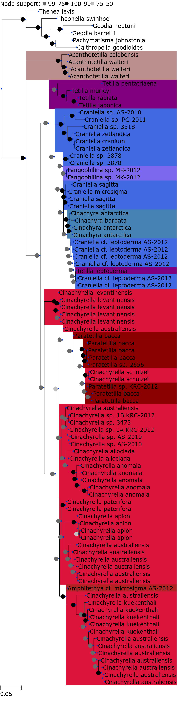
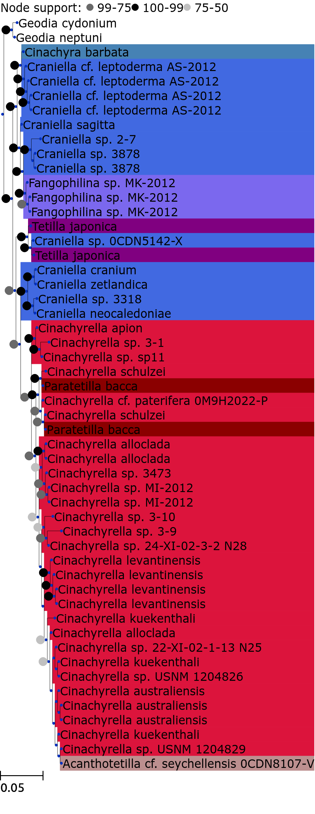
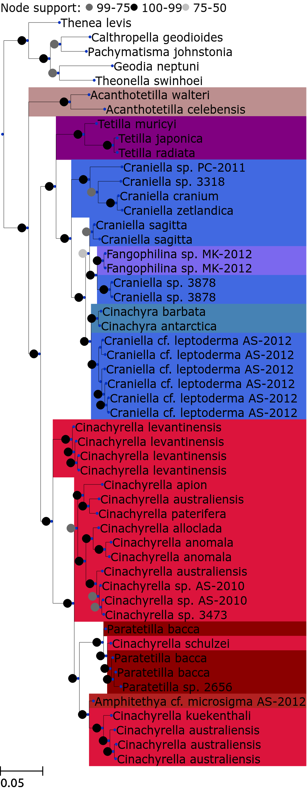
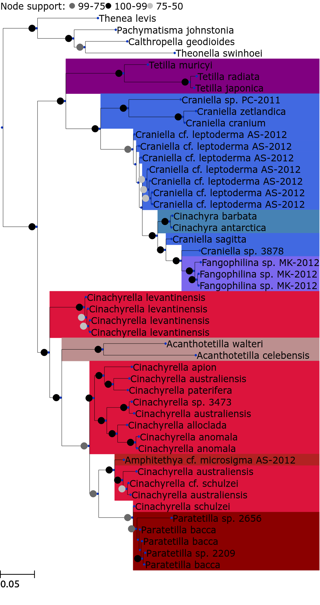

# LOCUS ALIGNMENT METHOD TRIMMING METHOD TREE METHOD
0 MT-CO1 mafftLinsi gappyout fD_fb
1 18s MuscleDefaults gappyout fD_fb
2 combined mixed mixed fD_fb_combined
3 28s MuscleDefaults gappyout fD_fb
Trees
MT-CO1
Alignment method: mafftLinsi
Trimming method: gappyout
Tree method: fD_fb
Tree Method ID: 254401417386341.34_MT-CO1@mafftLinsi@gappyout
newick format
((HM592717.1_f0:0.0278576,(HM592745.1_f0:0.034495,((AY320032.1_f0:0.0676599,EU442194.1_f0:0.0195222)100:0.028352,(EF564339.1_f0:0.0378187,HM592705.1_f0:0.0478935)100:0.0108473)100:0.0166565)100:0.0334485)100:0.0543646,((JX177909.1_f0:0.0140393,(JX177911.1_f0:1.40684e-06,(JX177908.1_f0:0.00223903,JX177907.1_f0:1.40684e-06)100:1.40684e-06)100:0.0102214)100:0.0811489,(((JX177899.1_f0:0.103709,(JX177898.1_f0:0.0087193,(HM032742.1_f0:0.00149634,JX177901.1_f0:0.00253621)100:0.0218972)100:0.018343)95:0.0173513,(((HM032750.1_f0:0.00768947,HM592668.1_f0:0.0200057)100:0.0232985,(HM032752.3_f0:0.0355525,(HM032751.1_f0:0.00286584,(HM592669.1_f0:1.40684e-06,KC122679.1_f0:1.40684e-06)31:1.40684e-06)100:0.0105742)100:0.00472461)100:0.0194984,(((HM032747.2_f0:1.40684e-06,HM032748.2_f0:1.40684e-06)100:0.0107745,(JX177918.1_f0:1.40684e-06,JX177912.1_f0:1.40684e-06)98:0.00524556)98:0.00207778,((JX177863.1_f0:0.0132684,(denovo0_f0:1.40684e-06,(JX177915.1_f0:1.40684e-06,JX177917.1_f0:1.40684e-06)100:1.40684e-06)100:1.40684e-06)100:0.00226371,((JX177914.1_f0:1.40684e-06,(JX177864.2_f0:0.0067273,(JX177867.2_f0:1.40684e-06,JX177868.2_f0:1.40684e-06)100:1.40684e-06)100:1.40684e-06)100:0.00256665,(JX177866.1_f0:0.00644086,(JX177865.1_f0:0.00361788,(JX177897.1_f0:1.40684e-06,(JX177895.1_f0:1.40684e-06,(HM032749.2_f0:1.40684e-06,(JX177916.1_f0:1.40684e-06,JX177896.1_f0:1.40684e-06)96:1.40684e-06)96:1.40684e-06)96:1.40684e-06)95:1.40684e-06)95:1.40684e-06)96:0.00443215)99:0.00600075)99:0.00314273)96:0.0118094)96:0.0105389)92:0.0173403,((AM076987.1_f0:1.40684e-06,((JX177905.1_f0:1.40684e-06,JX177903.1_f0:1.40684e-06)100:1.40684e-06,(JX177906.1_f0:1.40684e-06,JX177904.1_f0:1.40684e-06)94:1.40684e-06)100:1.40684e-06)100:0.0285032,(((JX177881.1_f0:1.40684e-06,(JX177891.1_f0:1.40684e-06,((JX177894.1_f0:0.0036361,(JX177900.1_f0:0.00104583,(JX177892.1_f0:1.40684e-06,HM032744.1_f0:1.40684e-06)100:1.40684e-06)100:1.40684e-06)100:0.00224388,((HM032746.1_f0:1.40684e-06,HM032745.1_f0:1.40684e-06)100:0.00547355,(JQ236883.1_f0:1.40684e-06,(JX177870.1_f0:0.00189259,JX177893.1_f0:1.40684e-06)95:0.0061661)95:0.00196528)95:0.00213723)95:0.0212222)95:0.0199841)79:0.0067637,((JX177880.1_f0:1.40684e-06,((JQ236882.1_f0:1.40684e-06,HM032741.1_f0:1.40684e-06)92:0.00110598,(JQ236881.1_f0:1.40684e-06,(HM032739.1_f0:1.40684e-06,HM032740.1_f0:1.40684e-06)43:1.40684e-06)43:1.40684e-06)90:1.40684e-06)81:0.00595513,(JX177913.1_f0:0.0170382,(HM032738.1_f0:1.40684e-06,(JX177886.1_f0:0.00619993,(JX177888.1_f0:0.0064125,(JX177887.1_f0:0.00222948,(JX177885.1_f0:0.00207214,JX177884.1_f0:1.40684e-06)100:0.0150589)100:0.00200477)100:1.40684e-06)100:0.0173329)99:0.00354722)96:0.00550755)80:0.00366782)64:0.00448667,(((JX177890.1_f0:1.40684e-06,JX177889.1_f0:1.40684e-06)100:0.00727168,((EF519601.1_f0:1.40684e-06,(HM592667.1_f0:1.40684e-06,(FJ711645.1_f0:1.40684e-06,AJ843895.1_f0:1.40684e-06)56:1.40684e-06)44:1.40684e-06)100:0.0282702,(JX177876.1_f0:0.0176462,(JX177875.1_f0:0.00205091,(JX177877.1_f0:1.40684e-06,(JX177874.1_f0:0.00205139,(JX177882.1_f0:1.40684e-06,JX177879.1_f0:1.40684e-06)42:1.40684e-06)97:0.00205901)97:0.00416423)97:0.00223187)77:0.00843656)77:0.00211143)79:0.00208581,(JX177910.1_f0:0.00063932,(JX177871.1_f0:0.0206935,(FJ711646.1_f0:0.00451275,((EF519602.1_f0:1.40684e-06,(EU237479.1_f0:1.40684e-06,NC_010198.1_f0:1.40684e-06)100:1.40684e-06)100:1.40684e-06,(EF519603.1_f0:1.40684e-06,(JX177872.1_f0:0.0038466,(JX177873.1_f0:0.00207482,(JX177878.1_f0:1.40684e-06,(JX177883.1_f0:0.00204932,(JX177869.1_f0:1.40684e-06,(HM032743.1_f0:1.40684e-06,JX177902.1_f0:0.00134048)43:1.40684e-06)100:0.00479167)97:1.40684e-06)97:1.40684e-06)97:0.00242032)97:0.00907512)97:0.00244756)97:0.00172207)98:0.0157051)100:0.0213158)100:0.0126271)79:0.00601469)85:0.0240133)85:0.00655906)88:0.0307826)100:0.0543646);
nhx format
(JX177918.1_f0:1.40684e-06[&&NHX:dist=1.40683937659e-06:tree_method_id=254401417386341.34_MT-CO1@mafftLinsi@gappyout:source_identified_by=Kelly_ Michelle:annotation_references=_Reference_title_'Phylogeny of Tetillidae _Porifera_ Demospongiae_ Spirophorida_ based on three molecular markers'_ ...__ Reference_title_'Direct Submission'_ ...__:annotation_date=05-SEP-2013:source_mol_type=genomic DNA:source_specimen_voucher=NIWA_28586:annotation_organism=Fangophilina sp. MK-2012:prot_degen_prop=0:support=1.0:codon_start=2:nuc_degen_prop=0:organism=Fangophilina sp. MK-2012:source_organelle=mitochondrion:feature_id=JX177918.1_f0:db_xref=GI_392932866:record_id=JX177918.1:GC_content=38.4033613445:protein_id=AFM91900.1:annotation_keywords=_''_:product=cytochrome c oxidase subunit I:porocalyx=2:annotation_data_file_division=INV:translation=TLYLLFGAFSGMIGTGFSLLIRLELSAPGLMLGDDHLYNVMVTAHGLIMVFFLVMPVMIGGFGNWMVPLYIGAPDMAFPRLNNISFWVLPPSLILLLGSAFVEQGVGTGWTLYPPLSSIQAHSGGSVDAAIFSLHLAGISSILGAMNFITTIFNMRAPGITMDRLPLFVWSILITTYLLLLALPVLAGAITMLLTDRNFNTTFFDPAGGGDPILFQHLFWFFGHPEVYVLVLPGFGIVSQIIPTFAAKKQIFGYLGMVYAMVSIGILGFIVWAHHMFTVGMDADSRAYFSAATMIIAVPTGIKIFSWIATVVGGSLRIDTPMLWAMGFVFLFTVGGLTGIVVASSSLDVLLHDTYYVVAHFHYVLSMGAIFAIFGGVYYWFGKITGYCYNEVLGKI:calthrops=1:source_organism=Fangophilina sp. MK-2012:annotation_gi=392932865:source_db_xref=taxon_1199266:genus=Fangophilina:name=JX177918.1_f0:annotation_accessions=_'JX177918'_:source_feature_id=JX177918.1_source:transl_table=4:annotation_source=mitochondrion Fangophilina sp. MK-2012:cortex=1:gene=cox1:annotation_taxonomy=_'Eukaryota'_ 'Metazoa'_ 'Porifera'_ 'Demospongiae'_ 'Tetractinomorpha'_ 'Spirophorida'_ 'Tetillidae'_ 'Fangophilina'_:source_country=New Zealand:annotation_sequence_version=1],(((((JX177914.1_f0:1.40684e-06[&&NHX:dist=1.40683937659e-06:source_note=authority_ Cinachyra antarctica _Carter_ 1872_:tree_method_id=254401417386341.34_MT-CO1@mafftLinsi@gappyout:source_identified_by=Hooper_ John:annotation_references=_Reference_title_'Phylogeny of Tetillidae _Porifera_ Demospongiae_ Spirophorida_ based on three molecular markers'_ ...__ Reference_title_'Direct Submission'_ ...__:annotation_date=29-MAY-2014:source_mol_type=genomic DNA:source_specimen_voucher=QMG_311149:source_organelle=mitochondrion:annotation_organism=Cinachyra antarctica:prot_degen_prop=0:support=1.0:codon_start=1:nuc_degen_prop=0:organism=Cinachyra antarctica:annotation_keywords=_''_:feature_id=JX177914.1_f0:db_xref=GI_641542173:record_id=JX177914.1:GC_content=38.5620915033:protein_id=AFM91896.2:product=cytochrome c oxidase subunit I:porocalyx=2:annotation_data_file_division=INV:translation=TLYLLFGVFSGMIGTGFSLLIRLELSAPGLMLGDDHLYNVMVTAHGLIMVFFLVMPVMIGGFGNWMVPLYIGAPDMAFPRLNNISFWVLPPSLILLLGSAFVEQGVGTGWTLYPPLSSIQAHSGGSVDAAIFSLHLAGISSILGAMNFITTIFNMRAPGITMDRLPLFVWSILITTYLLLLALPVLAGAITMLLTDRNFNTTFFDPAGGGDPILFQHLFWFFGHPEVYVLVLPGFGIVSQIIPTFAAKKQIFGYL:calthrops=1:source_organism=Cinachyra antarctica:annotation_gi=392932857:source_db_xref=taxon_1199249:genus=Cinachyra:name=JX177914.1_f0:annotation_accessions=_'JX177914'_:source_feature_id=JX177914.1_source:transl_table=4:annotation_source=mitochondrion Cinachyra antarctica:cortex=2:gene=cox1:annotation_taxonomy=_'Eukaryota'_ 'Metazoa'_ 'Porifera'_ 'Demospongiae'_ 'Tetractinomorpha'_ 'Spirophorida'_ 'Tetillidae'_ 'Cinachyra'_:source_country=Antarctica:annotation_sequence_version=1],(JX177864.2_f0:0.0067273[&&NHX:dist=0.00672729976046:source_note=authority_ Cinachyra barbata Sollas_ 1886:tree_method_id=254401417386341.34_MT-CO1@mafftLinsi@gappyout:source_identified_by=Kelly_ Michelle:annotation_references=_Reference_title_'Phylogeny of Tetillidae _Porifera_ Demospongiae_ Spirophorida_ based on three molecular markers'_ ...__ Reference_title_'Direct Submission'_ ...__ Reference_title_'Direct Submission'_ ...__:annotation_date=29-MAY-2014:source_mol_type=genomic DNA:source_specimen_voucher=NIWA_28877:source_organelle=mitochondrion:annotation_organism=Cinachyra barbata:annotation_comment=On May 29_ 2014 this sequence version replaced gi_393885995.:prot_degen_prop=0:support=1.0:codon_start=3:nuc_degen_prop=0:organism=Cinachyra barbata:source_organism=Cinachyra barbata:feature_id=JX177864.2_f0:db_xref=GI_641542072:record_id=JX177864.2:GC_content=39.1596638655:protein_id=AFN26012.3:product=cytochrome c oxidase subunit I:porocalyx=2:annotation_data_file_division=INV:translation=SAPGLMLGDDHLYNVTVTAHGLIMVFFLVMPVMIGGFGNWMVPLYIGAPDMAFPRLNNISFWVLPPSLILLLGSAFVEQGVGTGWTLYPPLSSIQAHSGGSVDAAIFSLHLAGISSILGAMNFITTIFNMRAPGITMDRLPLFVWSILITTYLLLLALPVLAGAITMLLTDRNFNTTFFDPAGGGDPILFQHLFPEV:calthrops=1:annotation_keywords=_''_:annotation_gi=641483952:source_db_xref=taxon_1199250:genus=Cinachyra:name=JX177864.2_f0:annotation_accessions=_'JX177864'_:source_feature_id=JX177864.2_source:transl_table=4:annotation_source=mitochondrion Cinachyra barbata:cortex=2:gene=cox1:annotation_taxonomy=_'Eukaryota'_ 'Metazoa'_ 'Porifera'_ 'Demospongiae'_ 'Tetractinomorpha'_ 'Spirophorida'_ 'Tetillidae'_ 'Cinachyra'_:source_country=New Zealand:annotation_sequence_version=2],(JX177867.2_f0:1.40684e-06[&&NHX:dist=1.40683937659e-06:source_note=authority_ Cinachyra antarctica _Carter_ 1872_:tree_method_id=254401417386341.34_MT-CO1@mafftLinsi@gappyout:source_identified_by=Kelly_ Michelle:annotation_references=_Reference_title_'Phylogeny of Tetillidae _Porifera_ Demospongiae_ Spirophorida_ based on three molecular markers'_ ...__ Reference_title_'Direct Submission'_ ...__ Reference_title_'Direct Submission'_ ...__:annotation_date=29-MAY-2014:source_mol_type=genomic DNA:source_specimen_voucher=NIWA_28957:source_organelle=mitochondrion:annotation_organism=Cinachyra antarctica:annotation_comment=On May 29_ 2014 this sequence version replaced gi_393886001.:prot_degen_prop=0:support=1.0:codon_start=3:nuc_degen_prop=0:organism=Cinachyra antarctica:source_organism=Cinachyra antarctica:feature_id=JX177867.2_f0:db_xref=GI_641542073:record_id=JX177867.2:GC_content=39.173553719:protein_id=AFN26015.3:product=cytochrome c oxidase subunit I:porocalyx=2:annotation_data_file_division=INV:translation=LLIRLELSAPGLMLGDDHLYNVMVTAHGLIMVFFLVMPVMIGGFGNWMVPLYIGAPDMAFPRLNNISFWVLPPSLILLLGSAFVEQGVGTGWTLYPPLSSIQAHSGGSVDAAIFSLHLAGISSILGAMNFITTIFNMRAPGITMDRLPLFVWSILITTYLLLLALPVLAGAITMLLTDRNFNTTFFDPAGGGDPILFQHLF:calthrops=1:annotation_keywords=_''_:annotation_gi=641483956:source_db_xref=taxon_1199249:genus=Cinachyra:name=JX177867.2_f0:annotation_accessions=_'JX177867'_:source_feature_id=JX177867.2_source:transl_table=4:annotation_source=mitochondrion Cinachyra antarctica:cortex=2:gene=cox1:annotation_taxonomy=_'Eukaryota'_ 'Metazoa'_ 'Porifera'_ 'Demospongiae'_ 'Tetractinomorpha'_ 'Spirophorida'_ 'Tetillidae'_ 'Cinachyra'_:source_country=New Zealand:annotation_sequence_version=2],JX177868.2_f0:1.40684e-06[&&NHX:dist=1.40683937659e-06:source_note=authority_ Cinachyra antarctica _Carter_ 1872_:tree_method_id=254401417386341.34_MT-CO1@mafftLinsi@gappyout:source_identified_by=Kelly_ Michelle:annotation_references=_Reference_title_'Phylogeny of Tetillidae _Porifera_ Demospongiae_ Spirophorida_ based on three molecular markers'_ ...__ Reference_title_'Direct Submission'_ ...__ Reference_title_'Direct Submission'_ ...__:annotation_date=29-MAY-2014:source_mol_type=genomic DNA:source_specimen_voucher=NIWA_28951:source_organelle=mitochondrion:annotation_organism=Cinachyra antarctica:annotation_comment=On May 29_ 2014 this sequence version replaced gi_393886003.:prot_degen_prop=0:support=1.0:codon_start=3:nuc_degen_prop=0:organism=Cinachyra antarctica:source_organism=Cinachyra antarctica:feature_id=JX177868.2_f0:db_xref=GI_641542074:record_id=JX177868.2:GC_content=39.173553719:protein_id=AFN26016.3:product=cytochrome c oxidase subunit I:porocalyx=2:annotation_data_file_division=INV:translation=LLIRLELSAPGLMLGDDHLYNVMVTAHGLIMVFFLVMPVMIGGFGNWMVPLYIGAPDMAFPRLNNISFWVLPPSLILLLGSAFVEQGVGTGWTLYPPLSSIQAHSGGSVDAAIFSLHLAGISSILGAMNFITTIFNMRAPGITMDRLPLFVWSILITTYLLLLALPVLAGAITMLLTDRNFNTTFFDPAGGGDPILFQHLF:calthrops=1:annotation_keywords=_''_:annotation_gi=641483958:source_db_xref=taxon_1199249:genus=Cinachyra:name=JX177868.2_f0:annotation_accessions=_'JX177868'_:source_feature_id=JX177868.2_source:transl_table=4:annotation_source=mitochondrion Cinachyra antarctica:cortex=2:gene=cox1:annotation_taxonomy=_'Eukaryota'_ 'Metazoa'_ 'Porifera'_ 'Demospongiae'_ 'Tetractinomorpha'_ 'Spirophorida'_ 'Tetillidae'_ 'Cinachyra'_:source_country=New Zealand:annotation_sequence_version=2])100:1.40684e-06[&&NHX:support=100.0:dist=1.40683937659e-06:name=NoName:tree_method_id=254401417386341.34_MT-CO1@mafftLinsi@gappyout])100:1.40684e-06[&&NHX:support=100.0:dist=1.40683937659e-06:name=NoName:tree_method_id=254401417386341.34_MT-CO1@mafftLinsi@gappyout])100:0.00256665[&&NHX:support=100.0:dist=0.00256664956244:name=NoName:tree_method_id=254401417386341.34_MT-CO1@mafftLinsi@gappyout],(JX177866.1_f0:0.00644086[&&NHX:dist=0.0064408629153:tree_method_id=254401417386341.34_MT-CO1@mafftLinsi@gappyout:source_identified_by=Kelly_ Michelle:annotation_references=_Reference_title_'Phylogeny of Tetillidae _Porifera_ Demospongiae_ Spirophorida_ based on three molecular markers'_ ...__ Reference_title_'Direct Submission'_ ...__:annotation_date=29-MAR-2013:source_mol_type=genomic DNA:source_specimen_voucher=NIWA_36097:annotation_organism=Craniella cf. leptoderma AS-2012:prot_degen_prop=0:support=1.0:codon_start=1:nuc_degen_prop=0:organism=Craniella cf. leptoderma AS-2012:source_organelle=mitochondrion:feature_id=JX177866.1_f0:db_xref=GI_393886000:record_id=JX177866.1:GC_content=39.9345335516:protein_id=AFN26014.1:annotation_keywords=_''_:product=cytochrome c oxidase subunit I:porocalyx=1:annotation_data_file_division=INV:translation=LSAPGLMLGDDHLYNVMVTAHGLIMVFFLVMPVMIGGFGNWMVPLYIGAPDMAFPRLNNISFWVLPPSLILLLGSAFVEQGVGTGWTLYPPLSSIQAHSGGSVDAAIFSLHLAGISSILGAMNFITTIFNMRAPGITMDRLPLFVWSILITTYLLLLALPVLAGAITMLLTDRNFNTTFFDPAGGGDPILFQHLFWFFGHPEV:calthrops=1:source_organism=Craniella cf. leptoderma AS-2012:annotation_gi=393885999:source_db_xref=taxon_1200910:genus=Craniella:name=JX177866.1_f0:annotation_accessions=_'JX177866'_:source_feature_id=JX177866.1_source:transl_table=4:annotation_source=mitochondrion Craniella cf. leptoderma AS-2012:cortex=2:gene=cox1:annotation_taxonomy=_'Eukaryota'_ 'Metazoa'_ 'Porifera'_ 'Demospongiae'_ 'Tetractinomorpha'_ 'Spirophorida'_ 'Tetillidae'_ 'Craniella'_:source_country=New Zealand:annotation_sequence_version=1],((((HM032749.2_f0:1.40684e-06[&&NHX:dist=1.40683937659e-06:tree_method_id=254401417386341.34_MT-CO1@mafftLinsi@gappyout:annotation_references=_Reference_title_'Diversity of sponge mitochondrial introns revealed by cox 1 sequences of Tetillidae'_ ...__ Reference_title_'Direct Submission'_ ...__ Reference_title_'Direct Submission'_ ...__:annotation_date=03-APR-2013:source_mol_type=genomic DNA:source_specimen_voucher=QMG315031:annotation_organism=Tetilla leptoderma:annotation_comment=On May 31_ 2011 this sequence version replaced gi_308125273.:prot_degen_prop=0:support=1.0:codon_start=1:nuc_degen_prop=0:organism=Tetilla leptoderma:source_organelle=mitochondrion:feature_id=HM032749.2_f0:db_xref=GI_308125274:record_id=HM032749.2:GC_content=39.1534391534:protein_id=ADO14988.1:annotation_keywords=_''_:product=cytochrome c oxidase subunit I:porocalyx=1:annotation_data_file_division=INV:translation=TLYLLFGVFSGMIGTGFSLLIRLELSAPGLMLGDDHLYNVMVTAHGLIMVFFLVMPVMIGGFGNWMVPLYIGAPDMAFPRLNNISFWVLPPSLILLLGSAFVEQGVGTGWTLYPPLSSIQAHSGGSVDAAIFSLHLAGISSILGAMNFITTIFNMRAPGITMDRLPLFVWSILITTYLLLLALPVLAGAITMLLTDRNFNTTFFDPAGGGDPILFQHLFWFFGHPEVYVLVLPGFGIVSQIIPTFAAKKQIFGYLGMVYAMVSIGILGFIVWAHHMFTVGMDADSRAYFSAATMIIAVPTGIKIFSWIATVVGGSLRIDTPMLWAMGFVFLFTVGGLTGIVVASSSLDVLLHDTYYVVAHFHYVLSMGAIFAIFGGVY:calthrops=1:source_organism=Tetilla leptoderma:annotation_gi=334350723:source_db_xref=taxon_885872:genus=Tetilla:name=HM032749.2_f0:annotation_accessions=_'HM032749'_:source_feature_id=HM032749.2_source:EC_number=1.6.3.1:transl_table=4:annotation_source=mitochondrion Tetilla leptoderma:cortex=1:gene=cox1:annotation_taxonomy=_'Eukaryota'_ 'Metazoa'_ 'Porifera'_ 'Demospongiae'_ 'Tetractinomorpha'_ 'Spirophorida'_ 'Tetillidae'_ 'Tetilla'_:source_country=Antarctica:annotation_sequence_version=2],(JX177916.1_f0:1.40684e-06[&&NHX:dist=1.40683937659e-06:source_note=authority_ Craniella cf. leptoderma AS-2012 Kirkpatrick_ 1908:tree_method_id=254401417386341.34_MT-CO1@mafftLinsi@gappyout:source_identified_by=Kelly_ Michelle:annotation_references=_Reference_title_'Phylogeny of Tetillidae _Porifera_ Demospongiae_ Spirophorida_ based on three molecular markers'_ ...__ Reference_title_'Direct Submission'_ ...__:annotation_date=05-SEP-2013:source_mol_type=genomic DNA:source_specimen_voucher=NIWA_52077:source_organelle=mitochondrion:annotation_organism=Craniella cf. leptoderma AS-2012:prot_degen_prop=0:support=1.0:codon_start=3:nuc_degen_prop=0:organism=Craniella cf. leptoderma AS-2012:annotation_keywords=_''_:feature_id=JX177916.1_f0:db_xref=GI_392932862:record_id=JX177916.1:GC_content=38.6768447837:protein_id=AFM91898.1:product=cytochrome c oxidase subunit I:porocalyx=1:annotation_data_file_division=INV:translation=SGMIGTGFSLLIRLELSAPGLMLGDDHLYNVMVTAHGLIMVFFLVMPVMIGGFGNWMVPLYIGAPDMAFPRLNNISFWVLPPSLILLLGSAFVEQGVGTGWTLYPPLSSIQAHSGGSVDAAIFSLHLAGISSILGAMNFITTIFNMRAPGITMDRLPLFVWSILITTYLLLLALPVLAGAITMLLTDRNFNTTFFDPAGGGDPILFQHLFWFFGHPEVYVLVLPGFGIVSQIIPTFAAKKQIFGYLGMVYAMVSIGILGFIVWAHHMFTVGMDADSRAYFSAATMIIAVPTGIKIFSWIATVVGGSLRIDTPMLWAMGFVFLFTVGGLTGIVVASSSLDVLLHDTYYVVAHFHYVLSMGAIFAIFGGVYYWFGKITGYCYNEVLGKIHFWLM:calthrops=1:source_organism=Craniella cf. leptoderma AS-2012:annotation_gi=392932861:source_db_xref=taxon_1200910:genus=Craniella:name=JX177916.1_f0:annotation_accessions=_'JX177916'_:source_feature_id=JX177916.1_source:transl_table=4:annotation_source=mitochondrion Craniella cf. leptoderma AS-2012:cortex=2:gene=cox1:annotation_taxonomy=_'Eukaryota'_ 'Metazoa'_ 'Porifera'_ 'Demospongiae'_ 'Tetractinomorpha'_ 'Spirophorida'_ 'Tetillidae'_ 'Craniella'_:source_country=New Zealand:annotation_sequence_version=1],JX177896.1_f0:1.40684e-06[&&NHX:dist=1.40683937659e-06:source_note=authority_ Craniella cf. leptoderma AS-2012 Kirkpatrick_ 1908:tree_method_id=254401417386341.34_MT-CO1@mafftLinsi@gappyout:source_identified_by=Kelly_ Michelle:annotation_references=_Reference_title_'Phylogeny of Tetillidae _Porifera_ Demospongiae_ Spirophorida_ based on three molecular markers'_ ...__ Reference_title_'Direct Submission'_ ...__:annotation_date=05-SEP-2013:source_mol_type=genomic DNA:source_specimen_voucher=NIWA_28507:source_organelle=mitochondrion:annotation_organism=Craniella cf. leptoderma AS-2012:prot_degen_prop=0:support=1.0:codon_start=1:nuc_degen_prop=0:organism=Craniella cf. leptoderma AS-2012:annotation_keywords=_''_:feature_id=JX177896.1_f0:db_xref=GI_392932822:record_id=JX177896.1:GC_content=39.0178571429:protein_id=AFM91878.1:product=cytochrome c oxidase subunit I:porocalyx=1:annotation_data_file_division=INV:translation=MIGTGFSLLIRLELSAPGLMLGDDHLYNVMVTAHGLIMVFFLVMPVMIGGFGNWMVPLYIGAPDMAFPRLNNISFWVLPPSLILLLGSAFVEQGVGTGWTLYPPLSSIQAHSGGSVDAAIFSLHLAGISSILGAMNFITTIFNMRAPGITMDRLPLFVWSILITTYLLLLALPVLAGAITMLLTDRNFNTTFFDPAGGGDPILFQHLFWFFGHPEVYVLVLPGFGIVSQIIPTFAAKKQIFGYLGMVYAMVSIGILGFIVWAHHMFTVGMDADSRAYFSAATMIIAVPTGIKIFSWIATVVGGSLRIDTPMLWAMGFVFLFTVGGLTGIVVASSSLDVLLHDTYYVVAHFHYVLSMGAIFAIFGGVYYWFGKI:calthrops=1:source_organism=Craniella cf. leptoderma AS-2012:annotation_gi=392932821:source_db_xref=taxon_1200910:genus=Craniella:name=JX177896.1_f0:annotation_accessions=_'JX177896'_:source_feature_id=JX177896.1_source:transl_table=4:annotation_source=mitochondrion Craniella cf. leptoderma AS-2012:cortex=2:gene=cox1:annotation_taxonomy=_'Eukaryota'_ 'Metazoa'_ 'Porifera'_ 'Demospongiae'_ 'Tetractinomorpha'_ 'Spirophorida'_ 'Tetillidae'_ 'Craniella'_:source_country=New Zealand:annotation_sequence_version=1])96:1.40684e-06[&&NHX:support=96.0:dist=1.40683937659e-06:name=NoName:tree_method_id=254401417386341.34_MT-CO1@mafftLinsi@gappyout])96:1.40684e-06[&&NHX:support=96.0:dist=1.40683937659e-06:name=NoName:tree_method_id=254401417386341.34_MT-CO1@mafftLinsi@gappyout],JX177895.1_f0:1.40684e-06[&&NHX:dist=1.40683937659e-06:source_note=authority_ Craniella cf. leptoderma AS-2012 Kirkpatrick_ 1908:tree_method_id=254401417386341.34_MT-CO1@mafftLinsi@gappyout:source_identified_by=Kelly_ Michelle:annotation_references=_Reference_title_'Phylogeny of Tetillidae _Porifera_ Demospongiae_ Spirophorida_ based on three molecular markers'_ ...__ Reference_title_'Direct Submission'_ ...__:annotation_date=05-SEP-2013:source_mol_type=genomic DNA:source_specimen_voucher=NIWA_28524:source_organelle=mitochondrion:annotation_organism=Craniella cf. leptoderma AS-2012:prot_degen_prop=0:support=1.0:codon_start=2:nuc_degen_prop=0:organism=Craniella cf. leptoderma AS-2012:annotation_keywords=_''_:feature_id=JX177895.1_f0:db_xref=GI_392932820:record_id=JX177895.1:GC_content=39.5061728395:protein_id=AFM91877.1:product=cytochrome c oxidase subunit I:porocalyx=1:annotation_data_file_division=INV:translation=TGFSLLIRLELSAPGLMLGDDHLYNVMVTAHGLIMVFFLVMPVMIGGFGNWMVPLYIGAPDMAFPRLNNISFWVLPPSLILLLGSAFVEQGVGTGWTLYPPLSSIQAHSGGSVDAAIFSLHLAGISSILGAMNFITTIFNMRAPGITMDRLPLFVWSILITTYLLLLALPVLAGAITMLLTDRNFNTTFFDPAGGGDPILFQHLFWFFGHPEVYVLVLPGFGIVSQIIPTFAAKKQIFGYLG:calthrops=1:source_organism=Craniella cf. leptoderma AS-2012:annotation_gi=392932819:source_db_xref=taxon_1200910:genus=Craniella:name=JX177895.1_f0:annotation_accessions=_'JX177895'_:source_feature_id=JX177895.1_source:transl_table=4:annotation_source=mitochondrion Craniella cf. leptoderma AS-2012:cortex=2:gene=cox1:annotation_taxonomy=_'Eukaryota'_ 'Metazoa'_ 'Porifera'_ 'Demospongiae'_ 'Tetractinomorpha'_ 'Spirophorida'_ 'Tetillidae'_ 'Craniella'_:source_country=New Zealand:annotation_sequence_version=1])96:1.40684e-06[&&NHX:support=96.0:dist=1.40683937659e-06:name=NoName:tree_method_id=254401417386341.34_MT-CO1@mafftLinsi@gappyout],JX177897.1_f0:1.40684e-06[&&NHX:dist=1.40683937659e-06:source_note=authority_ Craniella cf. leptoderma AS-2012 Kirkpatrick_ 1908:tree_method_id=254401417386341.34_MT-CO1@mafftLinsi@gappyout:source_identified_by=Kelly_ Michelle:annotation_references=_Reference_title_'Phylogeny of Tetillidae _Porifera_ Demospongiae_ Spirophorida_ based on three molecular markers'_ ...__ Reference_title_'Direct Submission'_ ...__:annotation_date=05-SEP-2013:source_mol_type=genomic DNA:source_specimen_voucher=NIWA_28496:source_organelle=mitochondrion:annotation_organism=Craniella cf. leptoderma AS-2012:prot_degen_prop=0:support=1.0:codon_start=1:nuc_degen_prop=0:organism=Craniella cf. leptoderma AS-2012:annotation_keywords=_''_:feature_id=JX177897.1_f0:db_xref=GI_392932824:record_id=JX177897.1:GC_content=39.514978602:protein_id=AFM91879.1:product=cytochrome c oxidase subunit I:porocalyx=1:annotation_data_file_division=INV:translation=MIGTGFSLLIRLELSAPGLMLGDDHLYNVMVTAHGLIMVFFLVMPVMIGGFGNWMVPLYIGAPDMAFPRLNNISFWVLPPSLILLLGSAFVEQGVGTGWTLYPPLSSIQAHSGGSVDAAIFSLHLAGISSILGAMNFITTIFNMRAPGITMDRLPLFVWSILITTYLLLLALPVLAGAITMLLTDRNFNTTFFDPAGGGDPILFQHLFWFFGHPEVYVLVLPGFGIVSQIIPT:calthrops=1:source_organism=Craniella cf. leptoderma AS-2012:annotation_gi=392932823:source_db_xref=taxon_1200910:genus=Craniella:name=JX177897.1_f0:annotation_accessions=_'JX177897'_:source_feature_id=JX177897.1_source:transl_table=4:annotation_source=mitochondrion Craniella cf. leptoderma AS-2012:cortex=2:gene=cox1:annotation_taxonomy=_'Eukaryota'_ 'Metazoa'_ 'Porifera'_ 'Demospongiae'_ 'Tetractinomorpha'_ 'Spirophorida'_ 'Tetillidae'_ 'Craniella'_:source_country=New Zealand:annotation_sequence_version=1])95:1.40684e-06[&&NHX:support=95.0:dist=1.40683937659e-06:name=NoName:tree_method_id=254401417386341.34_MT-CO1@mafftLinsi@gappyout],JX177865.1_f0:0.00361788[&&NHX:dist=0.00361788043001:tree_method_id=254401417386341.34_MT-CO1@mafftLinsi@gappyout:source_identified_by=Kelly_ Michelle:annotation_references=_Reference_title_'Phylogeny of Tetillidae _Porifera_ Demospongiae_ Spirophorida_ based on three molecular markers'_ ...__ Reference_title_'Direct Submission'_ ...__:annotation_date=29-MAR-2013:source_mol_type=genomic DNA:source_specimen_voucher=NIWA_28910:annotation_organism=Craniella cf. leptoderma AS-2012:prot_degen_prop=0:support=1.0:codon_start=1:nuc_degen_prop=0:organism=Craniella cf. leptoderma AS-2012:source_organelle=mitochondrion:feature_id=JX177865.1_f0:db_xref=GI_393885998:record_id=JX177865.1:GC_content=40.6533575318:protein_id=AFN26013.1:annotation_keywords=_''_:product=cytochrome c oxidase subunit I:porocalyx=1:annotation_data_file_division=INV:translation=GLMLGDDHLYNVMVTAHGLIMVFFLVMPVMIGGFGNWMVPLYIGAPDMAFPRLNNISFWVLPPSLILLLGSAFVEQGVGTGWTLYPPLSSIQAHSGGSVDAAIFSLHLAGISSILGAMNFITTIFNMRAPGITMDRLPLFVWSILITTYLLLLALPVLAGAITVLLTDRNFNTTFFDPAGGGDP:calthrops=1:source_organism=Craniella cf. leptoderma AS-2012:annotation_gi=393885997:source_db_xref=taxon_1200910:genus=Craniella:name=JX177865.1_f0:annotation_accessions=_'JX177865'_:source_feature_id=JX177865.1_source:transl_table=4:annotation_source=mitochondrion Craniella cf. leptoderma AS-2012:cortex=2:gene=cox1:annotation_taxonomy=_'Eukaryota'_ 'Metazoa'_ 'Porifera'_ 'Demospongiae'_ 'Tetractinomorpha'_ 'Spirophorida'_ 'Tetillidae'_ 'Craniella'_:source_country=New Zealand:annotation_sequence_version=1])95:1.40684e-06[&&NHX:support=95.0:dist=1.40683937659e-06:name=NoName:tree_method_id=254401417386341.34_MT-CO1@mafftLinsi@gappyout])96:0.00443215[&&NHX:support=96.0:dist=0.0044321544093:name=NoName:tree_method_id=254401417386341.34_MT-CO1@mafftLinsi@gappyout])99:0.00600075[&&NHX:support=99.0:dist=0.00600075120808:name=NoName:tree_method_id=254401417386341.34_MT-CO1@mafftLinsi@gappyout],(JX177863.1_f0:0.0132684[&&NHX:dist=0.0132683811527:source_note=authority_ Craniella sagitta _Lendenfeld_ 1907_:tree_method_id=254401417386341.34_MT-CO1@mafftLinsi@gappyout:source_identified_by=Kelly_ Michelle:annotation_references=_Reference_title_'Phylogeny of Tetillidae _Porifera_ Demospongiae_ Spirophorida_ based on three molecular markers'_ ...__ Reference_title_'Direct Submission'_ ...__:annotation_date=29-MAR-2013:source_mol_type=genomic DNA:source_specimen_voucher=NIWA_28929:source_organelle=mitochondrion:annotation_organism=Craniella sagitta:prot_degen_prop=0:support=1.0:codon_start=2:nuc_degen_prop=0:organism=Craniella sagitta:annotation_keywords=_''_:feature_id=JX177863.1_f0:db_xref=GI_393885994:record_id=JX177863.1:GC_content=40:protein_id=AFN26011.1:product=cytochrome c oxidase subunit I:porocalyx=1:annotation_data_file_division=INV:translation=LSAPGLMLGDDHLYNVTLTAHGLIMVFFLVMPVMIGGFGNWMVPLYIGAPDMAFPRLNNISFWVLPPSLILLLGSAFVEQGVGTGWTLYPPLSSIQAHSGGSVDAAIFSLHLAGISSILGAMNFITTIFNMRAPGITMDRLPLFVWSILITTYLLLLALPVLAGAITMLLTDRNFNTTFFDPAGGGDPILFQHLFWFFGHPEV:calthrops=1:source_organism=Craniella sagitta:annotation_gi=393885993:source_db_xref=taxon_1199254:genus=Craniella:name=JX177863.1_f0:annotation_accessions=_'JX177863'_:source_feature_id=JX177863.1_source:transl_table=4:annotation_source=mitochondrion Craniella sagitta:cortex=2:gene=cox1:annotation_taxonomy=_'Eukaryota'_ 'Metazoa'_ 'Porifera'_ 'Demospongiae'_ 'Tetractinomorpha'_ 'Spirophorida'_ 'Tetillidae'_ 'Craniella'_:source_country=New Zealand:annotation_sequence_version=1],(denovo0_f0:1.40684e-06[&&NHX:dist=1.40683937659e-06:tree_method_id=254401417386341.34_MT-CO1@mafftLinsi@gappyout:annotation_taxonomy=_"_'null'_"_:genus=Craniella:feature_id=denovo0_f0:prot_degen_prop=0:support=1.0:codon_start=1:nuc_degen_prop=0:porocalyx=1:record_id=denovo0:GC_content=39.1380826737:product=cytochrome c oxidase subunit I:translation=MIGTGFSLLIRLELSAPGLMLGDDHLYNVMVTAHGLIMVFFLVMPVMIGGFGNWMVPLYIGAPDMAFPRLNNISFWVLPPSLILLLGSAFVEQGVGTGWTLYPPLSSIQAHSGGSVDAAIFSLHLAGISSILGAMNFITTIFNMRAPGITMDRLPLFVWSILITTYLLLLALPVLAGAITMLLTDRNFNTTFFDPAGGGDPILFQHLFWFFGHPEVYVLVLPGFGIVSQIIPTFAAKKQIFGYLGMVYAMVSIGILGFIVWAHHMFTVGMDADSRAYFSAATMIIAVPTGIKIFSWIATVVGGSLRIDTPMLWAMGFVFLFTVGGLTGIVVASNSLDVLLHDTYYVVAHFHYVLSMGAIFAIFGGVYYWFGKITGYCYN:calthrops=1:source_original_id=NIWA2850:name=denovo0_f0:source_feature_id=denovo0_source:transl_table=4:source_original_desc=Craniella microsigma cox1:cortex=2:gene=cox1:organism=Craniella microsigma],(JX177915.1_f0:1.40684e-06[&&NHX:dist=1.40683937659e-06:source_note=authority_ Craniella sagitta _Lendenfeld_ 1907_:tree_method_id=254401417386341.34_MT-CO1@mafftLinsi@gappyout:source_identified_by=Kelly_ Michelle:annotation_references=_Reference_title_'Phylogeny of Tetillidae _Porifera_ Demospongiae_ Spirophorida_ based on three molecular markers'_ ...__ Reference_title_'Direct Submission'_ ...__:annotation_date=05-SEP-2013:source_mol_type=genomic DNA:source_specimen_voucher=NIWA_28491:source_organelle=mitochondrion:annotation_organism=Craniella sagitta:prot_degen_prop=0:support=1.0:codon_start=1:nuc_degen_prop=0:organism=Craniella sagitta:annotation_keywords=_''_:feature_id=JX177915.1_f0:db_xref=GI_392932860:record_id=JX177915.1:GC_content=39.3041237113:protein_id=AFM91897.1:product=cytochrome c oxidase subunit I:porocalyx=1:annotation_data_file_division=INV:translation=GTGFSLLIRLELSAPGLMLGDDHLYNVMVTAHGLIMVFFLVMPVMIGGFGNWMVPLYIGAPDMAFPRLNNISFWVLPPSLILLLGSAFVEQGVGTGWTLYPPLSSIQAHSGGSVDAAIFSLHLAGISSILGAMNFITTIFNMRAPGITMDRLPLFVWSILITTYLLLLALPVLAGAITMLLTDRNFNTTFFDPAGGGDPILFQHLFWFFGHPEVYVLVLPGFGIVSQIIPTFAAKKQIFGYLGMVYAMVSIGILGFIV:calthrops=1:source_organism=Craniella sagitta:annotation_gi=392932859:source_db_xref=taxon_1199254:genus=Craniella:name=JX177915.1_f0:annotation_accessions=_'JX177915'_:source_feature_id=JX177915.1_source:transl_table=4:annotation_source=mitochondrion Craniella sagitta:cortex=2:gene=cox1:annotation_taxonomy=_'Eukaryota'_ 'Metazoa'_ 'Porifera'_ 'Demospongiae'_ 'Tetractinomorpha'_ 'Spirophorida'_ 'Tetillidae'_ 'Craniella'_:source_country=New Zealand:annotation_sequence_version=1],JX177917.1_f0:1.40684e-06[&&NHX:dist=1.40683937659e-06:source_note=authority_ Craniella sagitta _Lendenfeld_ 1907_:tree_method_id=254401417386341.34_MT-CO1@mafftLinsi@gappyout:source_identified_by=Kelly_ Michelle:annotation_references=_Reference_title_'Phylogeny of Tetillidae _Porifera_ Demospongiae_ Spirophorida_ based on three molecular markers'_ ...__ Reference_title_'Direct Submission'_ ...__:annotation_date=05-SEP-2013:source_mol_type=genomic DNA:source_specimen_voucher=NIWA_25206:source_organelle=mitochondrion:annotation_organism=Craniella sagitta:prot_degen_prop=0:support=1.0:codon_start=2:nuc_degen_prop=0:organism=Craniella sagitta:annotation_keywords=_''_:feature_id=JX177917.1_f0:db_xref=GI_392932864:record_id=JX177917.1:GC_content=39.6148555708:protein_id=AFM91899.1:product=cytochrome c oxidase subunit I:porocalyx=1:annotation_data_file_division=INV:translation=MIGTGFSLLIRLELSAPGLMLGDDHLYNVMVTAHGLIMVFFLVMPVMIGGFGNWMVPLYIGAPDMAFPRLNNISFWVLPPSLILLLGSAFVEQGVGTGWTLYPPLSSIQAHSGGSVDAAIFSLHLAGISSILGAMNFITTIFNMRAPGITMDRLPLFVWSILITTYLLLLALPVLAGAITMLLTDRNFNTTFFDPAGGGDPILFQHLFWFFGHPEVYVLVLPGFGIVSQIIPTFAAKKQIFG:calthrops=1:source_organism=Craniella sagitta:annotation_gi=392932863:source_db_xref=taxon_1199254:genus=Craniella:name=JX177917.1_f0:annotation_accessions=_'JX177917'_:source_feature_id=JX177917.1_source:transl_table=4:annotation_source=mitochondrion Craniella sagitta:cortex=2:gene=cox1:annotation_taxonomy=_'Eukaryota'_ 'Metazoa'_ 'Porifera'_ 'Demospongiae'_ 'Tetractinomorpha'_ 'Spirophorida'_ 'Tetillidae'_ 'Craniella'_:source_country=New Zealand:annotation_sequence_version=1])100:1.40684e-06[&&NHX:support=100.0:dist=1.40683937659e-06:name=NoName:tree_method_id=254401417386341.34_MT-CO1@mafftLinsi@gappyout])100:1.40684e-06[&&NHX:support=100.0:dist=1.40683937659e-06:name=NoName:tree_method_id=254401417386341.34_MT-CO1@mafftLinsi@gappyout])100:0.00226371[&&NHX:support=100.0:dist=0.0022637108114:name=NoName:tree_method_id=254401417386341.34_MT-CO1@mafftLinsi@gappyout])99:0.00314273[&&NHX:support=99.0:dist=0.00314273331004:name=NoName:tree_method_id=254401417386341.34_MT-CO1@mafftLinsi@gappyout],((((((JX177911.1_f0:1.40684e-06[&&NHX:dist=1.40683937659e-06:source_note=authority_ Acanthotetilla walteri Peixinho_ Fernandez_ Oliveira_ Caires & Hajdu_ 2007:tree_method_id=254401417386341.34_MT-CO1@mafftLinsi@gappyout:annotation_references=_Reference_title_'Phylogeny of Tetillidae _Porifera_ Demospongiae_ Spirophorida_ based on three molecular markers'_ ...__ Reference_title_'Direct Submission'_ ...__:annotation_date=05-SEP-2013:source_mol_type=genomic DNA:source_specimen_voucher=UFBA_2028_POR:annotation_organism=Acanthotetilla walteri:prot_degen_prop=0:support=1.0:codon_start=2:nuc_degen_prop=0:organism=Acanthotetilla walteri:source_organelle=mitochondrion:feature_id=JX177911.1_f0:db_xref=GI_392932852:record_id=JX177911.1:GC_content=40.5963302752:protein_id=AFM91893.1:annotation_keywords=_''_:product=cytochrome c oxidase subunit I:porocalyx=2:annotation_data_file_division=INV:translation=TLYLLFGAFSGMIGTGFSLLIRLELSAPGSMLGDDHLYNVMVTAHGLIMVFFLVMPVMIGGFGNWLVPLYIGAPDMAFPRLNNISFWVLPPSLILLLGSAFVEQGVGTGWTLYPPLSSIQAHSGGSVDAAIFSLHLAGISSILGS:calthrops=1:source_organism=Acanthotetilla walteri:annotation_gi=392932851:source_db_xref=taxon_1199262:genus=Acanthotetilla:name=JX177911.1_f0:annotation_accessions=_'JX177911'_:source_feature_id=JX177911.1_source:transl_table=4:annotation_source=mitochondrion Acanthotetilla walteri:cortex=1:gene=cox1:annotation_taxonomy=_'Eukaryota'_ 'Metazoa'_ 'Porifera'_ 'Demospongiae'_ 'Tetractinomorpha'_ 'Spirophorida'_ 'Tetillidae'_ 'Acanthotetilla'_:source_country=Brazil:annotation_sequence_version=1],(JX177908.1_f0:0.00223903[&&NHX:dist=0.00223902555057:source_note=authority_ Acanthotetilla walteri Peixinho_ Fernandez_ Oliveira_ Caires & Hajdu_ 2007:tree_method_id=254401417386341.34_MT-CO1@mafftLinsi@gappyout:annotation_references=_Reference_title_'Phylogeny of Tetillidae _Porifera_ Demospongiae_ Spirophorida_ based on three molecular markers'_ ...__ Reference_title_'Direct Submission'_ ...__:annotation_date=05-SEP-2013:source_mol_type=genomic DNA:source_specimen_voucher=UFBA_1897_POR:annotation_organism=Acanthotetilla walteri:prot_degen_prop=0:support=1.0:codon_start=2:nuc_degen_prop=0:organism=Acanthotetilla walteri:source_organelle=mitochondrion:feature_id=JX177908.1_f0:db_xref=GI_392932846:record_id=JX177908.1:GC_content=39.3939393939:protein_id=AFM91890.1:annotation_keywords=_''_:product=cytochrome c oxidase subunit I:porocalyx=2:annotation_data_file_division=INV:translation=VMIGGFGNWLVPLYIGAPDMAFPRLNNISFWVLPPSLILLLGSAFVEQGVGTGWTLYPPLSSIQAHSGGSVDAAIFSLHLAGISSILGSMNFITTIFNMRAPGITMDRLPLFVWSILVTTYLLLLSLPVLAGAITMLLTDRNFNTTFFDPAGGG:calthrops=1:source_organism=Acanthotetilla walteri:annotation_gi=392932845:source_db_xref=taxon_1199262:genus=Acanthotetilla:name=JX177908.1_f0:annotation_accessions=_'JX177908'_:source_feature_id=JX177908.1_source:transl_table=4:annotation_source=mitochondrion Acanthotetilla walteri:cortex=1:gene=cox1:annotation_taxonomy=_'Eukaryota'_ 'Metazoa'_ 'Porifera'_ 'Demospongiae'_ 'Tetractinomorpha'_ 'Spirophorida'_ 'Tetillidae'_ 'Acanthotetilla'_:source_country=Brazil:annotation_sequence_version=1],JX177907.1_f0:1.40684e-06[&&NHX:dist=1.40683937659e-06:source_note=authority_ Acanthotetilla walteri Peixinho_ Fernandez_ Oliveira_ Caires & Hajdu_ 2007:tree_method_id=254401417386341.34_MT-CO1@mafftLinsi@gappyout:annotation_references=_Reference_title_'Phylogeny of Tetillidae _Porifera_ Demospongiae_ Spirophorida_ based on three molecular markers'_ ...__ Reference_title_'Direct Submission'_ ...__:annotation_date=05-SEP-2013:source_mol_type=genomic DNA:source_specimen_voucher=UFBA_2021_POR:annotation_organism=Acanthotetilla walteri:prot_degen_prop=0:support=1.0:codon_start=1:nuc_degen_prop=0:organism=Acanthotetilla walteri:source_organelle=mitochondrion:feature_id=JX177907.1_f0:db_xref=GI_392932844:record_id=JX177907.1:GC_content=38.1322957198:protein_id=AFM91889.1:annotation_keywords=_''_:product=cytochrome c oxidase subunit I:porocalyx=2:annotation_data_file_division=INV:translation=IGTLYLLFGAFSGMIGTGFSLLIRLELSAPGSMLGDDHLYNVMVTAHGLIMVFFLVMPVMIGGFGNWLVPLYIGAPDMAFPRLNNISFWVLPPSLILLLGSAFVEQGVGTGWTLYPPLSSIQAHSGGSVDAAIFSLHLAGISSILGSMNFITTIFNMRAPGITMDRLPLFVWSILVTTYLLLLSLPVLAGAITMLLTDRNFNTTFFDPAGGGDPILFQHLFWFFGHPEVYVLVLPGFGIVSQIIPTFAAKKQIFGYL:calthrops=1:source_organism=Acanthotetilla walteri:annotation_gi=392932843:source_db_xref=taxon_1199262:genus=Acanthotetilla:name=JX177907.1_f0:annotation_accessions=_'JX177907'_:source_feature_id=JX177907.1_source:transl_table=4:annotation_source=mitochondrion Acanthotetilla walteri:cortex=1:gene=cox1:annotation_taxonomy=_'Eukaryota'_ 'Metazoa'_ 'Porifera'_ 'Demospongiae'_ 'Tetractinomorpha'_ 'Spirophorida'_ 'Tetillidae'_ 'Acanthotetilla'_:source_country=Brazil:annotation_sequence_version=1])100:1.40684e-06[&&NHX:support=100.0:dist=1.40683937659e-06:name=NoName:tree_method_id=254401417386341.34_MT-CO1@mafftLinsi@gappyout])100:0.0102214[&&NHX:support=100.0:dist=0.0102213789104:name=NoName:tree_method_id=254401417386341.34_MT-CO1@mafftLinsi@gappyout],JX177909.1_f0:0.0140393[&&NHX:dist=0.0140393039548:source_note=authority_ Acanthotetilla celebensis de Voogd & van Soest_ 2007:tree_method_id=254401417386341.34_MT-CO1@mafftLinsi@gappyout:source_identified_by=de Voogd_ N.J.:annotation_references=_Reference_title_'Phylogeny of Tetillidae _Porifera_ Demospongiae_ Spirophorida_ based on three molecular markers'_ ...__ Reference_title_'Direct Submission'_ ...__:annotation_date=05-SEP-2013:source_mol_type=genomic DNA:source_specimen_voucher=RMNH_POR_2877:source_organelle=mitochondrion:annotation_organism=Acanthotetilla celebensis:prot_degen_prop=0:support=1.0:codon_start=1:nuc_degen_prop=0:organism=Acanthotetilla celebensis:annotation_keywords=_''_:feature_id=JX177909.1_f0:db_xref=GI_392932848:record_id=JX177909.1:GC_content=38.8739946381:protein_id=AFM91891.1:product=cytochrome c oxidase subunit I:porocalyx=2:annotation_data_file_division=INV:translation=IGTLYLLFGAFSGMIGTGFSLLIRLELSAPGSMLGDDHLYNVMVTAHGLIMVFFLVMPVMIGGFGNWLVPLYIGAPDMAFPRLNNISFWVLPPSLILLLGSAFVEQGVGTGWTLYPPLSSIQAHSGGSVDAAIFSLHLAGISSILGSMNFITTIFNMRAPGITMDRLPLFVWSILVTTYLLLLSLPVLAGAITMLLTDRNFNTTFFDPAGGGDPILFQHLFWFFGHPEVYVLVLPGFGIVSQIIPTFAA:calthrops=1:source_organism=Acanthotetilla celebensis:annotation_gi=392932847:source_db_xref=taxon_1199261:genus=Acanthotetilla:name=JX177909.1_f0:annotation_accessions=_'JX177909'_:source_feature_id=JX177909.1_source:transl_table=4:annotation_source=mitochondrion Acanthotetilla celebensis:cortex=1:gene=cox1:annotation_taxonomy=_'Eukaryota'_ 'Metazoa'_ 'Porifera'_ 'Demospongiae'_ 'Tetractinomorpha'_ 'Spirophorida'_ 'Tetillidae'_ 'Acanthotetilla'_:source_country=Indonesia:annotation_sequence_version=1])100:0.0811489[&&NHX:support=100.0:dist=0.0811488854603:name=NoName:tree_method_id=254401417386341.34_MT-CO1@mafftLinsi@gappyout],(HM592717.1_f0:0.0278576[&&NHX:dist=0.0278575557255:tree_method_id=254401417386341.34_MT-CO1@mafftLinsi@gappyout:source_identified_by=Paco Cardenas:annotation_references=_Reference_title_'Molecular phylogeny of the Astrophorida _Porifera_ Demospongiae_p__ reveals an unexpected high level of spicule homoplasy'_ ...__ Reference_title_'Direct Submission'_ ...__:annotation_date=22-AUG-2013:source_mol_type=genomic DNA:source_specimen_voucher=ZMBN_85230:annotation_organism=Thenea levis:prot_degen_prop=0:support=1.0:codon_start=2:nuc_degen_prop=0:organism=Thenea levis:source_organelle=mitochondrion:feature_id=HM592717.1_f0:db_xref=GI_329124409:record_id=HM592717.1:GC_content=39.6656534954:protein_id=AEB72082.1:product=cytochrome c oxidase subunit I:source_organism=Thenea levis:annotation_data_file_division=INV:translation=TLYLLFGAFSGMIGTGFSMLIRLELSAPGSMLGDDHLYNVIITAHGLIMIFFLVMPVMIGGFGNWFVPLYIGAPDMAFPRLNNISFWVLPPSLVLLLGSAFVEQGVGAGWTLYPPLSSVQAHSGGSVDAAIFSLHLAGLSSILGSMNFITTIFNMRAPGITMDRLPLFVWSILVTTYLLVLALPVLAGAITMLLTDRNFNTTFFDPAGGGDPILFQHLF:annotation_keywords=_''_:annotation_gi=329124408:source_db_xref=taxon_1006813:genus=Astrophorida:name=HM592717.1_f0:annotation_accessions=_'HM592717'_:source_feature_id=HM592717.1_source:transl_table=4:annotation_source=mitochondrion Thenea levis:source_collection_date=Nov-2008:gene=COI:annotation_taxonomy=_'Eukaryota'_ 'Metazoa'_ 'Porifera'_ 'Demospongiae'_ 'Tetractinomorpha'_ 'Astrophorida'_ 'Theneidae'_ 'Thenea'_:source_country=Norway:annotation_sequence_version=1],(HM592745.1_f0:0.034495[&&NHX:dist=0.034495011231:tree_method_id=254401417386341.34_MT-CO1@mafftLinsi@gappyout:source_identified_by=Rob van Soest:annotation_references=_Reference_title_'Molecular phylogeny of the Astrophorida _Porifera_ Demospongiae_p__ reveals an unexpected high level of spicule homoplasy'_ ...__ Reference_title_'Direct Submission'_ ...__:annotation_date=22-AUG-2013:source_mol_type=genomic DNA:source_specimen_voucher=ZMA_POR 16637:annotation_organism=Theonella swinhoei:source_collected_by=D. Youssef:prot_degen_prop=0.00456621:support=1.0:codon_start=2:nuc_degen_prop=0.0015197568:organism=Theonella swinhoei:source_organelle=mitochondrion:feature_id=HM592745.1_f0:db_xref=GI_329124465:record_id=HM592745.1:GC_content=37.0820668693:protein_id=AEB72110.1:product=cytochrome c oxidase subunit I:source_organism=Theonella swinhoei:annotation_data_file_division=INV:translation=TLYLLFGAFSGMIGTGFSFLIRLELSAPGSMLGDDHLYNVIITAHGLIMIFFLVMPVMIGGFGNWFVPLYIGAPDMAFPRLNNISFWVLPPSLILLLGSAFVEQGVGAGWTLYPPLSSIQAHSGGSVDAAIFSLHLAGISSILGSMNFITTIFNMRAPGITMDRLPLFVWSILVTTYLLILSLPVLAGAITMLLTDRNFNTTFFDPAGGGDPILFQXLF:annotation_keywords=_''_:annotation_gi=329124464:source_db_xref=taxon_37505:genus=Astrophorida:name=HM592745.1_f0:annotation_accessions=_'HM592745'_:source_feature_id=HM592745.1_source:transl_table=4:annotation_source=mitochondrion Theonella swinhoei:source_collection_date=2001:gene=COI:annotation_taxonomy=_'Eukaryota'_ 'Metazoa'_ 'Porifera'_ 'Demospongiae'_ 'Tetractinomorpha'_ 'Lithistida'_ 'Triaenosina'_ 'Theonellidae'_ 'Theonella'_:source_country=Egypt:annotation_sequence_version=1],((AY320032.1_f0:0.0676599[&&NHX:dist=0.067659906045:tree_method_id=254401417386341.34_MT-CO1@mafftLinsi@gappyout:annotation_references=_Reference_title_'Mitochondrial genomes of two demosponges provide insights into an early stage of animal evolution'_ ...__ Reference_title_'Direct Submission'_ ...__:annotation_date=31-JAN-2006:source_mol_type=genomic DNA:annotation_organism=Geodia neptuni:prot_degen_prop=0:support=1.0:codon_start=1:nuc_degen_prop=0:organism=Geodia neptuni:source_organelle=mitochondrion:feature_id=AY320032.1_f0:db_xref=GI_37961470:record_id=AY320032.1:GC_content=35.3166986564:protein_id=AAP59167.1:annotation_keywords=_''_:product=cytochrome c oxidase subunit 1:annotation_data_file_division=INV:translation=MLYLTRWLYSTNHKDIGTLYLLFGAFSGMIGTGFSFLIRLELSAPGSMLGDDHLYNVIITAHGLIMIFFLVMPVMIGGFGNWFVPLYIGAPDMAFPRLNNISFWVLPPSLILLLGSAFVEQGVGAGWTVYPPLSSVQAHSGGSVDAAIFSLHLAGISSILGSMNFITTIFNMRAPGITMDRLPLFVWSILVTTYLLILSLPVLAGAITMLLTDRNFNTTFFDPAGGGDPILFQHLFWFFGHPEVYILILPGFGIVSQIIPTFAAKKQIFGYLGMVYAMVSIGILGFIVWAHHMFTVGMDVDSRAYFSAATMIIAVPTGIKIFSWIATVVGGSLRTDTPMLWALGFVFLFTVGGLTGIVLACSSLDVLLHDTYYVVAHFHYVLSMGAVFALFGGFYYWFGKITGYCYNEVLGKIHFWLMFIGVNITFFPQHFLGLAGLPRRYSDYHDSFAGWNQISSVGSLISIVSVMVFLYLVYDAYVREIKFVGWTNDSGHYPSLEWVQASPPAHHTYNELPFVYKISN:source_organism=Geodia neptuni:annotation_gi=37961459:source_db_xref=taxon_36754:genus=Astrophorida:name=AY320032.1_f0:annotation_accessions=_'AY320032'_:source_feature_id=AY320032.1_source:EC_number=1.9.3.1:transl_table=4:annotation_source=mitochondrion Geodia neptuni:gene=cox1:annotation_taxonomy=_'Eukaryota'_ 'Metazoa'_ 'Porifera'_ 'Demospongiae'_ 'Tetractinomorpha'_ 'Astrophorida'_ 'Geodiidae'_ 'Geodia'_:annotation_sequence_version=1],EU442194.1_f0:0.0195222[&&NHX:dist=0.0195221662277:tree_method_id=254401417386341.34_MT-CO1@mafftLinsi@gappyout:annotation_references=_Reference_title_'Molecular taxonomy and phylogeny of the Geodiidae _Porifera_ Demospongiae_ Astrophorida_ - combining phylogenetic and Linnaean classification'_ ...__ Reference_title_'Direct Submission'_ ...__:annotation_date=22-AUG-2013:source_mol_type=genomic DNA:source_specimen_voucher=ZMBN 77922:annotation_organism=Geodia barretti:prot_degen_prop=0:support=1.0:codon_start=2:nuc_degen_prop=0:organism=Geodia barretti:source_organelle=mitochondrion:feature_id=EU442194.1_f0:db_xref=GI_184186394:record_id=EU442194.1:GC_content=37.2340425532:protein_id=ACC68987.1:annotation_keywords=_''_:product=cytochrome oxidase subunit I:annotation_data_file_division=INV:translation=TLYLLFGAFSGMIGTGFSFLIRLELSAPGSMLGDDHLYNVIITAHGLIMIFFLVMPVMIGGFGNWFVPLYIGAPDMAFPRLNNISFWVLPPSLMLLLGSAFVEQGVGAGWTIYPPLSSVQAHSGGSVDAAIFSLHLAGISSILGSMNFITTIFNMRAPGITMDRLPLFVWSILVTTYLLILSLPVLAGAITMLLTDRNFNTTFFDPAGGGDPILFQHLF:source_organism=Geodia barretti:annotation_gi=184186393:source_db_xref=taxon_519541:genus=Astrophorida:name=EU442194.1_f0:annotation_accessions=_'EU442194'_:source_feature_id=EU442194.1_source:transl_table=4:annotation_source=mitochondrion Geodia barretti:gene=COI:annotation_taxonomy=_'Eukaryota'_ 'Metazoa'_ 'Porifera'_ 'Demospongiae'_ 'Tetractinomorpha'_ 'Astrophorida'_ 'Geodiidae'_ 'Geodia'_:annotation_sequence_version=1])100:0.028352[&&NHX:support=100.0:dist=0.0283520182464:name=NoName:tree_method_id=254401417386341.34_MT-CO1@mafftLinsi@gappyout],(EF564339.1_f0:0.0378187[&&NHX:dist=0.037818717915:tree_method_id=254401417386341.34_MT-CO1@mafftLinsi@gappyout:annotation_references=_Reference_title_'Redescription and resurrection of Pachymatisma normani _Demospongiae_ Geodiidae__ with remarks on the genus Pachymatisma'_ ...__ Reference_title_'Direct Submission'_ ...__:annotation_date=04-DEC-2007:source_mol_type=genomic DNA:annotation_organism=Pachymatisma johnstonia:prot_degen_prop=0:source_isolate=PC172:support=1.0:codon_start=1:nuc_degen_prop=0:organism=Pachymatisma johnstonia:source_organelle=mitochondrion:feature_id=EF564339.1_f0:db_xref=GI_157062481:record_id=EF564339.1:GC_content=35.6406480118:protein_id=ABV03846.1:annotation_keywords=_''_:product=cytochrome oxidase subunit I:annotation_data_file_division=INV:translation=KDIGTLYLLFGAFSGMIGTGFSFLIRLELSAPGSMLGDDHLYNVIITAHGLIMIFFLVMPVMIGGFGNWFVPLYIGAPDMAFPRLNNISFWVLPPSLILLLGSAFVEQGVGAGWTLYPPLSSVQAHSGGSVDAAIFSLHLAGISSILGSMNFITTIFNMRAPGITMDRLPLFVWSILVTTYLLILSLPVLAGAITMLLTDRNFNTTFFDPAGGGDPILFQHLFWFF:source_organism=Pachymatisma johnstonia:annotation_gi=157062480:source_db_xref=taxon_77183:genus=Astrophorida:name=EF564339.1_f0:annotation_accessions=_'EF564339'_:source_feature_id=EF564339.1_source:transl_table=4:annotation_source=mitochondrion Pachymatisma johnstonia:gene=COI:annotation_taxonomy=_'Eukaryota'_ 'Metazoa'_ 'Porifera'_ 'Demospongiae'_ 'Tetractinomorpha'_ 'Astrophorida'_ 'Geodiidae'_ 'Pachymatisma'_:annotation_sequence_version=1],HM592705.1_f0:0.0478935[&&NHX:dist=0.0478934726001:tree_method_id=254401417386341.34_MT-CO1@mafftLinsi@gappyout:source_identified_by=Paco Cardenas:annotation_references=_Reference_title_'Molecular phylogeny of the Astrophorida _Porifera_ Demospongiae_p__ reveals an unexpected high level of spicule homoplasy'_ ...__ Reference_title_'Direct Submission'_ ...__:annotation_date=22-AUG-2013:source_mol_type=genomic DNA:source_specimen_voucher=MNHN_Porifera_ unaccessioned:annotation_organism=Calthropella geodioides:source_collected_by=Julie Reveillaud:prot_degen_prop=0:support=1.0:codon_start=2:nuc_degen_prop=0:organism=Calthropella geodioides:source_organelle=mitochondrion:feature_id=HM592705.1_f0:db_xref=GI_329124385:record_id=HM592705.1:GC_content=34.8024316109:protein_id=AEB72070.1:product=cytochrome c oxidase subunit I:source_organism=Calthropella geodioides:annotation_data_file_division=INV:translation=TLYLLFGAFSGMIGTGFSFLIRLELSAPGSMLGDDHLYNVIITAHGLIMIFFLVMPVMIGGFGNWLVPLYIGAPDMAFPRLNNISFWVLPPSLILLLGSAFVEQGVGAGWTLYPPLSSIQAHSGGSVDAAIFSLHLAGISSILGSMNFITTIFNMRAPGITMDRLPLFVWSILVTTYLLILSLPVLAGAITMLLTDRNFNTTFFDPAGGGDPILFQHLF:annotation_keywords=_''_:annotation_gi=329124384:source_db_xref=taxon_1006834:genus=Astrophorida:name=HM592705.1_f0:annotation_accessions=_'HM592705'_:source_feature_id=HM592705.1_source:transl_table=4:annotation_source=mitochondrion Calthropella geodioides:source_collection_date=2007:gene=COI:annotation_taxonomy=_'Eukaryota'_ 'Metazoa'_ 'Porifera'_ 'Demospongiae'_ 'Tetractinomorpha'_ 'Astrophorida'_ 'Calthropellidae'_ 'Calthropella'_:source_country=Italy_ Southern Italy:annotation_sequence_version=1])100:0.0108473[&&NHX:support=100.0:dist=0.0108473467967:name=NoName:tree_method_id=254401417386341.34_MT-CO1@mafftLinsi@gappyout])100:0.0166565[&&NHX:support=100.0:dist=0.0166564726904:name=NoName:tree_method_id=254401417386341.34_MT-CO1@mafftLinsi@gappyout])100:0.0334485[&&NHX:support=100.0:dist=0.0334485315507:name=NoName:tree_method_id=254401417386341.34_MT-CO1@mafftLinsi@gappyout])100:0.108729[&&NHX:support=100.0:dist=0.108729232448:name=NoName:tree_method_id=254401417386341.34_MT-CO1@mafftLinsi@gappyout])88:0.0307826[&&NHX:support=88.0:dist=0.0307825932167:name=NoName:tree_method_id=254401417386341.34_MT-CO1@mafftLinsi@gappyout],((((JX177881.1_f0:1.40684e-06[&&NHX:dist=1.40683937659e-06:source_note=authority_ Cinachyrella australiensis _Carter_ 1886_:tree_method_id=254401417386341.34_MT-CO1@mafftLinsi@gappyout:source_identified_by=Becking_ Leontine E.:annotation_references=_Reference_title_'Phylogeny of Tetillidae _Porifera_ Demospongiae_ Spirophorida_ based on three molecular markers'_ ...__ Reference_title_'Direct Submission'_ ...__:annotation_date=05-SEP-2013:source_mol_type=genomic DNA:source_specimen_voucher=LB_817:source_organelle=mitochondrion:annotation_organism=Cinachyrella australiensis:prot_degen_prop=0:support=1.0:codon_start=1:nuc_degen_prop=0:organism=Cinachyrella australiensis:annotation_keywords=_''_:feature_id=JX177881.1_f0:db_xref=GI_392932792:record_id=JX177881.1:GC_content=38.3022774327:protein_id=AFM91863.1:product=cytochrome c oxidase subunit I:porocalyx=2:annotation_data_file_division=INV:translation=DDQLYNVMVTAHGLIMVFFLVMPVMIGGFGNWLVPLYIGAPDMAFPRLNNISFWVLPPSAILLLGSAFVEQGVGTGWTLYPPLSSIQAHSGGSVDAAIFSLHLAGISSILGSMNFITTIFNMRAPGITMDRLPLFVWSILITTYLLILALPVLAGAITMLL:calthrops=1:source_organism=Cinachyrella australiensis:annotation_gi=392932791:source_db_xref=taxon_885870:genus=Cinachyrella:name=JX177881.1_f0:annotation_accessions=_'JX177881'_:source_feature_id=JX177881.1_source:transl_table=4:annotation_source=mitochondrion Cinachyrella australiensis:cortex=1:gene=cox1:annotation_taxonomy=_'Eukaryota'_ 'Metazoa'_ 'Porifera'_ 'Demospongiae'_ 'Tetractinomorpha'_ 'Spirophorida'_ 'Tetillidae'_ 'Cinachyrella'_:source_country=Indonesia:annotation_sequence_version=1],(((JX177894.1_f0:0.0036361[&&NHX:dist=0.00363609679576:source_note=authority_ Paratetilla bacca _Selenka_ 1867_:tree_method_id=254401417386341.34_MT-CO1@mafftLinsi@gappyout:source_identified_by=Becking_ Leontine E.:annotation_references=_Reference_title_'Phylogeny of Tetillidae _Porifera_ Demospongiae_ Spirophorida_ based on three molecular markers'_ ...__ Reference_title_'Direct Submission'_ ...__:annotation_date=05-SEP-2013:source_mol_type=genomic DNA:source_specimen_voucher=LB_622:source_organelle=mitochondrion:annotation_organism=Paratetilla bacca:prot_degen_prop=0.121875:support=1.0:codon_start=2:nuc_degen_prop=0.1226611227:organism=Paratetilla bacca:annotation_keywords=_''_:feature_id=JX177894.1_f0:db_xref=GI_392932818:record_id=JX177894.1:GC_content=34.5114345114:protein_id=AFM91876.1:product=cytochrome c oxidase subunit I:porocalyx=2:annotation_data_file_division=INV:translation=TLYLLFGVFSGMIGSGFSMLIRLELSAPGSMLGDDQLYNVMVTAHGLIMVFFLVMPVMIGGFGNWLVPLYIGAPDMAFPRLNNISFWVLPPSAILLLGSAFVEQGVGTGWTLYPPLSSIQAHSGGSVDAAIFSLHLAGISSILGSMNFITTIFNMRAPGITMDRLPLFVWSILITTYLLILALPVLAGAITMLLTDRNFNTTFFDPAGGGDLXXXXXXXXXXXXXXXXXXXXXXXXXXXXXXXXXXXXXXXFGYLGMVYAMVSIGILGFIVWAHHMFTVGMDADSRAYFSAATMIIAVPTGIKIFSWIATIVGGSVRTDT:calthrops=2:source_organism=Paratetilla bacca:annotation_gi=392932817:source_db_xref=taxon_1199255:genus=Paratetilla:name=JX177894.1_f0:annotation_accessions=_'JX177894'_:source_feature_id=JX177894.1_source:transl_table=4:annotation_source=mitochondrion Paratetilla bacca:cortex=1:gene=cox1:annotation_taxonomy=_'Eukaryota'_ 'Metazoa'_ 'Porifera'_ 'Demospongiae'_ 'Tetractinomorpha'_ 'Spirophorida'_ 'Tetillidae'_ 'Paratetilla'_:source_country=Indonesia:annotation_sequence_version=1],((JX177892.1_f0:1.40684e-06[&&NHX:dist=1.40683937659e-06:source_note=authority_ Paratetilla bacca _Selenka_ 1867_:tree_method_id=254401417386341.34_MT-CO1@mafftLinsi@gappyout:source_identified_by=Becking_ Leontine E.:annotation_references=_Reference_title_'Phylogeny of Tetillidae _Porifera_ Demospongiae_ Spirophorida_ based on three molecular markers'_ ...__ Reference_title_'Direct Submission'_ ...__:annotation_date=05-SEP-2013:source_mol_type=genomic DNA:source_specimen_voucher=RMNH_POR_3206:source_organelle=mitochondrion:annotation_organism=Paratetilla bacca:prot_degen_prop=0:support=1.0:codon_start=1:nuc_degen_prop=0:organism=Paratetilla bacca:annotation_keywords=_''_:feature_id=JX177892.1_f0:db_xref=GI_392932814:record_id=JX177892.1:GC_content=38.7802071346:protein_id=AFM91874.1:product=cytochrome c oxidase subunit I:porocalyx=2:annotation_data_file_division=INV:translation=LGDDQLYNVMVTAHGLIMVFFLVMPVMIGGFGNWLVPLYIGAPDMAFPRLNNISFWVLPPSAILLLGSAFVEQGVGTGWTLYPPLSSIQAHSGGSVDAAIFSLHLAGISSILGSMNFITTIFNMRAPGITMDRLPLFVWSILITTYLLILALPVLAGAITMLLTDRNFNTTFFDPAGGGDPILFQHLFWFFGHPEVYVLILPGFGIISQIIPTFAAKKQIFGYLGMVYAMVSIGILGFIVWAHHMFTVGMDADSRAYFSAATMIIAVPTGIKIFSWIATIVGGSVRTDTP:calthrops=2:source_organism=Paratetilla bacca:annotation_gi=392932813:source_db_xref=taxon_1199255:genus=Paratetilla:name=JX177892.1_f0:annotation_accessions=_'JX177892'_:source_feature_id=JX177892.1_source:transl_table=4:annotation_source=mitochondrion Paratetilla bacca:cortex=1:gene=cox1:annotation_taxonomy=_'Eukaryota'_ 'Metazoa'_ 'Porifera'_ 'Demospongiae'_ 'Tetractinomorpha'_ 'Spirophorida'_ 'Tetillidae'_ 'Paratetilla'_:source_country=Indonesia:annotation_sequence_version=1],HM032744.1_f0:1.40684e-06[&&NHX:dist=1.40683937659e-06:tree_method_id=254401417386341.34_MT-CO1@mafftLinsi@gappyout:annotation_references=_Reference_title_'Diversity of sponge mitochondrial introns revealed by cox 1 sequences of Tetillidae'_ ...__ Reference_title_'Direct Submission'_ ...__:annotation_date=03-APR-2013:source_mol_type=genomic DNA:source_specimen_voucher=QMG314224:annotation_organism=Paratetilla sp. 2656:prot_degen_prop=0:support=1.0:codon_start=1:nuc_degen_prop=0:organism=Paratetilla sp. 2656:source_organelle=mitochondrion:feature_id=HM032744.1_f0:db_xref=GI_308125264:record_id=HM032744.1:GC_content=38.9784946237:protein_id=ADO14983.1:annotation_keywords=_''_:product=cytochrome c oxidase subunit I:porocalyx=2:annotation_data_file_division=INV:translation=TLYLLFGVFSGMIGSGFSMLIRLELSAPGSMLGDDQLYNVMVTAHGLIMVFFLVMPVMIGGFGNWLVPLYIGAPDMAFPRLNNISFWVLPPSAILLLGSAFVEQGVGTGWTLYPPLSSIQAHSGGSVDAAIFSLHLAGISSILGSMNFITTIFNMRAPGITMDRLPLFVWSILITTYLLILALPVLAGAITMLLTDRNFNTTFFDPAGGGDPILFQHLFWFFGHPEVYVLILPGFGIISQIIPTFAAKKQIFGYLGMVYAMVSIGILGFIVWAHHMFTVGMDADSRAYFSAATMIIAVPTGIKIFSWIATIVGGSVRTDTPMLWAMGFVFLFTVGGLTGIVVASSSLDVLLHDTYYVVAHFHYVLSMGAIFA:calthrops=2:source_organism=Paratetilla sp. 2656:annotation_gi=308125263:source_db_xref=taxon_885878:genus=Paratetilla:name=HM032744.1_f0:annotation_accessions=_'HM032744'_:source_feature_id=HM032744.1_source:EC_number=1.6.3.1:transl_table=4:annotation_source=mitochondrion Paratetilla sp. 2656:cortex=1:gene=cox1:annotation_taxonomy=_'Eukaryota'_ 'Metazoa'_ 'Porifera'_ 'Demospongiae'_ 'Tetractinomorpha'_ 'Spirophorida'_ 'Tetillidae'_ 'Paratetilla'_:source_country=Australia:annotation_sequence_version=1])100:1.40684e-06[&&NHX:support=100.0:dist=1.40683937659e-06:name=NoName:tree_method_id=254401417386341.34_MT-CO1@mafftLinsi@gappyout],JX177900.1_f0:0.00104583[&&NHX:dist=0.0010458295747:source_note=authority_ Paratetilla bacca _Selenka_ 1867_:tree_method_id=254401417386341.34_MT-CO1@mafftLinsi@gappyout:source_identified_by=Putchakarn_ Sumait:annotation_references=_Reference_title_'Phylogeny of Tetillidae _Porifera_ Demospongiae_ Spirophorida_ based on three molecular markers'_ ...__ Reference_title_'Direct Submission'_ ...__:annotation_date=05-SEP-2013:source_mol_type=genomic DNA:source_specimen_voucher=SP_DH_S193:source_organelle=mitochondrion:annotation_organism=Paratetilla bacca:prot_degen_prop=0:support=1.0:codon_start=2:nuc_degen_prop=0:organism=Paratetilla bacca:annotation_keywords=_''_:feature_id=JX177900.1_f0:db_xref=GI_392932830:record_id=JX177900.1:GC_content=38.4854771784:protein_id=AFM91882.1:product=cytochrome c oxidase subunit I:porocalyx=2:annotation_data_file_division=INV:translation=TLYLLFGVFSGMIGSGFSMLIRLELSAPGSMLGDDQLYNVMVTAHGLIMVFFLVMPVMIGGFGNWLVPLYIGAPDMAFPRLNNISFWVLPPSAILLLGSAFVEQGVGTGWTLYPPLSSIQAHSGGSVDAAIFSLHLAGISSILGSMNFITTIFNMRAPGITMDRLPLFVWSILITTYLLILALPVLAGAITMLLTDRNFNTTFFDPAGGGDPILFQHLFWFFGHPEVYVLILPGFGIISQIIPTFAAKKQIFGYLGMVYAMVSIGILGFIVWAHHMFTVGMDADSRAYFSAATMIIAVPTGIKIFSWIATIVGGSVRTDTP:calthrops=2:source_organism=Paratetilla bacca:annotation_gi=392932829:source_db_xref=taxon_1199255:genus=Paratetilla:name=JX177900.1_f0:annotation_accessions=_'JX177900'_:source_feature_id=JX177900.1_source:transl_table=4:annotation_source=mitochondrion Paratetilla bacca:cortex=1:gene=cox1:annotation_taxonomy=_'Eukaryota'_ 'Metazoa'_ 'Porifera'_ 'Demospongiae'_ 'Tetractinomorpha'_ 'Spirophorida'_ 'Tetillidae'_ 'Paratetilla'_:source_country=Thailand:annotation_sequence_version=1])100:1.40684e-06[&&NHX:support=100.0:dist=1.40683937659e-06:name=NoName:tree_method_id=254401417386341.34_MT-CO1@mafftLinsi@gappyout])100:0.00224388[&&NHX:support=100.0:dist=0.00224388344346:name=NoName:tree_method_id=254401417386341.34_MT-CO1@mafftLinsi@gappyout],((JQ236883.1_f0:1.40684e-06[&&NHX:dist=1.40683937659e-06:tree_method_id=254401417386341.34_MT-CO1@mafftLinsi@gappyout:annotation_references=_Reference_title_'Conventional and molecular data are required to distinguish two genera of moon sponges _Family Tetillidae_ in Darwin Harbour'_ ...__ Reference_title_'Direct Submission'_ ...__:annotation_date=05-FEB-2012:source_mol_type=genomic DNA:annotation_organism=Paratetilla sp. KRC-2012:prot_degen_prop=0:support=1.0:codon_start=2:nuc_degen_prop=0:organism=Paratetilla sp. KRC-2012:source_organelle=mitochondrion:feature_id=JQ236883.1_f0:db_xref=GI_374341588:record_id=JQ236883.1:GC_content=38.9215686275:protein_id=AEZ35212.1:annotation_keywords=_''_:product=cytochrome c oxidase subunit I:porocalyx=2:annotation_data_file_division=INV:translation=MLGDDQLYNVMVTAHGLIMVFFLVMPVMIGGFGNWLVPLYIGAPDMAFPRLNNISFWVLPPSAILLLGSAFVEQGVGTGWTLYPPLSSIQAHSGGSVDAAIFSLHLAGISSILGSMNFITTIFNMRAPGITMDRLPLFVWSILITTYLLILALPVLAGAITMLLTDRNFNTTFFDPAGGGDPILFQHLFWFFGHPEVYVLILPGFGIISQIIPTFAAKKQIFGYLGMVYAMVSIGILGFIVWAHHMFTVGMDADSRAYFSAATMIIAVPTGIKIFSWIATIVGGSLRTDTPMLWAMGFVFLFTVGGLTGIVVASSSLDVLLHDTYYVVAHFHYVLSMGA:calthrops=2:source_organism=Paratetilla sp. KRC-2012:annotation_gi=374341587:source_db_xref=taxon_1137635:genus=Paratetilla:name=JQ236883.1_f0:annotation_accessions=_'JQ236883'_:source_feature_id=JQ236883.1_source:transl_table=4:annotation_source=mitochondrion Paratetilla sp. KRC-2012:cortex=1:gene=coxI:annotation_taxonomy=_'Eukaryota'_ 'Metazoa'_ 'Porifera'_ 'Demospongiae'_ 'Tetractinomorpha'_ 'Spirophorida'_ 'Tetillidae'_ 'Paratetilla'_:annotation_sequence_version=1],(JX177870.1_f0:0.00189259[&&NHX:dist=0.00189259289423:source_note=authority_ Paratetilla bacca Wilson_ 1925:tree_method_id=254401417386341.34_MT-CO1@mafftLinsi@gappyout:source_identified_by=Becking_ Leontine E.:annotation_references=_Reference_title_'Phylogeny of Tetillidae _Porifera_ Demospongiae_ Spirophorida_ based on three molecular markers'_ ...__ Reference_title_'Direct Submission'_ ...__:annotation_date=05-SEP-2013:source_mol_type=genomic DNA:source_specimen_voucher=LB_1231:source_organelle=mitochondrion:annotation_organism=Paratetilla bacca:prot_degen_prop=0:support=1.0:codon_start=1:nuc_degen_prop=0:organism=Paratetilla bacca:annotation_keywords=_''_:feature_id=JX177870.1_f0:db_xref=GI_392932770:record_id=JX177870.1:GC_content=39.552238806:protein_id=AFM91852.1:product=cytochrome c oxidase subunit I:porocalyx=2:annotation_data_file_division=INV:translation=GDDQLYNVMVTAHGLIMVFFLVMPVMIGGFGNWLVPLYIGAPDMAFPRLNNISFWVLPPSAILLLGSAFVEQGVGTGWTLYPPLSSIQAHSGGSVDAAIFSLHLAGISSILGSMNFITTIFNMRAPGITMDRLPLFVWSILITTYLLILALPVLAGAITMLLTDRNFNTTFFDPAGGG:calthrops=2:source_organism=Paratetilla bacca:annotation_gi=392932769:source_db_xref=taxon_1199255:genus=Paratetilla:name=JX177870.1_f0:annotation_accessions=_'JX177870'_:source_feature_id=JX177870.1_source:transl_table=4:annotation_source=mitochondrion Paratetilla bacca:cortex=1:gene=cox1:annotation_taxonomy=_'Eukaryota'_ 'Metazoa'_ 'Porifera'_ 'Demospongiae'_ 'Tetractinomorpha'_ 'Spirophorida'_ 'Tetillidae'_ 'Paratetilla'_:source_country=Indonesia:annotation_sequence_version=1],JX177893.1_f0:1.40684e-06[&&NHX:dist=1.40683937659e-06:source_note=authority_ Paratetilla bacca Wilson_ 1925:tree_method_id=254401417386341.34_MT-CO1@mafftLinsi@gappyout:source_identified_by=Becking_ Leontine E.:annotation_references=_Reference_title_'Phylogeny of Tetillidae _Porifera_ Demospongiae_ Spirophorida_ based on three molecular markers'_ ...__ Reference_title_'Direct Submission'_ ...__:annotation_date=05-SEP-2013:source_mol_type=genomic DNA:source_specimen_voucher=LB_671:source_organelle=mitochondrion:annotation_organism=Paratetilla bacca:prot_degen_prop=0.1308411215:support=1.0:codon_start=2:nuc_degen_prop=0.1277258567:organism=Paratetilla bacca:annotation_keywords=_''_:feature_id=JX177893.1_f0:db_xref=GI_392932816:record_id=JX177893.1:GC_content=34.1640706127:protein_id=AFM91875.1:product=cytochrome c oxidase subunit I:porocalyx=2:annotation_data_file_division=INV:translation=TLYLLFGVFSGMIGSGFSMLIRLELSAPGSMLGDDQLYNVMVTAHGLIMVFFLVMPVMIGGFGNWLVPLYIGAPDMAFPRLNNISFWVLPPSAILLLGSAFVEQGVGTGWTLYPPLSSIQAHSGGSVDAAIFSLHLAGISSILGSMNFITTIFNMRAPGITMDRLPLFVWSILITTYLLILALPVLAGAITMLLTDRNFNTTFFDPAGGGXXXXXXXXXXXXXXXXXXXXXXXXXXXXXXXXXXXXXXXXXXGYLGMVYAMVSIGILGFIVWAHHMFTVGMDADSRAYFSAATMIIAVPTGIKIFSWIATIVGGSLRTDTP:calthrops=2:source_organism=Paratetilla bacca:annotation_gi=392932815:source_db_xref=taxon_1199255:genus=Paratetilla:name=JX177893.1_f0:annotation_accessions=_'JX177893'_:source_feature_id=JX177893.1_source:transl_table=4:annotation_source=mitochondrion Paratetilla bacca:cortex=1:gene=cox1:annotation_taxonomy=_'Eukaryota'_ 'Metazoa'_ 'Porifera'_ 'Demospongiae'_ 'Tetractinomorpha'_ 'Spirophorida'_ 'Tetillidae'_ 'Paratetilla'_:source_country=Indonesia:annotation_sequence_version=1])95:0.0061661[&&NHX:support=95.0:dist=0.00616610418414:name=NoName:tree_method_id=254401417386341.34_MT-CO1@mafftLinsi@gappyout])95:0.00196528[&&NHX:support=95.0:dist=0.00196527948544:name=NoName:tree_method_id=254401417386341.34_MT-CO1@mafftLinsi@gappyout],(HM032746.1_f0:1.40684e-06[&&NHX:dist=1.40683937659e-06:tree_method_id=254401417386341.34_MT-CO1@mafftLinsi@gappyout:annotation_references=_Reference_title_'Diversity of sponge mitochondrial introns revealed by cox 1 sequences of Tetillidae'_ ...__ Reference_title_'Direct Submission'_ ...__:annotation_date=03-APR-2013:source_mol_type=genomic DNA:source_specimen_voucher=QMG320143:annotation_organism=Cinachyrella schulzei:prot_degen_prop=0:support=1.0:codon_start=1:nuc_degen_prop=0:organism=Cinachyrella schulzei:source_organelle=mitochondrion:feature_id=HM032746.1_f0:db_xref=GI_308125268:record_id=HM032746.1:GC_content=37.9746835443:protein_id=ADO14985.1:annotation_keywords=_''_:product=cytochrome c oxidase subunit I:porocalyx=2:annotation_data_file_division=INV:translation=LLFGVFSGMIGSGFSMLIRLELSAPGSMLGDDQLYNVMVTAHGLIMVFFLVMPVMIGGFGNWLVPLYIGAPDMAFPRLNNISFWVLPPSAILLLGSAFVEQGVGTGWTLYPPLSSIQAHSGGSVDAAIFSLHLAGISSILASMNFITTIFNMRAPGITMDRLPLFVWSILITTYLLILALPVLAGAITMLLTDRNFNTTFFDPAGGGDPILFQHLFWFFGHPEVYVLILPGFGIISQIIPTFAAKKQIFGYLGMVYAMVSIGILGFIVWAHHMFTVGMDADSRAYFSAATMIIAVPTGIKIFSWIATVVGGSLRTDTPMLWAMGFVFLFTVGGLTGIVLAISSLDVLLHDTYYVVAHFHYVLSMGAIFAIFGGVYYWFGKITGYCYNEVLGKIHF:calthrops=1:source_organism=Cinachyrella schulzei:annotation_gi=308125267:source_db_xref=taxon_885871:genus=Cinachyrella:name=HM032746.1_f0:annotation_accessions=_'HM032746'_:source_feature_id=HM032746.1_source:EC_number=1.6.3.1:transl_table=4:annotation_source=mitochondrion Cinachyrella schulzei:cortex=1:gene=cox1:annotation_taxonomy=_'Eukaryota'_ 'Metazoa'_ 'Porifera'_ 'Demospongiae'_ 'Tetractinomorpha'_ 'Spirophorida'_ 'Tetillidae'_ 'Cinachyrella'_:source_country=Australia:annotation_sequence_version=1],HM032745.1_f0:1.40684e-06[&&NHX:dist=1.40683937659e-06:tree_method_id=254401417386341.34_MT-CO1@mafftLinsi@gappyout:annotation_references=_Reference_title_'Diversity of sponge mitochondrial introns revealed by cox 1 sequences of Tetillidae'_ ...__ Reference_title_'Direct Submission'_ ...__:annotation_date=03-APR-2013:source_mol_type=genomic DNA:source_specimen_voucher=QMG320636:annotation_organism=Cinachyrella schulzei:prot_degen_prop=0:support=1.0:codon_start=1:nuc_degen_prop=0:organism=Cinachyrella schulzei:source_organelle=mitochondrion:feature_id=HM032745.1_f0:db_xref=GI_308125266:record_id=HM032745.1:GC_content=37.9396984925:protein_id=ADO14984.1:annotation_keywords=_''_:product=cytochrome c oxidase subunit I:porocalyx=2:annotation_data_file_division=INV:translation=TLYLLFGVFSGMIGSGFSMLIRLELSAPGSMLGDDQLYNVMVTAHGLIMVFFLVMPVMIGGFGNWLVPLYIGAPDMAFPRLNNISFWVLPPSAILLLGSAFVEQGVGTGWTLYPPLSSIQAHSGGSVDAAIFSLHLAGISSILASMNFITTIFNMRAPGITMDRLPLFVWSILITTYLLILALPVLAGAITMLLTDRNFNTTFFDPAGGGDPILFQHLFWFFGHPEVYVLILPGFGIISQIIPTFAAKKQIFGYLGMVYAMVSIGILGFIVWAHHMFTVGMDADSRAYFSAATMIIAVPTGIKIFSWIATVVGGSLRTDTPMLWAMGFVFLFTVGGLTGIVLAISSLDVLLHDTYYVVAHFHYVLSMGAIFAIFGGVYYWFGKITGYCYNEVLGKIHF:calthrops=1:source_organism=Cinachyrella schulzei:annotation_gi=308125265:source_db_xref=taxon_885871:genus=Cinachyrella:name=HM032745.1_f0:annotation_accessions=_'HM032745'_:source_feature_id=HM032745.1_source:EC_number=1.6.3.1:transl_table=4:annotation_source=mitochondrion Cinachyrella schulzei:cortex=1:gene=cox1:annotation_taxonomy=_'Eukaryota'_ 'Metazoa'_ 'Porifera'_ 'Demospongiae'_ 'Tetractinomorpha'_ 'Spirophorida'_ 'Tetillidae'_ 'Cinachyrella'_:source_country=Australia:annotation_sequence_version=1])100:0.00547355[&&NHX:support=100.0:dist=0.00547355337364:name=NoName:tree_method_id=254401417386341.34_MT-CO1@mafftLinsi@gappyout])95:0.00213723[&&NHX:support=95.0:dist=0.00213722620748:name=NoName:tree_method_id=254401417386341.34_MT-CO1@mafftLinsi@gappyout])95:0.0212222[&&NHX:support=95.0:dist=0.0212221923976:name=NoName:tree_method_id=254401417386341.34_MT-CO1@mafftLinsi@gappyout],JX177891.1_f0:1.40684e-06[&&NHX:dist=1.40683937659e-06:source_note=authority_ Paratetilla bacca _Selenka_ 1867_:tree_method_id=254401417386341.34_MT-CO1@mafftLinsi@gappyout:source_identified_by=Becking_ Leontine E.:annotation_references=_Reference_title_'Phylogeny of Tetillidae _Porifera_ Demospongiae_ Spirophorida_ based on three molecular markers'_ ...__ Reference_title_'Direct Submission'_ ...__:annotation_date=05-SEP-2013:source_mol_type=genomic DNA:source_specimen_voucher=RMNH_POR_310:source_organelle=mitochondrion:annotation_organism=Paratetilla bacca:prot_degen_prop=0.1482758621:support=1.0:codon_start=1:nuc_degen_prop=0.1456422018:organism=Paratetilla bacca:annotation_keywords=_''_:feature_id=JX177891.1_f0:db_xref=GI_392932812:record_id=JX177891.1:GC_content=33.6009174312:protein_id=AFM91873.1:product=cytochrome c oxidase subunit I:porocalyx=2:annotation_data_file_division=INV:translation=LGDDQLYNVMVTAHGLIMVFFLVMPVMIGGFGNWLVPLYIGAPDMAFPRLNNISFWVLPPSAILLLGSAFVEQGVGTGWTLYPPLSSIQAHSGGSVDAAIFSLHLAGISSILGSMNFITTIFNMRAPGITMDRLPLFVWSILITTYLLILALPVLAGAITMLLTDRNFNTTFFDPAGGXXXXXXXXXXXXXXXXXXXXXXXXXXXXXXXXXXXXXXXXXXXGYLGMVYAMVSIGILGFIVWAHHMFTVGMDADSRAYFSAATMIIAVPTGIKIFSWIATIVGGSLRTDTP:calthrops=2:source_organism=Paratetilla bacca:annotation_gi=392932811:source_db_xref=taxon_1199255:genus=Paratetilla:name=JX177891.1_f0:annotation_accessions=_'JX177891'_:source_feature_id=JX177891.1_source:transl_table=4:annotation_source=mitochondrion Paratetilla bacca:cortex=1:gene=cox1:annotation_taxonomy=_'Eukaryota'_ 'Metazoa'_ 'Porifera'_ 'Demospongiae'_ 'Tetractinomorpha'_ 'Spirophorida'_ 'Tetillidae'_ 'Paratetilla'_:source_country=Indonesia:annotation_sequence_version=1])95:0.0199841[&&NHX:support=95.0:dist=0.0199840546687:name=NoName:tree_method_id=254401417386341.34_MT-CO1@mafftLinsi@gappyout])79:0.0067637[&&NHX:support=79.0:dist=0.00676370173841:name=NoName:tree_method_id=254401417386341.34_MT-CO1@mafftLinsi@gappyout],((JX177880.1_f0:1.40684e-06[&&NHX:dist=1.40683937659e-06:source_note=authority_ Cinachyrella australiensis _Carter_ 1886_:tree_method_id=254401417386341.34_MT-CO1@mafftLinsi@gappyout:source_identified_by=Becking_ Leontine E.:annotation_references=_Reference_title_'Phylogeny of Tetillidae _Porifera_ Demospongiae_ Spirophorida_ based on three molecular markers'_ ...__ Reference_title_'Direct Submission'_ ...__:annotation_date=05-SEP-2013:source_mol_type=genomic DNA:source_specimen_voucher=LB_815:source_organelle=mitochondrion:annotation_organism=Cinachyrella australiensis:prot_degen_prop=0:support=1.0:codon_start=1:nuc_degen_prop=0:organism=Cinachyrella australiensis:annotation_keywords=_''_:feature_id=JX177880.1_f0:db_xref=GI_392932790:record_id=JX177880.1:GC_content=38.1778741866:protein_id=AFM91862.1:product=cytochrome c oxidase subunit I:porocalyx=2:annotation_data_file_division=INV:translation=HGLIMVFFLVMPVMIGGFGNWLVPLYIGAPDMAFPRLNNISFWVLPPSAILLLGSAFVEQGVGTGWTLYPPLSSIQAHSGGSVDAAIFSLHLAGISSILGSMNFITTIFNMRAPGITMDRLPLFVWSILITTYLLLLALPVLAGAITMLLTDR:calthrops=1:source_organism=Cinachyrella australiensis:annotation_gi=392932789:source_db_xref=taxon_885870:genus=Cinachyrella:name=JX177880.1_f0:annotation_accessions=_'JX177880'_:source_feature_id=JX177880.1_source:transl_table=4:annotation_source=mitochondrion Cinachyrella australiensis:cortex=1:gene=cox1:annotation_taxonomy=_'Eukaryota'_ 'Metazoa'_ 'Porifera'_ 'Demospongiae'_ 'Tetractinomorpha'_ 'Spirophorida'_ 'Tetillidae'_ 'Cinachyrella'_:source_country=Indonesia:annotation_sequence_version=1],((JQ236882.1_f0:1.40684e-06[&&NHX:dist=1.40683937659e-06:tree_method_id=254401417386341.34_MT-CO1@mafftLinsi@gappyout:annotation_references=_Reference_title_'Conventional and molecular data are required to distinguish two genera of moon sponges _Family Tetillidae_ in Darwin Harbour'_ ...__ Reference_title_'Direct Submission'_ ...__:annotation_date=05-FEB-2012:source_mol_type=genomic DNA:annotation_organism=Cinachyrella sp. 1B KRC-2012:prot_degen_prop=0:support=1.0:codon_start=2:nuc_degen_prop=0:organism=Cinachyrella sp. 1B KRC-2012:source_organelle=mitochondrion:feature_id=JQ236882.1_f0:db_xref=GI_374341585:record_id=JQ236882.1:GC_content=37.6470588235:protein_id=AEZ35210.1:annotation_keywords=_''_:product=cytochrome c oxidase subunit I:porocalyx=2:annotation_data_file_division=INV:translation=MLGDDQLYNVMVTAHGLIMVFFLVMPVMIGGFGNWLVPLYIGAPDMAFPRLNNISFWVLPPSAILLLGSAFVEQGVGTGWTLYPPLSSIQAHSGGSVDAAIFSLHLAGISSILGSMNFITTIFNMRAPGITMDRLPLFVWSILITTYLLLLALPVLAGAITMLLTDRNFNTTFFDPAGGGDPILFQHLFWFFGHPEVYVLILPGFGIVSQIIPTFAAKKQIFGYLGMVYAMVSIGILGFIVWAHHMFTVGMDADSRAYFSAATMIIAVPTGIKIFSWIATIVGGSLRTDTPMLWAMGFVFLFTVGGLTGIVVASSSLDVLLHDTYYVVAHFHYVLSMGA:calthrops=1:source_organism=Cinachyrella sp. 1B KRC-2012:annotation_gi=374341584:source_db_xref=taxon_1137634:genus=Cinachyrella:name=JQ236882.1_f0:annotation_accessions=_'JQ236882'_:source_feature_id=JQ236882.1_source:transl_table=4:annotation_source=mitochondrion Cinachyrella sp. 1B KRC-2012:cortex=1:gene=coxI:annotation_taxonomy=_'Eukaryota'_ 'Metazoa'_ 'Porifera'_ 'Demospongiae'_ 'Tetractinomorpha'_ 'Spirophorida'_ 'Tetillidae'_ 'Cinachyrella'_:annotation_sequence_version=1],HM032741.1_f0:1.40684e-06[&&NHX:dist=1.40683937659e-06:tree_method_id=254401417386341.34_MT-CO1@mafftLinsi@gappyout:annotation_references=_Reference_title_'Diversity of sponge mitochondrial introns revealed by cox 1 sequences of Tetillidae'_ ...__ Reference_title_'Direct Submission'_ ...__:annotation_date=03-APR-2013:source_mol_type=genomic DNA:source_specimen_voucher=QMG320270:annotation_organism=Cinachyrella sp. 3473:prot_degen_prop=0:support=1.0:codon_start=1:nuc_degen_prop=0:organism=Cinachyrella sp. 3473:source_organelle=mitochondrion:feature_id=HM032741.1_f0:db_xref=GI_308125256:record_id=HM032741.1:GC_content=38.0111524164:protein_id=ADO14978.1:annotation_keywords=_''_:product=cytochrome c oxidase subunit I:porocalyx=2:annotation_data_file_division=INV:translation=LIRLELSAPGSMLGDDQLYNVMVTAHGLIMVFFLVMPVMIGGFGNWLVPLYIGAPDMAFPRLNNISFWVLPPSAILLLGSAFVEQGVGTGWTLYPPLSSIQAHSGGSVDAAIFSLHLAGISSILGSMNFITTIFNMRAPGITMDRLPLFVWSILITTYLLLLALPVLAGAITMLLTDRNFNTTFFDPAGGGDPILFQHLFWFFGHPEVYVLILPGFGIVSQIIPTFAAKKQIFGYLGMVYAMVSIGILGFIVWAHHMFTVGMDADSRAYFSAATMIIAVPTGIKIFSWIATIVGGSLRTDTPMLWAMGFVFLFTVGGLTGIVVASSSLDVLLHDTYYVVAHFHYVLSMGAIFAIFGGV:calthrops=1:source_organism=Cinachyrella sp. 3473:annotation_gi=308125255:source_db_xref=taxon_885874:genus=Cinachyrella:name=HM032741.1_f0:annotation_accessions=_'HM032741'_:source_feature_id=HM032741.1_source:EC_number=1.6.3.1:transl_table=4:annotation_source=mitochondrion Cinachyrella sp. 3473:cortex=1:gene=cox1:annotation_taxonomy=_'Eukaryota'_ 'Metazoa'_ 'Porifera'_ 'Demospongiae'_ 'Tetractinomorpha'_ 'Spirophorida'_ 'Tetillidae'_ 'Cinachyrella'_:source_country=Australia:annotation_sequence_version=1])92:0.00110598[&&NHX:support=92.0:dist=0.00110598318744:name=NoName:tree_method_id=254401417386341.34_MT-CO1@mafftLinsi@gappyout],((HM032739.1_f0:1.40684e-06[&&NHX:dist=1.40683937659e-06:tree_method_id=254401417386341.34_MT-CO1@mafftLinsi@gappyout:annotation_references=_Reference_title_'Diversity of sponge mitochondrial introns revealed by cox 1 sequences of Tetillidae'_ ...__ Reference_title_'Direct Submission'_ ...__:annotation_date=03-APR-2013:source_mol_type=genomic DNA:source_specimen_voucher=TAU 25622:annotation_organism=Cinachyrella sp. AS-2010:prot_degen_prop=0:support=1.0:codon_start=1:nuc_degen_prop=0:organism=Cinachyrella sp. AS-2010:source_organelle=mitochondrion:feature_id=HM032739.1_f0:db_xref=GI_308125250:record_id=HM032739.1:GC_content=36.8507831822:protein_id=ADO14974.1:annotation_keywords=_''_:product=cytochrome c oxidase subunit I:porocalyx=2:annotation_data_file_division=INV:translation=TLYLLFGVFSGMIGSGFSLLIRLELSAPGSMLGDDQLYNVMVTAHGLIMVFFLVMPVMIGGFGNWLVPLYIGAPDMAFPRLNNISFWVLPPSAILLLGSAFVEQGVGTGWTLYPPLSSIQAHSGGSVDAAIFSLHLAGISSILGSMNFITTIFNMRAPGITMDRLPLFVWSILITTYLLLLALPVLAGAITMLLTDRNFNTTFFDPAGGGDPILFQHLFWFFGHPEVYVLILPGFGIVSQIIPTFAAKKQIFGYLGMVYAMVSIGILGFIVWAHHMFTVGMDADSRAYFSAATMIIAVPTGIKIFSWIATIVGGSLRTDTPMLWAMGFVFLFTVGGLTGIVVASSSLDVLLHDTYYVVAHFHYVLSMGAIFAIFGGVYYWFGKITGYCYNEVLGKIHFWLMFIG:calthrops=1:source_organism=Cinachyrella sp. AS-2010:annotation_gi=308125249:source_db_xref=taxon_902687:genus=Cinachyrella:name=HM032739.1_f0:annotation_accessions=_'HM032739'_:source_feature_id=HM032739.1_source:EC_number=1.6.3.1:transl_table=4:annotation_source=mitochondrion Cinachyrella sp. AS-2010:cortex=1:gene=cox1:annotation_taxonomy=_'Eukaryota'_ 'Metazoa'_ 'Porifera'_ 'Demospongiae'_ 'Tetractinomorpha'_ 'Spirophorida'_ 'Tetillidae'_ 'Cinachyrella'_:source_country=Bahamas:annotation_sequence_version=1],HM032740.1_f0:1.40684e-06[&&NHX:dist=1.40683937659e-06:tree_method_id=254401417386341.34_MT-CO1@mafftLinsi@gappyout:annotation_references=_Reference_title_'Diversity of sponge mitochondrial introns revealed by cox 1 sequences of Tetillidae'_ ...__ Reference_title_'Direct Submission'_ ...__:annotation_date=03-APR-2013:source_mol_type=genomic DNA:source_specimen_voucher=TAU 25621:annotation_organism=Cinachyrella sp. AS-2010:prot_degen_prop=0:support=1.0:codon_start=1:nuc_degen_prop=0:organism=Cinachyrella sp. AS-2010:source_organelle=mitochondrion:feature_id=HM032740.1_f0:db_xref=GI_308125253:record_id=HM032740.1:GC_content=36.8507831822:protein_id=ADO14976.1:annotation_keywords=_''_:product=cytochrome c oxidase subunit I:porocalyx=2:annotation_data_file_division=INV:translation=TLYLLFGVFSGMIGSGFSLLIRLELSAPGSMLGDDQLYNVMVTAHGLIMVFFLVMPVMIGGFGNWLVPLYIGAPDMAFPRLNNISFWVLPPSAILLLGSAFVEQGVGTGWTLYPPLSSIQAHSGGSVDAAIFSLHLAGISSILGSMNFITTIFNMRAPGITMDRLPLFVWSILITTYLLLLALPVLAGAITMLLTDRNFNTTFFDPAGGGDPILFQHLFWFFGHPEVYVLILPGFGIVSQIIPTFAAKKQIFGYLGMVYAMVSIGILGFIVWAHHMFTVGMDADSRAYFSAATMIIAVPTGIKIFSWIATIVGGSLRTDTPMLWAMGFVFLFTVGGLTGIVVASSSLDVLLHDTYYVVAHFHYVLSMGAIFAIFGGVYYWFGKITGYCYNEVLGKIHFWLMFIG:calthrops=1:source_organism=Cinachyrella sp. AS-2010:annotation_gi=308125252:source_db_xref=taxon_902687:genus=Cinachyrella:name=HM032740.1_f0:annotation_accessions=_'HM032740'_:source_feature_id=HM032740.1_source:EC_number=1.6.3.1:transl_table=4:annotation_source=mitochondrion Cinachyrella sp. AS-2010:cortex=1:gene=cox1:annotation_taxonomy=_'Eukaryota'_ 'Metazoa'_ 'Porifera'_ 'Demospongiae'_ 'Tetractinomorpha'_ 'Spirophorida'_ 'Tetillidae'_ 'Cinachyrella'_:source_country=Tanzania:annotation_sequence_version=1])43:1.40684e-06[&&NHX:support=43.0:dist=1.40683937659e-06:name=NoName:tree_method_id=254401417386341.34_MT-CO1@mafftLinsi@gappyout],JQ236881.1_f0:1.40684e-06[&&NHX:dist=1.40683937659e-06:tree_method_id=254401417386341.34_MT-CO1@mafftLinsi@gappyout:annotation_references=_Reference_title_'Conventional and molecular data are required to distinguish two genera of moon sponges _Family Tetillidae_ in Darwin Harbour'_ ...__ Reference_title_'Direct Submission'_ ...__:annotation_date=05-FEB-2012:source_mol_type=genomic DNA:annotation_organism=Cinachyrella sp. 1A KRC-2012:prot_degen_prop=0:support=1.0:codon_start=2:nuc_degen_prop=0:organism=Cinachyrella sp. 1A KRC-2012:source_organelle=mitochondrion:feature_id=JQ236881.1_f0:db_xref=GI_374341582:record_id=JQ236881.1:GC_content=37.7450980392:protein_id=AEZ35208.1:annotation_keywords=_''_:product=cytochrome c oxidase subunit I:porocalyx=2:annotation_data_file_division=INV:translation=MLGDDQLYNVMVTAHGLIMVFFLVMPVMIGGFGNWLVPLYIGAPDMAFPRLNNISFWVLPPSAILLLGSAFVEQGVGTGWTLYPPLSSIQAHSGGSVDAAIFSLHLAGISSILGSMNFITTIFNMRAPGITMDRLPLFVWSILITTYLLLLALPVLAGAITMLLTDRNFNTTFFDPAGGGDPILFQHLFWFFGHPEVYVLILPGFGIVSQIIPTFAAKKQIFGYLGMVYAMVSIGILGFIVWAHHMFTVGMDADSRAYFSAATMIIAVPTGIKIFSWIATIVGGSLRTDTPMLWAMGFVFLFTVGGLTGIVVASSSLDVLLHDTYYVVAHFHYVLSMGA:calthrops=1:source_organism=Cinachyrella sp. 1A KRC-2012:annotation_gi=374341581:source_db_xref=taxon_1137633:genus=Cinachyrella:name=JQ236881.1_f0:annotation_accessions=_'JQ236881'_:source_feature_id=JQ236881.1_source:transl_table=4:annotation_source=mitochondrion Cinachyrella sp. 1A KRC-2012:cortex=1:gene=coxI:annotation_taxonomy=_'Eukaryota'_ 'Metazoa'_ 'Porifera'_ 'Demospongiae'_ 'Tetractinomorpha'_ 'Spirophorida'_ 'Tetillidae'_ 'Cinachyrella'_:annotation_sequence_version=1])43:1.40684e-06[&&NHX:support=43.0:dist=1.40683937659e-06:name=NoName:tree_method_id=254401417386341.34_MT-CO1@mafftLinsi@gappyout])90:1.40684e-06[&&NHX:support=90.0:dist=1.40683937659e-06:name=NoName:tree_method_id=254401417386341.34_MT-CO1@mafftLinsi@gappyout])81:0.00595513[&&NHX:support=81.0:dist=0.00595513270638:name=NoName:tree_method_id=254401417386341.34_MT-CO1@mafftLinsi@gappyout],(((JX177886.1_f0:0.00619993[&&NHX:dist=0.00619992945374:source_note=authority_ Cinachyrella anomala _Dendy_ 1905_:tree_method_id=254401417386341.34_MT-CO1@mafftLinsi@gappyout:source_identified_by=Becking_ Leontine E.:annotation_references=_Reference_title_'Phylogeny of Tetillidae _Porifera_ Demospongiae_ Spirophorida_ based on three molecular markers'_ ...__ Reference_title_'Direct Submission'_ ...__:annotation_date=05-SEP-2013:source_mol_type=genomic DNA:source_specimen_voucher=LB_1756:source_organelle=mitochondrion:annotation_organism=Cinachyrella anomala:prot_degen_prop=0:support=1.0:codon_start=1:nuc_degen_prop=0:organism=Cinachyrella anomala:annotation_keywords=_''_:feature_id=JX177886.1_f0:db_xref=GI_392932802:record_id=JX177886.1:GC_content=38.6:protein_id=AFM91868.1:product=cytochrome c oxidase subunit I:porocalyx=2:annotation_data_file_division=INV:translation=LGDDQLYNVMVTAHGLIMVFFLVMPVMIGGFGNWFVPLYIGAPDMAFPRLNNISFWVLPPSAILLLGSAFVEQGVGTGWTLYPPLSSIQAHSGGAVDAAIFSLHLAGISSILGSMNFITTIFNMRAPGITMDRLPLFVWSILVTTYLLLLSLPVLAGAITMLLTDR:calthrops=1:source_organism=Cinachyrella anomala:annotation_gi=392932801:source_db_xref=taxon_1199251:genus=Cinachyrella:name=JX177886.1_f0:annotation_accessions=_'JX177886'_:source_feature_id=JX177886.1_source:transl_table=4:annotation_source=mitochondrion Cinachyrella anomala:cortex=1:gene=cox1:annotation_taxonomy=_'Eukaryota'_ 'Metazoa'_ 'Porifera'_ 'Demospongiae'_ 'Tetractinomorpha'_ 'Spirophorida'_ 'Tetillidae'_ 'Cinachyrella'_:source_country=Indonesia:annotation_sequence_version=1],(JX177888.1_f0:0.0064125[&&NHX:dist=0.00641250441063:source_note=authority_ Cinachyrella anomala _Dendy_ 1905_:tree_method_id=254401417386341.34_MT-CO1@mafftLinsi@gappyout:source_identified_by=Becking_ Leontine E.:annotation_references=_Reference_title_'Phylogeny of Tetillidae _Porifera_ Demospongiae_ Spirophorida_ based on three molecular markers'_ ...__ Reference_title_'Direct Submission'_ ...__:annotation_date=05-SEP-2013:source_mol_type=genomic DNA:source_specimen_voucher=LB_913:source_organelle=mitochondrion:annotation_organism=Cinachyrella anomala:prot_degen_prop=0:support=1.0:codon_start=1:nuc_degen_prop=0:organism=Cinachyrella anomala:annotation_keywords=_''_:feature_id=JX177888.1_f0:db_xref=GI_392932806:record_id=JX177888.1:GC_content=38.0952380952:protein_id=AFM91870.1:product=cytochrome c oxidase subunit I:porocalyx=2:annotation_data_file_division=INV:translation=LGDDQLYNVMVTAHGLIMVFFLVMPVMIGGFGNWFVPLYIGAPDMAFPRLNNISFWVLPPSAILLLGSAFVEQGVGTGWTLYPPLSSIQAHSGGAVDAAIFSIHLAGISSILGSMNFITTIFNMRAPGITMDRLPLFVWSILVTTYLLLLSLPVLAGAITM:calthrops=1:source_organism=Cinachyrella anomala:annotation_gi=392932805:source_db_xref=taxon_1199251:genus=Cinachyrella:name=JX177888.1_f0:annotation_accessions=_'JX177888'_:source_feature_id=JX177888.1_source:transl_table=4:annotation_source=mitochondrion Cinachyrella anomala:cortex=1:gene=cox1:annotation_taxonomy=_'Eukaryota'_ 'Metazoa'_ 'Porifera'_ 'Demospongiae'_ 'Tetractinomorpha'_ 'Spirophorida'_ 'Tetillidae'_ 'Cinachyrella'_:source_country=Indonesia:annotation_sequence_version=1],(JX177887.1_f0:0.00222948[&&NHX:dist=0.00222947686376:source_note=authority_ Cinachyrella anomala _Dendy_ 1905_:tree_method_id=254401417386341.34_MT-CO1@mafftLinsi@gappyout:source_identified_by=Becking_ Leontine E.:annotation_references=_Reference_title_'Phylogeny of Tetillidae _Porifera_ Demospongiae_ Spirophorida_ based on three molecular markers'_ ...__ Reference_title_'Direct Submission'_ ...__:annotation_date=05-SEP-2013:source_mol_type=genomic DNA:source_specimen_voucher=LB_1750:source_organelle=mitochondrion:annotation_organism=Cinachyrella anomala:prot_degen_prop=0:support=1.0:codon_start=1:nuc_degen_prop=0:organism=Cinachyrella anomala:annotation_keywords=_''_:feature_id=JX177887.1_f0:db_xref=GI_392932804:record_id=JX177887.1:GC_content=37.6:protein_id=AFM91869.1:product=cytochrome c oxidase subunit I:porocalyx=2:annotation_data_file_division=INV:translation=LGDDQLYNVMVTAHGLIMVFFLVMPVMIGGFGNWFVPLYIGAPDMAFPRLNNISFWVLPPSAILLLGSAFVEQGVGTGWTLYPPLSSIQAHSGGAVDAAIFSLHLAGISSILGSMNFITTIFNMRAPGITMDRLPLFVWSILVTTYLLLLSLPVLAGAITMLLTDR:calthrops=1:source_organism=Cinachyrella anomala:annotation_gi=392932803:source_db_xref=taxon_1199251:genus=Cinachyrella:name=JX177887.1_f0:annotation_accessions=_'JX177887'_:source_feature_id=JX177887.1_source:transl_table=4:annotation_source=mitochondrion Cinachyrella anomala:cortex=1:gene=cox1:annotation_taxonomy=_'Eukaryota'_ 'Metazoa'_ 'Porifera'_ 'Demospongiae'_ 'Tetractinomorpha'_ 'Spirophorida'_ 'Tetillidae'_ 'Cinachyrella'_:source_country=Indonesia:annotation_sequence_version=1],(JX177885.1_f0:0.00207214[&&NHX:dist=0.00207213887842:source_note=authority_ Cinachyrella anomala _Dendy_ 1905_:tree_method_id=254401417386341.34_MT-CO1@mafftLinsi@gappyout:source_identified_by=Becking_ Leontine E.:annotation_references=_Reference_title_'Phylogeny of Tetillidae _Porifera_ Demospongiae_ Spirophorida_ based on three molecular markers'_ ...__ Reference_title_'Direct Submission'_ ...__:annotation_date=05-SEP-2013:source_mol_type=genomic DNA:source_specimen_voucher=LB_1757:source_organelle=mitochondrion:annotation_organism=Cinachyrella anomala:prot_degen_prop=0:support=1.0:codon_start=1:nuc_degen_prop=0:organism=Cinachyrella anomala:annotation_keywords=_''_:feature_id=JX177885.1_f0:db_xref=GI_392932800:record_id=JX177885.1:GC_content=37.8:protein_id=AFM91867.1:product=cytochrome c oxidase subunit I:porocalyx=2:annotation_data_file_division=INV:translation=LGDDQLYNVMVTAHGLIMVFFLVMPVMIGGFGNWFVPLYIGAPDMAFPRLNNISFWVLPPSAILLLGSAFVEQGVGTGWTLYPPLSSIQAHSGGAVDAAIFSLHLAGISSILGSMNFITTIFNMRAPGITMDRLPLFVWSILVTTYLLLLSLPVLAGAITMLLTDR:calthrops=1:source_organism=Cinachyrella anomala:annotation_gi=392932799:source_db_xref=taxon_1199251:genus=Cinachyrella:name=JX177885.1_f0:annotation_accessions=_'JX177885'_:source_feature_id=JX177885.1_source:transl_table=4:annotation_source=mitochondrion Cinachyrella anomala:cortex=1:gene=cox1:annotation_taxonomy=_'Eukaryota'_ 'Metazoa'_ 'Porifera'_ 'Demospongiae'_ 'Tetractinomorpha'_ 'Spirophorida'_ 'Tetillidae'_ 'Cinachyrella'_:source_country=Indonesia:annotation_sequence_version=1],JX177884.1_f0:1.40684e-06[&&NHX:dist=1.40683937659e-06:source_note=authority_ Cinachyrella anomala _Dendy_ 1905_:tree_method_id=254401417386341.34_MT-CO1@mafftLinsi@gappyout:source_identified_by=Becking_ Leontine E.:annotation_references=_Reference_title_'Phylogeny of Tetillidae _Porifera_ Demospongiae_ Spirophorida_ based on three molecular markers'_ ...__ Reference_title_'Direct Submission'_ ...__:annotation_date=05-SEP-2013:source_mol_type=genomic DNA:source_specimen_voucher=LB_45:source_organelle=mitochondrion:annotation_organism=Cinachyrella anomala:prot_degen_prop=0.0062111801:support=1.0:codon_start=1:nuc_degen_prop=0.0020661157:organism=Cinachyrella anomala:annotation_keywords=_''_:feature_id=JX177884.1_f0:db_xref=GI_392932798:record_id=JX177884.1:GC_content=37.6033057851:protein_id=AFM91866.1:product=cytochrome c oxidase subunit I:porocalyx=2:annotation_data_file_division=INV:translation=DDQLYNVMVTAHGLIMVFFLVMPVMIGGFGNWFVPLYIGAPDMAFPRLNNISFWVLPPSAILLLGSAFVEQGVGTGWTLYPPLSSIQAHSGGAVDAAIFSLHLAGISSILGSMNFITTIFNMRAPGITMDRLPLFVWSILVTTYLLLLSLPVLAGAITXLL:calthrops=1:source_organism=Cinachyrella anomala:annotation_gi=392932797:source_db_xref=taxon_1199251:genus=Cinachyrella:name=JX177884.1_f0:annotation_accessions=_'JX177884'_:source_feature_id=JX177884.1_source:transl_table=4:annotation_source=mitochondrion Cinachyrella anomala:cortex=1:gene=cox1:annotation_taxonomy=_'Eukaryota'_ 'Metazoa'_ 'Porifera'_ 'Demospongiae'_ 'Tetractinomorpha'_ 'Spirophorida'_ 'Tetillidae'_ 'Cinachyrella'_:source_country=Indonesia:annotation_sequence_version=1])100:0.0150589[&&NHX:support=100.0:dist=0.015058915342:name=NoName:tree_method_id=254401417386341.34_MT-CO1@mafftLinsi@gappyout])100:0.00200477[&&NHX:support=100.0:dist=0.00200476780577:name=NoName:tree_method_id=254401417386341.34_MT-CO1@mafftLinsi@gappyout])100:1.40684e-06[&&NHX:support=100.0:dist=1.40683937659e-06:name=NoName:tree_method_id=254401417386341.34_MT-CO1@mafftLinsi@gappyout])100:0.0173329[&&NHX:support=100.0:dist=0.0173329366046:name=NoName:tree_method_id=254401417386341.34_MT-CO1@mafftLinsi@gappyout],HM032738.1_f0:1.40684e-06[&&NHX:dist=1.40683937659e-06:tree_method_id=254401417386341.34_MT-CO1@mafftLinsi@gappyout:annotation_references=_Reference_title_'Diversity of sponge mitochondrial introns revealed by cox 1 sequences of Tetillidae'_ ...__ Reference_title_'Direct Submission'_ ...__:annotation_date=03-APR-2013:source_mol_type=genomic DNA:source_specimen_voucher=TAU 25623:annotation_organism=Cinachyrella alloclada:prot_degen_prop=0:support=1.0:codon_start=1:nuc_degen_prop=0:organism=Cinachyrella alloclada:source_organelle=mitochondrion:feature_id=HM032738.1_f0:db_xref=GI_308125247:record_id=HM032738.1:GC_content=36.6255144033:protein_id=ADO14972.1:annotation_keywords=_''_:product=cytochrome c oxidase subunit I:porocalyx=2:annotation_data_file_division=INV:translation=TLYLLFGVFSGMIGSGFSLLIRLELSAPGSMLGDDQLYNVMVTAHGLIMVFFLVMPVMIGGFGNWLVPLYIGAPDMAFPRLNNISFWVLPPSAILLLGSAFVEQGVGTGWTLYPPLSSIQAHSGGSVDAAIFSLHLAGISSILGSMNFITTIFNMRAPGITMDRLPLFVWSILITTYLLLLALPVLAGAITMLLTDRNFNTTFFDPAGGGDPILFQHLFWFFGHPEVYVLILPGFGIISQIIPTFAAKKQIFGYLGMVYAMVSIGILGFIVWAHHMFTVGMDADSRAYFSAATMIIAVPTGIKIFSWIATIVGGSLRTDTPMLWAIGFVFLFTVGGLTGIVVASSSLDVLLHDTYYVVAHFHYVLSMGAIFAIFGGVYYWFGKITGYCYNEVLGKIHFWLMFIGV:calthrops=1:source_organism=Cinachyrella alloclada:annotation_gi=308125246:source_db_xref=taxon_666329:genus=Cinachyrella:name=HM032738.1_f0:annotation_accessions=_'HM032738'_:source_feature_id=HM032738.1_source:EC_number=1.6.3.1:transl_table=4:annotation_source=mitochondrion Cinachyrella alloclada:cortex=1:gene=cox1:annotation_taxonomy=_'Eukaryota'_ 'Metazoa'_ 'Porifera'_ 'Demospongiae'_ 'Tetractinomorpha'_ 'Spirophorida'_ 'Tetillidae'_ 'Cinachyrella'_:source_country=Bahamas:annotation_sequence_version=1])99:0.00354722[&&NHX:support=99.0:dist=0.00354722226793:name=NoName:tree_method_id=254401417386341.34_MT-CO1@mafftLinsi@gappyout],JX177913.1_f0:0.0170382[&&NHX:dist=0.0170382401022:source_note=authority_ Cinachyrella alloclada _Uliczka_ 1929_:tree_method_id=254401417386341.34_MT-CO1@mafftLinsi@gappyout:source_identified_by=Ilan_ Micha:annotation_references=_Reference_title_'Phylogeny of Tetillidae _Porifera_ Demospongiae_ Spirophorida_ based on three molecular markers'_ ...__ Reference_title_'Direct Submission'_ ...__:annotation_date=05-SEP-2013:source_mol_type=genomic DNA:source_specimen_voucher=DH_S271:source_organelle=mitochondrion:annotation_organism=Cinachyrella alloclada:prot_degen_prop=0:support=1.0:codon_start=2:nuc_degen_prop=0:organism=Cinachyrella alloclada:annotation_keywords=_''_:feature_id=JX177913.1_f0:db_xref=GI_392932856:record_id=JX177913.1:GC_content=37.2850678733:protein_id=AFM91895.1:product=cytochrome c oxidase subunit I:porocalyx=2:annotation_data_file_division=INV:translation=MIGSGFSLLIRLELSAPGSMLGDDQLYNVMVTAHGLIMVFFLVMPVMIGGFGNWLVPLYIGAPDMAFPRLNNISFWVLPPSAILLLGSAFVEQGVGTGWTLYPPLSSIQAHSGGSVDAAIFSLHLAGISSILGSMNFITTIFNMRAPGITMDRLPLFVWSILITTYLLLLALPVLAGAITMLLTDRNFNTTFFDPAGGGDPILFQHLFWFFGHLRVYVLILPGFGIVSQIIPTFAAKKQIFGYLGMVYAMVSIGILGFIVWAHHMFTVGMDADSRAYFSAATMIIAVPTGIKIFSWIATIVGGSLRTDTPMLWAMGFVFLFTVGGLTGIVVASSSLDVLLHDTYYVVAHFHYVLSMGAIFAIFGGVYY:calthrops=1:source_organism=Cinachyrella alloclada:annotation_gi=392932855:source_db_xref=taxon_666329:genus=Cinachyrella:name=JX177913.1_f0:annotation_accessions=_'JX177913'_:source_feature_id=JX177913.1_source:transl_table=4:annotation_source=mitochondrion Cinachyrella alloclada:cortex=1:gene=cox1:annotation_taxonomy=_'Eukaryota'_ 'Metazoa'_ 'Porifera'_ 'Demospongiae'_ 'Tetractinomorpha'_ 'Spirophorida'_ 'Tetillidae'_ 'Cinachyrella'_:source_country=Panama:annotation_sequence_version=1])96:0.00550755[&&NHX:support=96.0:dist=0.00550755197081:name=NoName:tree_method_id=254401417386341.34_MT-CO1@mafftLinsi@gappyout])80:0.00366782[&&NHX:support=80.0:dist=0.00366781763294:name=NoName:tree_method_id=254401417386341.34_MT-CO1@mafftLinsi@gappyout])64:0.00448667[&&NHX:support=64.0:dist=0.0044866742657:name=NoName:tree_method_id=254401417386341.34_MT-CO1@mafftLinsi@gappyout],(((((HM592667.1_f0:1.40684e-06[&&NHX:dist=1.40683937659e-06:tree_method_id=254401417386341.34_MT-CO1@mafftLinsi@gappyout:source_identified_by=Paco Cardenas:annotation_references=_Reference_title_'Molecular phylogeny of the Astrophorida _Porifera_ Demospongiae_p__ reveals an unexpected high level of spicule homoplasy'_ ...__ Reference_title_'Direct Submission'_ ...__:annotation_date=22-AUG-2013:source_mol_type=genomic DNA:source_specimen_voucher=ZMBN_81789:annotation_organism=Cinachyrella apion:source_collected_by=Tse-Lynn Loh:prot_degen_prop=0:support=1.0:codon_start=2:nuc_degen_prop=0:organism=Cinachyrella apion:source_organelle=mitochondrion:feature_id=HM592667.1_f0:db_xref=GI_329124309:record_id=HM592667.1:GC_content=36.7781155015:protein_id=AEB72032.1:product=cytochrome c oxidase subunit I:source_organism=Cinachyrella apion:porocalyx=2:annotation_data_file_division=INV:translation=TLYLLFGLFSGMIGSGFSMLIRLELSNPGSMLGDDQLYNVMVTAHGLIMVFFLVMPVMIGGFGNWFVPLYIGAPDMAFPRLNNISFWVLPPSIILLLGSAFIEQGVGTGWTLYPPLSSIQAHSGGSVDAAIFSIHLAGLSSILGSMNFITTIFNMRAPGITMDRLPLFVWSILVTTYLLLLTLPVLAGAITMLLTDRNFNTTFFDPAGGGDPILFQHLF:calthrops=1:annotation_keywords=_''_:annotation_gi=329124308:source_db_xref=taxon_263142:genus=Cinachyrella:name=HM592667.1_f0:annotation_accessions=_'HM592667'_:source_feature_id=HM592667.1_source:transl_table=4:annotation_source=mitochondrion Cinachyrella apion:source_collection_date=05-Nov-2008:cortex=1:gene=COI:annotation_taxonomy=_'Eukaryota'_ 'Metazoa'_ 'Porifera'_ 'Demospongiae'_ 'Tetractinomorpha'_ 'Spirophorida'_ 'Tetillidae'_ 'Cinachyrella'_:source_country=USA:annotation_sequence_version=1],(FJ711645.1_f0:1.40684e-06[&&NHX:dist=1.40683937659e-06:tree_method_id=254401417386341.34_MT-CO1@mafftLinsi@gappyout:source_identified_by=Paco Cardenas:annotation_references=_Reference_title_'Morphological description and DNA barcodes of shallow-water Tetractinellida _Porifera_ Demospongiae_ from Bocas del Toro_ Panama_ with description of a new species'_ ...__ Reference_title_'Direct Submission'_ ...__:annotation_date=30-OCT-2009:source_mol_type=genomic DNA:source_specimen_voucher=ZMBN_81785:annotation_organism=Cinachyrella apion:source_collected_by=Paco Cardenas:prot_degen_prop=0:support=1.0:codon_start=1:nuc_degen_prop=0:organism=Cinachyrella apion:source_organelle=mitochondrion:feature_id=FJ711645.1_f0:db_xref=GI_261263554:record_id=FJ711645.1:GC_content=36.3770250368:protein_id=ACX55117.1:product=cytochrome c oxidase subunit I:source_organism=Cinachyrella apion:porocalyx=2:annotation_data_file_division=INV:translation=KDIGTLYLLFGLFSGMIGSGFSMLIRLELSNPGSMLGDDQLYNVMVTAHGLIMVFFLVMPVMIGGFGNWFVPLYIGAPDMAFPRLNNISFWVLPPSIILLLGSAFIEQGVGTGWTLYPPLSSIQAHSGGSVDAAIFSIHLAGLSSILGSMNFITTIFNMRAPGITMDRLPLFVWSILVTTYLLLLTLPVLAGAITMLLTDRNFNTTFFDPAGGGDPILFQHLFWFF:calthrops=1:annotation_keywords=_''_:annotation_gi=261263553:source_db_xref=taxon_263142:genus=Cinachyrella:name=FJ711645.1_f0:annotation_accessions=_'FJ711645'_:source_feature_id=FJ711645.1_source:transl_table=4:annotation_source=mitochondrion Cinachyrella apion:cortex=1:gene=COI:annotation_taxonomy=_'Eukaryota'_ 'Metazoa'_ 'Porifera'_ 'Demospongiae'_ 'Tetractinomorpha'_ 'Spirophorida'_ 'Tetillidae'_ 'Cinachyrella'_:source_country=Panama:annotation_sequence_version=1],AJ843895.1_f0:1.40684e-06[&&NHX:dist=1.40683937659e-06:tree_method_id=254401417386341.34_MT-CO1@mafftLinsi@gappyout:annotation_references=_Reference_title_'The evolving genetic code in mitochondria of sponges _Porifera__ UGA as coding for Tryptophan and implications for the barcoding of species'_ ...__ Reference_title_'Direct Submission'_ ...__:annotation_date=12-OCT-2005:source_mol_type=genomic DNA:annotation_organism=Cinachyrella apion:prot_degen_prop=0:support=1.0:codon_start=1:nuc_degen_prop=0:organism=Cinachyrella apion:source_organelle=mitochondrion:feature_id=AJ843895.1_f0:db_xref=GI_76663994:record_id=AJ843895.1:GC_content=36.5443425076:protein_id=CAH59214.1:annotation_keywords=_'coi gene'_ 'cytochrome oxidase subunit I'_:product=cytochrome oxidase subunit I:porocalyx=2:annotation_data_file_division=INV:translation=LYLLFGLFSGMIGSGFSMLIRLELSNPGSMLGDDQLYNVMVTAHGLIMVFFLVMPVMIGGFGNWFVPLYIGAPDMAFPRLNNISFWVLPPSIILLLGSAFIEQGVGTGWTLYPPLSSIQAHSGGSVDAAIFSIHLAGLSSILGSMNFITTIFNMRAPGITMDRLPLFVWSILVTTYLLLLTLPVLAGAITMLLTDRNFNTTFFDPAGGGDPILFQHLF:calthrops=1:source_organism=Cinachyrella apion:annotation_gi=76663993:source_db_xref=taxon_263142:genus=Cinachyrella:name=AJ843895.1_f0:annotation_accessions=_'AJ843895'_:source_feature_id=AJ843895.1_source:transl_table=4:annotation_source=mitochondrion Cinachyrella apion:cortex=1:gene=coi:annotation_taxonomy=_'Eukaryota'_ 'Metazoa'_ 'Porifera'_ 'Demospongiae'_ 'Tetractinomorpha'_ 'Spirophorida'_ 'Tetillidae'_ 'Cinachyrella'_:source_country=Bermuda_Flatts Inlet:annotation_sequence_version=1])56:1.40684e-06[&&NHX:support=56.0:dist=1.40683937659e-06:name=NoName:tree_method_id=254401417386341.34_MT-CO1@mafftLinsi@gappyout])44:1.40684e-06[&&NHX:support=44.0:dist=1.40683937659e-06:name=NoName:tree_method_id=254401417386341.34_MT-CO1@mafftLinsi@gappyout],EF519601.1_f0:1.40684e-06[&&NHX:dist=1.40683937659e-06:tree_method_id=254401417386341.34_MT-CO1@mafftLinsi@gappyout:annotation_references=_Reference_title_'Towards a DNA taxonomy of Caribbean demosponges_ a gene tree reconstructed from partial mitochondrial CO1 gene sequences supports previous rDNA phylogenies and provides a new perspective on the systematics of Demospongiae'_ ...__ Reference_title_'Direct Submission'_ ...__:annotation_date=19-FEB-2008:source_mol_type=genomic DNA:source_specimen_voucher=B25:annotation_organism=Cinachyrella apion:prot_degen_prop=0:support=1.0:codon_start=1:nuc_degen_prop=0:organism=Cinachyrella apion:source_organelle=mitochondrion:feature_id=EF519601.1_f0:db_xref=GI_155675108:record_id=EF519601.1:GC_content=37.1575342466:protein_id=ABU24889.1:annotation_keywords=_''_:product=cytochrome oxidase subunit I:porocalyx=2:annotation_data_file_division=INV:translation=MIGSGFSMLIRLELSNPGSMLGDDQLYNVMVTAHGLIMVFFLVMPVMIGGFGNWFVPLYIGAPDMAFPRLNNISFWVLPPSIILLLGSAFIEQGVGTGWTLYPPLSSIQAHSGGSVDAAIFSIHLAGLSSILGSMNFITTIFNMRAPGITMDRLPLFVWSILVTTYLLLLTLPVLAGAITMLLTDRNFNTTFFDP:calthrops=1:source_organism=Cinachyrella apion:annotation_gi=155675107:source_db_xref=taxon_263142:genus=Cinachyrella:name=EF519601.1_f0:annotation_accessions=_'EF519601'_:source_feature_id=EF519601.1_source:transl_table=4:annotation_source=mitochondrion Cinachyrella apion:cortex=1:gene=cox1:annotation_taxonomy=_'Eukaryota'_ 'Metazoa'_ 'Porifera'_ 'Demospongiae'_ 'Tetractinomorpha'_ 'Spirophorida'_ 'Tetillidae'_ 'Cinachyrella'_:annotation_sequence_version=1])100:0.0282702[&&NHX:support=100.0:dist=0.0282701973347:name=NoName:tree_method_id=254401417386341.34_MT-CO1@mafftLinsi@gappyout],(JX177876.1_f0:0.0176462[&&NHX:dist=0.0176462411821:source_note=authority_ Cinachyrella australiensis _Carter_ 1886_:tree_method_id=254401417386341.34_MT-CO1@mafftLinsi@gappyout:source_identified_by=Becking_ Leontine E.:annotation_references=_Reference_title_'Phylogeny of Tetillidae _Porifera_ Demospongiae_ Spirophorida_ based on three molecular markers'_ ...__ Reference_title_'Direct Submission'_ ...__:annotation_date=05-SEP-2013:source_mol_type=genomic DNA:source_specimen_voucher=LB_424:source_organelle=mitochondrion:annotation_organism=Cinachyrella australiensis:prot_degen_prop=0:support=1.0:codon_start=1:nuc_degen_prop=0.002:organism=Cinachyrella australiensis:annotation_keywords=_''_:feature_id=JX177876.1_f0:db_xref=GI_392932782:record_id=JX177876.1:GC_content=39.2:protein_id=AFM91858.1:product=cytochrome c oxidase subunit I:porocalyx=2:annotation_data_file_division=INV:translation=LGDDQLYNVMVTAHGLIMVFFLVMPVMIGGFGNWLVPLYIGAPDMAFPRLNNISFWVLPPSAILLLGSAFVEQGVGTGWTLYPPLSSIQAHSGGAVDAAIFSIHLAGISSILGSMNFITTIFNMRAPGITMDRLPLFVWSILITTYLLLLALPVLAGAITMLLTDR:calthrops=1:source_organism=Cinachyrella australiensis:annotation_gi=392932781:source_db_xref=taxon_885870:genus=Cinachyrella:name=JX177876.1_f0:annotation_accessions=_'JX177876'_:source_feature_id=JX177876.1_source:transl_table=4:annotation_source=mitochondrion Cinachyrella australiensis:cortex=1:gene=cox1:annotation_taxonomy=_'Eukaryota'_ 'Metazoa'_ 'Porifera'_ 'Demospongiae'_ 'Tetractinomorpha'_ 'Spirophorida'_ 'Tetillidae'_ 'Cinachyrella'_:source_country=Indonesia:annotation_sequence_version=1],(JX177875.1_f0:0.00205091[&&NHX:dist=0.00205090874934:source_note=authority_ Cinachyrella australiensis _Carter_ 1886_:tree_method_id=254401417386341.34_MT-CO1@mafftLinsi@gappyout:source_identified_by=Becking_ Leontine E.:annotation_references=_Reference_title_'Phylogeny of Tetillidae _Porifera_ Demospongiae_ Spirophorida_ based on three molecular markers'_ ...__ Reference_title_'Direct Submission'_ ...__:annotation_date=05-SEP-2013:source_mol_type=genomic DNA:source_specimen_voucher=LB_91:source_organelle=mitochondrion:annotation_organism=Cinachyrella australiensis:prot_degen_prop=0:support=1.0:codon_start=1:nuc_degen_prop=0:organism=Cinachyrella australiensis:annotation_keywords=_''_:feature_id=JX177875.1_f0:db_xref=GI_392932780:record_id=JX177875.1:GC_content=39:protein_id=AFM91857.1:product=cytochrome c oxidase subunit I:porocalyx=2:annotation_data_file_division=INV:translation=LGDDQLYNVMVTAHGLIMVFFLVMPVMIGGFGNWLVPLYIGAPDMAFPRLNNISFWVLPPSAILLLGSVFVEQGVGTGWTLYPPLSSIQAHSGGAVDAAIFSIHLAGISSILGSMNFITTIFNMRAPGITMDRLPLFVWSILITTYLLLLALPVLAGATTMLLTDR:calthrops=1:source_organism=Cinachyrella australiensis:annotation_gi=392932779:source_db_xref=taxon_885870:genus=Cinachyrella:name=JX177875.1_f0:annotation_accessions=_'JX177875'_:source_feature_id=JX177875.1_source:transl_table=4:annotation_source=mitochondrion Cinachyrella australiensis:cortex=1:gene=cox1:annotation_taxonomy=_'Eukaryota'_ 'Metazoa'_ 'Porifera'_ 'Demospongiae'_ 'Tetractinomorpha'_ 'Spirophorida'_ 'Tetillidae'_ 'Cinachyrella'_:source_country=Indonesia:annotation_sequence_version=1],(JX177877.1_f0:1.40684e-06[&&NHX:dist=1.40683937659e-06:source_note=authority_ Cinachyrella australiensis _Carter_ 1886_:tree_method_id=254401417386341.34_MT-CO1@mafftLinsi@gappyout:source_identified_by=Becking_ Leontine E.:annotation_references=_Reference_title_'Phylogeny of Tetillidae _Porifera_ Demospongiae_ Spirophorida_ based on three molecular markers'_ ...__ Reference_title_'Direct Submission'_ ...__:annotation_date=05-SEP-2013:source_mol_type=genomic DNA:source_specimen_voucher=LB_425:source_organelle=mitochondrion:annotation_organism=Cinachyrella australiensis:prot_degen_prop=0:support=1.0:codon_start=1:nuc_degen_prop=0:organism=Cinachyrella australiensis:annotation_keywords=_''_:feature_id=JX177877.1_f0:db_xref=GI_392932784:record_id=JX177877.1:GC_content=38.8:protein_id=AFM91859.1:product=cytochrome c oxidase subunit I:porocalyx=2:annotation_data_file_division=INV:translation=LGDDQLYNVMVTAHGLIMVFFLVMPVMIGGFGNWLVPLYIGAPDMAFPRLNNISFWVLPPSAILLLGSVFVEQGVGTGWTLYPPLSSIQAHSGGAVDAAIFSIHLAGISSILGSMNFITTIFNMRAPGITMDRLPLFVWSILITTYLLLLALPVLAGAITMLLTDR:calthrops=1:source_organism=Cinachyrella australiensis:annotation_gi=392932783:source_db_xref=taxon_885870:genus=Cinachyrella:name=JX177877.1_f0:annotation_accessions=_'JX177877'_:source_feature_id=JX177877.1_source:transl_table=4:annotation_source=mitochondrion Cinachyrella australiensis:cortex=1:gene=cox1:annotation_taxonomy=_'Eukaryota'_ 'Metazoa'_ 'Porifera'_ 'Demospongiae'_ 'Tetractinomorpha'_ 'Spirophorida'_ 'Tetillidae'_ 'Cinachyrella'_:source_country=Indonesia:annotation_sequence_version=1],(JX177874.1_f0:0.00205139[&&NHX:dist=0.00205138794674:source_note=authority_ Cinachyrella australiensis _Carter_ 1886_:tree_method_id=254401417386341.34_MT-CO1@mafftLinsi@gappyout:source_identified_by=Becking_ Leontine E.:annotation_references=_Reference_title_'Phylogeny of Tetillidae _Porifera_ Demospongiae_ Spirophorida_ based on three molecular markers'_ ...__ Reference_title_'Direct Submission'_ ...__:annotation_date=05-SEP-2013:source_mol_type=genomic DNA:source_specimen_voucher=LB_80:source_organelle=mitochondrion:annotation_organism=Cinachyrella australiensis:prot_degen_prop=0:support=1.0:codon_start=1:nuc_degen_prop=0:organism=Cinachyrella australiensis:annotation_keywords=_''_:feature_id=JX177874.1_f0:db_xref=GI_392932778:record_id=JX177874.1:GC_content=39.2:protein_id=AFM91856.1:product=cytochrome c oxidase subunit I:porocalyx=2:annotation_data_file_division=INV:translation=LGDDQLYNVMVTAHGLIMVFFLVMPVMIGGFGNWLVPLYIGAPDMAFPRLNNISFWVLPPSAILLLGSVFVEQGVGTGWTLYPPLSSIQAHSGGAVDAAIFSIHLAGISSILGSMNFITTIFNMRAPGITMDRLPLFVWSILITTYLLLLALPVLAGATTMLLTDR:calthrops=1:source_organism=Cinachyrella australiensis:annotation_gi=392932777:source_db_xref=taxon_885870:genus=Cinachyrella:name=JX177874.1_f0:annotation_accessions=_'JX177874'_:source_feature_id=JX177874.1_source:transl_table=4:annotation_source=mitochondrion Cinachyrella australiensis:cortex=1:gene=cox1:annotation_taxonomy=_'Eukaryota'_ 'Metazoa'_ 'Porifera'_ 'Demospongiae'_ 'Tetractinomorpha'_ 'Spirophorida'_ 'Tetillidae'_ 'Cinachyrella'_:source_country=Indonesia:annotation_sequence_version=1],(JX177882.1_f0:1.40684e-06[&&NHX:dist=1.40683937659e-06:source_note=authority_ Cinachyrella australiensis _Carter_ 1886_:tree_method_id=254401417386341.34_MT-CO1@mafftLinsi@gappyout:source_identified_by=Becking_ Leontine E.:annotation_references=_Reference_title_'Phylogeny of Tetillidae _Porifera_ Demospongiae_ Spirophorida_ based on three molecular markers'_ ...__ Reference_title_'Direct Submission'_ ...__:annotation_date=05-SEP-2013:source_mol_type=genomic DNA:source_specimen_voucher=LB_1223:source_organelle=mitochondrion:annotation_organism=Cinachyrella australiensis:prot_degen_prop=0:support=1.0:codon_start=1:nuc_degen_prop=0:organism=Cinachyrella australiensis:annotation_keywords=_''_:feature_id=JX177882.1_f0:db_xref=GI_392932794:record_id=JX177882.1:GC_content=39.5445134576:protein_id=AFM91864.1:product=cytochrome c oxidase subunit I:porocalyx=2:annotation_data_file_division=INV:translation=LGDDQLYNVMVTAHGLIMVFFLVMPVMIGGFGNWLVPLYIGAPDMAFPRLNNISFWVLPPSAILLLGSVFVEQGVGTGWTLYPPLSSIQAHSGGAVDAAIFSIHLAGISSILGSMNFITTIFNMRAPGITMDRLPLFVWSILITTYLLLLALPVLAGAITM:calthrops=1:source_organism=Cinachyrella australiensis:annotation_gi=392932793:source_db_xref=taxon_885870:genus=Cinachyrella:name=JX177882.1_f0:annotation_accessions=_'JX177882'_:source_feature_id=JX177882.1_source:transl_table=4:annotation_source=mitochondrion Cinachyrella australiensis:cortex=1:gene=cox1:annotation_taxonomy=_'Eukaryota'_ 'Metazoa'_ 'Porifera'_ 'Demospongiae'_ 'Tetractinomorpha'_ 'Spirophorida'_ 'Tetillidae'_ 'Cinachyrella'_:source_country=Indonesia:annotation_sequence_version=1],JX177879.1_f0:1.40684e-06[&&NHX:dist=1.40683937659e-06:source_note=authority_ Cinachyrella australiensis _Carter_ 1886_:tree_method_id=254401417386341.34_MT-CO1@mafftLinsi@gappyout:source_identified_by=Becking_ Leontine E.:annotation_references=_Reference_title_'Phylogeny of Tetillidae _Porifera_ Demospongiae_ Spirophorida_ based on three molecular markers'_ ...__ Reference_title_'Direct Submission'_ ...__:annotation_date=05-SEP-2013:source_mol_type=genomic DNA:source_specimen_voucher=LB_647:source_organelle=mitochondrion:annotation_organism=Cinachyrella australiensis:prot_degen_prop=0:support=1.0:codon_start=1:nuc_degen_prop=0:organism=Cinachyrella australiensis:annotation_keywords=_''_:feature_id=JX177879.1_f0:db_xref=GI_392932788:record_id=JX177879.1:GC_content=38.9233954451:protein_id=AFM91861.1:product=cytochrome c oxidase subunit I:porocalyx=2:annotation_data_file_division=INV:translation=DDQLYNVMVTAHGLIMVFFLVMPVMIGGFGNWLVPLYIGAPDMAFPRLNNISFWVLPPSAILLLGSVFVEQGVGTGWTLYPPLSSIQAHSGGAVDAAIFSIHLAGISSILGSMNFITTIFNMRAPGITMDRLPLFVWSILITTYLLLLALPVLAGAITMLL:calthrops=1:source_organism=Cinachyrella australiensis:annotation_gi=392932787:source_db_xref=taxon_885870:genus=Cinachyrella:name=JX177879.1_f0:annotation_accessions=_'JX177879'_:source_feature_id=JX177879.1_source:transl_table=4:annotation_source=mitochondrion Cinachyrella australiensis:cortex=1:gene=cox1:annotation_taxonomy=_'Eukaryota'_ 'Metazoa'_ 'Porifera'_ 'Demospongiae'_ 'Tetractinomorpha'_ 'Spirophorida'_ 'Tetillidae'_ 'Cinachyrella'_:source_country=Indonesia:annotation_sequence_version=1])42:1.40684e-06[&&NHX:support=42.0:dist=1.40683937659e-06:name=NoName:tree_method_id=254401417386341.34_MT-CO1@mafftLinsi@gappyout])97:0.00205901[&&NHX:support=97.0:dist=0.00205900780654:name=NoName:tree_method_id=254401417386341.34_MT-CO1@mafftLinsi@gappyout])97:0.00416423[&&NHX:support=97.0:dist=0.00416422724652:name=NoName:tree_method_id=254401417386341.34_MT-CO1@mafftLinsi@gappyout])97:0.00223187[&&NHX:support=97.0:dist=0.00223186933827:name=NoName:tree_method_id=254401417386341.34_MT-CO1@mafftLinsi@gappyout])77:0.00843656[&&NHX:support=77.0:dist=0.00843656356546:name=NoName:tree_method_id=254401417386341.34_MT-CO1@mafftLinsi@gappyout])77:0.00211143[&&NHX:support=77.0:dist=0.00211143468497:name=NoName:tree_method_id=254401417386341.34_MT-CO1@mafftLinsi@gappyout],(JX177890.1_f0:1.40684e-06[&&NHX:dist=1.40683937659e-06:source_note=authority_ Cinachyrella paterifera _Wilson_ 1925_:tree_method_id=254401417386341.34_MT-CO1@mafftLinsi@gappyout:source_identified_by=Becking_ Leontine E.:annotation_references=_Reference_title_'Phylogeny of Tetillidae _Porifera_ Demospongiae_ Spirophorida_ based on three molecular markers'_ ...__ Reference_title_'Direct Submission'_ ...__:annotation_date=05-SEP-2013:source_mol_type=genomic DNA:source_specimen_voucher=LB_113:source_organelle=mitochondrion:annotation_organism=Cinachyrella paterifera:prot_degen_prop=0:support=1.0:codon_start=1:nuc_degen_prop=0:organism=Cinachyrella paterifera:annotation_keywords=_''_:feature_id=JX177890.1_f0:db_xref=GI_392932810:record_id=JX177890.1:GC_content=39.0909090909:protein_id=AFM91872.1:product=cytochrome c oxidase subunit I:porocalyx=2:annotation_data_file_division=INV:translation=FLVMPVMIGGFGNWLVPLYIGAPDMAFPRLNNISFWVLPPSAILLLGSAFVEQGAGTGWTLYPPLSSIQAHSGGSVDAAIFSLHLAGISSILGSMNFITTIFNMRAPGITMDRLPLFVWSILITTYLLLLALPVLAGAITMLLTDR:calthrops=1:source_organism=Cinachyrella paterifera:annotation_gi=392932809:source_db_xref=taxon_1199252:genus=Cinachyrella:name=JX177890.1_f0:annotation_accessions=_'JX177890'_:source_feature_id=JX177890.1_source:transl_table=4:annotation_source=mitochondrion Cinachyrella paterifera:cortex=1:gene=cox1:annotation_taxonomy=_'Eukaryota'_ 'Metazoa'_ 'Porifera'_ 'Demospongiae'_ 'Tetractinomorpha'_ 'Spirophorida'_ 'Tetillidae'_ 'Cinachyrella'_:source_country=Indonesia:annotation_sequence_version=1],JX177889.1_f0:1.40684e-06[&&NHX:dist=1.40683937659e-06:source_note=authority_ Cinachyrella paterifera _Wilson_ 1925_:tree_method_id=254401417386341.34_MT-CO1@mafftLinsi@gappyout:source_identified_by=Becking_ Leontine E.:annotation_references=_Reference_title_'Phylogeny of Tetillidae _Porifera_ Demospongiae_ Spirophorida_ based on three molecular markers'_ ...__ Reference_title_'Direct Submission'_ ...__:annotation_date=05-SEP-2013:source_mol_type=genomic DNA:source_specimen_voucher=LB_112:source_organelle=mitochondrion:annotation_organism=Cinachyrella paterifera:prot_degen_prop=0:support=1.0:codon_start=1:nuc_degen_prop=0:organism=Cinachyrella paterifera:annotation_keywords=_''_:feature_id=JX177889.1_f0:db_xref=GI_392932808:record_id=JX177889.1:GC_content=39.0909090909:protein_id=AFM91871.1:product=cytochrome c oxidase subunit I:porocalyx=2:annotation_data_file_division=INV:translation=FLVMPVMIGGFGNWLVPLYIGAPDMAFPRLNNISFWVLPPSAILLLGSAFVEQGAGTGWTLYPPLSSIQAHSGGSVDAAIFSLHLAGISSILGSMNFITTIFNMRAPGITMDRLPLFVWSILITTYLLLLALPVLAGAITMLLTDR:calthrops=1:source_organism=Cinachyrella paterifera:annotation_gi=392932807:source_db_xref=taxon_1199252:genus=Cinachyrella:name=JX177889.1_f0:annotation_accessions=_'JX177889'_:source_feature_id=JX177889.1_source:transl_table=4:annotation_source=mitochondrion Cinachyrella paterifera:cortex=1:gene=cox1:annotation_taxonomy=_'Eukaryota'_ 'Metazoa'_ 'Porifera'_ 'Demospongiae'_ 'Tetractinomorpha'_ 'Spirophorida'_ 'Tetillidae'_ 'Cinachyrella'_:source_country=Indonesia:annotation_sequence_version=1])100:0.00727168[&&NHX:support=100.0:dist=0.00727167863146:name=NoName:tree_method_id=254401417386341.34_MT-CO1@mafftLinsi@gappyout])79:0.00208581[&&NHX:support=79.0:dist=0.00208580891128:name=NoName:tree_method_id=254401417386341.34_MT-CO1@mafftLinsi@gappyout],(JX177910.1_f0:0.00063932[&&NHX:dist=0.000639320258592:source_note=authority_ Amphitethya cf. microsigma AS-2012 Lendenfeld_ 1907:tree_method_id=254401417386341.34_MT-CO1@mafftLinsi@gappyout:source_identified_by=Sorokin_ S.:annotation_references=_Reference_title_'Phylogeny of Tetillidae _Porifera_ Demospongiae_ Spirophorida_ based on three molecular markers'_ ...__ Reference_title_'Direct Submission'_ ...__:annotation_date=05-SEP-2013:source_mol_type=genomic DNA:source_specimen_voucher=SAM_S1189:source_organelle=mitochondrion:annotation_organism=Amphitethya cf. microsigma AS-2012:prot_degen_prop=0:support=1.0:codon_start=2:nuc_degen_prop=0:organism=Amphitethya cf. microsigma AS-2012:annotation_keywords=_''_:feature_id=JX177910.1_f0:db_xref=GI_392932850:record_id=JX177910.1:GC_content=38.591916558:protein_id=AFM91892.1:product=cytochrome c oxidase subunit I:porocalyx=2:annotation_data_file_division=INV:translation=TLYLLFGVFSGMIGSGFSLLIRLELSNPGSMLGDDQLYNVMVTAHGLIMVFFLVMPVMIGGFGNWLVPLYIGAPDMAFPRLNNISFWVLPPSAILLLGSAFVEQGVGTGWTLYPPLSSIQAHSGGSVDAAIFSLHLAGISSILGSMNFITTIFNMRAPGITMDRLPLFVWSILVTTYLLLLALPVLAGAITMLLTDRNFNTTFFDPAGGGDPILFQHLFWFFGHPEVYVLILPGFGIISQIIPTFAAKKQIFGYL:calthrops=1:source_organism=Amphitethya cf. microsigma AS-2012:annotation_gi=392932849:source_db_xref=taxon_1200911:genus=Amphitethya:name=JX177910.1_f0:annotation_accessions=_'JX177910'_:source_feature_id=JX177910.1_source:transl_table=4:annotation_source=mitochondrion Amphitethya cf. microsigma AS-2012:cortex=1:gene=cox1:annotation_taxonomy=_'Eukaryota'_ 'Metazoa'_ 'Porifera'_ 'Demospongiae'_ 'Tetractinomorpha'_ 'Spirophorida'_ 'Tetillidae'_ 'Amphitethya'_:source_country=Australia:annotation_sequence_version=1],(JX177871.1_f0:0.0206935[&&NHX:dist=0.0206935378777:source_note=authority_ Cinachyrella australiensis _Carter_ 1886_:tree_method_id=254401417386341.34_MT-CO1@mafftLinsi@gappyout:source_identified_by=Becking_ Leontine E.:annotation_references=_Reference_title_'Phylogeny of Tetillidae _Porifera_ Demospongiae_ Spirophorida_ based on three molecular markers'_ ...__ Reference_title_'Direct Submission'_ ...__:annotation_date=05-SEP-2013:source_mol_type=genomic DNA:source_specimen_voucher=LB_1232:source_organelle=mitochondrion:annotation_organism=Cinachyrella australiensis:prot_degen_prop=0:support=1.0:codon_start=1:nuc_degen_prop=0:organism=Cinachyrella australiensis:annotation_keywords=_''_:feature_id=JX177871.1_f0:db_xref=GI_392932772:record_id=JX177871.1:GC_content=41.8386491557:protein_id=AFM91853.1:product=cytochrome c oxidase subunit I:porocalyx=2:annotation_data_file_division=INV:translation=DDQLYNVMVTAHGLIMVFFVVMPVMIGGFGNWLVPLYIGAPDMAFPRLNNISFWVLPPSAILLLGSAFVEQGVGTGWTLYPPLSSIQAHSGGSVDAAIFSIHLAGISSILGSMNFITTIFNMRAPGITMDRLPLFVWSILVTTYLLLLSLPVLAGAITMLLTDRNFNTTFFDPAGGG:calthrops=1:source_organism=Cinachyrella australiensis:annotation_gi=392932771:source_db_xref=taxon_885870:genus=Cinachyrella:name=JX177871.1_f0:annotation_accessions=_'JX177871'_:source_feature_id=JX177871.1_source:transl_table=4:annotation_source=mitochondrion Cinachyrella australiensis:cortex=1:gene=cox1:annotation_taxonomy=_'Eukaryota'_ 'Metazoa'_ 'Porifera'_ 'Demospongiae'_ 'Tetractinomorpha'_ 'Spirophorida'_ 'Tetillidae'_ 'Cinachyrella'_:source_country=Indonesia:annotation_sequence_version=1],(FJ711646.1_f0:0.00451275[&&NHX:dist=0.0045127514184:tree_method_id=254401417386341.34_MT-CO1@mafftLinsi@gappyout:source_identified_by=Paco Cardenas:annotation_references=_Reference_title_'Morphological description and DNA barcodes of shallow-water Tetractinellida _Porifera_ Demospongiae_ from Bocas del Toro_ Panama_ with description of a new species'_ ...__ Reference_title_'Direct Submission'_ ...__:annotation_date=30-OCT-2009:source_mol_type=genomic DNA:source_specimen_voucher=ZMBN_81787:annotation_organism=Cinachyrella kuekenthali:source_collected_by=Paco Cardenas:prot_degen_prop=0:support=1.0:codon_start=1:nuc_degen_prop=0.0014727541:organism=Cinachyrella kuekenthali:source_organelle=mitochondrion:feature_id=FJ711646.1_f0:db_xref=GI_261263556:record_id=FJ711646.1:GC_content=39.911634757:protein_id=ACX55118.1:product=cytochrome c oxidase subunit I:source_organism=Cinachyrella kuekenthali:porocalyx=2:annotation_data_file_division=INV:translation=KDIGTLYLLFGVFSGMIGSGFSLLIRLELSAPGSMLGDDQLYNVMVTAHGLIMVFFLVMPVMIGGFGNWLVPLYIGAPDMAFPRLNNISFWVLPPSAILLLGSAFVEQGVGTGWTLYPPLSSIQAHSGGSVDAAIFSIHLAGISSILGSMNFITTIFNMRAPGITMDRLPLFVWSILVTTYLLLLALPVLAGAITMLLTDRNFNTTFFDPAGGGDPILFQHLFWFF:calthrops=1:annotation_keywords=_''_:annotation_gi=261263555:source_db_xref=taxon_458489:genus=Cinachyrella:name=FJ711646.1_f0:annotation_accessions=_'FJ711646'_:source_feature_id=FJ711646.1_source:transl_table=4:annotation_source=mitochondrion Cinachyrella kuekenthali:cortex=1:gene=COI:annotation_taxonomy=_'Eukaryota'_ 'Metazoa'_ 'Porifera'_ 'Demospongiae'_ 'Tetractinomorpha'_ 'Spirophorida'_ 'Tetillidae'_ 'Cinachyrella'_:source_country=Panama:annotation_sequence_version=1],((EF519602.1_f0:1.40684e-06[&&NHX:dist=1.40683937659e-06:tree_method_id=254401417386341.34_MT-CO1@mafftLinsi@gappyout:annotation_references=_Reference_title_'Towards a DNA taxonomy of Caribbean demosponges_ a gene tree reconstructed from partial mitochondrial CO1 gene sequences supports previous rDNA phylogenies and provides a new perspective on the systematics of Demospongiae'_ ...__ Reference_title_'Direct Submission'_ ...__:annotation_date=19-FEB-2008:source_mol_type=genomic DNA:source_specimen_voucher=B79:annotation_organism=Cinachyrella kuekenthali:prot_degen_prop=0:support=1.0:codon_start=1:nuc_degen_prop=0:organism=Cinachyrella kuekenthali:source_organelle=mitochondrion:feature_id=EF519602.1_f0:db_xref=GI_155675110:record_id=EF519602.1:GC_content=40.2397260274:protein_id=ABU24890.1:annotation_keywords=_''_:product=cytochrome oxidase subunit I:porocalyx=2:annotation_data_file_division=INV:translation=MIGSGFSLLIRLELSAPGSMLGDDQLYNVMVTAHGLIMVFFLVMPVMIGGFGNWLVPLYIGAPDMAFPRLNNISFWVLPPSAILLLGSAFVEQGVGTGWTLYPPLSSIQAHSGGSVDAAIFSIHLAGISSILGSMNFITTIFNMRAPGITMDRLPLFVWSILVTTYLLLLALPVLAGAITMLLTDRNFNTTFFDP:calthrops=1:source_organism=Cinachyrella kuekenthali:annotation_gi=155675109:source_db_xref=taxon_458489:genus=Cinachyrella:name=EF519602.1_f0:annotation_accessions=_'EF519602'_:source_feature_id=EF519602.1_source:transl_table=4:annotation_source=mitochondrion Cinachyrella kuekenthali:cortex=1:gene=cox1:annotation_taxonomy=_'Eukaryota'_ 'Metazoa'_ 'Porifera'_ 'Demospongiae'_ 'Tetractinomorpha'_ 'Spirophorida'_ 'Tetillidae'_ 'Cinachyrella'_:annotation_sequence_version=1],(EU237479.1_f0:1.40684e-06[&&NHX:dist=1.40683937659e-06:tree_method_id=254401417386341.34_MT-CO1@mafftLinsi@gappyout:annotation_references=_Reference_title_'Reconstructing Ordinal Relationships in the Demospongiae Using Mitochondrial Genomic Data'_ ...__ Reference_title_'Direct Submission'_ ...__:annotation_date=12-JAN-2009:source_mol_type=genomic DNA:annotation_organism=Cinachyrella kuekenthali:prot_degen_prop=0:support=1.0:codon_start=1:nuc_degen_prop=0:organism=Cinachyrella kuekenthali:source_organelle=mitochondrion:feature_id=EU237479.1_f0:db_xref=GI_158938906:record_id=EU237479.1:GC_content=39.5156150414:protein_id=ABW83835.1:annotation_keywords=_''_:product=cytochrome c oxidase subunit 1:porocalyx=2:annotation_data_file_division=INV:translation=MDRLYLTRWLYSTNHKDIGTLYLLFGVFSGMIGSGFSLLIRLELSAPGSMLGDDQLYNVMVTAHGLIMVFFLVMPVMIGGFGNWLVPLYIGAPDMAFPRLNNISFWVLPPSAILLLGSAFVEQGVGTGWTLYPPLSSIQAHSGGSVDAAIFSIHLAGISSILGSMNFITTIFNMRAPGITMDRLPLFVWSILVTTYLLLLALPVLAGAITMLLTDRNFNTTFFDPAGGGDPILFQHLFWFFGHPEVYVLILPGFGIISQIIPTFAAKKQIFGYLGMVYAMVSIGILGFIVWAHHMFTVGMDADSRAYFSAATMIIAVPTGIKIFSWIATIVGGSLRTDTPMLWAMGFVFLFTVGGLTGIVVACSSLDILLHDTYYVVAHFHYVLSMGAIFAIFGGVYYWFGKITGYCYNEVLGKIHFWLMFIGVNLTFFPQHFLGLAGLPRRYSDYHDSFAGWNQISSLGSFISIVSVMVFLYLVYDAYVWEIKFVGWTKDSGHYPSLEWSQTSPPAHHTYNELPFVYKGSS:calthrops=1:source_organism=Cinachyrella kuekenthali:annotation_gi=158938895:source_db_xref=taxon_458489:genus=Cinachyrella:name=EU237479.1_f0:annotation_accessions=_'EU237479'_:source_feature_id=EU237479.1_source:transl_table=4:annotation_source=mitochondrion Cinachyrella kuekenthali:cortex=1:gene=cox1:annotation_taxonomy=_'Eukaryota'_ 'Metazoa'_ 'Porifera'_ 'Demospongiae'_ 'Tetractinomorpha'_ 'Spirophorida'_ 'Tetillidae'_ 'Cinachyrella'_:annotation_sequence_version=1],NC_010198.1_f0:1.40684e-06[&&NHX:dist=1.40683937659e-06:tree_method_id=254401417386341.34_MT-CO1@mafftLinsi@gappyout:annotation_references=_Reference_title_'Reconstructing ordinal relationships in the Demospongiae using mitochondrial genomic data'_ ...__ Reference_title_'Seventeen new complete mtDNA sequences reveal extensive mitochondrial genome evolution within the Demospongiae'_ ...__ Reference_title_'Direct Submission'_ ...__ Reference_title_'Direct Submission'_ ...__:annotation_date=10-JUL-2009:source_mol_type=genomic DNA:annotation_organism=Cinachyrella kuekenthali:annotation_comment=REVIEWED REFSEQ_ This record has been curated by NCBI staff. The_reference sequence was derived from EU237479._COMPLETENESS_ full length.:prot_degen_prop=0:support=1.0:codon_start=1:nuc_degen_prop=0:organism=Cinachyrella kuekenthali:source_organelle=mitochondrion:feature_id=NC_010198.1_f0:db_xref=GI_164421124:record_id=NC_010198.1:GC_content=39.5156150414:protein_id=YP_001648419.1:annotation_keywords=_'RefSeq'_:product=cytochrome c oxidase subunit I:source_common=sponge:porocalyx=2:annotation_data_file_division=INV:translation=MDRLYLTRWLYSTNHKDIGTLYLLFGVFSGMIGSGFSLLIRLELSAPGSMLGDDQLYNVMVTAHGLIMVFFLVMPVMIGGFGNWLVPLYIGAPDMAFPRLNNISFWVLPPSAILLLGSAFVEQGVGTGWTLYPPLSSIQAHSGGSVDAAIFSIHLAGISSILGSMNFITTIFNMRAPGITMDRLPLFVWSILVTTYLLLLALPVLAGAITMLLTDRNFNTTFFDPAGGGDPILFQHLFWFFGHPEVYVLILPGFGIISQIIPTFAAKKQIFGYLGMVYAMVSIGILGFIVWAHHMFTVGMDADSRAYFSAATMIIAVPTGIKIFSWIATIVGGSLRTDTPMLWAMGFVFLFTVGGLTGIVVACSSLDILLHDTYYVVAHFHYVLSMGAIFAIFGGVYYWFGKITGYCYNEVLGKIHFWLMFIGVNLTFFPQHFLGLAGLPRRYSDYHDSFAGWNQISSLGSFISIVSVMVFLYLVYDAYVWEIKFVGWTKDSGHYPSLEWSQTSPPAHHTYNELPFVYKGSS:calthrops=1:source_organism=Cinachyrella kuekenthali:annotation_gi=164421113:source_db_xref=taxon_458489:genus=Cinachyrella:name=NC_010198.1_f0:annotation_accessions=_'NC_010198'_:source_feature_id=NC_010198.1_source:transl_table=4:annotation_source=mitochondrion Cinachyrella kuekenthali _sponge_:cortex=1:gene=COX1:annotation_taxonomy=_'Eukaryota'_ 'Metazoa'_ 'Porifera'_ 'Demospongiae'_ 'Tetractinomorpha'_ 'Spirophorida'_ 'Tetillidae'_ 'Cinachyrella'_:annotation_sequence_version=1])100:1.40684e-06[&&NHX:support=100.0:dist=1.40683937659e-06:name=NoName:tree_method_id=254401417386341.34_MT-CO1@mafftLinsi@gappyout])100:1.40684e-06[&&NHX:support=100.0:dist=1.40683937659e-06:name=NoName:tree_method_id=254401417386341.34_MT-CO1@mafftLinsi@gappyout],((JX177872.1_f0:0.0038466[&&NHX:dist=0.00384659793306:source_note=authority_ Cinachyrella australiensis _Carter_ 1886_:tree_method_id=254401417386341.34_MT-CO1@mafftLinsi@gappyout:source_identified_by=Becking_ Leontine E.:annotation_references=_Reference_title_'Phylogeny of Tetillidae _Porifera_ Demospongiae_ Spirophorida_ based on three molecular markers'_ ...__ Reference_title_'Direct Submission'_ ...__:annotation_date=05-SEP-2013:source_mol_type=genomic DNA:source_specimen_voucher=LB_662:source_organelle=mitochondrion:annotation_organism=Cinachyrella australiensis:prot_degen_prop=0:support=1.0:codon_start=1:nuc_degen_prop=0:organism=Cinachyrella australiensis:annotation_keywords=_''_:feature_id=JX177872.1_f0:db_xref=GI_392932774:record_id=JX177872.1:GC_content=40.1500938086:protein_id=AFM91854.1:product=cytochrome c oxidase subunit I:porocalyx=2:annotation_data_file_division=INV:translation=DDQLYNVMVTAHGLIMVFFLVMPVMIGGFGNWLVPLYIGAPDMAFPRLNNISFWVLPPSAILLLGSAFVEQGVGTGWTLYPPLSSIQAHSGGSVDAAIFSIHLAGISSILGSMNFITTIFNMRAPGITMDRLPLFVWSILVTTYLLILALPVLAGAITMLLTDRNFNTTFFDPAGGG:calthrops=1:source_organism=Cinachyrella australiensis:annotation_gi=392932773:source_db_xref=taxon_885870:genus=Cinachyrella:name=JX177872.1_f0:annotation_accessions=_'JX177872'_:source_feature_id=JX177872.1_source:transl_table=4:annotation_source=mitochondrion Cinachyrella australiensis:cortex=1:gene=cox1:annotation_taxonomy=_'Eukaryota'_ 'Metazoa'_ 'Porifera'_ 'Demospongiae'_ 'Tetractinomorpha'_ 'Spirophorida'_ 'Tetillidae'_ 'Cinachyrella'_:source_country=Indonesia:annotation_sequence_version=1],(JX177873.1_f0:0.00207482[&&NHX:dist=0.00207482043908:source_note=authority_ Cinachyrella australiensis _Carter_ 1886_:tree_method_id=254401417386341.34_MT-CO1@mafftLinsi@gappyout:source_identified_by=Becking_ Leontine E.:annotation_references=_Reference_title_'Phylogeny of Tetillidae _Porifera_ Demospongiae_ Spirophorida_ based on three molecular markers'_ ...__ Reference_title_'Direct Submission'_ ...__:annotation_date=05-SEP-2013:source_mol_type=genomic DNA:source_specimen_voucher=LB_664:source_organelle=mitochondrion:annotation_organism=Cinachyrella australiensis:prot_degen_prop=0:support=1.0:codon_start=1:nuc_degen_prop=0:organism=Cinachyrella australiensis:annotation_keywords=_''_:feature_id=JX177873.1_f0:db_xref=GI_392932776:record_id=JX177873.1:GC_content=40.3726708075:protein_id=AFM91855.1:product=cytochrome c oxidase subunit I:porocalyx=2:annotation_data_file_division=INV:translation=LGDDQLYNVMVTAHGLIMVFFLVMPVMIGGFGNWLVPLYIGAPDMAFPRLNNISFWVLPPSAILLLGSAFVEQGVGTGWTLYPPLSSIQAHSGGSVDAAIFSIHLAGISSILGSMNFITTIFNMRAPGITMDRLPLFVWSILVTTYLLILALPVLAGAITM:calthrops=1:source_organism=Cinachyrella australiensis:annotation_gi=392932775:source_db_xref=taxon_885870:genus=Cinachyrella:name=JX177873.1_f0:annotation_accessions=_'JX177873'_:source_feature_id=JX177873.1_source:transl_table=4:annotation_source=mitochondrion Cinachyrella australiensis:cortex=1:gene=cox1:annotation_taxonomy=_'Eukaryota'_ 'Metazoa'_ 'Porifera'_ 'Demospongiae'_ 'Tetractinomorpha'_ 'Spirophorida'_ 'Tetillidae'_ 'Cinachyrella'_:source_country=Indonesia:annotation_sequence_version=1],(JX177878.1_f0:1.40684e-06[&&NHX:dist=1.40683937659e-06:source_note=authority_ Cinachyrella australiensis _Carter_ 1886_:tree_method_id=254401417386341.34_MT-CO1@mafftLinsi@gappyout:source_identified_by=Becking_ Leontine E.:annotation_references=_Reference_title_'Phylogeny of Tetillidae _Porifera_ Demospongiae_ Spirophorida_ based on three molecular markers'_ ...__ Reference_title_'Direct Submission'_ ...__:annotation_date=05-SEP-2013:source_mol_type=genomic DNA:source_specimen_voucher=LB_645:source_organelle=mitochondrion:annotation_organism=Cinachyrella australiensis:prot_degen_prop=0:support=1.0:codon_start=1:nuc_degen_prop=0:organism=Cinachyrella australiensis:annotation_keywords=_''_:feature_id=JX177878.1_f0:db_xref=GI_392932786:record_id=JX177878.1:GC_content=40.5797101449:protein_id=AFM91860.1:product=cytochrome c oxidase subunit I:porocalyx=2:annotation_data_file_division=INV:translation=LGDDQLYNVMVTAHGLIMVFFLVMPVMIGGFGNWLVPLYIGAPDMAFPRLNNISFWVLPPSAILLLGSAFVEQGVGTGWTLYPPLSSIQAHSGGSVDAAIFSIHLAGISSILGSMNFITTIFNMRAPGITMDRLPLFVWSILVTTYLLILALPVLAGAITM:calthrops=1:source_organism=Cinachyrella australiensis:annotation_gi=392932785:source_db_xref=taxon_885870:genus=Cinachyrella:name=JX177878.1_f0:annotation_accessions=_'JX177878'_:source_feature_id=JX177878.1_source:transl_table=4:annotation_source=mitochondrion Cinachyrella australiensis:cortex=1:gene=cox1:annotation_taxonomy=_'Eukaryota'_ 'Metazoa'_ 'Porifera'_ 'Demospongiae'_ 'Tetractinomorpha'_ 'Spirophorida'_ 'Tetillidae'_ 'Cinachyrella'_:source_country=Indonesia:annotation_sequence_version=1],(JX177883.1_f0:0.00204932[&&NHX:dist=0.00204932031681:source_note=authority_ Cinachyrella australiensis _Carter_ 1886_:tree_method_id=254401417386341.34_MT-CO1@mafftLinsi@gappyout:source_identified_by=Becking_ Leontine E.:annotation_references=_Reference_title_'Phylogeny of Tetillidae _Porifera_ Demospongiae_ Spirophorida_ based on three molecular markers'_ ...__ Reference_title_'Direct Submission'_ ...__:annotation_date=05-SEP-2013:source_mol_type=genomic DNA:source_specimen_voucher=LB_436:source_organelle=mitochondrion:annotation_organism=Cinachyrella australiensis:prot_degen_prop=0:support=1.0:codon_start=1:nuc_degen_prop=0:organism=Cinachyrella australiensis:annotation_keywords=_''_:feature_id=JX177883.1_f0:db_xref=GI_392932796:record_id=JX177883.1:GC_content=40.2:protein_id=AFM91865.1:product=cytochrome c oxidase subunit I:porocalyx=2:annotation_data_file_division=INV:translation=LGDDQLYNVMVTAHGLIMVFFVVMPVMIGGFGNWLVPLYIGAPDMAFPRLNNISFWVLPPSAILLLGSAFVEQGVGTGWTLYPPLSSIQAHSGGSVDAAIFSIHLAGISSILGSMNFITTIFNMRAPGITMDRLPLFVWSILVTTYLLILALPVLAGAITMLLTDR:calthrops=1:source_organism=Cinachyrella australiensis:annotation_gi=392932795:source_db_xref=taxon_885870:genus=Cinachyrella:name=JX177883.1_f0:annotation_accessions=_'JX177883'_:source_feature_id=JX177883.1_source:transl_table=4:annotation_source=mitochondrion Cinachyrella australiensis:cortex=1:gene=cox1:annotation_taxonomy=_'Eukaryota'_ 'Metazoa'_ 'Porifera'_ 'Demospongiae'_ 'Tetractinomorpha'_ 'Spirophorida'_ 'Tetillidae'_ 'Cinachyrella'_:source_country=Indonesia:annotation_sequence_version=1],(JX177869.1_f0:1.40684e-06[&&NHX:dist=1.40683937659e-06:source_note=authority_ Cinachyrella australiensis _Carter_ 1886_:tree_method_id=254401417386341.34_MT-CO1@mafftLinsi@gappyout:source_identified_by=Becking_ Leontine E.:annotation_references=_Reference_title_'Phylogeny of Tetillidae _Porifera_ Demospongiae_ Spirophorida_ based on three molecular markers'_ ...__ Reference_title_'Direct Submission'_ ...__:annotation_date=05-SEP-2013:source_mol_type=genomic DNA:source_specimen_voucher=LB_637:source_organelle=mitochondrion:annotation_organism=Cinachyrella australiensis:prot_degen_prop=0:support=1.0:codon_start=1:nuc_degen_prop=0:organism=Cinachyrella australiensis:annotation_keywords=_''_:feature_id=JX177869.1_f0:db_xref=GI_392932768:record_id=JX177869.1:GC_content=40.1500938086:protein_id=AFM91851.1:product=cytochrome c oxidase subunit I:porocalyx=2:annotation_data_file_division=INV:translation=DDQLYNVMVTAHGLIMVFFLVMPVMIGGFGNWLVPLYIGAPDMAFPRLNNISFWVLPPSAILLLGSAFVEQGVGTGWTLYPPLSSIQAHSGGSVDAAIFSIHLAGISSILGSMNFITTIFNMRAPGITMDRLPLFVWSILVTTYLLILALPVLAGAITMLLTDRNFNTTFFDPAGGG:calthrops=1:source_organism=Cinachyrella australiensis:annotation_gi=392932767:source_db_xref=taxon_885870:genus=Cinachyrella:name=JX177869.1_f0:annotation_accessions=_'JX177869'_:source_feature_id=JX177869.1_source:transl_table=4:annotation_source=mitochondrion Cinachyrella australiensis:cortex=1:gene=cox1:annotation_taxonomy=_'Eukaryota'_ 'Metazoa'_ 'Porifera'_ 'Demospongiae'_ 'Tetractinomorpha'_ 'Spirophorida'_ 'Tetillidae'_ 'Cinachyrella'_:source_country=Indonesia:annotation_sequence_version=1],(HM032743.1_f0:1.40684e-06[&&NHX:dist=1.40683937659e-06:tree_method_id=254401417386341.34_MT-CO1@mafftLinsi@gappyout:annotation_references=_Reference_title_'Diversity of sponge mitochondrial introns revealed by cox 1 sequences of Tetillidae'_ ...__ Reference_title_'Direct Submission'_ ...__:annotation_date=03-APR-2013:source_mol_type=genomic DNA:source_specimen_voucher=QMG321405:annotation_organism=Cinachyrella australiensis:prot_degen_prop=0:support=1.0:codon_start=1:nuc_degen_prop=0:organism=Cinachyrella australiensis:source_organelle=mitochondrion:feature_id=HM032743.1_f0:db_xref=GI_308125262:record_id=HM032743.1:GC_content=40.7134071341:protein_id=ADO14982.1:annotation_keywords=_''_:product=cytochrome c oxidase subunit I:porocalyx=2:annotation_data_file_division=INV:translation=LLFGLFSGMIGSAFSLLIRLELSAPGSMLGDDQLYNVMVTAHGLIMVFFLVMPVMIGGFGNWLVPLYIGAPDMAFPRLNNISFWVLPPSAILLLGSAFVEQGVGTGWTLYPPLSSIQAHSGGSVDAAIFSIHLAGISSILGSMNFITTIFNMRAPGITMDRLPLFVWSILVTTYLLILALPVLAGAITMLLTDRNFNTTFFDPAGGGDPILFQHLFWFFGHPEVYVLILPGFGIISQIIPTFAAKKQIFGYLGMVYAMVSIGILGFIVWAH:calthrops=1:source_organism=Cinachyrella australiensis:annotation_gi=308125261:source_db_xref=taxon_885870:genus=Cinachyrella:name=HM032743.1_f0:annotation_accessions=_'HM032743'_:source_feature_id=HM032743.1_source:EC_number=1.6.3.1:transl_table=4:annotation_source=mitochondrion Cinachyrella australiensis:cortex=1:gene=cox1:annotation_taxonomy=_'Eukaryota'_ 'Metazoa'_ 'Porifera'_ 'Demospongiae'_ 'Tetractinomorpha'_ 'Spirophorida'_ 'Tetillidae'_ 'Cinachyrella'_:source_country=Australia:annotation_sequence_version=1],JX177902.1_f0:0.00134048[&&NHX:dist=0.00134048205659:source_note=authority_ Cinachyrella australiensis _Carter_ 1886_:tree_method_id=254401417386341.34_MT-CO1@mafftLinsi@gappyout:source_identified_by=Hooper_ John:annotation_references=_Reference_title_'Phylogeny of Tetillidae _Porifera_ Demospongiae_ Spirophorida_ based on three molecular markers'_ ...__ Reference_title_'Direct Submission'_ ...__:annotation_date=05-SEP-2013:source_mol_type=genomic DNA:source_specimen_voucher=QMG_320216:source_organelle=mitochondrion:annotation_organism=Cinachyrella australiensis:prot_degen_prop=0:support=1.0:codon_start=3:nuc_degen_prop=0:organism=Cinachyrella australiensis:annotation_keywords=_''_:feature_id=JX177902.1_f0:db_xref=GI_392932834:record_id=JX177902.1:GC_content=41.2234042553:protein_id=AFM91884.1:product=cytochrome c oxidase subunit I:porocalyx=2:annotation_data_file_division=INV:translation=LYLLFGLFSGMIGSAFSLLIRLELSAPGSMLGDDQLYNVMVTAHGLKMVFFLVMPVMIGGFGNWLVPLYIGAPDMAFPRLNNISFWVLPPSAILLLGSAFVEQGVGTGWTLYPPLSSIQAHSGGSVDAAIFSIHLAGISSILGSMNFITTIFNMRAPGITMDRLPLFVWSILVTTYLLILALPVLAGAITMLLTDRNFNTTFFDPAGGGDPILFQHLFWFFGHPEVYVLILPGFGIISQIIPTFAAKKQI:calthrops=1:source_organism=Cinachyrella australiensis:annotation_gi=392932833:source_db_xref=taxon_885870:genus=Cinachyrella:name=JX177902.1_f0:annotation_accessions=_'JX177902'_:source_feature_id=JX177902.1_source:transl_table=4:annotation_source=mitochondrion Cinachyrella australiensis:cortex=1:gene=cox1:annotation_taxonomy=_'Eukaryota'_ 'Metazoa'_ 'Porifera'_ 'Demospongiae'_ 'Tetractinomorpha'_ 'Spirophorida'_ 'Tetillidae'_ 'Cinachyrella'_:source_country=Australia:annotation_sequence_version=1])43:1.40684e-06[&&NHX:support=43.0:dist=1.40683937659e-06:name=NoName:tree_method_id=254401417386341.34_MT-CO1@mafftLinsi@gappyout])100:0.00479167[&&NHX:support=100.0:dist=0.0047916696678:name=NoName:tree_method_id=254401417386341.34_MT-CO1@mafftLinsi@gappyout])97:1.40684e-06[&&NHX:support=97.0:dist=1.40683937659e-06:name=NoName:tree_method_id=254401417386341.34_MT-CO1@mafftLinsi@gappyout])97:1.40684e-06[&&NHX:support=97.0:dist=1.40683937659e-06:name=NoName:tree_method_id=254401417386341.34_MT-CO1@mafftLinsi@gappyout])97:0.00242032[&&NHX:support=97.0:dist=0.00242031697006:name=NoName:tree_method_id=254401417386341.34_MT-CO1@mafftLinsi@gappyout])97:0.00907512[&&NHX:support=97.0:dist=0.00907511817532:name=NoName:tree_method_id=254401417386341.34_MT-CO1@mafftLinsi@gappyout],EF519603.1_f0:1.40684e-06[&&NHX:dist=1.40683937659e-06:tree_method_id=254401417386341.34_MT-CO1@mafftLinsi@gappyout:annotation_references=_Reference_title_'Towards a DNA taxonomy of Caribbean demosponges_ a gene tree reconstructed from partial mitochondrial CO1 gene sequences supports previous rDNA phylogenies and provides a new perspective on the systematics of Demospongiae'_ ...__ Reference_title_'Direct Submission'_ ...__:annotation_date=19-FEB-2008:source_mol_type=genomic DNA:source_specimen_voucher=K75:annotation_organism=Cinachyrella kuekenthali:prot_degen_prop=0:support=1.0:codon_start=1:nuc_degen_prop=0:organism=Cinachyrella kuekenthali:source_organelle=mitochondrion:feature_id=EF519603.1_f0:db_xref=GI_155675112:record_id=EF519603.1:GC_content=40.4109589041:protein_id=ABU24891.1:annotation_keywords=_''_:product=cytochrome oxidase subunit I:porocalyx=2:annotation_data_file_division=INV:translation=MIGSGFSLLIRLELSAPGSMLGDDQLYNVMVTAHGLIMVFFLVMPVMIGGFGNWLVPLYIGAPDMAFPRLNNISFWVLPPSAILLLGSAFVEQGVGTGWTLYPPLSSIQAHSGGSVDAAIFSIHLAGISSILGSMNFITTIFNMRAPGITMDRLPLFVWSILVTTYLLLLALPVLAGAITMLLTDRNFNTTFFDP:calthrops=1:source_organism=Cinachyrella kuekenthali:annotation_gi=155675111:source_db_xref=taxon_458489:genus=Cinachyrella:name=EF519603.1_f0:annotation_accessions=_'EF519603'_:source_feature_id=EF519603.1_source:transl_table=4:annotation_source=mitochondrion Cinachyrella kuekenthali:cortex=1:gene=cox1:annotation_taxonomy=_'Eukaryota'_ 'Metazoa'_ 'Porifera'_ 'Demospongiae'_ 'Tetractinomorpha'_ 'Spirophorida'_ 'Tetillidae'_ 'Cinachyrella'_:annotation_sequence_version=1])97:0.00244756[&&NHX:support=97.0:dist=0.00244755964148:name=NoName:tree_method_id=254401417386341.34_MT-CO1@mafftLinsi@gappyout])97:0.00172207[&&NHX:support=97.0:dist=0.00172207430317:name=NoName:tree_method_id=254401417386341.34_MT-CO1@mafftLinsi@gappyout])98:0.0157051[&&NHX:support=98.0:dist=0.0157050953899:name=NoName:tree_method_id=254401417386341.34_MT-CO1@mafftLinsi@gappyout])100:0.0213158[&&NHX:support=100.0:dist=0.021315764965:name=NoName:tree_method_id=254401417386341.34_MT-CO1@mafftLinsi@gappyout])100:0.0126271[&&NHX:support=100.0:dist=0.0126270579007:name=NoName:tree_method_id=254401417386341.34_MT-CO1@mafftLinsi@gappyout])79:0.00601469[&&NHX:support=79.0:dist=0.00601468789259:name=NoName:tree_method_id=254401417386341.34_MT-CO1@mafftLinsi@gappyout])85:0.0240133[&&NHX:support=85.0:dist=0.0240132682769:name=NoName:tree_method_id=254401417386341.34_MT-CO1@mafftLinsi@gappyout],(((JX177905.1_f0:1.40684e-06[&&NHX:dist=1.40683937659e-06:source_note=authority_ Cinachyrella levantinensis Vacelet_ Bitar_ Carteron_ Zibrowius & Perez_ 2007:tree_method_id=254401417386341.34_MT-CO1@mafftLinsi@gappyout:source_identified_by=Vacelet_ Jean:annotation_references=_Reference_title_'Phylogeny of Tetillidae _Porifera_ Demospongiae_ Spirophorida_ based on three molecular markers'_ ...__ Reference_title_'Direct Submission'_ ...__:annotation_date=05-SEP-2013:source_mol_type=genomic DNA:source_specimen_voucher=MHNM_16194:source_organelle=mitochondrion:annotation_organism=Cinachyrella levantinensis:prot_degen_prop=0:support=1.0:codon_start=2:nuc_degen_prop=0:organism=Cinachyrella levantinensis:annotation_keywords=_''_:feature_id=JX177905.1_f0:db_xref=GI_392932840:record_id=JX177905.1:GC_content=38.1355932203:protein_id=AFM91887.1:product=cytochrome c oxidase subunit I:porocalyx=2:annotation_data_file_division=INV:translation=IGTGFSFLIRLELSAPGSMLGDDQLYNVMVTAHGLIMVFFLVMPVMIGGFGNWLVPLYIGAPDMAFPRLNNISFWVLPPSLILLLGSAFVEQGVGTGWTLYPPLSSIQAHSGGSVDAAIFSLHLAGISSILGSMNFITTIFNMRAPGITMDRLPLFVWSILITTYLLLLALPVLAGAVTMLLTDRNFNTTFFDPAGGGDPILFQHLFWFFGHPEVYVLILPGFGIISQIIPTFAAKKQIFGYLGMVYAMVSIGILGFIVWAHHMFTVGMDADSRAYFSAATMIIAVPTGIKIFSWIATIVGGSLRTDTPMLWAMGFVFLFTIGGLTGIVVASSSLDVLLHDTYYVVAHFHYVLSMGAIFAIFGGVYYWFGKITGYCYNEVLGKIHFWLMFIGV:calthrops=1:source_organism=Cinachyrella levantinensis:annotation_gi=392932839:source_db_xref=taxon_878253:genus=Cinachyrella:name=JX177905.1_f0:annotation_accessions=_'JX177905'_:source_feature_id=JX177905.1_source:transl_table=4:annotation_source=mitochondrion Cinachyrella levantinensis:cortex=1:gene=cox1:annotation_taxonomy=_'Eukaryota'_ 'Metazoa'_ 'Porifera'_ 'Demospongiae'_ 'Tetractinomorpha'_ 'Spirophorida'_ 'Tetillidae'_ 'Cinachyrella'_:source_country=Lebanon:annotation_sequence_version=1],JX177903.1_f0:1.40684e-06[&&NHX:dist=1.40683937659e-06:source_note=authority_ Cinachyrella levantinensis Vacelet_ Bitar_ Carteron_ Zibrowius & Perez_ 2007:tree_method_id=254401417386341.34_MT-CO1@mafftLinsi@gappyout:source_identified_by=Ilan_ Micha:annotation_references=_Reference_title_'Phylogeny of Tetillidae _Porifera_ Demospongiae_ Spirophorida_ based on three molecular markers'_ ...__ Reference_title_'Direct Submission'_ ...__:annotation_date=05-SEP-2013:source_mol_type=genomic DNA:source_specimen_voucher=DH_S124:source_organelle=mitochondrion:annotation_organism=Cinachyrella levantinensis:prot_degen_prop=0:support=1.0:codon_start=2:nuc_degen_prop=0:organism=Cinachyrella levantinensis:annotation_keywords=_''_:feature_id=JX177903.1_f0:db_xref=GI_392932836:record_id=JX177903.1:GC_content=38.1355932203:protein_id=AFM91885.1:product=cytochrome c oxidase subunit I:porocalyx=2:annotation_data_file_division=INV:translation=IGTGFSFLIRLELSAPGSMLGDDQLYNVMVTAHGLIMVFFLVMPVMIGGFGNWLVPLYIGAPDMAFPRLNNISFWVLPPSLILLLGSAFVEQGVGTGWTLYPPLSSIQAHSGGSVDAAIFSLHLAGISSILGSMNFITTIFNMRAPGITMDRLPLFVWSILITTYLLLLALPVLAGAVTMLLTDRNFNTTFFDPAGGGDPILFQHLFWFFGHPEVYVLILPGFGIISQIIPTFAAKKQIFGYLGMVYAMVSIGILGFIVWAHHMFTVGMDADSRAYFSAATMIIAVPTGIKIFSWIATIVGGSLRTDTPMLWAMGFVFLFTIGGLTGIVVASSSLDVLLHDTYYVVAHFHYVLSMGAIFAIFGGVYYWFGKITGYCYNEVLGKIHFWLMFIGV:calthrops=1:source_organism=Cinachyrella levantinensis:annotation_gi=392932835:source_db_xref=taxon_878253:genus=Cinachyrella:name=JX177903.1_f0:annotation_accessions=_'JX177903'_:source_feature_id=JX177903.1_source:transl_table=4:annotation_source=mitochondrion Cinachyrella levantinensis:cortex=1:gene=cox1:annotation_taxonomy=_'Eukaryota'_ 'Metazoa'_ 'Porifera'_ 'Demospongiae'_ 'Tetractinomorpha'_ 'Spirophorida'_ 'Tetillidae'_ 'Cinachyrella'_:source_country=Israel:annotation_sequence_version=1])100:1.40684e-06[&&NHX:support=100.0:dist=1.40683937659e-06:name=NoName:tree_method_id=254401417386341.34_MT-CO1@mafftLinsi@gappyout],(JX177906.1_f0:1.40684e-06[&&NHX:dist=1.40683937659e-06:source_note=authority_ Cinachyrella levantinensis Vacelet_ Bitar_ Carteron_ Zibrowius & Perez_ 2007:tree_method_id=254401417386341.34_MT-CO1@mafftLinsi@gappyout:source_identified_by=Ilan_ Micha:annotation_references=_Reference_title_'Phylogeny of Tetillidae _Porifera_ Demospongiae_ Spirophorida_ based on three molecular markers'_ ...__ Reference_title_'Direct Submission'_ ...__:annotation_date=05-SEP-2013:source_mol_type=genomic DNA:source_specimen_voucher=TAU_25529:source_organelle=mitochondrion:annotation_organism=Cinachyrella levantinensis:prot_degen_prop=0:support=1.0:codon_start=2:nuc_degen_prop=0:organism=Cinachyrella levantinensis:annotation_keywords=_''_:feature_id=JX177906.1_f0:db_xref=GI_392932842:record_id=JX177906.1:GC_content=38.0388841927:protein_id=AFM91888.1:product=cytochrome c oxidase subunit I:porocalyx=2:annotation_data_file_division=INV:translation=MIGTGFSFLIRLELSAPGSMLGDDQLYNVMVTAHGLIMVFFLVMPVMIGGFGNWLVPLYIGAPDMAFPRLNNISFWVLPPSLILLLGSAFVEQGVGTGWTLYPPLSSIQAHSGGSVDAAIFSLHLAGISSILGSMNFITTIFNMRAPGITMDRLPLFVWSILITTYLLLLALPVLAGAVTMLLTDRNFNTTFFDPAGGGDPILFQHLFWFFGHPEVYVLILPGFGIISQIIPTFAAKKQIFGYLGMVYAMVSIGILGFIVWAHHMFTVGMDADSRAYFSAATMIIAVPTGIKIFSWIATIVGGSLRTDTPMLWAMGFVFLFTIGGLTGIVVASSSLDVLLHDTYYVVAHFHYVLSMGAIFAIFGGVYYWFGKITGYCYNEVLGKIHFWLMFIGV:calthrops=1:source_organism=Cinachyrella levantinensis:annotation_gi=392932841:source_db_xref=taxon_878253:genus=Cinachyrella:name=JX177906.1_f0:annotation_accessions=_'JX177906'_:source_feature_id=JX177906.1_source:transl_table=4:annotation_source=mitochondrion Cinachyrella levantinensis:cortex=1:gene=cox1:annotation_taxonomy=_'Eukaryota'_ 'Metazoa'_ 'Porifera'_ 'Demospongiae'_ 'Tetractinomorpha'_ 'Spirophorida'_ 'Tetillidae'_ 'Cinachyrella'_:source_country=Israel:annotation_sequence_version=1],JX177904.1_f0:1.40684e-06[&&NHX:dist=1.40683937659e-06:source_note=authority_ Cinachyrella levantinensis Vacelet_ Bitar_ Carteron_ Zibrowius & Perez_ 2007:tree_method_id=254401417386341.34_MT-CO1@mafftLinsi@gappyout:source_identified_by=Ilan_ Micha:annotation_references=_Reference_title_'Phylogeny of Tetillidae _Porifera_ Demospongiae_ Spirophorida_ based on three molecular markers'_ ...__ Reference_title_'Direct Submission'_ ...__:annotation_date=05-SEP-2013:source_mol_type=genomic DNA:source_specimen_voucher=TAU_25568:source_organelle=mitochondrion:annotation_organism=Cinachyrella levantinensis:prot_degen_prop=0:support=1.0:codon_start=2:nuc_degen_prop=0:organism=Cinachyrella levantinensis:annotation_keywords=_''_:feature_id=JX177904.1_f0:db_xref=GI_392932838:record_id=JX177904.1:GC_content=38.0388841927:protein_id=AFM91886.1:product=cytochrome c oxidase subunit I:porocalyx=2:annotation_data_file_division=INV:translation=MIGTGFSFLIRLELSAPGSMLGDDQLYNVMVTAHGLIMVFFLVMPVMIGGFGNWLVPLYIGAPDMAFPRLNNISFWVLPPSLILLLGSAFVEQGVGTGWTLYPPLSSIQAHSGGSVDAAIFSLHLAGISSILGSMNFITTIFNMRAPGITMDRLPLFVWSILITTYLLLLALPVLAGAVTMLLTDRNFNTTFFDPAGGGDPILFQHLFWFFGHPEVYVLILPGFGIISQIIPTFAAKKQIFGYLGMVYAMVSIGILGFIVWAHHMFTVGMDADSRAYFSAATMIIAVPTGIKIFSWIATIVGGSLRTDTPMLWAMGFVFLFTIGGLTGIVVASSSLDVLLHDTYYVVAHFHYVLSMGAIFAIFGGVYYWFGKITGYCYNEVLGKIHFWLMFIGV:calthrops=1:source_organism=Cinachyrella levantinensis:annotation_gi=392932837:source_db_xref=taxon_878253:genus=Cinachyrella:name=JX177904.1_f0:annotation_accessions=_'JX177904'_:source_feature_id=JX177904.1_source:transl_table=4:annotation_source=mitochondrion Cinachyrella levantinensis:cortex=1:gene=cox1:annotation_taxonomy=_'Eukaryota'_ 'Metazoa'_ 'Porifera'_ 'Demospongiae'_ 'Tetractinomorpha'_ 'Spirophorida'_ 'Tetillidae'_ 'Cinachyrella'_:source_country=Israel:annotation_sequence_version=1])94:1.40684e-06[&&NHX:support=94.0:dist=1.40683937659e-06:name=NoName:tree_method_id=254401417386341.34_MT-CO1@mafftLinsi@gappyout])100:1.40684e-06[&&NHX:support=100.0:dist=1.40683937659e-06:name=NoName:tree_method_id=254401417386341.34_MT-CO1@mafftLinsi@gappyout],AM076987.1_f0:1.40684e-06[&&NHX:dist=1.40683937659e-06:tree_method_id=254401417386341.34_MT-CO1@mafftLinsi@gappyout:annotation_references=_Reference_title_'Putative cross-kingdom horizontal gene transfer in sponge _Porifera_ mitochondria'_ ...__ Reference_title_'Direct Submission'_ ...__:annotation_date=15-MAR-2012:source_mol_type=genomic DNA:source_specimen_voucher=TAU_25456:annotation_organism=Cinachyrella levantinensis:prot_degen_prop=0:support=1.0:codon_start=1:nuc_degen_prop=0:organism=Cinachyrella levantinensis:source_organelle=mitochondrion:feature_id=AM076987.1_f0:db_xref=GI_114649501:record_id=AM076987.1:GC_content=37.8938640133:protein_id=CAJ29535.2:annotation_keywords=_'cox1 gene'_ 'cytochrome c oxidase subunit I'_ 'LAGLIDADG ORF'_:product=cytochrome c oxidase subunit I:porocalyx=2:annotation_data_file_division=INV:translation=TLYLLFGVFSGMIGTGFSFLIRLELSAPGSMLGDDQLYNVMVTAHGLIMVFFLVMPVMIGGFGNWLVPLYIGAPDMAFPRLNNISFWVLPPSLILLLGSAFVEQGVGTGWTLYPPLSSIQAHSGGSVDAAIFSLHLAGISSILGSMNFITTIFNMRAPGITMDRLPLFVWSILITTYLLLLALPVLAGAVTMLLTDRNFNTTFFDPAGGGDPILFQHLFWFFGHPEVYVLILPGFGIISQIIPTFAAKKQIFGYLGMVYAMVSIGILGFIVWAHHMFTVGMDADSRAYFSAATMIIAVPTGIKIFSWIATIVGGSLRTDTPMLWAMGFVFLFTIGGLTGIVVASSSLDVLLHDTYYVVAHFHYVLSMGAIFAIFGGVYYWFGKITGYCYNEVLGKIHFWLMF:calthrops=1:source_organism=Cinachyrella levantinensis:annotation_gi=114649500:source_db_xref=taxon_878253:genus=Cinachyrella:name=AM076987.1_f0:annotation_accessions=_'AM076987'_:source_feature_id=AM076987.1_source:EC_number=1.6.3.1:transl_table=4:annotation_source=mitochondrion Cinachyrella levantinensis:cortex=1:gene=cox1:annotation_taxonomy=_'Eukaryota'_ 'Metazoa'_ 'Porifera'_ 'Demospongiae'_ 'Tetractinomorpha'_ 'Spirophorida'_ 'Tetillidae'_ 'Cinachyrella'_:source_country=Israel_Mediterranean Sea:annotation_sequence_version=1])100:0.0285032[&&NHX:support=100.0:dist=0.0285032350428:name=NoName:tree_method_id=254401417386341.34_MT-CO1@mafftLinsi@gappyout])85:0.00655906[&&NHX:support=85.0:dist=0.00655906323241:name=NoName:tree_method_id=254401417386341.34_MT-CO1@mafftLinsi@gappyout])92:0.0173403[&&NHX:support=92.0:dist=0.0173402709349:name=NoName:tree_method_id=254401417386341.34_MT-CO1@mafftLinsi@gappyout],(JX177899.1_f0:0.103709[&&NHX:dist=0.10370923531:source_note=authority_ Tetilla pentatriaena Fernandez_ Peixinho_ Pinheiro & Menegola_ 2011:tree_method_id=254401417386341.34_MT-CO1@mafftLinsi@gappyout:source_identified_by=Fernandez_ Julio C. C.:annotation_references=_Reference_title_'Phylogeny of Tetillidae _Porifera_ Demospongiae_ Spirophorida_ based on three molecular markers'_ ...__ Reference_title_'Direct Submission'_ ...__:annotation_date=05-SEP-2013:source_mol_type=genomic DNA:source_specimen_voucher=UFBA_3646_POR:source_organelle=mitochondrion:annotation_organism=Tetilla pentatriaena:prot_degen_prop=0:support=1.0:codon_start=2:nuc_degen_prop=0:organism=Tetilla pentatriaena:annotation_keywords=_''_:feature_id=JX177899.1_f0:db_xref=GI_392932828:record_id=JX177899.1:GC_content=37.3970345964:protein_id=AFM91881.1:product=cytochrome c oxidase subunit I:porocalyx=1:annotation_data_file_division=INV:translation=VMPVMIGGFGNWMVPLYIGAPDMAFPRLNNISFWVLPPSLILLLGSAFVEQGVGTGWTIYPPLSSIQAHSGGSVDAAIFSLHLAGISSILGAMNFITTIFNMRAPGITMDRLPLFVWSILVTTYLLLLALPILAGTITMLLTDRNFNTTFFDPAGGGDPILFQHLFWFFGHPEVYILILPGFGIISQIIPTFAAKKQIFGYL:calthrops=1:source_organism=Tetilla pentatriaena:annotation_gi=392932827:source_db_xref=taxon_1199257:genus=Tetilla:name=JX177899.1_f0:annotation_accessions=_'JX177899'_:source_feature_id=JX177899.1_source:transl_table=4:annotation_source=mitochondrion Tetilla pentatriaena:cortex=1:gene=cox1:annotation_taxonomy=_'Eukaryota'_ 'Metazoa'_ 'Porifera'_ 'Demospongiae'_ 'Tetractinomorpha'_ 'Spirophorida'_ 'Tetillidae'_ 'Tetilla'_:source_country=Brazil:annotation_sequence_version=1],(JX177898.1_f0:0.0087193[&&NHX:dist=0.00871929932965:source_note=authority_ Tetilla muricyi Fernandez_ Peixinho_ Pinheiro & Menegola_ 2011:tree_method_id=254401417386341.34_MT-CO1@mafftLinsi@gappyout:source_identified_by=Fernandez_ Julio C. C.:annotation_references=_Reference_title_'Phylogeny of Tetillidae _Porifera_ Demospongiae_ Spirophorida_ based on three molecular markers'_ ...__ Reference_title_'Direct Submission'_ ...__:annotation_date=05-SEP-2013:source_mol_type=genomic DNA:source_specimen_voucher=UFBA_2586_POR:source_organelle=mitochondrion:annotation_organism=Tetilla muricyi:prot_degen_prop=0:support=1.0:codon_start=2:nuc_degen_prop=0:organism=Tetilla muricyi:annotation_keywords=_''_:feature_id=JX177898.1_f0:db_xref=GI_392932826:record_id=JX177898.1:GC_content=39.9681528662:protein_id=AFM91880.1:product=cytochrome c oxidase subunit I:porocalyx=1:annotation_data_file_division=INV:translation=TLYLLFGAFSGMIGTGFSLLIRLELSAPGSMLGDDHLYNVMVTAHGLIMVFFLVMPVMIGGFGNWMVPLYIGAPDMAFPRLNNISFWVLPPSLILLLGSAFVEQGVGTGWTVYPPLSSIQAHSGGSVDAAIFSLHLAGISSILGAMNFITTIFNMRAPGITMDRLPLFVWSILVTTYLLLLALPVLAGAITMLLTDRNFNTTFFDPAGG:calthrops=1:source_organism=Tetilla muricyi:annotation_gi=392932825:source_db_xref=taxon_1199256:genus=Tetilla:name=JX177898.1_f0:annotation_accessions=_'JX177898'_:source_feature_id=JX177898.1_source:transl_table=4:annotation_source=mitochondrion Tetilla muricyi:cortex=1:gene=cox1:annotation_taxonomy=_'Eukaryota'_ 'Metazoa'_ 'Porifera'_ 'Demospongiae'_ 'Tetractinomorpha'_ 'Spirophorida'_ 'Tetillidae'_ 'Tetilla'_:source_country=Brazil:annotation_sequence_version=1],(HM032742.1_f0:0.00149634[&&NHX:dist=0.00149633636805:tree_method_id=254401417386341.34_MT-CO1@mafftLinsi@gappyout:annotation_references=_Reference_title_'Diversity of sponge mitochondrial introns revealed by cox 1 sequences of Tetillidae'_ ...__ Reference_title_'Direct Submission'_ ...__:annotation_date=03-APR-2013:source_mol_type=genomic DNA:source_specimen_voucher=MNRJ 576:annotation_organism=Tetilla radiata:prot_degen_prop=0:support=1.0:codon_start=1:nuc_degen_prop=0:organism=Tetilla radiata:source_organelle=mitochondrion:feature_id=HM032742.1_f0:db_xref=GI_308125259:record_id=HM032742.1:GC_content=36.8724279835:protein_id=ADO14980.1:annotation_keywords=_''_:product=cytochrome c oxidase subunit I:porocalyx=1:annotation_data_file_division=INV:translation=TLYLLFGAFSGMIGTGFSLLIRLELSAPGSMLGDDHLYNVMVTAHGLIMVFFLVMPVMIGGFGNWMVPLYIGAPDMAFPRLNNISFWVLPPSLILLLGSAFVEQGAGTGWTVYPPLSSIQAHSGGSVDAAIFSLHLAGISSILGAMNFITTIFNMRAPGITMDRLPLFVWSILITTYLLLLALPILAGAITMLLTDRNFNTTFFDPAGGGDPILFQHLFWFFGHPEVYILILPGFGIISQIIPTFAAKKQIFGYLGMVYAMVSIGILGFIVWAHHMFTVGMDVDSRAYFSAATMIIAVPTGIKIFSWIATVVGGSLRMDTPMLWAIGFVFLFTVGGLTGIVVASSSLDVVLHDTYYVVAHFHYVLSMGAIFAIFGGVYYWFGKITGYCYNEVLGKIHFWLMFIGV:calthrops=1:source_organism=Tetilla radiata:annotation_gi=308125258:source_db_xref=taxon_624303:genus=Tetilla:name=HM032742.1_f0:annotation_accessions=_'HM032742'_:source_feature_id=HM032742.1_source:EC_number=1.6.3.1:transl_table=4:annotation_source=mitochondrion Tetilla radiata:cortex=1:gene=cox1:annotation_taxonomy=_'Eukaryota'_ 'Metazoa'_ 'Porifera'_ 'Demospongiae'_ 'Tetractinomorpha'_ 'Spirophorida'_ 'Tetillidae'_ 'Tetilla'_:source_country=Brazil:annotation_sequence_version=1],JX177901.1_f0:0.00253621[&&NHX:dist=0.00253620734046:source_note=authority_ Tetilla japonica Lampe_ 1886:tree_method_id=254401417386341.34_MT-CO1@mafftLinsi@gappyout:source_identified_by=Putchakarn_ Sumait:annotation_references=_Reference_title_'Phylogeny of Tetillidae _Porifera_ Demospongiae_ Spirophorida_ based on three molecular markers'_ ...__ Reference_title_'Direct Submission'_ ...__:annotation_date=05-SEP-2013:source_mol_type=genomic DNA:source_specimen_voucher=SP_DH_S192:source_organelle=mitochondrion:annotation_organism=Tetilla japonica:prot_degen_prop=0:support=1.0:codon_start=2:nuc_degen_prop=0:organism=Tetilla japonica:annotation_keywords=_''_:feature_id=JX177901.1_f0:db_xref=GI_392932832:record_id=JX177901.1:GC_content=36.9451697128:protein_id=AFM91883.1:product=cytochrome c oxidase subunit I:porocalyx=1:annotation_data_file_division=INV:translation=TLYLLFGAFSGMIGTGFSLLIRLELSAPGSMLGDDHLYNVMVTAHGLIMVFFLVMPVMIGGFGNWMVPLYIGAPDMAFPRLNNISFWVLPPSLILLLGSAFIEQGAGTGWTVYPPLSSIQAHSGGSVDAAIFSLHLAGISSILGAMNFITTIFNMRAPGITMDRLPLFVWSILITTYLLLLALPILAGAITMLLTDRNFNTTFFDPAGGGDPILFQHLFWFFGHPEVYILILPGFGIISQIIPTFAAKKQIFGYL:calthrops=1:source_organism=Tetilla japonica:annotation_gi=392932831:source_db_xref=taxon_29776:genus=Tetilla:name=JX177901.1_f0:annotation_accessions=_'JX177901'_:source_feature_id=JX177901.1_source:transl_table=4:annotation_source=mitochondrion Tetilla japonica:cortex=1:gene=cox1:annotation_taxonomy=_'Eukaryota'_ 'Metazoa'_ 'Porifera'_ 'Demospongiae'_ 'Tetractinomorpha'_ 'Spirophorida'_ 'Tetillidae'_ 'Tetilla'_:source_country=Thailand:annotation_sequence_version=1])100:0.0218972[&&NHX:support=100.0:dist=0.0218971673948:name=NoName:tree_method_id=254401417386341.34_MT-CO1@mafftLinsi@gappyout])100:0.018343[&&NHX:support=100.0:dist=0.0183429790496:name=NoName:tree_method_id=254401417386341.34_MT-CO1@mafftLinsi@gappyout])95:0.0173513[&&NHX:support=95.0:dist=0.0173513477433:name=NoName:tree_method_id=254401417386341.34_MT-CO1@mafftLinsi@gappyout])96:0.0105389[&&NHX:support=96.0:dist=0.0105389432068:name=NoName:tree_method_id=254401417386341.34_MT-CO1@mafftLinsi@gappyout],((HM032750.1_f0:0.00768947[&&NHX:dist=0.00768946747823:tree_method_id=254401417386341.34_MT-CO1@mafftLinsi@gappyout:annotation_references=_Reference_title_'Diversity of sponge mitochondrial introns revealed by cox 1 sequences of Tetillidae'_ ...__ Reference_title_'Direct Submission'_ ...__:annotation_date=03-APR-2013:source_mol_type=genomic DNA:source_specimen_voucher=BIOICE 3659:annotation_organism=Craniella sp. AS-2010:prot_degen_prop=0:support=1.0:codon_start=1:nuc_degen_prop=0:organism=Craniella sp. AS-2010:source_organelle=mitochondrion:feature_id=HM032750.1_f0:db_xref=GI_308125276:record_id=HM032750.1:GC_content=38.9770723104:protein_id=ADO14989.1:annotation_keywords=_''_:product=cytochrome c oxidase subunit I:porocalyx=1:annotation_data_file_division=INV:translation=TLYLLFGVFSGIIGTGFSLLIRLELSTPGLMLGDDHLYNVMVTAHGLIMIFFLVMPVMIGGFGNWMVPLYIGAPDMAFPRLNNISFWVLPPSLILLLGSAFVEQGVGAGWTLYPPLSSIQAHFGGSVDAAIFSLHLAGISSILGAMNFITTIFNMRAPGITMDRLPLFVWSILVTTYLLLLALPVLAGAITMLLTDRNFNTTFFDPAGGGDPILFQHLFWFFGHPEVYVLILPGFGIISQIIPTFAAKKQIFGYLGMVYAMVSIGILGFIVWAHHMFTVGMDADSRAYFSAATMIIAVPTGIKIFSWIATVVGGSLRIDTPMLWAIGFVFLFTIGGLTGIVVASSSLDVLLHDTYYVVAHFHYVLSMGAIFAIFGGFY:calthrops=1:source_organism=Craniella sp. AS-2010:annotation_gi=308125275:source_db_xref=taxon_902688:genus=Craniella:name=HM032750.1_f0:annotation_accessions=_'HM032750'_:source_feature_id=HM032750.1_source:EC_number=1.6.3.1:transl_table=4:annotation_source=mitochondrion Craniella sp. AS-2010:cortex=2:gene=cox1:annotation_taxonomy=_'Eukaryota'_ 'Metazoa'_ 'Porifera'_ 'Demospongiae'_ 'Tetractinomorpha'_ 'Spirophorida'_ 'Tetillidae'_ 'Craniella'_:source_country=Iceland:annotation_sequence_version=1],HM592668.1_f0:0.0200057[&&NHX:dist=0.0200056681607:tree_method_id=254401417386341.34_MT-CO1@mafftLinsi@gappyout:source_identified_by=Paco Cardenas:annotation_references=_Reference_title_'Molecular phylogeny of the Astrophorida _Porifera_ Demospongiae_p__ reveals an unexpected high level of spicule homoplasy'_ ...__ Reference_title_'Direct Submission'_ ...__:annotation_date=22-AUG-2013:source_mol_type=genomic DNA:source_specimen_voucher=ZMBN_85240:annotation_organism=Craniella sp. PC-2011:source_collected_by=Paco Cardenas:prot_degen_prop=0:support=1.0:codon_start=2:nuc_degen_prop=0:organism=Craniella sp. PC-2011:source_organelle=mitochondrion:feature_id=HM592668.1_f0:db_xref=GI_329124311:record_id=HM592668.1:GC_content=38.7537993921:protein_id=AEB72033.1:product=cytochrome c oxidase subunit I:source_organism=Craniella sp. PC-2011:porocalyx=1:annotation_data_file_division=INV:translation=TLYLLFGVFSGIIGTGFSLLIRLELSTPGLMLGDDHLYNVMVTAHGLIMIFFLVMPVMIGGFGNWMVPLYIGAPDMAFPRLNNISFWVLPPSLILLLGSAFVEQGVGAGWTLYPPLSSIQAHFGGSVDAAIFSLHLAGISSILGAMNFITTIFNMRAPGITMDRLPLFVWSILVTTYLLLLALPVLAGAITMLLTDRNFNTTFFDPAGGGDPILFQHLF:calthrops=1:annotation_keywords=_''_:annotation_gi=329124310:source_db_xref=taxon_1006818:genus=Craniella:name=HM592668.1_f0:annotation_accessions=_'HM592668'_:source_feature_id=HM592668.1_source:transl_table=4:annotation_source=mitochondrion Craniella sp. PC-2011:source_collection_date=24-Oct-2007:cortex=2:gene=COI:annotation_taxonomy=_'Eukaryota'_ 'Metazoa'_ 'Porifera'_ 'Demospongiae'_ 'Tetractinomorpha'_ 'Spirophorida'_ 'Tetillidae'_ 'Craniella'_:source_country=Norway:annotation_sequence_version=1])100:0.0232985[&&NHX:support=100.0:dist=0.0232985125337:name=NoName:tree_method_id=254401417386341.34_MT-CO1@mafftLinsi@gappyout],((HM032751.1_f0:0.00286584[&&NHX:dist=0.00286584458976:tree_method_id=254401417386341.34_MT-CO1@mafftLinsi@gappyout:annotation_references=_Reference_title_'Diversity of sponge mitochondrial introns revealed by cox 1 sequences of Tetillidae'_ ...__ Reference_title_'Direct Submission'_ ...__:annotation_date=03-APR-2013:source_mol_type=genomic DNA:source_specimen_voucher=VM14754:annotation_organism=Craniella zetlandica:prot_degen_prop=0:support=1.0:codon_start=1:nuc_degen_prop=0:organism=Craniella zetlandica:source_organelle=mitochondrion:feature_id=HM032751.1_f0:db_xref=GI_308125278:record_id=HM032751.1:GC_content=38.6486486486:protein_id=ADO14990.1:annotation_keywords=_''_:product=cytochrome c oxidase subunit I:porocalyx=1:annotation_data_file_division=INV:translation=LYLLFGVFSGMIGTGFSLLIRLELSAPGLMLGDDHLYNVMVTAHGLIMIFFLVMPVMIGGFGNWMVPLYIGAPDMAFPRLNNISFWVLPPSLILLLGSAFVEQGVGAGWTLYPPLSSIQAHFGGSVDTAIFSLHLAGISSILGAMNFITTIFNMRAPGITMDRLPLFVWSILVTTYLLLLALPVLAGAITMLLTDRNFNTTFFDPAGGGDPILFQHLFWFFGHPEVYVLILPGFGMVSQIIPTFAAKKQIFGYLGMVYAMVSIGILGFIVWAHHMFTVGMDADSRAYFSAATMIIAVPTGIKIFSWIATVVGGSLRIDTPMLWAIGFVFLFTIGGLTGIVVASSSLDVLLHDTYYVVAHFHYVLSMGAIF:calthrops=1:source_organism=Craniella zetlandica:annotation_gi=308125277:source_db_xref=taxon_885873:genus=Craniella:name=HM032751.1_f0:annotation_accessions=_'HM032751'_:source_feature_id=HM032751.1_source:EC_number=1.6.3.1:transl_table=4:annotation_source=mitochondrion Craniella zetlandica:cortex=2:gene=cox1:annotation_taxonomy=_'Eukaryota'_ 'Metazoa'_ 'Porifera'_ 'Demospongiae'_ 'Tetractinomorpha'_ 'Spirophorida'_ 'Tetillidae'_ 'Craniella'_:source_country=Iceland:annotation_sequence_version=1],(HM592669.1_f0:1.40684e-06[&&NHX:dist=1.40683937659e-06:tree_method_id=254401417386341.34_MT-CO1@mafftLinsi@gappyout:source_identified_by=Paco Cardenas & Hans Tore Rapp:annotation_references=_Reference_title_'Molecular phylogeny of the Astrophorida _Porifera_ Demospongiae_p__ reveals an unexpected high level of spicule homoplasy'_ ...__ Reference_title_'Direct Submission'_ ...__:annotation_date=22-AUG-2013:source_mol_type=genomic DNA:source_specimen_voucher=ZMBN_85239:annotation_organism=Craniella cranium:source_collected_by=Hans Tore Rapp:prot_degen_prop=0:support=1.0:codon_start=2:nuc_degen_prop=0:organism=Craniella cranium:source_organelle=mitochondrion:feature_id=HM592669.1_f0:db_xref=GI_329124313:record_id=HM592669.1:GC_content=38.7537993921:protein_id=AEB72034.1:product=cytochrome c oxidase subunit I:source_organism=Craniella cranium:porocalyx=1:annotation_data_file_division=INV:translation=TLYLLFGVFSGMIGTGFSLLIRLELSAPGLMLGDDHLYNVMVTAHGLIMIFFLVMPVMIGGFGNWMVPLYIGAPDMAFPRLNNISFWVLPPSLILLLGSAFVEQGVGAGWTLYPPLSSIQAHFGGSVDAAIFSLHLAGISSILGAMNFITTIFNMRAPGITMDRLPLFVWSILVTTYLLLLALPVLAGAITMLLTDRNFNTTFFDPAGGGDPILFQHLF:calthrops=1:annotation_keywords=_''_:annotation_gi=329124312:source_db_xref=taxon_1006792:genus=Craniella:name=HM592669.1_f0:annotation_accessions=_'HM592669'_:source_feature_id=HM592669.1_source:transl_table=4:annotation_source=mitochondrion Craniella cranium:cortex=2:gene=COI:annotation_taxonomy=_'Eukaryota'_ 'Metazoa'_ 'Porifera'_ 'Demospongiae'_ 'Tetractinomorpha'_ 'Spirophorida'_ 'Tetillidae'_ 'Craniella'_:source_country=Norway:annotation_sequence_version=1],KC122679.1_f0:1.40684e-06[&&NHX:dist=1.40683937659e-06:source_note=color alive_ white:tree_method_id=254401417386341.34_MT-CO1@mafftLinsi@gappyout:source_identified_by=Paco Cardenas:annotation_references=_Reference_title_'Relationships between Host Phylogeny_ Host Type and Bacterial Community Diversity in Cold-Water Coral Reef Sponges'_ ...__ Reference_title_'Direct Submission'_ ...__:annotation_date=12-FEB-2013:source_mol_type=genomic DNA:source_specimen_voucher=PC252:source_organelle=mitochondrion:annotation_organism=Craniella zetlandica:source_collected_by=Paco Cardenas & Friederike Hoffmann:prot_degen_prop=0:support=1.0:codon_start=2:nuc_degen_prop=0:organism=Craniella zetlandica:source_organism=Craniella zetlandica:note=Folmer fragment:db_xref=GI_448871418:source_PCR_primers=fwd_name_ lco1490_ fwd_seq_ ggtcaacaaatcataaagatattgg_ rev_name_ hco2198_ rev_seq_ taaacttcagggtgaccaaaaaatca:feature_id=KC122679.1_f0:source_lat_lon=67.50 N 9.42 E:record_id=KC122679.1:GC_content=38.7537993921:protein_id=AGE45643.1:product=cytochrome oxidase subunit I:porocalyx=1:annotation_data_file_division=INV:translation=TLYLLFGVFSGMIGTGFSLLIRLELSAPGLMLGDDHLYNVMVTAHGLIMIFFLVMPVMIGGFGNWMVPLYIGAPDMAFPRLNNISFWVLPPSLILLLGSAFVEQGVGAGWTLYPPLSSIQAHFGGSVDAAIFSLHLAGISSILGAMNFITTIFNMRAPGITMDRLPLFVWSILVTTYLLLLALPVLAGAITMLLTDRNFNTTFFDPAGGGDPILFQHLF:calthrops=1:annotation_keywords=_'BARCODE'_:annotation_gi=448871417:source_db_xref=taxon_885873:genus=Craniella:name=KC122679.1_f0:annotation_accessions=_'KC122679'_:source_feature_id=KC122679.1_source:transl_table=4:annotation_source=mitochondrion Craniella zetlandica:source_collection_date=04-Jun-2007:cortex=2:gene=COI:annotation_taxonomy=_'Eukaryota'_ 'Metazoa'_ 'Porifera'_ 'Demospongiae'_ 'Tetractinomorpha'_ 'Spirophorida'_ 'Tetillidae'_ 'Craniella'_:source_country=Norway:annotation_sequence_version=1])31:1.40684e-06[&&NHX:support=31.0:dist=1.40683937659e-06:name=NoName:tree_method_id=254401417386341.34_MT-CO1@mafftLinsi@gappyout])100:0.0105742[&&NHX:support=100.0:dist=0.0105742077662:name=NoName:tree_method_id=254401417386341.34_MT-CO1@mafftLinsi@gappyout],HM032752.3_f0:0.0355525[&&NHX:dist=0.0355524778695:tree_method_id=254401417386341.34_MT-CO1@mafftLinsi@gappyout:annotation_references=_Reference_title_'Diversity of sponge mitochondrial introns revealed by cox 1 sequences of Tetillidae'_ ...__ Reference_title_'Direct Submission'_ ...__ Reference_title_'Direct Submission'_ ...__ Reference_title_'Direct Submission'_ ...__:annotation_date=03-APR-2013:source_mol_type=genomic DNA:source_specimen_voucher=QMG318785:annotation_organism=Craniella sp. 3318:annotation_comment=On May 31_ 2011 this sequence version replaced gi_319999822.:prot_degen_prop=0.0109489051:support=1.0:codon_start=1:nuc_degen_prop=0.0060827251:organism=Craniella sp. 3318:source_organelle=mitochondrion:feature_id=HM032752.3_f0:db_xref=GI_334350725:record_id=HM032752.3:GC_content=38.6861313869:protein_id=ADO14991.3:annotation_keywords=_''_:product=cytochrome c oxidase subunit I:porocalyx=1:annotation_data_file_division=INV:translation=LYLLFGVFSGIIGTGFSLLIRLELSSPGLMLGDDHLYNVMVTAHGLIMVFFLVMPVMIGGFGNWMVPLYIGAPDMAFPRLXNISFWVLPPSLILLLGSAFVEQGVGAGWTLYPPLSSIQAHFGGSVDAAIFSLHLAGISSILXAMNFITTIFNMRAPGITMDRLPLFVWSILVTTXLLLLALPVLAGAITMLLTDRNFNTTFFDPAGGGDPILFQHLFWFFGHPEVYVLILPGFGMISQIIPTFAAKKQIFGYLGMVYAMVSIGILGFIVWAHH:calthrops=1:source_organism=Craniella sp. 3318:annotation_gi=334350724:source_db_xref=taxon_885875:genus=Craniella:name=HM032752.3_f0:annotation_accessions=_'HM032752'_:source_feature_id=HM032752.3_source:EC_number=1.6.3.1:transl_table=4:annotation_source=mitochondrion Craniella sp. 3318:cortex=2:gene=cox1:annotation_taxonomy=_'Eukaryota'_ 'Metazoa'_ 'Porifera'_ 'Demospongiae'_ 'Tetractinomorpha'_ 'Spirophorida'_ 'Tetillidae'_ 'Craniella'_:source_country=Australia:annotation_sequence_version=3])100:0.00472461[&&NHX:support=100.0:dist=0.00472461073682:name=NoName:tree_method_id=254401417386341.34_MT-CO1@mafftLinsi@gappyout])100:0.0194984[&&NHX:support=100.0:dist=0.0194984414258:name=NoName:tree_method_id=254401417386341.34_MT-CO1@mafftLinsi@gappyout])96:0.0118094[&&NHX:support=96.0:dist=0.0118093528245:name=NoName:tree_method_id=254401417386341.34_MT-CO1@mafftLinsi@gappyout])98:0.00207778[&&NHX:support=98.0:dist=0.00207777793214:name=NoName:tree_method_id=254401417386341.34_MT-CO1@mafftLinsi@gappyout],(HM032747.2_f0:1.40684e-06[&&NHX:dist=1.40683937659e-06:tree_method_id=254401417386341.34_MT-CO1@mafftLinsi@gappyout:annotation_references=_Reference_title_'Diversity of sponge mitochondrial introns revealed by cox 1 sequences of Tetillidae'_ ...__ Reference_title_'Direct Submission'_ ...__ Reference_title_'Direct Submission'_ ...__:annotation_date=03-APR-2013:source_mol_type=genomic DNA:source_specimen_voucher=QMG316342:annotation_organism=Craniella sp. 3878:annotation_comment=On May 31_ 2011 this sequence version replaced gi_308125269.:prot_degen_prop=0:support=1.0:codon_start=1:nuc_degen_prop=0:organism=Craniella sp. 3878:source_organelle=mitochondrion:feature_id=HM032747.2_f0:db_xref=GI_308125270:record_id=HM032747.2:GC_content=39.6341463415:protein_id=ADO14986.1:annotation_keywords=_''_:product=cytochrome c oxidase subunit I:porocalyx=1:annotation_data_file_division=INV:translation=YLLFGVFSGMIGTGFSLLIRLELSAPGLMLGDDHLYNVMVTAHGLIMVFFLVMPVMIGGFGNWMVPLYIGAPDMAFPRLNNISFWVLPPSLILLLGSAFVEQGVGTGWTLYPPLSSIQAHSGGSVDAAIFSLHLAGISSILGAMNFITTIFNMRAPGITMDRLPLFVWSILITTYLLLLALPVLAGAITMLLTDRNFNTTFFDPAGGGDPILFQHLFWFFGHPEVYVLVLPGFGIVSQIIPTFAAKKQIFGYLGMVYAMVSIGILGFIVWAHHMFTVGMDADSRAYFSAATMIIAVPTGIKIFSWIATVVGGSLRIDTPMLWAMGFVF:calthrops=1:source_organism=Craniella sp. 3878:annotation_gi=334350721:source_db_xref=taxon_885876:genus=Craniella:name=HM032747.2_f0:annotation_accessions=_'HM032747'_:source_feature_id=HM032747.2_source:EC_number=1.6.3.1:transl_table=4:annotation_source=mitochondrion Craniella sp. 3878:cortex=2:gene=cox1:annotation_taxonomy=_'Eukaryota'_ 'Metazoa'_ 'Porifera'_ 'Demospongiae'_ 'Tetractinomorpha'_ 'Spirophorida'_ 'Tetillidae'_ 'Craniella'_:source_country=Australia:annotation_sequence_version=2],HM032748.2_f0:1.40684e-06[&&NHX:dist=1.40683937659e-06:tree_method_id=254401417386341.34_MT-CO1@mafftLinsi@gappyout:annotation_references=_Reference_title_'Diversity of sponge mitochondrial introns revealed by cox 1 sequences of Tetillidae'_ ...__ Reference_title_'Direct Submission'_ ...__ Reference_title_'Direct Submission'_ ...__:annotation_date=03-APR-2013:source_mol_type=genomic DNA:source_specimen_voucher=QMG316372:annotation_organism=Craniella sp. 3878:annotation_comment=On May 31_ 2011 this sequence version replaced gi_308125271.:prot_degen_prop=0:support=1.0:codon_start=1:nuc_degen_prop=0:organism=Craniella sp. 3878:source_organelle=mitochondrion:feature_id=HM032748.2_f0:db_xref=GI_308125272:record_id=HM032748.2:GC_content=39.6341463415:protein_id=ADO14987.1:annotation_keywords=_''_:product=cytochrome c oxidase subunit I:porocalyx=1:annotation_data_file_division=INV:translation=LYLLFGVFSGMIGTGFSLLIRLELSAPGLMLGDDHLYNVMVTAHGLIMVFFLVMPVMIGGFGNWMVPLYIGAPDMAFPRLNNISFWVLPPSLILLLGSAFVEQGVGTGWTLYPPLSSIQAHSGGSVDAAIFSLHLAGISSILGAMNFITTIFNMRAPGITMDRLPLFVWSILITTYLLLLALPVLAGAITMLLTDRNFNTTFFDPAGGGDPILFQHLFWFFGHPEVYVLVLPGFGIVSQIIPTFAAKKQIFGYLGMVYAMVSIGILGFIVWAHHMFTVGMDADSRAYFSAATMIIAVPTGIKIFSWIATVVGGSLRIDTPMLWAMGFV:calthrops=1:source_organism=Craniella sp. 3878:annotation_gi=334350722:source_db_xref=taxon_885876:genus=Craniella:name=HM032748.2_f0:annotation_accessions=_'HM032748'_:source_feature_id=HM032748.2_source:EC_number=1.6.3.1:transl_table=4:annotation_source=mitochondrion Craniella sp. 3878:cortex=2:gene=cox1:annotation_taxonomy=_'Eukaryota'_ 'Metazoa'_ 'Porifera'_ 'Demospongiae'_ 'Tetractinomorpha'_ 'Spirophorida'_ 'Tetillidae'_ 'Craniella'_:source_country=Australia:annotation_sequence_version=2])100:0.0107745[&&NHX:support=100.0:dist=0.0107744844171:name=NoName:tree_method_id=254401417386341.34_MT-CO1@mafftLinsi@gappyout])98:0.00524556[&&NHX:support=98.0:dist=0.00524555815529:name=NoName:tree_method_id=254401417386341.34_MT-CO1@mafftLinsi@gappyout],JX177912.1_f0:1.40684e-06[&&NHX:dist=1.40683937659e-06:tree_method_id=254401417386341.34_MT-CO1@mafftLinsi@gappyout:source_identified_by=Kelly_ Michelle:annotation_references=_Reference_title_'Phylogeny of Tetillidae _Porifera_ Demospongiae_ Spirophorida_ based on three molecular markers'_ ...__ Reference_title_'Direct Submission'_ ...__:annotation_date=05-SEP-2013:source_mol_type=genomic DNA:source_specimen_voucher=NIWA_28617:annotation_organism=Fangophilina sp. MK-2012:prot_degen_prop=0:support=1.0:codon_start=2:nuc_degen_prop=0:organism=Fangophilina sp. MK-2012:source_organelle=mitochondrion:feature_id=JX177912.1_f0:db_xref=GI_392932854:record_id=JX177912.1:GC_content=38.1711409396:protein_id=AFM91894.1:annotation_keywords=_''_:product=cytochrome c oxidase subunit I:porocalyx=2:annotation_data_file_division=INV:translation=FSGMIGTGFSLLIRLELSAPGLMLGDDHLYNVMVTAHGLIMVFFLVMPVMIGGFGNWMVPLYIGAPDMAFPRLNNISFWVLPPSLILLLGSAFVEQGVGTGWTLYPPLSSIQAHSGGSVDAAIFSLHLAGISSILGAMNFITTIFNMRAPGITMDRLPLFVWSILITTYLLLLALPVLAGAITMLLTDRNFNTTFFDPAGGGDPILFQHLFWFFGHPEVYVLVLPGFGIVSQIIPTFAAKKQIFGYLGMVYAMVSIGILGFIVWAHHMFTVGMDADSRAYFSAATMIIAVPTGIKIFSWIATVVGGSLRIDTPMLWAMGFVFLFTVGGLTGIVVASSSLDVLLHDTYYVVAHFHYVLSMGAIFAIFGGVYYWFGKITGYCYNEVLGKIHFWLMFIGV:calthrops=1:source_organism=Fangophilina sp. MK-2012:annotation_gi=392932853:source_db_xref=taxon_1199266:genus=Fangophilina:name=JX177912.1_f0:annotation_accessions=_'JX177912'_:source_feature_id=JX177912.1_source:transl_table=4:annotation_source=mitochondrion Fangophilina sp. MK-2012:cortex=1:gene=cox1:annotation_taxonomy=_'Eukaryota'_ 'Metazoa'_ 'Porifera'_ 'Demospongiae'_ 'Tetractinomorpha'_ 'Spirophorida'_ 'Tetillidae'_ 'Fangophilina'_:source_country=New Zealand:annotation_sequence_version=1]);

18s
Alignment method: MuscleDefaults
Trimming method: gappyout
Tree method: fD_fb
Tree Method ID: 254401417386341.34_18s@MuscleDefaults@gappyout
newick format
((AY348878.1_f0:0.00355515,AY737635.1_f0:0.000636475)100:0.00749247,(((JX177977.1_f0:0.000710654,(JX177974.1_f0:1.04021e-06,(JX177982.1_f0:1.04021e-06,(JX177976.1_f0:1.04021e-06,JX177975.1_f0:1.04021e-06)100:1.04021e-06)100:1.04021e-06)100:0.000656029)100:0.00207759,(JX177981.1_f0:1.04021e-06,((KC762710.1_f0:0.00925874,(HE591469.1_f0:1.04021e-06,JX177983.1_f0:1.04021e-06)31:1.04021e-06)100:0.00624757,(JX177978.1_f0:1.04021e-06,(JX177980.1_f0:1.04021e-06,JX177979.1_f0:1.04021e-06)88:1.04021e-06)100:1.04021e-06)100:0.000682557)100:0.000701829)100:0.00213746,((D15067.1_f0:0.00139411,(KC902265.1_f0:0.000718888,JX177961.1_f0:0.00145837)100:0.000729624)100:0.0113897,(((JX177987.1_f0:1.04021e-06,JX177986.1_f0:1.04021e-06)100:0.0047157,(JX177985.1_f0:0.00225625,JX177984.1_f0:1.04021e-06)100:0.00393767)100:0.00529126,((AJ627186.1_f0:1.04021e-06,(KC762713.1_f0:0.00842748,AY734439.1_f0:1.04021e-06)100:0.00275575)100:0.00190862,(((JX177973.1_f0:0.00344274,KC902195.1_f0:1.04021e-06)100:1.04021e-06,(KC902343.1_f0:1.04021e-06,(JX177971.1_f0:1.04021e-06,JX177972.1_f0:1.04021e-06)84:1.04021e-06)81:1.04021e-06)100:0.000681262,(((KC902108.1_f0:1.04021e-06,JX177965.1_f0:1.04021e-06)100:1.04021e-06,(JX177963.1_f0:1.04021e-06,(JX177964.1_f0:1.04021e-06,JX177962.1_f0:1.04021e-06)80:1.04021e-06)80:0.000682068)60:0.000681495,((KC774024.1_f0:0.00809635,(KC762720.1_f0:0.0150873,AY734438.1_f0:1.04021e-06)96:5.74735e-05)63:0.000621829,((HM629802.1_f0:1.04021e-06,(HM629803.1_f0:1.04021e-06,(JX177970.1_f0:1.04021e-06,JX177969.1_f0:1.04021e-06)100:1.04021e-06)100:1.04021e-06)100:0.00412896,(KC762708.1_f0:0.00731084,(KC902264.1_f0:1.04021e-06,((AY734437.1_f0:1.04021e-06,(EU702414.1_f0:1.04021e-06,KC901899.1_f0:1.04021e-06)0:1.04021e-06)0:1.04021e-06,((JX177966.1_f0:1.04021e-06,(JX177968.1_f0:1.04021e-06,JX177967.1_f0:1.04021e-06)23:1.04021e-06)0:1.04021e-06,(KC902290.1_f0:1.04021e-06,(KC902189.1_f0:1.04021e-06,KC902033.1_f0:1.04021e-06)0:1.04021e-06)0:1.04021e-06)0:1.04021e-06)22:1.04021e-06)51:1.04021e-06)52:0.000678545)5:1.04021e-06)0:1.04021e-06)71:0.000680599)93:0.00221837)98:0.00964118)98:0.00255329)98:0.00071922)100:0.00749247);
nhx format
(((JX177970.1_f0:1.04021e-06[&&NHX:dist=1.04020597168e-06:source_note=authority_ Cinachyrella levantinensis Vacelet_ Bitar_ Carteron_ Zibrowius & Perez_ 2007:tree_method_id=254401417386341.34_18s@MuscleDefaults@gappyout:source_identified_by=Ilan_ Micha:annotation_references=_Reference_title_'Phylogeny of Tetillidae _Porifera_ Demospongiae_ Spirophorida_ based on three molecular markers'_ ...__ Reference_title_'Direct Submission'_ ...__:annotation_date=05-SEP-2013:source_mol_type=genomic DNA:source_specimen_voucher=TAU_25529:annotation_organism=Cinachyrella levantinensis:support=1.0:porocalyx=2:nuc_degen_prop=0:organism=Cinachyrella levantinensis:annotation_keywords=_''_:feature_id=JX177970.1_f0:record_id=JX177970.1:GC_content=51.9556333917:product=18S ribosomal RNA:annotation_data_file_division=INV:calthrops=1:source_organism=Cinachyrella levantinensis:annotation_gi=392932918:source_db_xref=taxon_878253:name=JX177970.1_f0:annotation_accessions=_'JX177970'_:source_feature_id=JX177970.1_source:annotation_source=Cinachyrella levantinensis:cortex=1:genus=Cinachyrella:annotation_taxonomy=_'Eukaryota'_ 'Metazoa'_ 'Porifera'_ 'Demospongiae'_ 'Tetractinomorpha'_ 'Spirophorida'_ 'Tetillidae'_ 'Cinachyrella'_:source_country=Israel:annotation_sequence_version=1],JX177969.1_f0:1.04021e-06[&&NHX:dist=1.04020597168e-06:source_note=authority_ Cinachyrella levantinensis Vacelet_ Bitar_ Carteron_ Zibrowius & Perez_ 2007:tree_method_id=254401417386341.34_18s@MuscleDefaults@gappyout:source_identified_by=Ilan_ Micha:annotation_references=_Reference_title_'Phylogeny of Tetillidae _Porifera_ Demospongiae_ Spirophorida_ based on three molecular markers'_ ...__ Reference_title_'Direct Submission'_ ...__:annotation_date=05-SEP-2013:source_mol_type=genomic DNA:source_specimen_voucher=TAU_25568:annotation_organism=Cinachyrella levantinensis:support=1.0:porocalyx=2:nuc_degen_prop=0:organism=Cinachyrella levantinensis:annotation_keywords=_''_:feature_id=JX177969.1_f0:record_id=JX177969.1:GC_content=51.9230769231:product=18S ribosomal RNA:annotation_data_file_division=INV:calthrops=1:source_organism=Cinachyrella levantinensis:annotation_gi=392932917:source_db_xref=taxon_878253:name=JX177969.1_f0:annotation_accessions=_'JX177969'_:source_feature_id=JX177969.1_source:annotation_source=Cinachyrella levantinensis:cortex=1:genus=Cinachyrella:annotation_taxonomy=_'Eukaryota'_ 'Metazoa'_ 'Porifera'_ 'Demospongiae'_ 'Tetractinomorpha'_ 'Spirophorida'_ 'Tetillidae'_ 'Cinachyrella'_:source_country=Israel:annotation_sequence_version=1])100:1.04021e-06[&&NHX:support=100.0:dist=1.04020597168e-06:name=NoName:tree_method_id=254401417386341.34_18s@MuscleDefaults@gappyout],HM629803.1_f0:1.04021e-06[&&NHX:dist=1.04020597168e-06:source_note=PCR_primers_fwd_name_ 18S-Tetillidae-D1_ fwd_seq_ atggctcattaaatcagttatag_ rev_name_ 18S2:tree_method_id=254401417386341.34_18s@MuscleDefaults@gappyout:annotation_references=_Reference_title_'Diversity of sponge mitochondrial introns revealed by cox 1 sequences of Tetillidae'_ ...__ Reference_title_'Direct Submission'_ ...__:annotation_date=03-APR-2013:source_mol_type=genomic DNA:source_specimen_voucher=MHNM 16194:annotation_organism=Cinachyrella levantinensis:support=1.0:porocalyx=2:nuc_degen_prop=0.0018181818:organism=Cinachyrella levantinensis:annotation_keywords=_''_:feature_id=HM629803.1_f0:record_id=HM629803.1:GC_content=52.4242424242:product=18S ribosomal RNA:annotation_data_file_division=INV:calthrops=1:source_organism=Cinachyrella levantinensis:annotation_gi=305690313:source_db_xref=taxon_878253:name=HM629803.1_f0:annotation_accessions=_'HM629803'_:source_feature_id=HM629803.1_source:annotation_source=Cinachyrella levantinensis:cortex=1:genus=Cinachyrella:annotation_taxonomy=_'Eukaryota'_ 'Metazoa'_ 'Porifera'_ 'Demospongiae'_ 'Tetractinomorpha'_ 'Spirophorida'_ 'Tetillidae'_ 'Cinachyrella'_:source_country=Lebanon:annotation_sequence_version=1])100:1.04021e-06[&&NHX:support=100.0:dist=1.04020597168e-06:name=NoName:tree_method_id=254401417386341.34_18s@MuscleDefaults@gappyout],((KC762708.1_f0:0.00731084[&&NHX:dist=0.00731083977914:tree_method_id=254401417386341.34_18s@MuscleDefaults@gappyout:annotation_references=_Reference_title_'Exceptional phylogenetically diverse protists in sponges revealed by pyrosequencing'_ ...__ Reference_title_'Direct Submission'_ ...__:annotation_date=26-JUN-2013:source_mol_type=genomic DNA:annotation_organism=Cinachyrella kuekenthali:annotation_comment=##Assembly-Data-START##_Assembly Method __ Chromas v. 2.31_Sequencing Technology __ Sanger dideoxy sequencing_##Assembly-Data-END##:source_isolate=2-4:source_isolation_source=South China Sea:support=1.0:porocalyx=2:nuc_degen_prop=0:organism=Cinachyrella kuekenthali:annotation_keywords=_''_:feature_id=KC762708.1_f0:record_id=KC762708.1:GC_content=50.1449275362:product=18S ribosomal RNA:annotation_data_file_division=INV:calthrops=1:source_organism=Cinachyrella kuekenthali:annotation_gi=514074451:source_db_xref=taxon_458489:name=KC762708.1_f0:annotation_accessions=_'KC762708'_:source_feature_id=KC762708.1_source:annotation_source=Cinachyrella kuekenthali:cortex=1:genus=Cinachyrella:annotation_taxonomy=_'Eukaryota'_ 'Metazoa'_ 'Porifera'_ 'Demospongiae'_ 'Tetractinomorpha'_ 'Spirophorida'_ 'Tetillidae'_ 'Cinachyrella'_:annotation_sequence_version=1],(((((JX177968.1_f0:1.04021e-06[&&NHX:dist=1.04020597168e-06:source_note=authority_ Cinachyrella australiensis _Carter_ 1886_:tree_method_id=254401417386341.34_18s@MuscleDefaults@gappyout:source_identified_by=Hooper_ John:annotation_references=_Reference_title_'Phylogeny of Tetillidae _Porifera_ Demospongiae_ Spirophorida_ based on three molecular markers'_ ...__ Reference_title_'Direct Submission'_ ...__:annotation_date=05-SEP-2013:source_mol_type=genomic DNA:source_specimen_voucher=QMG_320656:annotation_organism=Cinachyrella australiensis:support=1.0:porocalyx=2:nuc_degen_prop=0:organism=Cinachyrella australiensis:annotation_keywords=_''_:feature_id=JX177968.1_f0:record_id=JX177968.1:GC_content=52.4441762221:product=18S ribosomal RNA:annotation_data_file_division=INV:calthrops=1:source_organism=Cinachyrella australiensis:annotation_gi=392932916:source_db_xref=taxon_885870:name=JX177968.1_f0:annotation_accessions=_'JX177968'_:source_feature_id=JX177968.1_source:annotation_source=Cinachyrella australiensis:cortex=1:genus=Cinachyrella:annotation_taxonomy=_'Eukaryota'_ 'Metazoa'_ 'Porifera'_ 'Demospongiae'_ 'Tetractinomorpha'_ 'Spirophorida'_ 'Tetillidae'_ 'Cinachyrella'_:source_country=Australia:annotation_sequence_version=1],JX177967.1_f0:1.04021e-06[&&NHX:dist=1.04020597168e-06:source_note=authority_ Cinachyrella australiensis _Carter_ 1886_:tree_method_id=254401417386341.34_18s@MuscleDefaults@gappyout:source_identified_by=Hooper_ John:annotation_references=_Reference_title_'Phylogeny of Tetillidae _Porifera_ Demospongiae_ Spirophorida_ based on three molecular markers'_ ...__ Reference_title_'Direct Submission'_ ...__:annotation_date=05-SEP-2013:source_mol_type=genomic DNA:source_specimen_voucher=QMG_320656:annotation_organism=Cinachyrella australiensis:support=1.0:porocalyx=2:nuc_degen_prop=0:organism=Cinachyrella australiensis:annotation_keywords=_''_:feature_id=JX177967.1_f0:record_id=JX177967.1:GC_content=52.0979020979:product=18S ribosomal RNA:annotation_data_file_division=INV:calthrops=1:source_organism=Cinachyrella australiensis:annotation_gi=392932915:source_db_xref=taxon_885870:name=JX177967.1_f0:annotation_accessions=_'JX177967'_:source_feature_id=JX177967.1_source:annotation_source=Cinachyrella australiensis:cortex=1:genus=Cinachyrella:annotation_taxonomy=_'Eukaryota'_ 'Metazoa'_ 'Porifera'_ 'Demospongiae'_ 'Tetractinomorpha'_ 'Spirophorida'_ 'Tetillidae'_ 'Cinachyrella'_:source_country=Australia:annotation_sequence_version=1])23:1.04021e-06[&&NHX:support=23.0:dist=1.04020597168e-06:name=NoName:tree_method_id=254401417386341.34_18s@MuscleDefaults@gappyout],JX177966.1_f0:1.04021e-06[&&NHX:dist=1.04020597168e-06:source_note=authority_ Cinachyrella australiensis _Carter_ 1886_:tree_method_id=254401417386341.34_18s@MuscleDefaults@gappyout:source_identified_by=Hooper_ John:annotation_references=_Reference_title_'Phylogeny of Tetillidae _Porifera_ Demospongiae_ Spirophorida_ based on three molecular markers'_ ...__ Reference_title_'Direct Submission'_ ...__:annotation_date=05-SEP-2013:source_mol_type=genomic DNA:source_specimen_voucher=QMG_320216:annotation_organism=Cinachyrella australiensis:support=1.0:porocalyx=2:nuc_degen_prop=0:organism=Cinachyrella australiensis:annotation_keywords=_''_:feature_id=JX177966.1_f0:record_id=JX177966.1:GC_content=52.5766871166:product=18S ribosomal RNA:annotation_data_file_division=INV:calthrops=1:source_organism=Cinachyrella australiensis:annotation_gi=392932914:source_db_xref=taxon_885870:name=JX177966.1_f0:annotation_accessions=_'JX177966'_:source_feature_id=JX177966.1_source:annotation_source=Cinachyrella australiensis:cortex=1:genus=Cinachyrella:annotation_taxonomy=_'Eukaryota'_ 'Metazoa'_ 'Porifera'_ 'Demospongiae'_ 'Tetractinomorpha'_ 'Spirophorida'_ 'Tetillidae'_ 'Cinachyrella'_:source_country=Australia:annotation_sequence_version=1])0:1.04021e-06[&&NHX:support=0.0:dist=1.04020597168e-06:name=NoName:tree_method_id=254401417386341.34_18s@MuscleDefaults@gappyout],(KC902290.1_f0:1.04021e-06[&&NHX:dist=1.04020597168e-06:source_note=PorToL ID_ P79:tree_method_id=254401417386341.34_18s@MuscleDefaults@gappyout:annotation_references=_Reference_title_'Phylogeny and Systematics of Demospongiae in Light of New Small-Subunit Ribosomal DNA _18S_ Sequences'_ ...__ Reference_title_'Direct Submission'_ ...__:annotation_date=05-SEP-2013:source_mol_type=genomic DNA:source_specimen_voucher=USNM_1133786:annotation_organism=Cinachyrella kuekenthali:support=1.0:porocalyx=2:nuc_degen_prop=0.0005892752:organism=Cinachyrella kuekenthali:annotation_keywords=_''_:feature_id=KC902290.1_f0:record_id=KC902290.1:GC_content=51.9740718916:product=small subunit 18S ribosomal RNA:annotation_data_file_division=INV:calthrops=1:source_organism=Cinachyrella kuekenthali:annotation_gi=511637151:source_db_xref=taxon_458489:name=KC902290.1_f0:annotation_accessions=_'KC902290'_:source_feature_id=KC902290.1_source:annotation_source=Cinachyrella kuekenthali:cortex=1:genus=Cinachyrella:annotation_taxonomy=_'Eukaryota'_ 'Metazoa'_ 'Porifera'_ 'Demospongiae'_ 'Tetractinomorpha'_ 'Spirophorida'_ 'Tetillidae'_ 'Cinachyrella'_:source_country=Panama_ Bocas del Toro_ Buoy 19:annotation_sequence_version=1],(KC902189.1_f0:1.04021e-06[&&NHX:dist=1.04020597168e-06:source_note=PorToL ID_ P12x320:tree_method_id=254401417386341.34_18s@MuscleDefaults@gappyout:annotation_references=_Reference_title_'Phylogeny and Systematics of Demospongiae in Light of New Small-Subunit Ribosomal DNA _18S_ Sequences'_ ...__ Reference_title_'Direct Submission'_ ...__:annotation_date=05-SEP-2013:source_mol_type=genomic DNA:source_specimen_voucher=USNM_1204829:annotation_organism=Cinachyrella sp. USNM 1204829:support=1.0:porocalyx=2:nuc_degen_prop=0:organism=Cinachyrella sp. USNM 1204829:annotation_keywords=_''_:feature_id=KC902189.1_f0:record_id=KC902189.1:GC_content=51.9397799653:product=small subunit 18S ribosomal RNA:annotation_data_file_division=INV:calthrops=1:source_organism=Cinachyrella sp. USNM 1204829:annotation_gi=511637050:source_db_xref=taxon_1342551:name=KC902189.1_f0:annotation_accessions=_'KC902189'_:source_feature_id=KC902189.1_source:annotation_source=Cinachyrella sp. USNM 1204829:cortex=1:genus=Cinachyrella:annotation_taxonomy=_'Eukaryota'_ 'Metazoa'_ 'Porifera'_ 'Demospongiae'_ 'Tetractinomorpha'_ 'Spirophorida'_ 'Tetillidae'_ 'Cinachyrella'_:source_country=Panama_ Bocas del Toro_ Dolphin Rock:annotation_sequence_version=1],KC902033.1_f0:1.04021e-06[&&NHX:dist=1.04020597168e-06:source_note=PorToL ID_ NCI318:tree_method_id=254401417386341.34_18s@MuscleDefaults@gappyout:annotation_references=_Reference_title_'Phylogeny and Systematics of Demospongiae in Light of New Small-Subunit Ribosomal DNA _18S_ Sequences'_ ...__ Reference_title_'Direct Submission'_ ...__:annotation_date=05-SEP-2013:source_mol_type=genomic DNA:source_specimen_voucher=0CDN8107-V:annotation_organism=Acanthotetilla cf. seychellensis 0CDN8107-V:support=1.0:porocalyx=2:nuc_degen_prop=0:organism=Acanthotetilla cf. seychellensis 0CDN8107-V:annotation_keywords=_''_:feature_id=KC902033.1_f0:record_id=KC902033.1:GC_content=52.0396270396:product=small subunit 18S ribosomal RNA:annotation_data_file_division=INV:calthrops=1:source_organism=Acanthotetilla cf. seychellensis 0CDN8107-V:annotation_gi=511636894:source_db_xref=taxon_1342521:name=KC902033.1_f0:annotation_accessions=_'KC902033'_:source_feature_id=KC902033.1_source:annotation_source=Acanthotetilla cf. seychellensis 0CDN8107-V:cortex=1:genus=Acanthotetilla:annotation_taxonomy=_'Eukaryota'_ 'Metazoa'_ 'Porifera'_ 'Demospongiae'_ 'Tetractinomorpha'_ 'Spirophorida'_ 'Tetillidae'_ 'Acanthotetilla'_:source_country=American Samoa:annotation_sequence_version=1])0:1.04021e-06[&&NHX:support=0.0:dist=1.04020597168e-06:name=NoName:tree_method_id=254401417386341.34_18s@MuscleDefaults@gappyout])0:1.04021e-06[&&NHX:support=0.0:dist=1.04020597168e-06:name=NoName:tree_method_id=254401417386341.34_18s@MuscleDefaults@gappyout])0:1.04021e-06[&&NHX:support=0.0:dist=1.04020597168e-06:name=NoName:tree_method_id=254401417386341.34_18s@MuscleDefaults@gappyout],((EU702414.1_f0:1.04021e-06[&&NHX:dist=1.04020597168e-06:tree_method_id=254401417386341.34_18s@MuscleDefaults@gappyout:annotation_references=_Reference_title_'Reconstructing ordinal relationships in the Demospongiae using mitochondrial genomic data'_ ...__ Reference_title_'Direct Submission'_ ...__:annotation_date=29-SEP-2008:source_mol_type=genomic DNA:annotation_organism=Cinachyrella kuekenthali:support=1.0:porocalyx=2:nuc_degen_prop=0:organism=Cinachyrella kuekenthali:annotation_keywords=_''_:feature_id=EU702414.1_f0:record_id=EU702414.1:GC_content=51.6496018203:product=18S ribosomal RNA:annotation_data_file_division=INV:calthrops=1:source_organism=Cinachyrella kuekenthali:annotation_gi=187961571:source_db_xref=taxon_458489:name=EU702414.1_f0:annotation_accessions=_'EU702414'_:source_feature_id=EU702414.1_source:annotation_source=Cinachyrella kuekenthali:cortex=1:genus=Cinachyrella:annotation_taxonomy=_'Eukaryota'_ 'Metazoa'_ 'Porifera'_ 'Demospongiae'_ 'Tetractinomorpha'_ 'Spirophorida'_ 'Tetillidae'_ 'Cinachyrella'_:annotation_sequence_version=1],KC901899.1_f0:1.04021e-06[&&NHX:dist=1.04020597168e-06:source_note=PorToL ID_ P12x317:tree_method_id=254401417386341.34_18s@MuscleDefaults@gappyout:annotation_references=_Reference_title_'Phylogeny and Systematics of Demospongiae in Light of New Small-Subunit Ribosomal DNA _18S_ Sequences'_ ...__ Reference_title_'Direct Submission'_ ...__:annotation_date=05-SEP-2013:source_mol_type=genomic DNA:source_specimen_voucher=USNM_1204826:annotation_organism=Cinachyrella sp. USNM 1204826:support=1.0:porocalyx=2:nuc_degen_prop=0:organism=Cinachyrella sp. USNM 1204826:annotation_keywords=_''_:feature_id=KC901899.1_f0:record_id=KC901899.1:GC_content=51.9397799653:product=small subunit 18S ribosomal RNA:annotation_data_file_division=INV:calthrops=1:source_organism=Cinachyrella sp. USNM 1204826:annotation_gi=511636760:source_db_xref=taxon_1342550:name=KC901899.1_f0:annotation_accessions=_'KC901899'_:source_feature_id=KC901899.1_source:annotation_source=Cinachyrella sp. USNM 1204826:cortex=1:genus=Cinachyrella:annotation_taxonomy=_'Eukaryota'_ 'Metazoa'_ 'Porifera'_ 'Demospongiae'_ 'Tetractinomorpha'_ 'Spirophorida'_ 'Tetillidae'_ 'Cinachyrella'_:source_country=Panama_ Bocas del Toro_ Las Cuevas:annotation_sequence_version=1])0:1.04021e-06[&&NHX:support=0.0:dist=1.04020597168e-06:name=NoName:tree_method_id=254401417386341.34_18s@MuscleDefaults@gappyout],AY734437.1_f0:1.04021e-06[&&NHX:dist=1.04020597168e-06:tree_method_id=254401417386341.34_18s@MuscleDefaults@gappyout:annotation_references=_Reference_title_'Phylogeny and conservation of homeobox-containing genes in sponges'_ ...__ Reference_title_'Direct Submission'_ ...__:annotation_date=01-NOV-2005:source_mol_type=genomic DNA:source_specimen_voucher=22-XI-02-1-13 N25:annotation_organism=Cinachyrella sp. 22-XI-02-1-13 N25:support=1.0:porocalyx=2:nuc_degen_prop=0:organism=Cinachyrella sp. 22-XI-02-1-13 N25:annotation_keywords=_''_:feature_id=AY734437.1_f0:record_id=AY734437.1:GC_content=51.6648168701:product=18S ribosomal RNA:annotation_data_file_division=INV:calthrops=1:source_organism=Cinachyrella sp. 22-XI-02-1-13 N25:annotation_gi=53771859:source_db_xref=taxon_295230:name=AY734437.1_f0:annotation_accessions=_'AY734437'_:source_feature_id=AY734437.1_source:annotation_source=Cinachyrella sp. 22-XI-02-1-13 N25:cortex=1:genus=Cinachyrella:annotation_taxonomy=_'Eukaryota'_ 'Metazoa'_ 'Porifera'_ 'Demospongiae'_ 'Tetractinomorpha'_ 'Spirophorida'_ 'Tetillidae'_ 'Cinachyrella'_:annotation_sequence_version=1])0:1.04021e-06[&&NHX:support=0.0:dist=1.04020597168e-06:name=NoName:tree_method_id=254401417386341.34_18s@MuscleDefaults@gappyout])22:1.04021e-06[&&NHX:support=22.0:dist=1.04020597168e-06:name=NoName:tree_method_id=254401417386341.34_18s@MuscleDefaults@gappyout],KC902264.1_f0:1.04021e-06[&&NHX:dist=1.04020597168e-06:source_note=PorToL ID_ NCI341:tree_method_id=254401417386341.34_18s@MuscleDefaults@gappyout:annotation_references=_Reference_title_'Phylogeny and Systematics of Demospongiae in Light of New Small-Subunit Ribosomal DNA _18S_ Sequences'_ ...__ Reference_title_'Direct Submission'_ ...__:annotation_date=05-SEP-2013:source_mol_type=genomic DNA:source_specimen_voucher=0M9G1250-W:annotation_organism=Cinachyrella alloclada:support=1.0:porocalyx=2:nuc_degen_prop=0.0005790388:organism=Cinachyrella alloclada:annotation_keywords=_''_:feature_id=KC902264.1_f0:record_id=KC902264.1:GC_content=51.8818760857:product=small subunit 18S ribosomal RNA:annotation_data_file_division=INV:calthrops=1:source_organism=Cinachyrella alloclada:annotation_gi=511637125:source_db_xref=taxon_666329:name=KC902264.1_f0:annotation_accessions=_'KC902264'_:source_feature_id=KC902264.1_source:annotation_source=Cinachyrella alloclada:cortex=1:genus=Cinachyrella:annotation_taxonomy=_'Eukaryota'_ 'Metazoa'_ 'Porifera'_ 'Demospongiae'_ 'Tetractinomorpha'_ 'Spirophorida'_ 'Tetillidae'_ 'Cinachyrella'_:source_country=USA:annotation_sequence_version=1])51:1.04021e-06[&&NHX:support=51.0:dist=1.04020597168e-06:name=NoName:tree_method_id=254401417386341.34_18s@MuscleDefaults@gappyout])52:0.000678545[&&NHX:support=52.0:dist=0.000678544576118:name=NoName:tree_method_id=254401417386341.34_18s@MuscleDefaults@gappyout],((((KC902108.1_f0:1.04021e-06[&&NHX:dist=1.04020597168e-06:source_note=PorToL ID_ P123:tree_method_id=254401417386341.34_18s@MuscleDefaults@gappyout:annotation_references=_Reference_title_'Phylogeny and Systematics of Demospongiae in Light of New Small-Subunit Ribosomal DNA _18S_ Sequences'_ ...__ Reference_title_'Direct Submission'_ ...__:annotation_date=05-SEP-2013:source_mol_type=genomic DNA:source_specimen_voucher=USNM_1133831:annotation_organism=Cinachyrella alloclada:support=1.0:porocalyx=2:nuc_degen_prop=0:organism=Cinachyrella alloclada:annotation_keywords=_''_:feature_id=KC902108.1_f0:record_id=KC902108.1:GC_content=52.0894643908:product=small subunit 18S ribosomal RNA:annotation_data_file_division=INV:calthrops=1:source_organism=Cinachyrella alloclada:annotation_gi=511636969:source_db_xref=taxon_666329:name=KC902108.1_f0:annotation_accessions=_'KC902108'_:source_feature_id=KC902108.1_source:annotation_source=Cinachyrella alloclada:cortex=1:genus=Cinachyrella:annotation_taxonomy=_'Eukaryota'_ 'Metazoa'_ 'Porifera'_ 'Demospongiae'_ 'Tetractinomorpha'_ 'Spirophorida'_ 'Tetillidae'_ 'Cinachyrella'_:source_country=Panama_ Bocas del Toro_ Wild Cane Cay:annotation_sequence_version=1],JX177965.1_f0:1.04021e-06[&&NHX:dist=1.04020597168e-06:source_note=authority_ Cinachyrella alloclada _Uliczka_ 1929_:tree_method_id=254401417386341.34_18s@MuscleDefaults@gappyout:source_identified_by=Ilan_ Micha:annotation_references=_Reference_title_'Phylogeny of Tetillidae _Porifera_ Demospongiae_ Spirophorida_ based on three molecular markers'_ ...__ Reference_title_'Direct Submission'_ ...__:annotation_date=05-SEP-2013:source_mol_type=genomic DNA:source_specimen_voucher=DH_S271:annotation_organism=Cinachyrella alloclada:support=1.0:porocalyx=2:nuc_degen_prop=0:organism=Cinachyrella alloclada:annotation_keywords=_''_:feature_id=JX177965.1_f0:record_id=JX177965.1:GC_content=52.7553763441:product=18S ribosomal RNA:annotation_data_file_division=INV:calthrops=1:source_organism=Cinachyrella alloclada:annotation_gi=392932913:source_db_xref=taxon_666329:name=JX177965.1_f0:annotation_accessions=_'JX177965'_:source_feature_id=JX177965.1_source:annotation_source=Cinachyrella alloclada:cortex=1:genus=Cinachyrella:annotation_taxonomy=_'Eukaryota'_ 'Metazoa'_ 'Porifera'_ 'Demospongiae'_ 'Tetractinomorpha'_ 'Spirophorida'_ 'Tetillidae'_ 'Cinachyrella'_:source_country=Panama:annotation_sequence_version=1])100:1.04021e-06[&&NHX:support=100.0:dist=1.04020597168e-06:name=NoName:tree_method_id=254401417386341.34_18s@MuscleDefaults@gappyout],(JX177963.1_f0:1.04021e-06[&&NHX:dist=1.04020597168e-06:tree_method_id=254401417386341.34_18s@MuscleDefaults@gappyout:source_identified_by=Hooper_ John:annotation_references=_Reference_title_'Phylogeny of Tetillidae _Porifera_ Demospongiae_ Spirophorida_ based on three molecular markers'_ ...__ Reference_title_'Direct Submission'_ ...__:annotation_date=05-SEP-2013:source_mol_type=genomic DNA:source_specimen_voucher=QMG_320270:annotation_organism=Cinachyrella sp. 3473:support=1.0:porocalyx=2:nuc_degen_prop=0:organism=Cinachyrella sp. 3473:annotation_keywords=_''_:feature_id=JX177963.1_f0:record_id=JX177963.1:GC_content=52.1383647799:product=18S ribosomal RNA:annotation_data_file_division=INV:calthrops=1:source_organism=Cinachyrella sp. 3473:annotation_gi=392932911:source_db_xref=taxon_885874:name=JX177963.1_f0:annotation_accessions=_'JX177963'_:source_feature_id=JX177963.1_source:annotation_source=Cinachyrella sp. 3473:cortex=1:genus=Cinachyrella:annotation_taxonomy=_'Eukaryota'_ 'Metazoa'_ 'Porifera'_ 'Demospongiae'_ 'Tetractinomorpha'_ 'Spirophorida'_ 'Tetillidae'_ 'Cinachyrella'_:source_country=Australia:annotation_sequence_version=1],(JX177964.1_f0:1.04021e-06[&&NHX:dist=1.04020597168e-06:tree_method_id=254401417386341.34_18s@MuscleDefaults@gappyout:source_identified_by=Ilan_ Micha:annotation_references=_Reference_title_'Phylogeny of Tetillidae _Porifera_ Demospongiae_ Spirophorida_ based on three molecular markers'_ ...__ Reference_title_'Direct Submission'_ ...__:annotation_date=05-SEP-2013:source_mol_type=genomic DNA:source_specimen_voucher=MI_M728:annotation_organism=Cinachyrella sp. MI-2012:support=1.0:porocalyx=2:nuc_degen_prop=0:organism=Cinachyrella sp. MI-2012:annotation_keywords=_''_:feature_id=JX177964.1_f0:record_id=JX177964.1:GC_content=52.5016677785:product=18S ribosomal RNA:annotation_data_file_division=INV:calthrops=1:source_organism=Cinachyrella sp. MI-2012:annotation_gi=392932912:source_db_xref=taxon_1199258:name=JX177964.1_f0:annotation_accessions=_'JX177964'_:source_feature_id=JX177964.1_source:annotation_source=Cinachyrella sp. MI-2012:cortex=1:genus=Cinachyrella:annotation_taxonomy=_'Eukaryota'_ 'Metazoa'_ 'Porifera'_ 'Demospongiae'_ 'Tetractinomorpha'_ 'Spirophorida'_ 'Tetillidae'_ 'Cinachyrella'_:source_country=Tanzania:annotation_sequence_version=1],JX177962.1_f0:1.04021e-06[&&NHX:dist=1.04020597168e-06:tree_method_id=254401417386341.34_18s@MuscleDefaults@gappyout:source_identified_by=Ilan_ Micha:annotation_references=_Reference_title_'Phylogeny of Tetillidae _Porifera_ Demospongiae_ Spirophorida_ based on three molecular markers'_ ...__ Reference_title_'Direct Submission'_ ...__:annotation_date=05-SEP-2013:source_mol_type=genomic DNA:source_specimen_voucher=MI_M761:annotation_organism=Cinachyrella sp. MI-2012:support=1.0:porocalyx=2:nuc_degen_prop=0:organism=Cinachyrella sp. MI-2012:annotation_keywords=_''_:feature_id=JX177962.1_f0:record_id=JX177962.1:GC_content=52.7054108216:product=18S ribosomal RNA:annotation_data_file_division=INV:calthrops=1:source_organism=Cinachyrella sp. MI-2012:annotation_gi=392932910:source_db_xref=taxon_1199258:name=JX177962.1_f0:annotation_accessions=_'JX177962'_:source_feature_id=JX177962.1_source:annotation_source=Cinachyrella sp. MI-2012:cortex=1:genus=Cinachyrella:annotation_taxonomy=_'Eukaryota'_ 'Metazoa'_ 'Porifera'_ 'Demospongiae'_ 'Tetractinomorpha'_ 'Spirophorida'_ 'Tetillidae'_ 'Cinachyrella'_:source_country=Tanzania:annotation_sequence_version=1])80:1.04021e-06[&&NHX:support=80.0:dist=1.04020597168e-06:name=NoName:tree_method_id=254401417386341.34_18s@MuscleDefaults@gappyout])80:0.000682068[&&NHX:support=80.0:dist=0.000682067783739:name=NoName:tree_method_id=254401417386341.34_18s@MuscleDefaults@gappyout])60:0.000681495[&&NHX:support=60.0:dist=0.000681495120527:name=NoName:tree_method_id=254401417386341.34_18s@MuscleDefaults@gappyout],((((KC762713.1_f0:0.00842748[&&NHX:dist=0.00842748240752:tree_method_id=254401417386341.34_18s@MuscleDefaults@gappyout:annotation_references=_Reference_title_'Exceptional phylogenetically diverse protists in sponges revealed by pyrosequencing'_ ...__ Reference_title_'Direct Submission'_ ...__:annotation_date=26-JUN-2013:source_mol_type=genomic DNA:annotation_organism=Cinachyrella sp. 3-1:annotation_comment=##Assembly-Data-START##_Assembly Method __ Chromas v. 2.31_Sequencing Technology __ Sanger dideoxy sequencing_##Assembly-Data-END##:source_isolate=3-1:source_isolation_source=South China Sea:support=1.0:porocalyx=2:nuc_degen_prop=0:organism=Cinachyrella sp. 3-1:annotation_keywords=_''_:feature_id=KC762713.1_f0:record_id=KC762713.1:GC_content=50.0952380952:product=18S ribosomal RNA:annotation_data_file_division=INV:calthrops=1:source_organism=Cinachyrella sp. 3-1:annotation_gi=514074456:source_db_xref=taxon_1348082:name=KC762713.1_f0:annotation_accessions=_'KC762713'_:source_feature_id=KC762713.1_source:annotation_source=Cinachyrella sp. 3-1:cortex=1:genus=Cinachyrella:annotation_taxonomy=_'Eukaryota'_ 'Metazoa'_ 'Porifera'_ 'Demospongiae'_ 'Tetractinomorpha'_ 'Spirophorida'_ 'Tetillidae'_ 'Cinachyrella'_:annotation_sequence_version=1],AY734439.1_f0:1.04021e-06[&&NHX:dist=1.04020597168e-06:tree_method_id=254401417386341.34_18s@MuscleDefaults@gappyout:annotation_references=_Reference_title_'Phylogeny and conservation of homeobox-containing genes in sponges'_ ...__ Reference_title_'Direct Submission'_ ...__:annotation_date=01-NOV-2005:source_mol_type=genomic DNA:source_specimen_voucher=sp11:annotation_organism=Cinachyrella sp. sp11:support=1.0:porocalyx=2:nuc_degen_prop=0:organism=Cinachyrella sp. sp11:annotation_keywords=_''_:feature_id=AY734439.1_f0:record_id=AY734439.1:GC_content=51.6741071429:product=18S ribosomal RNA:annotation_data_file_division=INV:calthrops=1:source_organism=Cinachyrella sp. sp11:annotation_gi=53771861:source_db_xref=taxon_295232:name=AY734439.1_f0:annotation_accessions=_'AY734439'_:source_feature_id=AY734439.1_source:annotation_source=Cinachyrella sp. sp11:cortex=1:genus=Cinachyrella:annotation_taxonomy=_'Eukaryota'_ 'Metazoa'_ 'Porifera'_ 'Demospongiae'_ 'Tetractinomorpha'_ 'Spirophorida'_ 'Tetillidae'_ 'Cinachyrella'_:annotation_sequence_version=1])100:0.00275575[&&NHX:support=100.0:dist=0.00275575147424:name=NoName:tree_method_id=254401417386341.34_18s@MuscleDefaults@gappyout],AJ627186.1_f0:1.04021e-06[&&NHX:dist=1.04020597168e-06:tree_method_id=254401417386341.34_18s@MuscleDefaults@gappyout:annotation_references=_Reference_title_'Towards a DNA-based system for the identification of Porifera'_ ...__ Reference_title_'Direct Submission'_ ...__:annotation_date=06-FEB-2005:source_mol_type=genomic DNA:annotation_organism=Cinachyrella apion:support=1.0:porocalyx=2:nuc_degen_prop=0:organism=Cinachyrella apion:annotation_keywords=_'18S ribosomal RNA'_ '18S rRNA gene'_ '5.8S ribosomal RNA'_ '5.8S rRNA gene'_ '5S ribosomal RNA'_ '5S rRNA gene'_ 'internal transcribed spacer 1'_ 'internal transcribed spacer 2'_ 'ITS1'_ 'ITS2'_:feature_id=AJ627186.1_f0:record_id=AJ627186.1:GC_content=51.724137931:product=18S ribosomal RNA:annotation_data_file_division=INV:calthrops=1:source_organism=Cinachyrella apion:annotation_gi=58696569:source_db_xref=taxon_263142:genus=Cinachyrella:name=AJ627186.1_f0:annotation_accessions=_'AJ627186'_:source_feature_id=AJ627186.1_source:annotation_source=Cinachyrella apion:cortex=1:gene=18S rRNA:annotation_taxonomy=_'Eukaryota'_ 'Metazoa'_ 'Porifera'_ 'Demospongiae'_ 'Tetractinomorpha'_ 'Spirophorida'_ 'Tetillidae'_ 'Cinachyrella'_:source_country=Bermuda:annotation_sequence_version=1])100:0.00190862[&&NHX:support=100.0:dist=0.00190861992526:name=NoName:tree_method_id=254401417386341.34_18s@MuscleDefaults@gappyout],(((D15067.1_f0:0.00139411[&&NHX:dist=0.00139411336743:tree_method_id=254401417386341.34_18s@MuscleDefaults@gappyout:annotation_references=_Reference_title_'Molecular phylogeny inferred from sequences of small subunit ribosomal DNA_ supports the monophyly of the metazoa'_ ...__ Reference_title_'Direct Submission'_ ...__:annotation_date=22-FEB-2008:source_mol_type=genomic DNA:annotation_organism=Tetilla japonica:support=1.0:codon_start=1:nuc_degen_prop=0:organism=Tetilla japonica:annotation_keywords=_''_:feature_id=D15067.1_f0:record_id=D15067.1:GC_content=50.3496503497:product=18S ribosomal RNA:porocalyx=1:annotation_data_file_division=INV:calthrops=1:source_organism=Tetilla japonica:annotation_gi=439484:source_db_xref=taxon_29776:name=D15067.1_f0:annotation_accessions=_'D15067'_:source_feature_id=D15067.1_source:transl_table=4:annotation_source=Tetilla japonica:cortex=1:genus=Tetilla:annotation_taxonomy=_'Eukaryota'_ 'Metazoa'_ 'Porifera'_ 'Demospongiae'_ 'Tetractinomorpha'_ 'Spirophorida'_ 'Tetillidae'_ 'Tetilla'_:annotation_sequence_version=1],(KC902265.1_f0:0.000718888[&&NHX:dist=0.000718888163594:source_note=PorToL ID_ NCI353:tree_method_id=254401417386341.34_18s@MuscleDefaults@gappyout:annotation_references=_Reference_title_'Phylogeny and Systematics of Demospongiae in Light of New Small-Subunit Ribosomal DNA _18S_ Sequences'_ ...__ Reference_title_'Direct Submission'_ ...__:annotation_date=05-SEP-2013:source_mol_type=genomic DNA:source_specimen_voucher=0CDN5142-X:annotation_organism=Craniella sp. 0CDN5142-X:support=1.0:porocalyx=1:nuc_degen_prop=0:organism=Craniella sp. 0CDN5142-X:annotation_keywords=_''_:feature_id=KC902265.1_f0:record_id=KC902265.1:GC_content=50.7246376812:product=small subunit 18S ribosomal RNA:annotation_data_file_division=INV:calthrops=1:source_organism=Craniella sp. 0CDN5142-X:annotation_gi=511637126:source_db_xref=taxon_1342558:name=KC902265.1_f0:annotation_accessions=_'KC902265'_:source_feature_id=KC902265.1_source:annotation_source=Craniella sp. 0CDN5142-X:cortex=2:genus=Craniella:annotation_taxonomy=_'Eukaryota'_ 'Metazoa'_ 'Porifera'_ 'Demospongiae'_ 'Tetractinomorpha'_ 'Spirophorida'_ 'Tetillidae'_ 'Craniella'_:source_country=Philippines:annotation_sequence_version=1],JX177961.1_f0:0.00145837[&&NHX:dist=0.00145837485948:source_note=authority_ Tetilla japonica Lampe_ 1886:tree_method_id=254401417386341.34_18s@MuscleDefaults@gappyout:source_identified_by=Putchakarn_ Sumait:annotation_references=_Reference_title_'Phylogeny of Tetillidae _Porifera_ Demospongiae_ Spirophorida_ based on three molecular markers'_ ...__ Reference_title_'Direct Submission'_ ...__:annotation_date=05-SEP-2013:source_mol_type=genomic DNA:source_specimen_voucher=SP_DH_S192:annotation_organism=Tetilla japonica:support=1.0:porocalyx=1:nuc_degen_prop=0:organism=Tetilla japonica:annotation_keywords=_''_:feature_id=JX177961.1_f0:record_id=JX177961.1:GC_content=50.9174311927:product=18S ribosomal RNA:annotation_data_file_division=INV:calthrops=1:source_organism=Tetilla japonica:annotation_gi=392932909:source_db_xref=taxon_29776:name=JX177961.1_f0:annotation_accessions=_'JX177961'_:source_feature_id=JX177961.1_source:annotation_source=Tetilla japonica:cortex=1:genus=Tetilla:annotation_taxonomy=_'Eukaryota'_ 'Metazoa'_ 'Porifera'_ 'Demospongiae'_ 'Tetractinomorpha'_ 'Spirophorida'_ 'Tetillidae'_ 'Tetilla'_:source_country=Thailand:annotation_sequence_version=1])100:0.000729624[&&NHX:support=100.0:dist=0.000729624487465:name=NoName:tree_method_id=254401417386341.34_18s@MuscleDefaults@gappyout])100:0.0113897[&&NHX:support=100.0:dist=0.0113897256304:name=NoName:tree_method_id=254401417386341.34_18s@MuscleDefaults@gappyout],(((JX177977.1_f0:0.000710654[&&NHX:dist=0.000710654232168:source_note=authority_ Cinachyra barbata Sollas_ 1886:tree_method_id=254401417386341.34_18s@MuscleDefaults@gappyout:source_identified_by=Kelly_ Michelle:annotation_references=_Reference_title_'Phylogeny of Tetillidae _Porifera_ Demospongiae_ Spirophorida_ based on three molecular markers'_ ...__ Reference_title_'Direct Submission'_ ...__:annotation_date=29-MAY-2014:source_mol_type=genomic DNA:source_specimen_voucher=NIWA_28877:annotation_organism=Cinachyra barbata:support=1.0:porocalyx=2:nuc_degen_prop=0:organism=Cinachyra barbata:annotation_keywords=_''_:feature_id=JX177977.1_f0:record_id=JX177977.1:GC_content=51.4267185473:product=18S ribosomal RNA:annotation_data_file_division=INV:calthrops=1:source_organism=Cinachyra barbata:annotation_gi=392932925:source_db_xref=taxon_1199250:name=JX177977.1_f0:annotation_accessions=_'JX177977'_:source_feature_id=JX177977.1_source:annotation_source=Cinachyra barbata:cortex=2:genus=Cinachyra:annotation_taxonomy=_'Eukaryota'_ 'Metazoa'_ 'Porifera'_ 'Demospongiae'_ 'Tetractinomorpha'_ 'Spirophorida'_ 'Tetillidae'_ 'Cinachyra'_:source_country=New Zealand:annotation_sequence_version=1],(JX177974.1_f0:1.04021e-06[&&NHX:dist=1.04020597168e-06:source_note=authority_ Craniella cf. leptoderma AS-2012 Kirkpatrick_ 1908:tree_method_id=254401417386341.34_18s@MuscleDefaults@gappyout:source_identified_by=Hooper_ John:annotation_references=_Reference_title_'Phylogeny of Tetillidae _Porifera_ Demospongiae_ Spirophorida_ based on three molecular markers'_ ...__ Reference_title_'Direct Submission'_ ...__:annotation_date=05-SEP-2013:source_mol_type=genomic DNA:source_specimen_voucher=QMG_315031:annotation_organism=Craniella cf. leptoderma AS-2012:support=1.0:porocalyx=1:nuc_degen_prop=0:organism=Craniella cf. leptoderma AS-2012:annotation_keywords=_''_:feature_id=JX177974.1_f0:record_id=JX177974.1:GC_content=49.7424576895:product=18S ribosomal RNA:annotation_data_file_division=INV:calthrops=1:source_organism=Craniella cf. leptoderma AS-2012:annotation_gi=392932922:source_db_xref=taxon_1200910:name=JX177974.1_f0:annotation_accessions=_'JX177974'_:source_feature_id=JX177974.1_source:annotation_source=Craniella cf. leptoderma AS-2012:cortex=2:genus=Craniella:annotation_taxonomy=_'Eukaryota'_ 'Metazoa'_ 'Porifera'_ 'Demospongiae'_ 'Tetractinomorpha'_ 'Spirophorida'_ 'Tetillidae'_ 'Craniella'_:source_country=Australia:annotation_sequence_version=1],((JX177976.1_f0:1.04021e-06[&&NHX:dist=1.04020597168e-06:source_note=authority_ Craniella cf. leptoderma AS-2012 Kirkpatrick_ 1908:tree_method_id=254401417386341.34_18s@MuscleDefaults@gappyout:source_identified_by=Kelly_ Michelle:annotation_references=_Reference_title_'Phylogeny of Tetillidae _Porifera_ Demospongiae_ Spirophorida_ based on three molecular markers'_ ...__ Reference_title_'Direct Submission'_ ...__:annotation_date=05-SEP-2013:source_mol_type=genomic DNA:source_specimen_voucher=NIWA_28524:annotation_organism=Craniella cf. leptoderma AS-2012:support=1.0:porocalyx=1:nuc_degen_prop=0:organism=Craniella cf. leptoderma AS-2012:annotation_keywords=_''_:feature_id=JX177976.1_f0:record_id=JX177976.1:GC_content=51.5249837768:product=18S ribosomal RNA:annotation_data_file_division=INV:calthrops=1:source_organism=Craniella cf. leptoderma AS-2012:annotation_gi=392932924:source_db_xref=taxon_1200910:name=JX177976.1_f0:annotation_accessions=_'JX177976'_:source_feature_id=JX177976.1_source:annotation_source=Craniella cf. leptoderma AS-2012:cortex=2:genus=Craniella:annotation_taxonomy=_'Eukaryota'_ 'Metazoa'_ 'Porifera'_ 'Demospongiae'_ 'Tetractinomorpha'_ 'Spirophorida'_ 'Tetillidae'_ 'Craniella'_:source_country=New Zealand:annotation_sequence_version=1],JX177975.1_f0:1.04021e-06[&&NHX:dist=1.04020597168e-06:source_note=authority_ Craniella cf. leptoderma AS-2012 Kirkpatrick_ 1908:tree_method_id=254401417386341.34_18s@MuscleDefaults@gappyout:source_identified_by=Kelly_ Michelle:annotation_references=_Reference_title_'Phylogeny of Tetillidae _Porifera_ Demospongiae_ Spirophorida_ based on three molecular markers'_ ...__ Reference_title_'Direct Submission'_ ...__:annotation_date=05-SEP-2013:source_mol_type=genomic DNA:source_specimen_voucher=NIWA_28507:annotation_organism=Craniella cf. leptoderma AS-2012:support=1.0:porocalyx=1:nuc_degen_prop=0:organism=Craniella cf. leptoderma AS-2012:annotation_keywords=_''_:feature_id=JX177975.1_f0:record_id=JX177975.1:GC_content=51.5249837768:product=18S ribosomal RNA:annotation_data_file_division=INV:calthrops=1:source_organism=Craniella cf. leptoderma AS-2012:annotation_gi=392932923:source_db_xref=taxon_1200910:name=JX177975.1_f0:annotation_accessions=_'JX177975'_:source_feature_id=JX177975.1_source:annotation_source=Craniella cf. leptoderma AS-2012:cortex=2:genus=Craniella:annotation_taxonomy=_'Eukaryota'_ 'Metazoa'_ 'Porifera'_ 'Demospongiae'_ 'Tetractinomorpha'_ 'Spirophorida'_ 'Tetillidae'_ 'Craniella'_:source_country=New Zealand:annotation_sequence_version=1])100:1.04021e-06[&&NHX:support=100.0:dist=1.04020597168e-06:name=NoName:tree_method_id=254401417386341.34_18s@MuscleDefaults@gappyout],JX177982.1_f0:1.04021e-06[&&NHX:dist=1.04020597168e-06:source_note=authority_ Craniella cf. leptoderma AS-2012 Kirkpatrick_ 1908:tree_method_id=254401417386341.34_18s@MuscleDefaults@gappyout:source_identified_by=Kelly_ Michelle:annotation_references=_Reference_title_'Phylogeny of Tetillidae _Porifera_ Demospongiae_ Spirophorida_ based on three molecular markers'_ ...__ Reference_title_'Direct Submission'_ ...__:annotation_date=05-SEP-2013:source_mol_type=genomic DNA:source_specimen_voucher=NIWA_28910:annotation_organism=Craniella cf. leptoderma AS-2012:support=1.0:porocalyx=1:nuc_degen_prop=0:organism=Craniella cf. leptoderma AS-2012:annotation_keywords=_''_:feature_id=JX177982.1_f0:record_id=JX177982.1:GC_content=51.7354289456:product=18S ribosomal RNA:annotation_data_file_division=INV:calthrops=1:source_organism=Craniella cf. leptoderma AS-2012:annotation_gi=392932930:source_db_xref=taxon_1200910:name=JX177982.1_f0:annotation_accessions=_'JX177982'_:source_feature_id=JX177982.1_source:annotation_source=Craniella cf. leptoderma AS-2012:cortex=2:genus=Craniella:annotation_taxonomy=_'Eukaryota'_ 'Metazoa'_ 'Porifera'_ 'Demospongiae'_ 'Tetractinomorpha'_ 'Spirophorida'_ 'Tetillidae'_ 'Craniella'_:source_country=New Zealand:annotation_sequence_version=1])100:1.04021e-06[&&NHX:support=100.0:dist=1.04020597168e-06:name=NoName:tree_method_id=254401417386341.34_18s@MuscleDefaults@gappyout])100:0.000656029[&&NHX:support=100.0:dist=0.000656028874193:name=NoName:tree_method_id=254401417386341.34_18s@MuscleDefaults@gappyout])100:0.00207759[&&NHX:support=100.0:dist=0.00207758926108:name=NoName:tree_method_id=254401417386341.34_18s@MuscleDefaults@gappyout],(JX177981.1_f0:1.04021e-06[&&NHX:dist=1.04020597168e-06:source_note=authority_ Craniella sagitta _Lendenfeld_ 1907_:tree_method_id=254401417386341.34_18s@MuscleDefaults@gappyout:source_identified_by=Kelly_ Michelle:annotation_references=_Reference_title_'Phylogeny of Tetillidae _Porifera_ Demospongiae_ Spirophorida_ based on three molecular markers'_ ...__ Reference_title_'Direct Submission'_ ...__:annotation_date=05-SEP-2013:source_mol_type=genomic DNA:source_specimen_voucher=NIWA_25206:annotation_organism=Craniella sagitta:support=1.0:porocalyx=1:nuc_degen_prop=0:organism=Craniella sagitta:annotation_keywords=_''_:feature_id=JX177981.1_f0:record_id=JX177981.1:GC_content=51.9736842105:product=18S ribosomal RNA:annotation_data_file_division=INV:calthrops=1:source_organism=Craniella sagitta:annotation_gi=392932929:source_db_xref=taxon_1199254:name=JX177981.1_f0:annotation_accessions=_'JX177981'_:source_feature_id=JX177981.1_source:annotation_source=Craniella sagitta:cortex=2:genus=Craniella:annotation_taxonomy=_'Eukaryota'_ 'Metazoa'_ 'Porifera'_ 'Demospongiae'_ 'Tetractinomorpha'_ 'Spirophorida'_ 'Tetillidae'_ 'Craniella'_:source_country=New Zealand:annotation_sequence_version=1],((KC762710.1_f0:0.00925874[&&NHX:dist=0.00925874318873:tree_method_id=254401417386341.34_18s@MuscleDefaults@gappyout:annotation_references=_Reference_title_'Exceptional phylogenetically diverse protists in sponges revealed by pyrosequencing'_ ...__ Reference_title_'Direct Submission'_ ...__:annotation_date=26-JUN-2013:source_mol_type=genomic DNA:annotation_organism=Craniella sp. 2-7:annotation_comment=##Assembly-Data-START##_Assembly Method __ Chromas v. 2.31_Sequencing Technology __ Sanger dideoxy sequencing_##Assembly-Data-END##:source_isolate=2-7:source_isolation_source=South China Sea:support=1.0:porocalyx=1:nuc_degen_prop=0:organism=Craniella sp. 2-7:annotation_keywords=_''_:feature_id=KC762710.1_f0:record_id=KC762710.1:GC_content=49.2380952381:product=18S ribosomal RNA:annotation_data_file_division=INV:calthrops=1:source_organism=Craniella sp. 2-7:annotation_gi=514074453:source_db_xref=taxon_1348085:name=KC762710.1_f0:annotation_accessions=_'KC762710'_:source_feature_id=KC762710.1_source:annotation_source=Craniella sp. 2-7:cortex=2:genus=Craniella:annotation_taxonomy=_'Eukaryota'_ 'Metazoa'_ 'Porifera'_ 'Demospongiae'_ 'Tetractinomorpha'_ 'Spirophorida'_ 'Tetillidae'_ 'Craniella'_:annotation_sequence_version=1],(HE591469.1_f0:1.04021e-06[&&NHX:dist=1.04020597168e-06:tree_method_id=254401417386341.34_18s@MuscleDefaults@gappyout:source_identified_by=John N.A. Hooper:annotation_references=_Reference_title_'ALG11 - A new variable DNA marker for sponge phylogeny_ Comparison of phylogenetic performances with the 18S rDNA and the COI gene'_ ...__ Reference_title_'ALG11 - A new variable DNA marker for sponge phylogeny_ Comparison of phylogenetic performances with the 18S rDNA and the COI gene'_ ...__ Reference_title_'Direct Submission'_ ...__:annotation_date=03-MAY-2012:source_mol_type=genomic DNA:source_specimen_voucher=QMG316372:annotation_organism=Craniella sp. 3878:support=1.0:porocalyx=1:nuc_degen_prop=0:organism=Craniella sp. 3878:source_organism=Craniella sp. 3878:feature_id=HE591469.1_f0:record_id=HE591469.1:GC_content=51.0180337405:product=18S ribosomal RNA:annotation_data_file_division=INV:calthrops=1:annotation_keywords=_''_:annotation_gi=380496956:source_db_xref=taxon_885876:genus=Craniella:name=HE591469.1_f0:annotation_accessions=_'HE591469'_:source_feature_id=HE591469.1_source:source_tissue_lib=S105:annotation_source=Craniella sp. 3878:source_collection_date=12-May-2003:cortex=2:gene=18S rRNA:annotation_taxonomy=_'Eukaryota'_ 'Metazoa'_ 'Porifera'_ 'Demospongiae'_ 'Tetractinomorpha'_ 'Spirophorida'_ 'Tetillidae'_ 'Craniella'_:source_country=Norfolk Island_South Norfolk Ridge _Norfanz cruise_:annotation_sequence_version=1],JX177983.1_f0:1.04021e-06[&&NHX:dist=1.04020597168e-06:tree_method_id=254401417386341.34_18s@MuscleDefaults@gappyout:source_identified_by=Hooper_ John:annotation_references=_Reference_title_'Phylogeny of Tetillidae _Porifera_ Demospongiae_ Spirophorida_ based on three molecular markers'_ ...__ Reference_title_'Direct Submission'_ ...__:annotation_date=05-SEP-2013:source_mol_type=genomic DNA:source_specimen_voucher=QMG_316342:annotation_organism=Craniella sp. 3878:support=1.0:porocalyx=1:nuc_degen_prop=0:organism=Craniella sp. 3878:annotation_keywords=_''_:feature_id=JX177983.1_f0:record_id=JX177983.1:GC_content=50.9895227008:product=18S ribosomal RNA:annotation_data_file_division=INV:calthrops=1:source_organism=Craniella sp. 3878:annotation_gi=392932931:source_db_xref=taxon_885876:name=JX177983.1_f0:annotation_accessions=_'JX177983'_:source_feature_id=JX177983.1_source:annotation_source=Craniella sp. 3878:cortex=2:genus=Craniella:annotation_taxonomy=_'Eukaryota'_ 'Metazoa'_ 'Porifera'_ 'Demospongiae'_ 'Tetractinomorpha'_ 'Spirophorida'_ 'Tetillidae'_ 'Craniella'_:source_country=Australia:annotation_sequence_version=1])31:1.04021e-06[&&NHX:support=31.0:dist=1.04020597168e-06:name=NoName:tree_method_id=254401417386341.34_18s@MuscleDefaults@gappyout])100:0.00624757[&&NHX:support=100.0:dist=0.00624756865402:name=NoName:tree_method_id=254401417386341.34_18s@MuscleDefaults@gappyout],((JX177980.1_f0:1.04021e-06[&&NHX:dist=1.04020597168e-06:tree_method_id=254401417386341.34_18s@MuscleDefaults@gappyout:source_identified_by=Kelly_ Michelle:annotation_references=_Reference_title_'Phylogeny of Tetillidae _Porifera_ Demospongiae_ Spirophorida_ based on three molecular markers'_ ...__ Reference_title_'Direct Submission'_ ...__:annotation_date=05-SEP-2013:source_mol_type=genomic DNA:source_specimen_voucher=NIWA_28617:annotation_organism=Fangophilina sp. MK-2012:support=1.0:porocalyx=2:nuc_degen_prop=0:organism=Fangophilina sp. MK-2012:annotation_keywords=_''_:feature_id=JX177980.1_f0:record_id=JX177980.1:GC_content=51.6547696301:product=18S ribosomal RNA:annotation_data_file_division=INV:calthrops=1:source_organism=Fangophilina sp. MK-2012:annotation_gi=392932928:source_db_xref=taxon_1199266:name=JX177980.1_f0:annotation_accessions=_'JX177980'_:source_feature_id=JX177980.1_source:annotation_source=Fangophilina sp. MK-2012:cortex=1:genus=Fangophilina:annotation_taxonomy=_'Eukaryota'_ 'Metazoa'_ 'Porifera'_ 'Demospongiae'_ 'Tetractinomorpha'_ 'Spirophorida'_ 'Tetillidae'_ 'Fangophilina'_:source_country=New Zealand:annotation_sequence_version=1],JX177979.1_f0:1.04021e-06[&&NHX:dist=1.04020597168e-06:tree_method_id=254401417386341.34_18s@MuscleDefaults@gappyout:source_identified_by=Kelly_ Michelle:annotation_references=_Reference_title_'Phylogeny of Tetillidae _Porifera_ Demospongiae_ Spirophorida_ based on three molecular markers'_ ...__ Reference_title_'Direct Submission'_ ...__:annotation_date=05-SEP-2013:source_mol_type=genomic DNA:source_specimen_voucher=NIWA_28601:annotation_organism=Fangophilina sp. MK-2012:support=1.0:porocalyx=2:nuc_degen_prop=0:organism=Fangophilina sp. MK-2012:annotation_keywords=_''_:feature_id=JX177979.1_f0:record_id=JX177979.1:GC_content=51.6547696301:product=18S ribosomal RNA:annotation_data_file_division=INV:calthrops=1:source_organism=Fangophilina sp. MK-2012:annotation_gi=392932927:source_db_xref=taxon_1199266:name=JX177979.1_f0:annotation_accessions=_'JX177979'_:source_feature_id=JX177979.1_source:annotation_source=Fangophilina sp. MK-2012:cortex=1:genus=Fangophilina:annotation_taxonomy=_'Eukaryota'_ 'Metazoa'_ 'Porifera'_ 'Demospongiae'_ 'Tetractinomorpha'_ 'Spirophorida'_ 'Tetillidae'_ 'Fangophilina'_:source_country=New Zealand:annotation_sequence_version=1])88:1.04021e-06[&&NHX:support=88.0:dist=1.04020597168e-06:name=NoName:tree_method_id=254401417386341.34_18s@MuscleDefaults@gappyout],JX177978.1_f0:1.04021e-06[&&NHX:dist=1.04020597168e-06:tree_method_id=254401417386341.34_18s@MuscleDefaults@gappyout:source_identified_by=Kelly_ Michelle:annotation_references=_Reference_title_'Phylogeny of Tetillidae _Porifera_ Demospongiae_ Spirophorida_ based on three molecular markers'_ ...__ Reference_title_'Direct Submission'_ ...__:annotation_date=05-SEP-2013:source_mol_type=genomic DNA:source_specimen_voucher=NIWA_28586:annotation_organism=Fangophilina sp. MK-2012:support=1.0:porocalyx=2:nuc_degen_prop=0:organism=Fangophilina sp. MK-2012:annotation_keywords=_''_:feature_id=JX177978.1_f0:record_id=JX177978.1:GC_content=51.6547696301:product=18S ribosomal RNA:annotation_data_file_division=INV:calthrops=1:source_organism=Fangophilina sp. MK-2012:annotation_gi=392932926:source_db_xref=taxon_1199266:name=JX177978.1_f0:annotation_accessions=_'JX177978'_:source_feature_id=JX177978.1_source:annotation_source=Fangophilina sp. MK-2012:cortex=1:genus=Fangophilina:annotation_taxonomy=_'Eukaryota'_ 'Metazoa'_ 'Porifera'_ 'Demospongiae'_ 'Tetractinomorpha'_ 'Spirophorida'_ 'Tetillidae'_ 'Fangophilina'_:source_country=New Zealand:annotation_sequence_version=1])100:1.04021e-06[&&NHX:support=100.0:dist=1.04020597168e-06:name=NoName:tree_method_id=254401417386341.34_18s@MuscleDefaults@gappyout])100:0.000682557[&&NHX:support=100.0:dist=0.000682556928827:name=NoName:tree_method_id=254401417386341.34_18s@MuscleDefaults@gappyout])100:0.000701829[&&NHX:support=100.0:dist=0.000701829215722:name=NoName:tree_method_id=254401417386341.34_18s@MuscleDefaults@gappyout])100:0.00213746[&&NHX:support=100.0:dist=0.00213746478782:name=NoName:tree_method_id=254401417386341.34_18s@MuscleDefaults@gappyout],(AY348878.1_f0:0.00355515[&&NHX:dist=0.00355515472816:tree_method_id=254401417386341.34_18s@MuscleDefaults@gappyout:annotation_references=_Reference_title_'Molecular phylogeny of Demospongiae_ implications for classification and scenarios of character evolution'_ ...__ Reference_title_'Direct Submission'_ ...__:annotation_date=13-AUG-2004:source_mol_type=genomic DNA:annotation_organism=Geodia cydonium:support=1.0:nuc_degen_prop=0.0005807201:organism=Geodia cydonium:annotation_keywords=_''_:feature_id=AY348878.1_f0:record_id=AY348878.1:GC_content=50.8710801394:product=18S ribosomal RNA:annotation_data_file_division=INV:source_organism=Geodia cydonium:annotation_gi=38327053:source_db_xref=taxon_6047:name=AY348878.1_f0:annotation_accessions=_'AY348878'_:source_feature_id=AY348878.1_source:annotation_source=Geodia cydonium:genus=Astrophorida:annotation_taxonomy=_'Eukaryota'_ 'Metazoa'_ 'Porifera'_ 'Demospongiae'_ 'Tetractinomorpha'_ 'Astrophorida'_ 'Geodiidae'_ 'Geodia'_:annotation_sequence_version=1],AY737635.1_f0:0.000636475[&&NHX:dist=0.000636475434956:tree_method_id=254401417386341.34_18s@MuscleDefaults@gappyout:annotation_references=_Reference_title_'Phylogeny and conservation of homeobox-containing genes in sponges'_ ...__ Reference_title_'Direct Submission'_ ...__:annotation_date=01-DEC-2005:source_mol_type=genomic DNA:source_specimen_voucher=13-XI-02-2-301 N7:annotation_organism=Geodia neptuni:support=1.0:nuc_degen_prop=0:organism=Geodia neptuni:annotation_keywords=_''_:feature_id=AY737635.1_f0:record_id=AY737635.1:GC_content=50.9433962264:product=18S ribosomal RNA:annotation_data_file_division=INV:source_organism=Geodia neptuni:annotation_gi=53771873:source_db_xref=taxon_36754:name=AY737635.1_f0:annotation_accessions=_'AY737635'_:source_feature_id=AY737635.1_source:annotation_source=Geodia neptuni:genus=Astrophorida:annotation_taxonomy=_'Eukaryota'_ 'Metazoa'_ 'Porifera'_ 'Demospongiae'_ 'Tetractinomorpha'_ 'Astrophorida'_ 'Geodiidae'_ 'Geodia'_:annotation_sequence_version=1])100:0.0149849[&&NHX:support=100.0:dist=0.0149849307978:name=NoName:tree_method_id=254401417386341.34_18s@MuscleDefaults@gappyout])98:0.00071922[&&NHX:support=98.0:dist=0.000719220149688:name=NoName:tree_method_id=254401417386341.34_18s@MuscleDefaults@gappyout])98:0.00255329[&&NHX:support=98.0:dist=0.0025532891205:name=NoName:tree_method_id=254401417386341.34_18s@MuscleDefaults@gappyout],((JX177987.1_f0:1.04021e-06[&&NHX:dist=1.04020597168e-06:source_note=authority_ Craniella cranium _Mueller_ 1776_:tree_method_id=254401417386341.34_18s@MuscleDefaults@gappyout:source_identified_by=Paco Cardenas & Hans Tore Rap:annotation_references=_Reference_title_'Phylogeny of Tetillidae _Porifera_ Demospongiae_ Spirophorida_ based on three molecular markers'_ ...__ Reference_title_'Direct Submission'_ ...__:annotation_date=05-SEP-2013:source_mol_type=genomic DNA:source_specimen_voucher=ZMBN_85239:annotation_organism=Craniella cranium:support=1.0:porocalyx=1:nuc_degen_prop=0.0009025271:organism=Craniella cranium:annotation_keywords=_''_:feature_id=JX177987.1_f0:record_id=JX177987.1:GC_content=49.9097472924:product=18S ribosomal RNA:annotation_data_file_division=INV:calthrops=1:source_organism=Craniella cranium:annotation_gi=392932935:source_db_xref=taxon_1006792:name=JX177987.1_f0:annotation_accessions=_'JX177987'_:source_feature_id=JX177987.1_source:annotation_source=Craniella cranium:cortex=2:genus=Craniella:annotation_taxonomy=_'Eukaryota'_ 'Metazoa'_ 'Porifera'_ 'Demospongiae'_ 'Tetractinomorpha'_ 'Spirophorida'_ 'Tetillidae'_ 'Craniella'_:source_country=Norway:annotation_sequence_version=1],JX177986.1_f0:1.04021e-06[&&NHX:dist=1.04020597168e-06:source_note=authority_ Craniella zetlandica _Carter_ 1872_:tree_method_id=254401417386341.34_18s@MuscleDefaults@gappyout:source_identified_by=Paco Cardenas & Hans Tore Rap:annotation_references=_Reference_title_'Phylogeny of Tetillidae _Porifera_ Demospongiae_ Spirophorida_ based on three molecular markers'_ ...__ Reference_title_'Direct Submission'_ ...__:annotation_date=05-SEP-2013:source_mol_type=genomic DNA:source_specimen_voucher=VM_14754:annotation_organism=Craniella zetlandica:support=1.0:porocalyx=1:nuc_degen_prop=0.0006596306:organism=Craniella zetlandica:annotation_keywords=_''_:feature_id=JX177986.1_f0:record_id=JX177986.1:GC_content=52.1767810026:product=18S ribosomal RNA:annotation_data_file_division=INV:calthrops=1:source_organism=Craniella zetlandica:annotation_gi=392932934:source_db_xref=taxon_885873:name=JX177986.1_f0:annotation_accessions=_'JX177986'_:source_feature_id=JX177986.1_source:annotation_source=Craniella zetlandica:cortex=2:genus=Craniella:annotation_taxonomy=_'Eukaryota'_ 'Metazoa'_ 'Porifera'_ 'Demospongiae'_ 'Tetractinomorpha'_ 'Spirophorida'_ 'Tetillidae'_ 'Craniella'_:source_country=Iceland:annotation_sequence_version=1])100:0.0047157[&&NHX:support=100.0:dist=0.00471570152363:name=NoName:tree_method_id=254401417386341.34_18s@MuscleDefaults@gappyout],(JX177985.1_f0:0.00225625[&&NHX:dist=0.00225625012986:tree_method_id=254401417386341.34_18s@MuscleDefaults@gappyout:source_identified_by=Hooper_ John:annotation_references=_Reference_title_'Phylogeny of Tetillidae _Porifera_ Demospongiae_ Spirophorida_ based on three molecular markers'_ ...__ Reference_title_'Direct Submission'_ ...__:annotation_date=05-SEP-2013:source_mol_type=genomic DNA:source_specimen_voucher=QMG_318785:annotation_organism=Craniella sp. 3318:support=1.0:porocalyx=1:nuc_degen_prop=0:organism=Craniella sp. 3318:annotation_keywords=_''_:feature_id=JX177985.1_f0:record_id=JX177985.1:GC_content=50.487804878:product=18S ribosomal RNA:annotation_data_file_division=INV:calthrops=1:source_organism=Craniella sp. 3318:annotation_gi=392932933:source_db_xref=taxon_885875:name=JX177985.1_f0:annotation_accessions=_'JX177985'_:source_feature_id=JX177985.1_source:annotation_source=Craniella sp. 3318:cortex=2:genus=Craniella:annotation_taxonomy=_'Eukaryota'_ 'Metazoa'_ 'Porifera'_ 'Demospongiae'_ 'Tetractinomorpha'_ 'Spirophorida'_ 'Tetillidae'_ 'Craniella'_:source_country=Australia:annotation_sequence_version=1],JX177984.1_f0:1.04021e-06[&&NHX:dist=1.04020597168e-06:source_note=authority_ Craniella neocaledoniae Levi & Levi_ 1983:tree_method_id=254401417386341.34_18s@MuscleDefaults@gappyout:source_identified_by=Kelly_ Michelle:annotation_references=_Reference_title_'Phylogeny of Tetillidae _Porifera_ Demospongiae_ Spirophorida_ based on three molecular markers'_ ...__ Reference_title_'Direct Submission'_ ...__:annotation_date=05-SEP-2013:source_mol_type=genomic DNA:source_specimen_voucher=NIWA_28591:annotation_organism=Craniella neocaledoniae:support=1.0:porocalyx=1:nuc_degen_prop=0:organism=Craniella neocaledoniae:annotation_keywords=_''_:feature_id=JX177984.1_f0:record_id=JX177984.1:GC_content=51.8806744488:product=18S ribosomal RNA:annotation_data_file_division=INV:calthrops=1:source_organism=Craniella neocaledoniae:annotation_gi=392932932:source_db_xref=taxon_1199253:name=JX177984.1_f0:annotation_accessions=_'JX177984'_:source_feature_id=JX177984.1_source:annotation_source=Craniella neocaledoniae:cortex=2:genus=Craniella:annotation_taxonomy=_'Eukaryota'_ 'Metazoa'_ 'Porifera'_ 'Demospongiae'_ 'Tetractinomorpha'_ 'Spirophorida'_ 'Tetillidae'_ 'Craniella'_:source_country=New Zealand:annotation_sequence_version=1])100:0.00393767[&&NHX:support=100.0:dist=0.00393766596702:name=NoName:tree_method_id=254401417386341.34_18s@MuscleDefaults@gappyout])100:0.00529126[&&NHX:support=100.0:dist=0.00529126299318:name=NoName:tree_method_id=254401417386341.34_18s@MuscleDefaults@gappyout])98:0.00964118[&&NHX:support=98.0:dist=0.00964117731812:name=NoName:tree_method_id=254401417386341.34_18s@MuscleDefaults@gappyout])93:0.00221837[&&NHX:support=93.0:dist=0.00221837392308:name=NoName:tree_method_id=254401417386341.34_18s@MuscleDefaults@gappyout],(((JX177971.1_f0:1.04021e-06[&&NHX:dist=1.04020597168e-06:source_note=authority_ Cinachyrella schulzei _Keller_ 1891_:tree_method_id=254401417386341.34_18s@MuscleDefaults@gappyout:source_identified_by=Hooper_ John:annotation_references=_Reference_title_'Phylogeny of Tetillidae _Porifera_ Demospongiae_ Spirophorida_ based on three molecular markers'_ ...__ Reference_title_'Direct Submission'_ ...__:annotation_date=05-SEP-2013:source_mol_type=genomic DNA:source_specimen_voucher=QMG_320636:annotation_organism=Cinachyrella schulzei:support=1.0:porocalyx=2:nuc_degen_prop=0:organism=Cinachyrella schulzei:annotation_keywords=_''_:feature_id=JX177971.1_f0:record_id=JX177971.1:GC_content=52.123327516:product=18S ribosomal RNA:annotation_data_file_division=INV:calthrops=1:source_organism=Cinachyrella schulzei:annotation_gi=392932919:source_db_xref=taxon_885871:name=JX177971.1_f0:annotation_accessions=_'JX177971'_:source_feature_id=JX177971.1_source:annotation_source=Cinachyrella schulzei:cortex=1:genus=Cinachyrella:annotation_taxonomy=_'Eukaryota'_ 'Metazoa'_ 'Porifera'_ 'Demospongiae'_ 'Tetractinomorpha'_ 'Spirophorida'_ 'Tetillidae'_ 'Cinachyrella'_:source_country=Australia:annotation_sequence_version=1],JX177972.1_f0:1.04021e-06[&&NHX:dist=1.04020597168e-06:source_note=authority_ Paratetilla bacca Wilson_ 1925:tree_method_id=254401417386341.34_18s@MuscleDefaults@gappyout:source_identified_by=Becking_ L.:annotation_references=_Reference_title_'Phylogeny of Tetillidae _Porifera_ Demospongiae_ Spirophorida_ based on three molecular markers'_ ...__ Reference_title_'Direct Submission'_ ...__:annotation_date=05-SEP-2013:source_mol_type=genomic DNA:source_specimen_voucher=LB_671:annotation_organism=Paratetilla bacca:support=1.0:porocalyx=2:nuc_degen_prop=0:organism=Paratetilla bacca:annotation_keywords=_''_:feature_id=JX177972.1_f0:record_id=JX177972.1:GC_content=51.9050593379:product=18S ribosomal RNA:annotation_data_file_division=INV:calthrops=2:source_organism=Paratetilla bacca:annotation_gi=392932920:source_db_xref=taxon_1199255:name=JX177972.1_f0:annotation_accessions=_'JX177972'_:source_feature_id=JX177972.1_source:annotation_source=Paratetilla bacca:cortex=1:genus=Paratetilla:annotation_taxonomy=_'Eukaryota'_ 'Metazoa'_ 'Porifera'_ 'Demospongiae'_ 'Tetractinomorpha'_ 'Spirophorida'_ 'Tetillidae'_ 'Paratetilla'_:source_country=Indonesia:annotation_sequence_version=1])84:1.04021e-06[&&NHX:support=84.0:dist=1.04020597168e-06:name=NoName:tree_method_id=254401417386341.34_18s@MuscleDefaults@gappyout],KC902343.1_f0:1.04021e-06[&&NHX:dist=1.04020597168e-06:source_note=PorToL ID_ NCI376:tree_method_id=254401417386341.34_18s@MuscleDefaults@gappyout:annotation_references=_Reference_title_'Phylogeny and Systematics of Demospongiae in Light of New Small-Subunit Ribosomal DNA _18S_ Sequences'_ ...__ Reference_title_'Direct Submission'_ ...__:annotation_date=05-SEP-2013:source_mol_type=genomic DNA:source_specimen_voucher=0M9H2022-P:annotation_organism=Cinachyrella cf. paterifera 0M9H2022-P:support=1.0:porocalyx=2:nuc_degen_prop=0:organism=Cinachyrella cf. paterifera 0M9H2022-P:annotation_keywords=_''_:feature_id=KC902343.1_f0:record_id=KC902343.1:GC_content=52.0833333333:product=small subunit 18S ribosomal RNA:annotation_data_file_division=INV:calthrops=1:source_organism=Cinachyrella cf. paterifera 0M9H2022-P:annotation_gi=511637204:source_db_xref=taxon_1342549:name=KC902343.1_f0:annotation_accessions=_'KC902343'_:source_feature_id=KC902343.1_source:annotation_source=Cinachyrella cf. paterifera 0M9H2022-P:cortex=1:genus=Cinachyrella:annotation_taxonomy=_'Eukaryota'_ 'Metazoa'_ 'Porifera'_ 'Demospongiae'_ 'Tetractinomorpha'_ 'Spirophorida'_ 'Tetillidae'_ 'Cinachyrella'_:source_country=Australia:annotation_sequence_version=1])81:1.04021e-06[&&NHX:support=81.0:dist=1.04020597168e-06:name=NoName:tree_method_id=254401417386341.34_18s@MuscleDefaults@gappyout],(JX177973.1_f0:0.00344274[&&NHX:dist=0.00344274455402:source_note=authority_ Cinachyrella schulzei _Keller_ 1891_:tree_method_id=254401417386341.34_18s@MuscleDefaults@gappyout:source_identified_by=Hooper_ John:annotation_references=_Reference_title_'Phylogeny of Tetillidae _Porifera_ Demospongiae_ Spirophorida_ based on three molecular markers'_ ...__ Reference_title_'Direct Submission'_ ...__:annotation_date=05-SEP-2013:source_mol_type=genomic DNA:source_specimen_voucher=QMG_320143:annotation_organism=Cinachyrella schulzei:support=1.0:porocalyx=2:nuc_degen_prop=0:organism=Cinachyrella schulzei:annotation_keywords=_''_:feature_id=JX177973.1_f0:record_id=JX177973.1:GC_content=52.1739130435:product=18S ribosomal RNA:annotation_data_file_division=INV:calthrops=1:source_organism=Cinachyrella schulzei:annotation_gi=392932921:source_db_xref=taxon_885871:name=JX177973.1_f0:annotation_accessions=_'JX177973'_:source_feature_id=JX177973.1_source:annotation_source=Cinachyrella schulzei:cortex=1:genus=Cinachyrella:annotation_taxonomy=_'Eukaryota'_ 'Metazoa'_ 'Porifera'_ 'Demospongiae'_ 'Tetractinomorpha'_ 'Spirophorida'_ 'Tetillidae'_ 'Cinachyrella'_:source_country=Australia:annotation_sequence_version=1],KC902195.1_f0:1.04021e-06[&&NHX:dist=1.04020597168e-06:source_note=PorToL ID_ NCI295:tree_method_id=254401417386341.34_18s@MuscleDefaults@gappyout:annotation_references=_Reference_title_'Phylogeny and Systematics of Demospongiae in Light of New Small-Subunit Ribosomal DNA _18S_ Sequences'_ ...__ Reference_title_'Direct Submission'_ ...__:annotation_date=05-SEP-2013:source_mol_type=genomic DNA:source_specimen_voucher=0M9H2290-H:annotation_organism=Paratetilla bacca:support=1.0:porocalyx=2:nuc_degen_prop=0.0008467401:organism=Paratetilla bacca:annotation_keywords=_''_:feature_id=KC902195.1_f0:record_id=KC902195.1:GC_content=51.566469094:product=small subunit 18S ribosomal RNA:annotation_data_file_division=INV:calthrops=2:source_organism=Paratetilla bacca:annotation_gi=511637056:source_db_xref=taxon_1199255:name=KC902195.1_f0:annotation_accessions=_'KC902195'_:source_feature_id=KC902195.1_source:annotation_source=Paratetilla bacca:cortex=1:genus=Paratetilla:annotation_taxonomy=_'Eukaryota'_ 'Metazoa'_ 'Porifera'_ 'Demospongiae'_ 'Tetractinomorpha'_ 'Spirophorida'_ 'Tetillidae'_ 'Paratetilla'_:source_country=Australia:annotation_sequence_version=1])100:1.04021e-06[&&NHX:support=100.0:dist=1.04020597168e-06:name=NoName:tree_method_id=254401417386341.34_18s@MuscleDefaults@gappyout])100:0.000681262[&&NHX:support=100.0:dist=0.000681262113954:name=NoName:tree_method_id=254401417386341.34_18s@MuscleDefaults@gappyout])71:0.000680599[&&NHX:support=71.0:dist=0.000680599046367:name=NoName:tree_method_id=254401417386341.34_18s@MuscleDefaults@gappyout])0:1.04021e-06[&&NHX:support=0.0:dist=1.04020597168e-06:name=NoName:tree_method_id=254401417386341.34_18s@MuscleDefaults@gappyout],(KC774024.1_f0:0.00809635[&&NHX:dist=0.00809635266407:tree_method_id=254401417386341.34_18s@MuscleDefaults@gappyout:annotation_references=_Reference_title_'Exceptional phylogenetically diverse protists in sponges revealed by pyrosequencing'_ ...__ Reference_title_'Direct Submission'_ ...__:annotation_date=03-JUL-2013:source_mol_type=genomic DNA:annotation_organism=Cinachyrella sp. 3-10:annotation_comment=##Assembly-Data-START##_Assembly Method __ Chromas v. V2.31_Sequencing Technology __ 454_##Assembly-Data-END##:source_isolate=3-10:source_isolation_source=South China Sea:support=1.0:porocalyx=2:nuc_degen_prop=0:organism=Cinachyrella sp. 3-10:annotation_keywords=_''_:feature_id=KC774024.1_f0:record_id=KC774024.1:GC_content=52.2821576763:product=18S ribosomal RNA:annotation_data_file_division=INV:calthrops=1:source_organism=Cinachyrella sp. 3-10:annotation_gi=516317673:source_db_xref=taxon_1350299:name=KC774024.1_f0:annotation_accessions=_'KC774024'_:source_feature_id=KC774024.1_source:annotation_source=Cinachyrella sp. 3-10:cortex=1:genus=Cinachyrella:annotation_taxonomy=_'Eukaryota'_ 'Metazoa'_ 'Porifera'_ 'Demospongiae'_ 'Tetractinomorpha'_ 'Spirophorida'_ 'Tetillidae'_ 'Cinachyrella'_:annotation_sequence_version=1],(KC762720.1_f0:0.0150873[&&NHX:dist=0.0150873059514:tree_method_id=254401417386341.34_18s@MuscleDefaults@gappyout:annotation_references=_Reference_title_'Exceptional phylogenetically diverse protists in sponges revealed by pyrosequencing'_ ...__ Reference_title_'Direct Submission'_ ...__:annotation_date=26-JUN-2013:source_mol_type=genomic DNA:annotation_organism=Cinachyrella sp. 3-9:annotation_comment=##Assembly-Data-START##_Assembly Method __ Chromas v. 2.31_Sequencing Technology __ Sanger dideoxy sequencing_##Assembly-Data-END##:source_isolate=3-9:source_isolation_source=South China Sea:support=1.0:porocalyx=2:nuc_degen_prop=0:organism=Cinachyrella sp. 3-9:annotation_keywords=_''_:feature_id=KC762720.1_f0:record_id=KC762720.1:GC_content=50.0952380952:product=18S ribosomal RNA:annotation_data_file_division=INV:calthrops=1:source_organism=Cinachyrella sp. 3-9:annotation_gi=514074463:source_db_xref=taxon_1348083:name=KC762720.1_f0:annotation_accessions=_'KC762720'_:source_feature_id=KC762720.1_source:annotation_source=Cinachyrella sp. 3-9:cortex=1:genus=Cinachyrella:annotation_taxonomy=_'Eukaryota'_ 'Metazoa'_ 'Porifera'_ 'Demospongiae'_ 'Tetractinomorpha'_ 'Spirophorida'_ 'Tetillidae'_ 'Cinachyrella'_:annotation_sequence_version=1],AY734438.1_f0:1.04021e-06[&&NHX:dist=1.04020597168e-06:tree_method_id=254401417386341.34_18s@MuscleDefaults@gappyout:annotation_references=_Reference_title_'Phylogeny and conservation of homeobox-containing genes in sponges'_ ...__ Reference_title_'Direct Submission'_ ...__:annotation_date=01-NOV-2005:source_mol_type=genomic DNA:source_specimen_voucher=24-XI-02-3-2 N28:annotation_organism=Cinachyrella sp. 24-XI-02-3-2 N28:support=1.0:porocalyx=2:nuc_degen_prop=0:organism=Cinachyrella sp. 24-XI-02-3-2 N28:annotation_keywords=_''_:feature_id=AY734438.1_f0:record_id=AY734438.1:GC_content=51.7917133259:product=18S ribosomal RNA:annotation_data_file_division=INV:calthrops=1:source_organism=Cinachyrella sp. 24-XI-02-3-2 N28:annotation_gi=53771860:source_db_xref=taxon_295233:name=AY734438.1_f0:annotation_accessions=_'AY734438'_:source_feature_id=AY734438.1_source:annotation_source=Cinachyrella sp. 24-XI-02-3-2 N28:cortex=1:genus=Cinachyrella:annotation_taxonomy=_'Eukaryota'_ 'Metazoa'_ 'Porifera'_ 'Demospongiae'_ 'Tetractinomorpha'_ 'Spirophorida'_ 'Tetillidae'_ 'Cinachyrella'_:annotation_sequence_version=1])96:5.74735e-05[&&NHX:support=96.0:dist=5.74735394391e-05:name=NoName:tree_method_id=254401417386341.34_18s@MuscleDefaults@gappyout])63:0.000621829[&&NHX:support=63.0:dist=0.000621828550258:name=NoName:tree_method_id=254401417386341.34_18s@MuscleDefaults@gappyout])5:1.04021e-06[&&NHX:support=5.0:dist=1.04020597168e-06:name=NoName:tree_method_id=254401417386341.34_18s@MuscleDefaults@gappyout])100:0.00412896[&&NHX:support=100.0:dist=0.00412895934741:name=NoName:tree_method_id=254401417386341.34_18s@MuscleDefaults@gappyout],HM629802.1_f0:1.04021e-06[&&NHX:dist=1.04020597168e-06:source_note=PCR_primers_fwd_name_ 18S1_ rev_name_ 18S2:tree_method_id=254401417386341.34_18s@MuscleDefaults@gappyout:annotation_references=_Reference_title_'Diversity of sponge mitochondrial introns revealed by cox 1 sequences of Tetillidae'_ ...__ Reference_title_'Direct Submission'_ ...__:annotation_date=05-MAR-2012:source_mol_type=genomic DNA:source_specimen_voucher=TAU 25456:annotation_organism=Cinachyrella levantinensis:support=1.0:porocalyx=2:nuc_degen_prop=0.0045402951:organism=Cinachyrella levantinensis:annotation_keywords=_''_:feature_id=HM629802.1_f0:record_id=HM629802.1:GC_content=51.3053348468:product=18S ribosomal RNA:annotation_data_file_division=INV:calthrops=1:source_organism=Cinachyrella levantinensis:annotation_gi=305690312:source_db_xref=taxon_878253:name=HM629802.1_f0:annotation_accessions=_'HM629802'_:source_feature_id=HM629802.1_source:annotation_source=Cinachyrella levantinensis:cortex=1:genus=Cinachyrella:annotation_taxonomy=_'Eukaryota'_ 'Metazoa'_ 'Porifera'_ 'Demospongiae'_ 'Tetractinomorpha'_ 'Spirophorida'_ 'Tetillidae'_ 'Cinachyrella'_:source_country=Israel_ Mediterranean Sea:annotation_sequence_version=1]);

combined
Alignment method: mixed
Trimming method: mixed
Tree method: fD_fb_combined
Tree Method ID: 943611417386379.33_combined
newick format
((Thenea_levis:0.0348758,((Calthropella_geodioides:0.0325969,Pachymatisma_johnstonia:0.0282745)78:0.00977282,(Geodia_neptuni:0.0611045,Theonella_swinhoei:0.0396561)78:0.00768068)100:0.0226583)100:0.0263739,((UFBA_2021_POR:0.0200741,RMNH_POR_2877:0.0385997)100:0.0467856,(((UFBA_2586_POR:0.0123986,(TAU_25619:0.00211945,MNRJ_576:0.00222626)100:0.0317226)100:0.0308563,((ZMBN_85240:0.0361709,(QMG_318785:0.0252787,(ZMBN_85239:1.06782e-06,VM_14754:0.00436098)100:0.0195298)84:0.00658927)100:0.0190979,(((NIWA_25206:1.06782e-06,NIWA_28929:0.00614022)92:0.00125434,((NIWA_28617:1.06782e-06,NIWA_28586:1.06782e-06)100:0.00503583,(QMG_316342:1.06782e-06,QMG316372:1.06782e-06)100:0.012905)100:0.00596242)71:0.00171653,((NIWA_28877:0.0015925,NIWA_28957:1.06782e-06)100:0.005572,((NIWA_28507:1.06782e-06,NIWA_36097:0.00285435)3:0.00034822,(NIWA_28910:0.00198078,(NIWA_28524:1.06782e-06,(NIWA_28496:1.06782e-06,NIWA_52077:1.06782e-06)100:1.06782e-06)100:0.000524729)1:0.000690865)100:0.00590932)100:0.00355644)100:0.0137903)100:0.0151233)100:0.015235,((TAU_25568:1.06782e-06,(TAU_25529:1.06782e-06,(MHNM_16194:1.06782e-06,TAU_25618:1.06782e-06)100:1.06782e-06)100:1.06782e-06)100:0.0200361,(((ZMBN_81789:0.0202156,(LB_647:0.00980923,LB_113:0.00746596)100:0.00358381)100:0.00428957,((TAU_25617:0.00504623,(LB_45:0.00476948,LB_1756:0.00268755)100:0.0119224)100:0.00556589,(LB_817:0.00523122,(TAU_25622:1.06782e-06,(TAU_25621:1.06782e-06,QMG_320270:0.000746247)96:1.06782e-06)98:1.06782e-06)100:0.00978241)100:0.00665309)87:0.00110444,((LB_671:0.000927992,(QMG_320636:0.00270833,(RMNH_POR_3206:1.06782e-06,(TAU_25620:0.00048242,QMG_314224:0.00657579)100:1.06782e-06)100:0.00203136)100:0.00137015)100:0.0256383,(SAM_S1189:0.00352924,(Cinachyrella_kuekenthali:0.00777789,(LB_664:0.00425307,(QMG_320216:0.00077729,QMG_321405:1.06782e-06)100:0.00226659)100:0.00454255)100:0.0139932)100:0.00858514)100:0.00301299)100:0.0222461)100:0.0115137)100:0.0111738)100:0.0263739);
nhx format
(NIWA_28507:1.06782e-06[&&NHX:note=C1-D2 region:source_specimen_voucher=NIWA_28507:source_note=authority_ Craniella cf. leptoderma AS-2012 Kirkpatrick_ 1908:tree_method_id=943611417386379.33_combined:source_identified_by=Kelly_ Michelle:OTU_dict=NIWA_28507:annotation_date=05-SEP-2013:source_mol_type=genomic DNA:dist=1.06782000555e-06:source_organelle=mitochondrion:annotation_organism=Craniella cf. leptoderma AS-2012:prot_degen_prop=0:specimen_voucher=NIWA_28507:support=1.0:codon_start=1:nuc_degen_prop=0:source_organism=Craniella cf. leptoderma AS-2012:porocalyx=1:db_xref=GI_392932822:feature_id=JX177896.1_f0:record_id=JX177896.1:GC_content=39.0178571429:protein_id=AFM91878.1:product=cytochrome c oxidase subunit I:annotation_references=_Reference_title_'Phylogeny of Tetillidae _Porifera_ Demospongiae_ Spirophorida_ based on three molecular markers'_ ...__ Reference_title_'Direct Submission'_ ...__:original_OTU_dict=NIWA_28507:annotation_data_file_division=INV:translation=MIGTGFSLLIRLELSAPGLMLGDDHLYNVMVTAHGLIMVFFLVMPVMIGGFGNWMVPLYIGAPDMAFPRLNNISFWVLPPSLILLLGSAFVEQGVGTGWTLYPPLSSIQAHSGGSVDAAIFSLHLAGISSILGAMNFITTIFNMRAPGITMDRLPLFVWSILITTYLLLLALPVLAGAITMLLTDRNFNTTFFDPAGGGDPILFQHLFWFFGHPEVYVLVLPGFGIVSQIIPTFAAKKQIFGYLGMVYAMVSIGILGFIVWAHHMFTVGMDADSRAYFSAATMIIAVPTGIKIFSWIATVVGGSLRIDTPMLWAMGFVFLFTVGGLTGIVVASSSLDVLLHDTYYVVAHFHYVLSMGAIFAIFGGVYYWFGKI:calthrops=1:annotation_keywords=_''_:annotation_gi=392932821:annotation_taxonomy=_'Eukaryota'_ 'Metazoa'_ 'Porifera'_ 'Demospongiae'_ 'Tetractinomorpha'_ 'Spirophorida'_ 'Tetillidae'_ 'Craniella'_:source_db_xref=taxon_1200910:gene=cox1:name=NIWA_28507:annotation_accessions=_'JX177896'_:source_feature_id=JX177896.1_source:transl_table=4:annotation_source=mitochondrion Craniella cf. leptoderma AS-2012:cortex=2:genus=Craniella:organism=Craniella cf. leptoderma AS-2012:source_country=New Zealand:annotation_sequence_version=1],((NIWA_28910:0.00198078[&&NHX:source_specimen_voucher=NIWA_28910:source_note=authority_ Craniella cf. leptoderma AS-2012 Kirkpatrick_ 1908:tree_method_id=943611417386379.33_combined:source_identified_by=Kelly_ Michelle:OTU_dict=NIWA_28910:annotation_date=29-MAR-2013:source_mol_type=genomic DNA:dist=0.00198077544489:source_organelle=mitochondrion:annotation_organism=Craniella cf. leptoderma AS-2012:prot_degen_prop=0:specimen_voucher=NIWA_28910:support=1.0:codon_start=1:nuc_degen_prop=0:source_organism=Craniella cf. leptoderma AS-2012:porocalyx=1:db_xref=GI_393885998:feature_id=JX177865.1_f0:record_id=JX177865.1:GC_content=40.6533575318:protein_id=AFN26013.1:product=cytochrome c oxidase subunit I:annotation_references=_Reference_title_'Phylogeny of Tetillidae _Porifera_ Demospongiae_ Spirophorida_ based on three molecular markers'_ ...__ Reference_title_'Direct Submission'_ ...__:original_OTU_dict=NIWA_28910:annotation_data_file_division=INV:translation=GLMLGDDHLYNVMVTAHGLIMVFFLVMPVMIGGFGNWMVPLYIGAPDMAFPRLNNISFWVLPPSLILLLGSAFVEQGVGTGWTLYPPLSSIQAHSGGSVDAAIFSLHLAGISSILGAMNFITTIFNMRAPGITMDRLPLFVWSILITTYLLLLALPVLAGAITVLLTDRNFNTTFFDPAGGGDP:calthrops=1:annotation_keywords=_''_:annotation_gi=393885997:annotation_taxonomy=_'Eukaryota'_ 'Metazoa'_ 'Porifera'_ 'Demospongiae'_ 'Tetractinomorpha'_ 'Spirophorida'_ 'Tetillidae'_ 'Craniella'_:source_db_xref=taxon_1200910:gene=cox1:name=NIWA_28910:annotation_accessions=_'JX177865'_:source_feature_id=JX177865.1_source:transl_table=4:annotation_source=mitochondrion Craniella cf. leptoderma AS-2012:cortex=2:genus=Craniella:organism=Craniella cf. leptoderma AS-2012:source_country=New Zealand:annotation_sequence_version=1],(NIWA_28524:1.06782e-06[&&NHX:note=C1-D2 region:source_specimen_voucher=NIWA_28524:source_note=authority_ Craniella cf. leptoderma AS-2012 Kirkpatrick_ 1908:tree_method_id=943611417386379.33_combined:source_identified_by=Kelly_ Michelle:OTU_dict=NIWA_28524:annotation_date=05-SEP-2013:source_mol_type=genomic DNA:dist=1.06782000555e-06:source_organelle=mitochondrion:annotation_organism=Craniella cf. leptoderma AS-2012:prot_degen_prop=0:specimen_voucher=NIWA_28524:support=1.0:codon_start=2:nuc_degen_prop=0:source_organism=Craniella cf. leptoderma AS-2012:porocalyx=1:db_xref=GI_392932820:feature_id=JX177895.1_f0:record_id=JX177895.1:GC_content=39.5061728395:protein_id=AFM91877.1:product=cytochrome c oxidase subunit I:annotation_references=_Reference_title_'Phylogeny of Tetillidae _Porifera_ Demospongiae_ Spirophorida_ based on three molecular markers'_ ...__ Reference_title_'Direct Submission'_ ...__:original_OTU_dict=NIWA_28524:annotation_data_file_division=INV:translation=TGFSLLIRLELSAPGLMLGDDHLYNVMVTAHGLIMVFFLVMPVMIGGFGNWMVPLYIGAPDMAFPRLNNISFWVLPPSLILLLGSAFVEQGVGTGWTLYPPLSSIQAHSGGSVDAAIFSLHLAGISSILGAMNFITTIFNMRAPGITMDRLPLFVWSILITTYLLLLALPVLAGAITMLLTDRNFNTTFFDPAGGGDPILFQHLFWFFGHPEVYVLVLPGFGIVSQIIPTFAAKKQIFGYLG:calthrops=1:annotation_keywords=_''_:annotation_gi=392932819:annotation_taxonomy=_'Eukaryota'_ 'Metazoa'_ 'Porifera'_ 'Demospongiae'_ 'Tetractinomorpha'_ 'Spirophorida'_ 'Tetillidae'_ 'Craniella'_:source_db_xref=taxon_1200910:gene=cox1:name=NIWA_28524:annotation_accessions=_'JX177895'_:source_feature_id=JX177895.1_source:transl_table=4:annotation_source=mitochondrion Craniella cf. leptoderma AS-2012:cortex=2:genus=Craniella:organism=Craniella cf. leptoderma AS-2012:source_country=New Zealand:annotation_sequence_version=1],(NIWA_28496:1.06782e-06[&&NHX:codon_start=1:source_specimen_voucher=NIWA_28496:source_note=authority_ Craniella cf. leptoderma AS-2012 Kirkpatrick_ 1908:tree_method_id=943611417386379.33_combined:source_identified_by=Kelly_ Michelle:annotation_references=_Reference_title_'Phylogeny of Tetillidae _Porifera_ Demospongiae_ Spirophorida_ based on three molecular markers'_ ...__ Reference_title_'Direct Submission'_ ...__:annotation_date=05-SEP-2013:source_mol_type=genomic DNA:dist=1.06782000555e-06:source_organelle=mitochondrion:annotation_organism=Craniella cf. leptoderma AS-2012:prot_degen_prop=0:specimen_voucher=NIWA_28496:support=1.0:porocalyx=1:nuc_degen_prop=0:source_organism=Craniella cf. leptoderma AS-2012:note=C1-D2 region:db_xref=GI_392932824:feature_id=JX177897.1_f0:record_id=JX177897.1:GC_content=39.514978602:protein_id=AFM91879.1:product=cytochrome c oxidase subunit I:OTU_dict=NIWA_28496:original_OTU_dict=NIWA_28496:annotation_data_file_division=INV:translation=MIGTGFSLLIRLELSAPGLMLGDDHLYNVMVTAHGLIMVFFLVMPVMIGGFGNWMVPLYIGAPDMAFPRLNNISFWVLPPSLILLLGSAFVEQGVGTGWTLYPPLSSIQAHSGGSVDAAIFSLHLAGISSILGAMNFITTIFNMRAPGITMDRLPLFVWSILITTYLLLLALPVLAGAITMLLTDRNFNTTFFDPAGGGDPILFQHLFWFFGHPEVYVLVLPGFGIVSQIIPT:calthrops=1:annotation_keywords=_''_:annotation_gi=392932823:annotation_taxonomy=_'Eukaryota'_ 'Metazoa'_ 'Porifera'_ 'Demospongiae'_ 'Tetractinomorpha'_ 'Spirophorida'_ 'Tetillidae'_ 'Craniella'_:source_db_xref=taxon_1200910:gene=cox1:name=NIWA_28496:annotation_accessions=_'JX177897'_:source_feature_id=JX177897.1_source:transl_table=4:annotation_source=mitochondrion Craniella cf. leptoderma AS-2012:cortex=2:genus=Craniella:organism=Craniella cf. leptoderma AS-2012:source_country=New Zealand:annotation_sequence_version=1],NIWA_52077:1.06782e-06[&&NHX:codon_start=3:source_specimen_voucher=NIWA_52077:source_note=authority_ Craniella cf. leptoderma AS-2012 Kirkpatrick_ 1908:tree_method_id=943611417386379.33_combined:source_identified_by=Kelly_ Michelle:annotation_references=_Reference_title_'Phylogeny of Tetillidae _Porifera_ Demospongiae_ Spirophorida_ based on three molecular markers'_ ...__ Reference_title_'Direct Submission'_ ...__:annotation_date=05-SEP-2013:source_mol_type=genomic DNA:dist=1.06782000555e-06:source_organelle=mitochondrion:annotation_organism=Craniella cf. leptoderma AS-2012:prot_degen_prop=0:specimen_voucher=NIWA_52077:support=1.0:porocalyx=1:nuc_degen_prop=0:source_organism=Craniella cf. leptoderma AS-2012:note=C1-D2 region:db_xref=GI_392932862:feature_id=JX177916.1_f0:record_id=JX177916.1:GC_content=38.6768447837:protein_id=AFM91898.1:product=cytochrome c oxidase subunit I:OTU_dict=NIWA_52077:original_OTU_dict=NIWA_52077:annotation_data_file_division=INV:translation=SGMIGTGFSLLIRLELSAPGLMLGDDHLYNVMVTAHGLIMVFFLVMPVMIGGFGNWMVPLYIGAPDMAFPRLNNISFWVLPPSLILLLGSAFVEQGVGTGWTLYPPLSSIQAHSGGSVDAAIFSLHLAGISSILGAMNFITTIFNMRAPGITMDRLPLFVWSILITTYLLLLALPVLAGAITMLLTDRNFNTTFFDPAGGGDPILFQHLFWFFGHPEVYVLVLPGFGIVSQIIPTFAAKKQIFGYLGMVYAMVSIGILGFIVWAHHMFTVGMDADSRAYFSAATMIIAVPTGIKIFSWIATVVGGSLRIDTPMLWAMGFVFLFTVGGLTGIVVASSSLDVLLHDTYYVVAHFHYVLSMGAIFAIFGGVYYWFGKITGYCYNEVLGKIHFWLM:calthrops=1:annotation_keywords=_''_:annotation_gi=392932861:annotation_taxonomy=_'Eukaryota'_ 'Metazoa'_ 'Porifera'_ 'Demospongiae'_ 'Tetractinomorpha'_ 'Spirophorida'_ 'Tetillidae'_ 'Craniella'_:source_db_xref=taxon_1200910:gene=cox1:name=NIWA_52077:annotation_accessions=_'JX177916'_:source_feature_id=JX177916.1_source:transl_table=4:annotation_source=mitochondrion Craniella cf. leptoderma AS-2012:cortex=2:genus=Craniella:organism=Craniella cf. leptoderma AS-2012:source_country=New Zealand:annotation_sequence_version=1])100:1.06782e-06[&&NHX:support=100.0:dist=1.06782000555e-06:name=NoName:tree_method_id=943611417386379.33_combined])100:0.000524729[&&NHX:support=100.0:dist=0.000524729212242:name=NoName:tree_method_id=943611417386379.33_combined])1:0.000690865[&&NHX:support=1.0:dist=0.000690865138903:name=NoName:tree_method_id=943611417386379.33_combined],((((((((((TAU_25617:0.00504623[&&NHX:note=C1-D2 region:source_specimen_voucher=DH_S271:source_note=authority_ Cinachyrella alloclada _Uliczka_ 1929_:tree_method_id=943611417386379.33_combined:source_identified_by=Ilan_ Micha:OTU_dict=TAU_25617:annotation_date=05-SEP-2013:source_mol_type=genomic DNA:dist=0.00504623095387:source_organelle=mitochondrion:annotation_organism=Cinachyrella alloclada:prot_degen_prop=0:specimen_voucher=TAU_25617:support=1.0:codon_start=2:nuc_degen_prop=0:source_organism=Cinachyrella alloclada:porocalyx=2:db_xref=GI_392932856:feature_id=JX177913.1_f0:record_id=JX177913.1:GC_content=37.2850678733:protein_id=AFM91895.1:product=cytochrome c oxidase subunit I:annotation_references=_Reference_title_'Phylogeny of Tetillidae _Porifera_ Demospongiae_ Spirophorida_ based on three molecular markers'_ ...__ Reference_title_'Direct Submission'_ ...__:original_OTU_dict=TAU_25617:annotation_data_file_division=INV:translation=MIGSGFSLLIRLELSAPGSMLGDDQLYNVMVTAHGLIMVFFLVMPVMIGGFGNWLVPLYIGAPDMAFPRLNNISFWVLPPSAILLLGSAFVEQGVGTGWTLYPPLSSIQAHSGGSVDAAIFSLHLAGISSILGSMNFITTIFNMRAPGITMDRLPLFVWSILITTYLLLLALPVLAGAITMLLTDRNFNTTFFDPAGGGDPILFQHLFWFFGHLRVYVLILPGFGIVSQIIPTFAAKKQIFGYLGMVYAMVSIGILGFIVWAHHMFTVGMDADSRAYFSAATMIIAVPTGIKIFSWIATIVGGSLRTDTPMLWAMGFVFLFTVGGLTGIVVASSSLDVLLHDTYYVVAHFHYVLSMGAIFAIFGGVYY:calthrops=1:annotation_keywords=_''_:annotation_gi=392932855:annotation_taxonomy=_'Eukaryota'_ 'Metazoa'_ 'Porifera'_ 'Demospongiae'_ 'Tetractinomorpha'_ 'Spirophorida'_ 'Tetillidae'_ 'Cinachyrella'_:source_db_xref=taxon_666329:gene=cox1:name=TAU_25617:annotation_accessions=_'JX177913'_:source_feature_id=JX177913.1_source:transl_table=4:annotation_source=mitochondrion Cinachyrella alloclada:cortex=1:genus=Cinachyrella:organism=Cinachyrella alloclada:source_country=Panama:annotation_sequence_version=1],(LB_45:0.00476948[&&NHX:codon_start=1:source_specimen_voucher=LB_45:source_note=authority_ Cinachyrella anomala _Dendy_ 1905_:tree_method_id=943611417386379.33_combined:source_identified_by=Becking_ Leontine E.:annotation_references=_Reference_title_'Phylogeny of Tetillidae _Porifera_ Demospongiae_ Spirophorida_ based on three molecular markers'_ ...__ Reference_title_'Direct Submission'_ ...__:annotation_date=05-SEP-2013:source_mol_type=genomic DNA:dist=0.00476948099319:source_organelle=mitochondrion:annotation_organism=Cinachyrella anomala:prot_degen_prop=0.0062111801:specimen_voucher=LB_45:support=1.0:porocalyx=2:nuc_degen_prop=0.0020661157:source_organism=Cinachyrella anomala:note=C1-D2 region:db_xref=GI_392932798:feature_id=JX177884.1_f0:record_id=JX177884.1:GC_content=37.6033057851:protein_id=AFM91866.1:product=cytochrome c oxidase subunit I:OTU_dict=LB_45:original_OTU_dict=LB_45:annotation_data_file_division=INV:translation=DDQLYNVMVTAHGLIMVFFLVMPVMIGGFGNWFVPLYIGAPDMAFPRLNNISFWVLPPSAILLLGSAFVEQGVGTGWTLYPPLSSIQAHSGGAVDAAIFSLHLAGISSILGSMNFITTIFNMRAPGITMDRLPLFVWSILVTTYLLLLSLPVLAGAITXLL:calthrops=1:annotation_keywords=_''_:annotation_gi=392932797:annotation_taxonomy=_'Eukaryota'_ 'Metazoa'_ 'Porifera'_ 'Demospongiae'_ 'Tetractinomorpha'_ 'Spirophorida'_ 'Tetillidae'_ 'Cinachyrella'_:source_db_xref=taxon_1199251:gene=cox1:name=LB_45:annotation_accessions=_'JX177884'_:source_feature_id=JX177884.1_source:transl_table=4:annotation_source=mitochondrion Cinachyrella anomala:cortex=1:genus=Cinachyrella:organism=Cinachyrella anomala:source_country=Indonesia:annotation_sequence_version=1],LB_1756:0.00268755[&&NHX:codon_start=1:source_specimen_voucher=LB_1756:source_note=authority_ Cinachyrella anomala _Dendy_ 1905_:tree_method_id=943611417386379.33_combined:source_identified_by=Becking_ Leontine E.:annotation_references=_Reference_title_'Phylogeny of Tetillidae _Porifera_ Demospongiae_ Spirophorida_ based on three molecular markers'_ ...__ Reference_title_'Direct Submission'_ ...__:annotation_date=05-SEP-2013:source_mol_type=genomic DNA:dist=0.0026875511344:source_organelle=mitochondrion:annotation_organism=Cinachyrella anomala:prot_degen_prop=0:specimen_voucher=LB_1756:support=1.0:porocalyx=2:nuc_degen_prop=0:source_organism=Cinachyrella anomala:note=C1-D2 region:db_xref=GI_392932802:feature_id=JX177886.1_f0:record_id=JX177886.1:GC_content=38.6:protein_id=AFM91868.1:product=cytochrome c oxidase subunit I:OTU_dict=LB_1756:original_OTU_dict=LB_1756:annotation_data_file_division=INV:translation=LGDDQLYNVMVTAHGLIMVFFLVMPVMIGGFGNWFVPLYIGAPDMAFPRLNNISFWVLPPSAILLLGSAFVEQGVGTGWTLYPPLSSIQAHSGGAVDAAIFSLHLAGISSILGSMNFITTIFNMRAPGITMDRLPLFVWSILVTTYLLLLSLPVLAGAITMLLTDR:calthrops=1:annotation_keywords=_''_:annotation_gi=392932801:annotation_taxonomy=_'Eukaryota'_ 'Metazoa'_ 'Porifera'_ 'Demospongiae'_ 'Tetractinomorpha'_ 'Spirophorida'_ 'Tetillidae'_ 'Cinachyrella'_:source_db_xref=taxon_1199251:gene=cox1:name=LB_1756:annotation_accessions=_'JX177886'_:source_feature_id=JX177886.1_source:transl_table=4:annotation_source=mitochondrion Cinachyrella anomala:cortex=1:genus=Cinachyrella:organism=Cinachyrella anomala:source_country=Indonesia:annotation_sequence_version=1])100:0.0119224[&&NHX:support=100.0:dist=0.0119224034656:name=NoName:tree_method_id=943611417386379.33_combined])100:0.00556589[&&NHX:support=100.0:dist=0.00556589465357:name=NoName:tree_method_id=943611417386379.33_combined],((TAU_25622:1.06782e-06[&&NHX:source_specimen_voucher=TAU 25622:tree_method_id=943611417386379.33_combined:source_identified_by=Ilan_ Micha:OTU_dict=TAU_25622:annotation_date=03-APR-2013:source_mol_type=genomic DNA:dist=1.06782000555e-06:source_organelle=mitochondrion:annotation_organism=Cinachyrella sp. AS-2010:prot_degen_prop=0:specimen_voucher=TAU_25622:support=1.0:codon_start=1:nuc_degen_prop=0:source_organism=Cinachyrella sp. AS-2010:porocalyx=2:db_xref=GI_308125250:feature_id=HM032739.1_f0:record_id=HM032739.1:GC_content=36.8507831822:protein_id=ADO14974.1:product=cytochrome c oxidase subunit I:annotation_references=_Reference_title_'Diversity of sponge mitochondrial introns revealed by cox 1 sequences of Tetillidae'_ ...__ Reference_title_'Direct Submission'_ ...__:original_OTU_dict=TAU_25622:annotation_data_file_division=INV:translation=TLYLLFGVFSGMIGSGFSLLIRLELSAPGSMLGDDQLYNVMVTAHGLIMVFFLVMPVMIGGFGNWLVPLYIGAPDMAFPRLNNISFWVLPPSAILLLGSAFVEQGVGTGWTLYPPLSSIQAHSGGSVDAAIFSLHLAGISSILGSMNFITTIFNMRAPGITMDRLPLFVWSILITTYLLLLALPVLAGAITMLLTDRNFNTTFFDPAGGGDPILFQHLFWFFGHPEVYVLILPGFGIVSQIIPTFAAKKQIFGYLGMVYAMVSIGILGFIVWAHHMFTVGMDADSRAYFSAATMIIAVPTGIKIFSWIATIVGGSLRTDTPMLWAMGFVFLFTVGGLTGIVVASSSLDVLLHDTYYVVAHFHYVLSMGAIFAIFGGVYYWFGKITGYCYNEVLGKIHFWLMFIG:calthrops=1:annotation_keywords=_''_:annotation_gi=308125249:annotation_taxonomy=_'Eukaryota'_ 'Metazoa'_ 'Porifera'_ 'Demospongiae'_ 'Tetractinomorpha'_ 'Spirophorida'_ 'Tetillidae'_ 'Cinachyrella'_:source_db_xref=taxon_902687:gene=cox1:name=TAU_25622:annotation_accessions=_'HM032739'_:source_feature_id=HM032739.1_source:EC_number=1.6.3.1:transl_table=4:annotation_source=mitochondrion Cinachyrella sp. AS-2010:cortex=1:genus=Cinachyrella:organism=Cinachyrella sp. AS-2010:source_country=Bahamas:annotation_sequence_version=1],(TAU_25621:1.06782e-06[&&NHX:source_specimen_voucher=TAU 25621:tree_method_id=943611417386379.33_combined:source_identified_by=Ilan_ Micha:OTU_dict=TAU_25621:annotation_date=03-APR-2013:source_mol_type=genomic DNA:dist=1.06782000555e-06:source_organelle=mitochondrion:annotation_organism=Cinachyrella sp. AS-2010:prot_degen_prop=0:specimen_voucher=TAU_25621:support=1.0:codon_start=1:nuc_degen_prop=0:source_organism=Cinachyrella sp. AS-2010:porocalyx=2:db_xref=GI_308125253:feature_id=HM032740.1_f0:record_id=HM032740.1:GC_content=36.8507831822:protein_id=ADO14976.1:product=cytochrome c oxidase subunit I:annotation_references=_Reference_title_'Diversity of sponge mitochondrial introns revealed by cox 1 sequences of Tetillidae'_ ...__ Reference_title_'Direct Submission'_ ...__:original_OTU_dict=TAU_25621:annotation_data_file_division=INV:translation=TLYLLFGVFSGMIGSGFSLLIRLELSAPGSMLGDDQLYNVMVTAHGLIMVFFLVMPVMIGGFGNWLVPLYIGAPDMAFPRLNNISFWVLPPSAILLLGSAFVEQGVGTGWTLYPPLSSIQAHSGGSVDAAIFSLHLAGISSILGSMNFITTIFNMRAPGITMDRLPLFVWSILITTYLLLLALPVLAGAITMLLTDRNFNTTFFDPAGGGDPILFQHLFWFFGHPEVYVLILPGFGIVSQIIPTFAAKKQIFGYLGMVYAMVSIGILGFIVWAHHMFTVGMDADSRAYFSAATMIIAVPTGIKIFSWIATIVGGSLRTDTPMLWAMGFVFLFTVGGLTGIVVASSSLDVLLHDTYYVVAHFHYVLSMGAIFAIFGGVYYWFGKITGYCYNEVLGKIHFWLMFIG:calthrops=1:annotation_keywords=_''_:annotation_gi=308125252:annotation_taxonomy=_'Eukaryota'_ 'Metazoa'_ 'Porifera'_ 'Demospongiae'_ 'Tetractinomorpha'_ 'Spirophorida'_ 'Tetillidae'_ 'Cinachyrella'_:source_db_xref=taxon_902687:gene=cox1:name=TAU_25621:annotation_accessions=_'HM032740'_:source_feature_id=HM032740.1_source:EC_number=1.6.3.1:transl_table=4:annotation_source=mitochondrion Cinachyrella sp. AS-2010:cortex=1:genus=Cinachyrella:organism=Cinachyrella sp. AS-2010:source_country=Tanzania:annotation_sequence_version=1],QMG_320270:0.000746247[&&NHX:note=C1-D2 region:source_specimen_voucher=QMG320270:tree_method_id=943611417386379.33_combined:source_identified_by=Hooper_ John:OTU_dict=QMG_320270:annotation_date=03-APR-2013:source_mol_type=genomic DNA:dist=0.000746246500914:source_organelle=mitochondrion:annotation_organism=Cinachyrella sp. 3473:prot_degen_prop=0:specimen_voucher=QMG_320270:support=1.0:codon_start=1:nuc_degen_prop=0:source_organism=Cinachyrella sp. 3473:porocalyx=2:db_xref=GI_308125256:feature_id=HM032741.1_f0:record_id=HM032741.1:GC_content=38.0111524164:protein_id=ADO14978.1:product=cytochrome c oxidase subunit I:annotation_references=_Reference_title_'Diversity of sponge mitochondrial introns revealed by cox 1 sequences of Tetillidae'_ ...__ Reference_title_'Direct Submission'_ ...__:original_OTU_dict=QMG_320270:annotation_data_file_division=INV:translation=LIRLELSAPGSMLGDDQLYNVMVTAHGLIMVFFLVMPVMIGGFGNWLVPLYIGAPDMAFPRLNNISFWVLPPSAILLLGSAFVEQGVGTGWTLYPPLSSIQAHSGGSVDAAIFSLHLAGISSILGSMNFITTIFNMRAPGITMDRLPLFVWSILITTYLLLLALPVLAGAITMLLTDRNFNTTFFDPAGGGDPILFQHLFWFFGHPEVYVLILPGFGIVSQIIPTFAAKKQIFGYLGMVYAMVSIGILGFIVWAHHMFTVGMDADSRAYFSAATMIIAVPTGIKIFSWIATIVGGSLRTDTPMLWAMGFVFLFTVGGLTGIVVASSSLDVLLHDTYYVVAHFHYVLSMGAIFAIFGGV:calthrops=1:annotation_keywords=_''_:annotation_gi=308125255:annotation_taxonomy=_'Eukaryota'_ 'Metazoa'_ 'Porifera'_ 'Demospongiae'_ 'Tetractinomorpha'_ 'Spirophorida'_ 'Tetillidae'_ 'Cinachyrella'_:source_db_xref=taxon_885874:gene=cox1:name=QMG_320270:annotation_accessions=_'HM032741'_:source_feature_id=HM032741.1_source:EC_number=1.6.3.1:transl_table=4:annotation_source=mitochondrion Cinachyrella sp. 3473:cortex=1:genus=Cinachyrella:organism=Cinachyrella sp. 3473:source_country=Australia:annotation_sequence_version=1])96:1.06782e-06[&&NHX:support=96.0:dist=1.06782000555e-06:name=NoName:tree_method_id=943611417386379.33_combined])98:1.06782e-06[&&NHX:support=98.0:dist=1.06782000555e-06:name=NoName:tree_method_id=943611417386379.33_combined],LB_817:0.00523122[&&NHX:codon_start=1:source_specimen_voucher=LB_817:source_note=authority_ Cinachyrella australiensis _Carter_ 1886_:tree_method_id=943611417386379.33_combined:source_identified_by=Becking_ Leontine E.:annotation_references=_Reference_title_'Phylogeny of Tetillidae _Porifera_ Demospongiae_ Spirophorida_ based on three molecular markers'_ ...__ Reference_title_'Direct Submission'_ ...__:annotation_date=05-SEP-2013:source_mol_type=genomic DNA:dist=0.00523122405819:source_organelle=mitochondrion:annotation_organism=Cinachyrella australiensis:prot_degen_prop=0:specimen_voucher=LB_817:support=1.0:porocalyx=2:nuc_degen_prop=0:source_organism=Cinachyrella australiensis:note=C1-D2 region:db_xref=GI_392932792:feature_id=JX177881.1_f0:record_id=JX177881.1:GC_content=38.3022774327:protein_id=AFM91863.1:product=cytochrome c oxidase subunit I:OTU_dict=LB_817:original_OTU_dict=LB_817:annotation_data_file_division=INV:translation=DDQLYNVMVTAHGLIMVFFLVMPVMIGGFGNWLVPLYIGAPDMAFPRLNNISFWVLPPSAILLLGSAFVEQGVGTGWTLYPPLSSIQAHSGGSVDAAIFSLHLAGISSILGSMNFITTIFNMRAPGITMDRLPLFVWSILITTYLLILALPVLAGAITMLL:calthrops=1:annotation_keywords=_''_:annotation_gi=392932791:annotation_taxonomy=_'Eukaryota'_ 'Metazoa'_ 'Porifera'_ 'Demospongiae'_ 'Tetractinomorpha'_ 'Spirophorida'_ 'Tetillidae'_ 'Cinachyrella'_:source_db_xref=taxon_885870:gene=cox1:name=LB_817:annotation_accessions=_'JX177881'_:source_feature_id=JX177881.1_source:transl_table=4:annotation_source=mitochondrion Cinachyrella australiensis:cortex=1:genus=Cinachyrella:organism=Cinachyrella australiensis:source_country=Indonesia:annotation_sequence_version=1])100:0.00978241[&&NHX:support=100.0:dist=0.00978241137846:name=NoName:tree_method_id=943611417386379.33_combined])100:0.00665309[&&NHX:support=100.0:dist=0.00665309395493:name=NoName:tree_method_id=943611417386379.33_combined],((LB_647:0.00980923[&&NHX:codon_start=1:source_specimen_voucher=LB_647:source_note=authority_ Cinachyrella australiensis _Carter_ 1886_:tree_method_id=943611417386379.33_combined:source_identified_by=Becking_ Leontine E.:annotation_references=_Reference_title_'Phylogeny of Tetillidae _Porifera_ Demospongiae_ Spirophorida_ based on three molecular markers'_ ...__ Reference_title_'Direct Submission'_ ...__:annotation_date=05-SEP-2013:source_mol_type=genomic DNA:dist=0.00980922792901:source_organelle=mitochondrion:annotation_organism=Cinachyrella australiensis:prot_degen_prop=0:specimen_voucher=LB_647:support=1.0:porocalyx=2:nuc_degen_prop=0:source_organism=Cinachyrella australiensis:note=C1-D2 region:db_xref=GI_392932788:feature_id=JX177879.1_f0:record_id=JX177879.1:GC_content=38.9233954451:protein_id=AFM91861.1:product=cytochrome c oxidase subunit I:OTU_dict=LB_647:original_OTU_dict=LB_647:annotation_data_file_division=INV:translation=DDQLYNVMVTAHGLIMVFFLVMPVMIGGFGNWLVPLYIGAPDMAFPRLNNISFWVLPPSAILLLGSVFVEQGVGTGWTLYPPLSSIQAHSGGAVDAAIFSIHLAGISSILGSMNFITTIFNMRAPGITMDRLPLFVWSILITTYLLLLALPVLAGAITMLL:calthrops=1:annotation_keywords=_''_:annotation_gi=392932787:annotation_taxonomy=_'Eukaryota'_ 'Metazoa'_ 'Porifera'_ 'Demospongiae'_ 'Tetractinomorpha'_ 'Spirophorida'_ 'Tetillidae'_ 'Cinachyrella'_:source_db_xref=taxon_885870:gene=cox1:name=LB_647:annotation_accessions=_'JX177879'_:source_feature_id=JX177879.1_source:transl_table=4:annotation_source=mitochondrion Cinachyrella australiensis:cortex=1:genus=Cinachyrella:organism=Cinachyrella australiensis:source_country=Indonesia:annotation_sequence_version=1],LB_113:0.00746596[&&NHX:codon_start=1:source_specimen_voucher=LB_113:source_note=authority_ Cinachyrella paterifera _Wilson_ 1925_:tree_method_id=943611417386379.33_combined:source_identified_by=Becking_ Leontine E.:annotation_references=_Reference_title_'Phylogeny of Tetillidae _Porifera_ Demospongiae_ Spirophorida_ based on three molecular markers'_ ...__ Reference_title_'Direct Submission'_ ...__:annotation_date=05-SEP-2013:source_mol_type=genomic DNA:dist=0.00746595663404:source_organelle=mitochondrion:annotation_organism=Cinachyrella paterifera:prot_degen_prop=0:specimen_voucher=LB_113:support=1.0:porocalyx=2:nuc_degen_prop=0:source_organism=Cinachyrella paterifera:note=C1-D2 region:db_xref=GI_392932810:feature_id=JX177890.1_f0:record_id=JX177890.1:GC_content=39.0909090909:protein_id=AFM91872.1:product=cytochrome c oxidase subunit I:OTU_dict=LB_113:original_OTU_dict=LB_113:annotation_data_file_division=INV:translation=FLVMPVMIGGFGNWLVPLYIGAPDMAFPRLNNISFWVLPPSAILLLGSAFVEQGAGTGWTLYPPLSSIQAHSGGSVDAAIFSLHLAGISSILGSMNFITTIFNMRAPGITMDRLPLFVWSILITTYLLLLALPVLAGAITMLLTDR:calthrops=1:annotation_keywords=_''_:annotation_gi=392932809:annotation_taxonomy=_'Eukaryota'_ 'Metazoa'_ 'Porifera'_ 'Demospongiae'_ 'Tetractinomorpha'_ 'Spirophorida'_ 'Tetillidae'_ 'Cinachyrella'_:source_db_xref=taxon_1199252:gene=cox1:name=LB_113:annotation_accessions=_'JX177890'_:source_feature_id=JX177890.1_source:transl_table=4:annotation_source=mitochondrion Cinachyrella paterifera:cortex=1:genus=Cinachyrella:organism=Cinachyrella paterifera:source_country=Indonesia:annotation_sequence_version=1])100:0.00358381[&&NHX:support=100.0:dist=0.00358380506914:name=NoName:tree_method_id=943611417386379.33_combined],ZMBN_81789:0.0202156[&&NHX:note=C1-D2 domains:source_specimen_voucher=ZMBN_81789:tree_method_id=943611417386379.33_combined:source_identified_by=Paco Cardenas:annotation_references=_Reference_title_'Molecular phylogeny of the Astrophorida _Porifera_ Demospongiae_p__ reveals an unexpected high level of spicule homoplasy'_ ...__ Reference_title_'Direct Submission'_ ...__:annotation_date=14-FEB-2013:source_mol_type=genomic DNA:dist=0.0202155842546:annotation_organism=Cinachyrella apion:source_collected_by=Tse-Lynn Loh:prot_degen_prop=0:specimen_voucher=ZMBN_81789:support=1.0:codon_start=2:nuc_degen_prop=0.00243309:source_organelle=mitochondrion:feature_id=HM592753.1_f0:db_xref=GI_329124309:record_id=HM592753.1:GC_content=65.2068126521:protein_id=AEB72032.1:product=28S large subunit ribosomal RNA:source_organism=Cinachyrella apion:OTU_dict=ZMBN_81789:porocalyx=2:original_OTU_dict=ZMBN_81789:annotation_data_file_division=INV:translation=TLYLLFGLFSGMIGSGFSMLIRLELSNPGSMLGDDQLYNVMVTAHGLIMVFFLVMPVMIGGFGNWFVPLYIGAPDMAFPRLNNISFWVLPPSIILLLGSAFIEQGVGTGWTLYPPLSSIQAHSGGSVDAAIFSIHLAGLSSILGSMNFITTIFNMRAPGITMDRLPLFVWSILVTTYLLLLTLPVLAGAITMLLTDRNFNTTFFDPAGGGDPILFQHLF:calthrops=1:annotation_keywords=_''_:annotation_gi=329124480:annotation_taxonomy=_'Eukaryota'_ 'Metazoa'_ 'Porifera'_ 'Demospongiae'_ 'Tetractinomorpha'_ 'Spirophorida'_ 'Tetillidae'_ 'Cinachyrella'_:source_db_xref=taxon_263142:gene=COI:name=ZMBN_81789:annotation_accessions=_'HM592753'_:source_feature_id=HM592753.1_source:transl_table=4:annotation_source=Cinachyrella apion:source_collection_date=11-May-2008:cortex=1:genus=Cinachyrella:organism=Cinachyrella apion:source_country=USA_ Florida:annotation_sequence_version=1])100:0.00428957[&&NHX:support=100.0:dist=0.00428957463979:name=NoName:tree_method_id=943611417386379.33_combined])87:0.00110444[&&NHX:support=87.0:dist=0.00110443912135:name=NoName:tree_method_id=943611417386379.33_combined],((((RMNH_POR_3206:1.06782e-06[&&NHX:codon_start=1:source_specimen_voucher=RMNH_POR_3206:source_note=authority_ Paratetilla bacca _Selenka_ 1867_:tree_method_id=943611417386379.33_combined:source_identified_by=Becking_ Leontine E.:annotation_references=_Reference_title_'Phylogeny of Tetillidae _Porifera_ Demospongiae_ Spirophorida_ based on three molecular markers'_ ...__ Reference_title_'Direct Submission'_ ...__:annotation_date=05-SEP-2013:source_mol_type=genomic DNA:dist=1.06782000555e-06:source_organelle=mitochondrion:annotation_organism=Paratetilla bacca:prot_degen_prop=0:specimen_voucher=RMNH_POR_3206:support=1.0:porocalyx=2:nuc_degen_prop=0:source_organism=Paratetilla bacca:note=C1-D2 region:db_xref=GI_392932814:feature_id=JX177892.1_f0:record_id=JX177892.1:GC_content=38.7802071346:protein_id=AFM91874.1:product=cytochrome c oxidase subunit I:OTU_dict=RMNH_POR_3206:original_OTU_dict=RMNH_POR_3206:annotation_data_file_division=INV:translation=LGDDQLYNVMVTAHGLIMVFFLVMPVMIGGFGNWLVPLYIGAPDMAFPRLNNISFWVLPPSAILLLGSAFVEQGVGTGWTLYPPLSSIQAHSGGSVDAAIFSLHLAGISSILGSMNFITTIFNMRAPGITMDRLPLFVWSILITTYLLILALPVLAGAITMLLTDRNFNTTFFDPAGGGDPILFQHLFWFFGHPEVYVLILPGFGIISQIIPTFAAKKQIFGYLGMVYAMVSIGILGFIVWAHHMFTVGMDADSRAYFSAATMIIAVPTGIKIFSWIATIVGGSVRTDTP:calthrops=2:annotation_keywords=_''_:annotation_gi=392932813:annotation_taxonomy=_'Eukaryota'_ 'Metazoa'_ 'Porifera'_ 'Demospongiae'_ 'Tetractinomorpha'_ 'Spirophorida'_ 'Tetillidae'_ 'Paratetilla'_:source_db_xref=taxon_1199255:gene=cox1:name=RMNH_POR_3206:annotation_accessions=_'JX177892'_:source_feature_id=JX177892.1_source:transl_table=4:annotation_source=mitochondrion Paratetilla bacca:cortex=1:genus=Paratetilla:organism=Paratetilla bacca:source_country=Indonesia:annotation_sequence_version=1],(TAU_25620:0.00048242[&&NHX:codon_start=2:source_specimen_voucher=SP_DH_S193:source_note=authority_ Paratetilla bacca _Selenka_ 1867_:tree_method_id=943611417386379.33_combined:source_identified_by=Putchakarn_ Sumait:annotation_references=_Reference_title_'Phylogeny of Tetillidae _Porifera_ Demospongiae_ Spirophorida_ based on three molecular markers'_ ...__ Reference_title_'Direct Submission'_ ...__:annotation_date=05-SEP-2013:source_mol_type=genomic DNA:dist=0.000482419828563:source_organelle=mitochondrion:annotation_organism=Paratetilla bacca:prot_degen_prop=0:specimen_voucher=TAU_25620:support=1.0:porocalyx=2:nuc_degen_prop=0:source_organism=Paratetilla bacca:note=C1-D2 region:db_xref=GI_392932830:feature_id=JX177900.1_f0:record_id=JX177900.1:GC_content=38.4854771784:protein_id=AFM91882.1:product=cytochrome c oxidase subunit I:OTU_dict=TAU_25620:original_OTU_dict=TAU_25620:annotation_data_file_division=INV:translation=TLYLLFGVFSGMIGSGFSMLIRLELSAPGSMLGDDQLYNVMVTAHGLIMVFFLVMPVMIGGFGNWLVPLYIGAPDMAFPRLNNISFWVLPPSAILLLGSAFVEQGVGTGWTLYPPLSSIQAHSGGSVDAAIFSLHLAGISSILGSMNFITTIFNMRAPGITMDRLPLFVWSILITTYLLILALPVLAGAITMLLTDRNFNTTFFDPAGGGDPILFQHLFWFFGHPEVYVLILPGFGIISQIIPTFAAKKQIFGYLGMVYAMVSIGILGFIVWAHHMFTVGMDADSRAYFSAATMIIAVPTGIKIFSWIATIVGGSVRTDTP:calthrops=2:annotation_keywords=_''_:annotation_gi=392932829:annotation_taxonomy=_'Eukaryota'_ 'Metazoa'_ 'Porifera'_ 'Demospongiae'_ 'Tetractinomorpha'_ 'Spirophorida'_ 'Tetillidae'_ 'Paratetilla'_:source_db_xref=taxon_1199255:gene=cox1:name=TAU_25620:annotation_accessions=_'JX177900'_:source_feature_id=JX177900.1_source:transl_table=4:annotation_source=mitochondrion Paratetilla bacca:cortex=1:genus=Paratetilla:organism=Paratetilla bacca:source_country=Thailand:annotation_sequence_version=1],QMG_314224:0.00657579[&&NHX:codon_start=1:source_specimen_voucher=QMG314224:tree_method_id=943611417386379.33_combined:source_identified_by=Hooper_ John:OTU_dict=QMG_314224:annotation_date=03-APR-2013:source_mol_type=genomic DNA:dist=0.0065757932634:source_organelle=mitochondrion:annotation_organism=Paratetilla sp. 2656:prot_degen_prop=0:specimen_voucher=QMG_314224:support=1.0:porocalyx=2:nuc_degen_prop=0:source_organism=Paratetilla sp. 2656:note=C1-D2 region:db_xref=GI_308125264:feature_id=HM032744.1_f0:record_id=HM032744.1:GC_content=38.9784946237:protein_id=ADO14983.1:product=cytochrome c oxidase subunit I:annotation_references=_Reference_title_'Diversity of sponge mitochondrial introns revealed by cox 1 sequences of Tetillidae'_ ...__ Reference_title_'Direct Submission'_ ...__:original_OTU_dict=QMG_314224:annotation_data_file_division=INV:translation=TLYLLFGVFSGMIGSGFSMLIRLELSAPGSMLGDDQLYNVMVTAHGLIMVFFLVMPVMIGGFGNWLVPLYIGAPDMAFPRLNNISFWVLPPSAILLLGSAFVEQGVGTGWTLYPPLSSIQAHSGGSVDAAIFSLHLAGISSILGSMNFITTIFNMRAPGITMDRLPLFVWSILITTYLLILALPVLAGAITMLLTDRNFNTTFFDPAGGGDPILFQHLFWFFGHPEVYVLILPGFGIISQIIPTFAAKKQIFGYLGMVYAMVSIGILGFIVWAHHMFTVGMDADSRAYFSAATMIIAVPTGIKIFSWIATIVGGSVRTDTPMLWAMGFVFLFTVGGLTGIVVASSSLDVLLHDTYYVVAHFHYVLSMGAIFA:calthrops=2:annotation_keywords=_''_:annotation_gi=308125263:annotation_taxonomy=_'Eukaryota'_ 'Metazoa'_ 'Porifera'_ 'Demospongiae'_ 'Tetractinomorpha'_ 'Spirophorida'_ 'Tetillidae'_ 'Paratetilla'_:source_db_xref=taxon_885878:gene=cox1:name=QMG_314224:annotation_accessions=_'HM032744'_:source_feature_id=HM032744.1_source:EC_number=1.6.3.1:transl_table=4:annotation_source=mitochondrion Paratetilla sp. 2656:cortex=1:genus=Paratetilla:organism=Paratetilla sp. 2656:source_country=Australia:annotation_sequence_version=1])100:1.06782e-06[&&NHX:support=100.0:dist=1.06782000555e-06:name=NoName:tree_method_id=943611417386379.33_combined])100:0.00203136[&&NHX:support=100.0:dist=0.00203135669275:name=NoName:tree_method_id=943611417386379.33_combined],QMG_320636:0.00270833[&&NHX:source_specimen_voucher=QMG320636:source_note=authority_ Cinachyrella schulzei _Keller_ 1891_:tree_method_id=943611417386379.33_combined:source_identified_by=Hooper_ John:OTU_dict=QMG_320636:annotation_date=03-APR-2013:source_mol_type=genomic DNA:dist=0.00270833180348:source_organelle=mitochondrion:annotation_organism=Cinachyrella schulzei:prot_degen_prop=0:specimen_voucher=QMG_320636:support=1.0:codon_start=1:nuc_degen_prop=0:source_organism=Cinachyrella schulzei:porocalyx=2:db_xref=GI_308125266:feature_id=HM032745.1_f0:record_id=HM032745.1:GC_content=37.9396984925:protein_id=ADO14984.1:product=cytochrome c oxidase subunit I:annotation_references=_Reference_title_'Diversity of sponge mitochondrial introns revealed by cox 1 sequences of Tetillidae'_ ...__ Reference_title_'Direct Submission'_ ...__:original_OTU_dict=QMG_320636:annotation_data_file_division=INV:translation=TLYLLFGVFSGMIGSGFSMLIRLELSAPGSMLGDDQLYNVMVTAHGLIMVFFLVMPVMIGGFGNWLVPLYIGAPDMAFPRLNNISFWVLPPSAILLLGSAFVEQGVGTGWTLYPPLSSIQAHSGGSVDAAIFSLHLAGISSILASMNFITTIFNMRAPGITMDRLPLFVWSILITTYLLILALPVLAGAITMLLTDRNFNTTFFDPAGGGDPILFQHLFWFFGHPEVYVLILPGFGIISQIIPTFAAKKQIFGYLGMVYAMVSIGILGFIVWAHHMFTVGMDADSRAYFSAATMIIAVPTGIKIFSWIATVVGGSLRTDTPMLWAMGFVFLFTVGGLTGIVLAISSLDVLLHDTYYVVAHFHYVLSMGAIFAIFGGVYYWFGKITGYCYNEVLGKIHF:calthrops=1:annotation_keywords=_''_:annotation_gi=308125265:annotation_taxonomy=_'Eukaryota'_ 'Metazoa'_ 'Porifera'_ 'Demospongiae'_ 'Tetractinomorpha'_ 'Spirophorida'_ 'Tetillidae'_ 'Cinachyrella'_:source_db_xref=taxon_885871:gene=cox1:name=QMG_320636:annotation_accessions=_'HM032745'_:source_feature_id=HM032745.1_source:EC_number=1.6.3.1:transl_table=4:annotation_source=mitochondrion Cinachyrella schulzei:cortex=1:genus=Cinachyrella:organism=Cinachyrella schulzei:source_country=Australia:annotation_sequence_version=1])100:0.00137015[&&NHX:support=100.0:dist=0.00137015133441:name=NoName:tree_method_id=943611417386379.33_combined],LB_671:0.000927992[&&NHX:note=C1-D2 region:source_specimen_voucher=LB_671:source_note=authority_ Paratetilla bacca Wilson_ 1925:tree_method_id=943611417386379.33_combined:source_identified_by=Becking_ Leontine E.:OTU_dict=LB_671:annotation_date=05-SEP-2013:source_mol_type=genomic DNA:dist=0.000927991657181:source_organelle=mitochondrion:annotation_organism=Paratetilla bacca:prot_degen_prop=0.1308411215:specimen_voucher=LB_671:support=1.0:codon_start=2:nuc_degen_prop=0.1277258567:source_organism=Paratetilla bacca:porocalyx=2:db_xref=GI_392932816:feature_id=JX177893.1_f0:record_id=JX177893.1:GC_content=34.1640706127:protein_id=AFM91875.1:product=cytochrome c oxidase subunit I:annotation_references=_Reference_title_'Phylogeny of Tetillidae _Porifera_ Demospongiae_ Spirophorida_ based on three molecular markers'_ ...__ Reference_title_'Direct Submission'_ ...__:original_OTU_dict=LB_671:annotation_data_file_division=INV:translation=TLYLLFGVFSGMIGSGFSMLIRLELSAPGSMLGDDQLYNVMVTAHGLIMVFFLVMPVMIGGFGNWLVPLYIGAPDMAFPRLNNISFWVLPPSAILLLGSAFVEQGVGTGWTLYPPLSSIQAHSGGSVDAAIFSLHLAGISSILGSMNFITTIFNMRAPGITMDRLPLFVWSILITTYLLILALPVLAGAITMLLTDRNFNTTFFDPAGGGXXXXXXXXXXXXXXXXXXXXXXXXXXXXXXXXXXXXXXXXXXGYLGMVYAMVSIGILGFIVWAHHMFTVGMDADSRAYFSAATMIIAVPTGIKIFSWIATIVGGSLRTDTP:calthrops=2:annotation_keywords=_''_:annotation_gi=392932815:annotation_taxonomy=_'Eukaryota'_ 'Metazoa'_ 'Porifera'_ 'Demospongiae'_ 'Tetractinomorpha'_ 'Spirophorida'_ 'Tetillidae'_ 'Paratetilla'_:source_db_xref=taxon_1199255:gene=cox1:name=LB_671:annotation_accessions=_'JX177893'_:source_feature_id=JX177893.1_source:transl_table=4:annotation_source=mitochondrion Paratetilla bacca:cortex=1:genus=Paratetilla:organism=Paratetilla bacca:source_country=Indonesia:annotation_sequence_version=1])100:0.0256383[&&NHX:support=100.0:dist=0.025638297623:name=NoName:tree_method_id=943611417386379.33_combined],((((QMG_320216:0.00077729[&&NHX:source_specimen_voucher=QMG_320216:source_note=authority_ Cinachyrella australiensis _Carter_ 1886_:tree_method_id=943611417386379.33_combined:source_identified_by=Hooper_ John:OTU_dict=QMG_320216:annotation_date=05-SEP-2013:source_mol_type=genomic DNA:dist=0.000777290016071:source_organelle=mitochondrion:annotation_organism=Cinachyrella australiensis:prot_degen_prop=0:specimen_voucher=QMG_320216:support=1.0:codon_start=3:nuc_degen_prop=0:source_organism=Cinachyrella australiensis:porocalyx=2:db_xref=GI_392932834:feature_id=JX177902.1_f0:record_id=JX177902.1:GC_content=41.2234042553:protein_id=AFM91884.1:product=cytochrome c oxidase subunit I:annotation_references=_Reference_title_'Phylogeny of Tetillidae _Porifera_ Demospongiae_ Spirophorida_ based on three molecular markers'_ ...__ Reference_title_'Direct Submission'_ ...__:original_OTU_dict=QMG_320216:annotation_data_file_division=INV:translation=LYLLFGLFSGMIGSAFSLLIRLELSAPGSMLGDDQLYNVMVTAHGLKMVFFLVMPVMIGGFGNWLVPLYIGAPDMAFPRLNNISFWVLPPSAILLLGSAFVEQGVGTGWTLYPPLSSIQAHSGGSVDAAIFSIHLAGISSILGSMNFITTIFNMRAPGITMDRLPLFVWSILVTTYLLILALPVLAGAITMLLTDRNFNTTFFDPAGGGDPILFQHLFWFFGHPEVYVLILPGFGIISQIIPTFAAKKQI:calthrops=1:annotation_keywords=_''_:annotation_gi=392932833:annotation_taxonomy=_'Eukaryota'_ 'Metazoa'_ 'Porifera'_ 'Demospongiae'_ 'Tetractinomorpha'_ 'Spirophorida'_ 'Tetillidae'_ 'Cinachyrella'_:source_db_xref=taxon_885870:gene=cox1:name=QMG_320216:annotation_accessions=_'JX177902'_:source_feature_id=JX177902.1_source:transl_table=4:annotation_source=mitochondrion Cinachyrella australiensis:cortex=1:genus=Cinachyrella:organism=Cinachyrella australiensis:source_country=Australia:annotation_sequence_version=1],QMG_321405:1.06782e-06[&&NHX:note=C1-D2 region:source_specimen_voucher=QMG321405:source_note=authority_ Cinachyrella australiensis _Carter_ 1886_:tree_method_id=943611417386379.33_combined:source_identified_by=Hooper_ John:OTU_dict=QMG_321405:annotation_date=03-APR-2013:source_mol_type=genomic DNA:dist=1.06782000555e-06:source_organelle=mitochondrion:annotation_organism=Cinachyrella australiensis:prot_degen_prop=0:specimen_voucher=QMG_321405:support=1.0:codon_start=1:nuc_degen_prop=0:source_organism=Cinachyrella australiensis:porocalyx=2:db_xref=GI_308125262:feature_id=HM032743.1_f0:record_id=HM032743.1:GC_content=40.7134071341:protein_id=ADO14982.1:product=cytochrome c oxidase subunit I:annotation_references=_Reference_title_'Diversity of sponge mitochondrial introns revealed by cox 1 sequences of Tetillidae'_ ...__ Reference_title_'Direct Submission'_ ...__:original_OTU_dict=QMG_321405:annotation_data_file_division=INV:translation=LLFGLFSGMIGSAFSLLIRLELSAPGSMLGDDQLYNVMVTAHGLIMVFFLVMPVMIGGFGNWLVPLYIGAPDMAFPRLNNISFWVLPPSAILLLGSAFVEQGVGTGWTLYPPLSSIQAHSGGSVDAAIFSIHLAGISSILGSMNFITTIFNMRAPGITMDRLPLFVWSILVTTYLLILALPVLAGAITMLLTDRNFNTTFFDPAGGGDPILFQHLFWFFGHPEVYVLILPGFGIISQIIPTFAAKKQIFGYLGMVYAMVSIGILGFIVWAH:calthrops=1:annotation_keywords=_''_:annotation_gi=308125261:annotation_taxonomy=_'Eukaryota'_ 'Metazoa'_ 'Porifera'_ 'Demospongiae'_ 'Tetractinomorpha'_ 'Spirophorida'_ 'Tetillidae'_ 'Cinachyrella'_:source_db_xref=taxon_885870:gene=cox1:name=QMG_321405:annotation_accessions=_'HM032743'_:source_feature_id=HM032743.1_source:EC_number=1.6.3.1:transl_table=4:annotation_source=mitochondrion Cinachyrella australiensis:cortex=1:genus=Cinachyrella:organism=Cinachyrella australiensis:source_country=Australia:annotation_sequence_version=1])100:0.00226659[&&NHX:support=100.0:dist=0.00226658692835:name=NoName:tree_method_id=943611417386379.33_combined],LB_664:0.00425307[&&NHX:codon_start=1:source_specimen_voucher=LB_664:source_note=authority_ Cinachyrella australiensis _Carter_ 1886_:tree_method_id=943611417386379.33_combined:source_identified_by=Becking_ Leontine E.:annotation_references=_Reference_title_'Phylogeny of Tetillidae _Porifera_ Demospongiae_ Spirophorida_ based on three molecular markers'_ ...__ Reference_title_'Direct Submission'_ ...__:annotation_date=05-SEP-2013:source_mol_type=genomic DNA:dist=0.00425307443663:source_organelle=mitochondrion:annotation_organism=Cinachyrella australiensis:prot_degen_prop=0:specimen_voucher=LB_664:support=1.0:porocalyx=2:nuc_degen_prop=0:source_organism=Cinachyrella australiensis:note=C1-D2 region:db_xref=GI_392932776:feature_id=JX177873.1_f0:record_id=JX177873.1:GC_content=40.3726708075:protein_id=AFM91855.1:product=cytochrome c oxidase subunit I:OTU_dict=LB_664:original_OTU_dict=LB_664:annotation_data_file_division=INV:translation=LGDDQLYNVMVTAHGLIMVFFLVMPVMIGGFGNWLVPLYIGAPDMAFPRLNNISFWVLPPSAILLLGSAFVEQGVGTGWTLYPPLSSIQAHSGGSVDAAIFSIHLAGISSILGSMNFITTIFNMRAPGITMDRLPLFVWSILVTTYLLILALPVLAGAITM:calthrops=1:annotation_keywords=_''_:annotation_gi=392932775:annotation_taxonomy=_'Eukaryota'_ 'Metazoa'_ 'Porifera'_ 'Demospongiae'_ 'Tetractinomorpha'_ 'Spirophorida'_ 'Tetillidae'_ 'Cinachyrella'_:source_db_xref=taxon_885870:gene=cox1:name=LB_664:annotation_accessions=_'JX177873'_:source_feature_id=JX177873.1_source:transl_table=4:annotation_source=mitochondrion Cinachyrella australiensis:cortex=1:genus=Cinachyrella:organism=Cinachyrella australiensis:source_country=Indonesia:annotation_sequence_version=1])100:0.00454255[&&NHX:support=100.0:dist=0.00454254797153:name=NoName:tree_method_id=943611417386379.33_combined],Cinachyrella_kuekenthali:0.00777789[&&NHX:dist=0.00777789032891:tree_method_id=943611417386379.33_combined:annotation_references=_Reference_title_'Reconstructing ordinal relationships in the Demospongiae using mitochondrial genomic data'_ ...__ Reference_title_'Seventeen new complete mtDNA sequences reveal extensive mitochondrial genome evolution within the Demospongiae'_ ...__ Reference_title_'Direct Submission'_ ...__ Reference_title_'Direct Submission'_ ...__:annotation_date=10-JUL-2009:source_mol_type=genomic DNA:source_organelle=mitochondrion:annotation_organism=Cinachyrella kuekenthali:annotation_comment=REVIEWED REFSEQ_ This record has been curated by NCBI staff. The_reference sequence was derived from EU237479._COMPLETENESS_ full length.:prot_degen_prop=0:source_isolate=2-4:source_isolation_source=South China Sea:support=1.0:codon_start=1:nuc_degen_prop=0:source_organism=Cinachyrella kuekenthali:porocalyx=2:db_xref=GI_164421124:feature_id=NC_010198.1_f0:record_id=NC_010198.1:GC_content=39.5156150414:protein_id=YP_001648419.1:product=cytochrome c oxidase subunit I:source_common=sponge:OTU_dict=Cinachyrella_kuekenthali:original_OTU_dict=Cinachyrella_kuekenthali:annotation_data_file_division=INV:translation=MDRLYLTRWLYSTNHKDIGTLYLLFGVFSGMIGSGFSLLIRLELSAPGSMLGDDQLYNVMVTAHGLIMVFFLVMPVMIGGFGNWLVPLYIGAPDMAFPRLNNISFWVLPPSAILLLGSAFVEQGVGTGWTLYPPLSSIQAHSGGSVDAAIFSIHLAGISSILGSMNFITTIFNMRAPGITMDRLPLFVWSILVTTYLLLLALPVLAGAITMLLTDRNFNTTFFDPAGGGDPILFQHLFWFFGHPEVYVLILPGFGIISQIIPTFAAKKQIFGYLGMVYAMVSIGILGFIVWAHHMFTVGMDADSRAYFSAATMIIAVPTGIKIFSWIATIVGGSLRTDTPMLWAMGFVFLFTVGGLTGIVVACSSLDILLHDTYYVVAHFHYVLSMGAIFAIFGGVYYWFGKITGYCYNEVLGKIHFWLMFIGVNLTFFPQHFLGLAGLPRRYSDYHDSFAGWNQISSLGSFISIVSVMVFLYLVYDAYVWEIKFVGWTKDSGHYPSLEWSQTSPPAHHTYNELPFVYKGSS:calthrops=1:annotation_keywords=_'RefSeq'_:annotation_gi=164421113:annotation_taxonomy=_'Eukaryota'_ 'Metazoa'_ 'Porifera'_ 'Demospongiae'_ 'Tetractinomorpha'_ 'Spirophorida'_ 'Tetillidae'_ 'Cinachyrella'_:source_db_xref=taxon_458489:gene=COX1:name=Cinachyrella_kuekenthali:annotation_accessions=_'NC_010198'_:source_feature_id=NC_010198.1_source:transl_table=4:annotation_source=mitochondrion Cinachyrella kuekenthali _sponge_:cortex=1:genus=Cinachyrella:organism=Cinachyrella kuekenthali:annotation_sequence_version=1])100:0.0139932[&&NHX:support=100.0:dist=0.0139931788237:name=NoName:tree_method_id=943611417386379.33_combined],SAM_S1189:0.00352924[&&NHX:codon_start=2:source_specimen_voucher=SAM_S1189:source_note=authority_ Amphitethya cf. microsigma AS-2012 Lendenfeld_ 1907:tree_method_id=943611417386379.33_combined:source_identified_by=Sorokin_ S.:OTU_dict=SAM_S1189:annotation_date=05-SEP-2013:source_mol_type=genomic DNA:dist=0.00352924275251:source_organelle=mitochondrion:annotation_organism=Amphitethya cf. microsigma AS-2012:prot_degen_prop=0:specimen_voucher=SAM_S1189:support=1.0:porocalyx=2:nuc_degen_prop=0:source_organism=Amphitethya cf. microsigma AS-2012:note=C1-D2 region:db_xref=GI_392932850:feature_id=JX177910.1_f0:record_id=JX177910.1:GC_content=38.591916558:protein_id=AFM91892.1:product=cytochrome c oxidase subunit I:annotation_references=_Reference_title_'Phylogeny of Tetillidae _Porifera_ Demospongiae_ Spirophorida_ based on three molecular markers'_ ...__ Reference_title_'Direct Submission'_ ...__:original_OTU_dict=SAM_S1189:annotation_data_file_division=INV:translation=TLYLLFGVFSGMIGSGFSLLIRLELSNPGSMLGDDQLYNVMVTAHGLIMVFFLVMPVMIGGFGNWLVPLYIGAPDMAFPRLNNISFWVLPPSAILLLGSAFVEQGVGTGWTLYPPLSSIQAHSGGSVDAAIFSLHLAGISSILGSMNFITTIFNMRAPGITMDRLPLFVWSILVTTYLLLLALPVLAGAITMLLTDRNFNTTFFDPAGGGDPILFQHLFWFFGHPEVYVLILPGFGIISQIIPTFAAKKQIFGYL:calthrops=1:annotation_keywords=_''_:annotation_gi=392932849:annotation_taxonomy=_'Eukaryota'_ 'Metazoa'_ 'Porifera'_ 'Demospongiae'_ 'Tetractinomorpha'_ 'Spirophorida'_ 'Tetillidae'_ 'Amphitethya'_:source_db_xref=taxon_1200911:gene=cox1:name=SAM_S1189:annotation_accessions=_'JX177910'_:source_feature_id=JX177910.1_source:transl_table=4:annotation_source=mitochondrion Amphitethya cf. microsigma AS-2012:cortex=1:genus=Amphitethya:organism=Amphitethya cf. microsigma AS-2012:source_country=Australia:annotation_sequence_version=1])100:0.00858514[&&NHX:support=100.0:dist=0.00858514430825:name=NoName:tree_method_id=943611417386379.33_combined])100:0.00301299[&&NHX:support=100.0:dist=0.00301299270398:name=NoName:tree_method_id=943611417386379.33_combined])100:0.0222461[&&NHX:support=100.0:dist=0.0222461386594:name=NoName:tree_method_id=943611417386379.33_combined],(TAU_25568:1.06782e-06[&&NHX:note=C1-D2 region:source_specimen_voucher=TAU_25568:source_note=authority_ Cinachyrella levantinensis Vacelet_ Bitar_ Carteron_ Zibrowius & Perez_ 2007:tree_method_id=943611417386379.33_combined:source_identified_by=Ilan_ Micha:OTU_dict=TAU_25568:annotation_date=05-SEP-2013:source_mol_type=genomic DNA:dist=1.06782000555e-06:source_organelle=mitochondrion:annotation_organism=Cinachyrella levantinensis:prot_degen_prop=0:specimen_voucher=TAU_25568:support=1.0:codon_start=2:nuc_degen_prop=0:source_organism=Cinachyrella levantinensis:porocalyx=2:db_xref=GI_392932838:feature_id=JX177904.1_f0:record_id=JX177904.1:GC_content=38.0388841927:protein_id=AFM91886.1:product=cytochrome c oxidase subunit I:annotation_references=_Reference_title_'Phylogeny of Tetillidae _Porifera_ Demospongiae_ Spirophorida_ based on three molecular markers'_ ...__ Reference_title_'Direct Submission'_ ...__:original_OTU_dict=TAU_25568:annotation_data_file_division=INV:translation=MIGTGFSFLIRLELSAPGSMLGDDQLYNVMVTAHGLIMVFFLVMPVMIGGFGNWLVPLYIGAPDMAFPRLNNISFWVLPPSLILLLGSAFVEQGVGTGWTLYPPLSSIQAHSGGSVDAAIFSLHLAGISSILGSMNFITTIFNMRAPGITMDRLPLFVWSILITTYLLLLALPVLAGAVTMLLTDRNFNTTFFDPAGGGDPILFQHLFWFFGHPEVYVLILPGFGIISQIIPTFAAKKQIFGYLGMVYAMVSIGILGFIVWAHHMFTVGMDADSRAYFSAATMIIAVPTGIKIFSWIATIVGGSLRTDTPMLWAMGFVFLFTIGGLTGIVVASSSLDVLLHDTYYVVAHFHYVLSMGAIFAIFGGVYYWFGKITGYCYNEVLGKIHFWLMFIGV:calthrops=1:annotation_keywords=_''_:annotation_gi=392932837:annotation_taxonomy=_'Eukaryota'_ 'Metazoa'_ 'Porifera'_ 'Demospongiae'_ 'Tetractinomorpha'_ 'Spirophorida'_ 'Tetillidae'_ 'Cinachyrella'_:source_db_xref=taxon_878253:gene=cox1:name=TAU_25568:annotation_accessions=_'JX177904'_:source_feature_id=JX177904.1_source:transl_table=4:annotation_source=mitochondrion Cinachyrella levantinensis:cortex=1:genus=Cinachyrella:organism=Cinachyrella levantinensis:source_country=Israel:annotation_sequence_version=1],(TAU_25529:1.06782e-06[&&NHX:note=C1-D2 region:source_specimen_voucher=TAU_25529:source_note=authority_ Cinachyrella levantinensis Vacelet_ Bitar_ Carteron_ Zibrowius & Perez_ 2007:tree_method_id=943611417386379.33_combined:source_identified_by=Ilan_ Micha:OTU_dict=TAU_25529:annotation_date=05-SEP-2013:source_mol_type=genomic DNA:dist=1.06782000555e-06:source_organelle=mitochondrion:annotation_organism=Cinachyrella levantinensis:prot_degen_prop=0:specimen_voucher=TAU_25529:support=1.0:codon_start=2:nuc_degen_prop=0:source_organism=Cinachyrella levantinensis:porocalyx=2:db_xref=GI_392932842:feature_id=JX177906.1_f0:record_id=JX177906.1:GC_content=38.0388841927:protein_id=AFM91888.1:product=cytochrome c oxidase subunit I:annotation_references=_Reference_title_'Phylogeny of Tetillidae _Porifera_ Demospongiae_ Spirophorida_ based on three molecular markers'_ ...__ Reference_title_'Direct Submission'_ ...__:original_OTU_dict=TAU_25529:annotation_data_file_division=INV:translation=MIGTGFSFLIRLELSAPGSMLGDDQLYNVMVTAHGLIMVFFLVMPVMIGGFGNWLVPLYIGAPDMAFPRLNNISFWVLPPSLILLLGSAFVEQGVGTGWTLYPPLSSIQAHSGGSVDAAIFSLHLAGISSILGSMNFITTIFNMRAPGITMDRLPLFVWSILITTYLLLLALPVLAGAVTMLLTDRNFNTTFFDPAGGGDPILFQHLFWFFGHPEVYVLILPGFGIISQIIPTFAAKKQIFGYLGMVYAMVSIGILGFIVWAHHMFTVGMDADSRAYFSAATMIIAVPTGIKIFSWIATIVGGSLRTDTPMLWAMGFVFLFTIGGLTGIVVASSSLDVLLHDTYYVVAHFHYVLSMGAIFAIFGGVYYWFGKITGYCYNEVLGKIHFWLMFIGV:calthrops=1:annotation_keywords=_''_:annotation_gi=392932841:annotation_taxonomy=_'Eukaryota'_ 'Metazoa'_ 'Porifera'_ 'Demospongiae'_ 'Tetractinomorpha'_ 'Spirophorida'_ 'Tetillidae'_ 'Cinachyrella'_:source_db_xref=taxon_878253:gene=cox1:name=TAU_25529:annotation_accessions=_'JX177906'_:source_feature_id=JX177906.1_source:transl_table=4:annotation_source=mitochondrion Cinachyrella levantinensis:cortex=1:genus=Cinachyrella:organism=Cinachyrella levantinensis:source_country=Israel:annotation_sequence_version=1],(MHNM_16194:1.06782e-06[&&NHX:codon_start=2:source_specimen_voucher=MHNM 16194:source_note=PCR_primers_fwd_name_ 18S-Tetillidae-D1_ fwd_seq_ atggctcattaaatcagttatag_ rev_name_ 18S2:tree_method_id=943611417386379.33_combined:source_identified_by=Vacelet_ Jean:annotation_references=_Reference_title_'Diversity of sponge mitochondrial introns revealed by cox 1 sequences of Tetillidae'_ ...__ Reference_title_'Direct Submission'_ ...__:annotation_date=03-APR-2013:source_mol_type=genomic DNA:dist=1.06782000555e-06:source_organelle=mitochondrion:annotation_organism=Cinachyrella levantinensis:prot_degen_prop=0:specimen_voucher=MHNM_16194:support=1.0:porocalyx=2:nuc_degen_prop=0.0018181818:source_organism=Cinachyrella levantinensis:note=C1-D2 region:db_xref=GI_392932840:feature_id=HM629803.1_f0:record_id=HM629803.1:GC_content=52.4242424242:protein_id=AFM91887.1:product=18S ribosomal RNA:OTU_dict=MHNM_16194:original_OTU_dict=MHNM_16194:annotation_data_file_division=INV:translation=IGTGFSFLIRLELSAPGSMLGDDQLYNVMVTAHGLIMVFFLVMPVMIGGFGNWLVPLYIGAPDMAFPRLNNISFWVLPPSLILLLGSAFVEQGVGTGWTLYPPLSSIQAHSGGSVDAAIFSLHLAGISSILGSMNFITTIFNMRAPGITMDRLPLFVWSILITTYLLLLALPVLAGAVTMLLTDRNFNTTFFDPAGGGDPILFQHLFWFFGHPEVYVLILPGFGIISQIIPTFAAKKQIFGYLGMVYAMVSIGILGFIVWAHHMFTVGMDADSRAYFSAATMIIAVPTGIKIFSWIATIVGGSLRTDTPMLWAMGFVFLFTIGGLTGIVVASSSLDVLLHDTYYVVAHFHYVLSMGAIFAIFGGVYYWFGKITGYCYNEVLGKIHFWLMFIGV:calthrops=1:annotation_keywords=_''_:annotation_gi=305690313:annotation_taxonomy=_'Eukaryota'_ 'Metazoa'_ 'Porifera'_ 'Demospongiae'_ 'Tetractinomorpha'_ 'Spirophorida'_ 'Tetillidae'_ 'Cinachyrella'_:source_db_xref=taxon_878253:gene=cox1:name=MHNM_16194:annotation_accessions=_'HM629803'_:source_feature_id=HM629803.1_source:transl_table=4:annotation_source=Cinachyrella levantinensis:cortex=1:genus=Cinachyrella:organism=Cinachyrella levantinensis:source_country=Lebanon:annotation_sequence_version=1],TAU_25618:1.06782e-06[&&NHX:codon_start=2:source_specimen_voucher=DH_S124:source_note=authority_ Cinachyrella levantinensis Vacelet_ Bitar_ Carteron_ Zibrowius & Perez_ 2007:tree_method_id=943611417386379.33_combined:source_identified_by=Ilan_ Micha:annotation_references=_Reference_title_'Phylogeny of Tetillidae _Porifera_ Demospongiae_ Spirophorida_ based on three molecular markers'_ ...__ Reference_title_'Direct Submission'_ ...__:annotation_date=05-SEP-2013:source_mol_type=genomic DNA:dist=1.06782000555e-06:source_organelle=mitochondrion:annotation_organism=Cinachyrella levantinensis:prot_degen_prop=0:specimen_voucher=TAU_25618:support=1.0:porocalyx=2:nuc_degen_prop=0:source_organism=Cinachyrella levantinensis:note=C1-D2 region:db_xref=GI_392932836:feature_id=JX177903.1_f0:record_id=JX177903.1:GC_content=38.1355932203:protein_id=AFM91885.1:product=cytochrome c oxidase subunit I:OTU_dict=TAU_25618:original_OTU_dict=TAU_25618:annotation_data_file_division=INV:translation=IGTGFSFLIRLELSAPGSMLGDDQLYNVMVTAHGLIMVFFLVMPVMIGGFGNWLVPLYIGAPDMAFPRLNNISFWVLPPSLILLLGSAFVEQGVGTGWTLYPPLSSIQAHSGGSVDAAIFSLHLAGISSILGSMNFITTIFNMRAPGITMDRLPLFVWSILITTYLLLLALPVLAGAVTMLLTDRNFNTTFFDPAGGGDPILFQHLFWFFGHPEVYVLILPGFGIISQIIPTFAAKKQIFGYLGMVYAMVSIGILGFIVWAHHMFTVGMDADSRAYFSAATMIIAVPTGIKIFSWIATIVGGSLRTDTPMLWAMGFVFLFTIGGLTGIVVASSSLDVLLHDTYYVVAHFHYVLSMGAIFAIFGGVYYWFGKITGYCYNEVLGKIHFWLMFIGV:calthrops=1:annotation_keywords=_''_:annotation_gi=392932835:annotation_taxonomy=_'Eukaryota'_ 'Metazoa'_ 'Porifera'_ 'Demospongiae'_ 'Tetractinomorpha'_ 'Spirophorida'_ 'Tetillidae'_ 'Cinachyrella'_:source_db_xref=taxon_878253:gene=cox1:name=TAU_25618:annotation_accessions=_'JX177903'_:source_feature_id=JX177903.1_source:transl_table=4:annotation_source=mitochondrion Cinachyrella levantinensis:cortex=1:genus=Cinachyrella:organism=Cinachyrella levantinensis:source_country=Israel:annotation_sequence_version=1])100:1.06782e-06[&&NHX:support=100.0:dist=1.06782000555e-06:name=NoName:tree_method_id=943611417386379.33_combined])100:1.06782e-06[&&NHX:support=100.0:dist=1.06782000555e-06:name=NoName:tree_method_id=943611417386379.33_combined])100:0.0200361[&&NHX:support=100.0:dist=0.020036102424:name=NoName:tree_method_id=943611417386379.33_combined])100:0.0115137[&&NHX:support=100.0:dist=0.0115136978043:name=NoName:tree_method_id=943611417386379.33_combined],((UFBA_2021_POR:0.0200741[&&NHX:codon_start=1:source_specimen_voucher=UFBA_2021_POR:source_note=authority_ Acanthotetilla walteri Peixinho_ Fernandez_ Oliveira_ Caires & Hajdu_ 2007:tree_method_id=943611417386379.33_combined:OTU_dict=UFBA_2021_POR:annotation_date=05-SEP-2013:source_mol_type=genomic DNA:dist=0.020074132086:source_organelle=mitochondrion:annotation_organism=Acanthotetilla walteri:prot_degen_prop=0:specimen_voucher=UFBA_2021_POR:support=1.0:porocalyx=2:nuc_degen_prop=0:source_organism=Acanthotetilla walteri:note=C1-D2 region:db_xref=GI_392932844:feature_id=JX177907.1_f0:record_id=JX177907.1:GC_content=38.1322957198:protein_id=AFM91889.1:product=cytochrome c oxidase subunit I:annotation_references=_Reference_title_'Phylogeny of Tetillidae _Porifera_ Demospongiae_ Spirophorida_ based on three molecular markers'_ ...__ Reference_title_'Direct Submission'_ ...__:original_OTU_dict=UFBA_2021_POR:annotation_data_file_division=INV:translation=IGTLYLLFGAFSGMIGTGFSLLIRLELSAPGSMLGDDHLYNVMVTAHGLIMVFFLVMPVMIGGFGNWLVPLYIGAPDMAFPRLNNISFWVLPPSLILLLGSAFVEQGVGTGWTLYPPLSSIQAHSGGSVDAAIFSLHLAGISSILGSMNFITTIFNMRAPGITMDRLPLFVWSILVTTYLLLLSLPVLAGAITMLLTDRNFNTTFFDPAGGGDPILFQHLFWFFGHPEVYVLVLPGFGIVSQIIPTFAAKKQIFGYL:calthrops=1:annotation_keywords=_''_:annotation_gi=392932843:annotation_taxonomy=_'Eukaryota'_ 'Metazoa'_ 'Porifera'_ 'Demospongiae'_ 'Tetractinomorpha'_ 'Spirophorida'_ 'Tetillidae'_ 'Acanthotetilla'_:source_db_xref=taxon_1199262:gene=cox1:name=UFBA_2021_POR:annotation_accessions=_'JX177907'_:source_feature_id=JX177907.1_source:transl_table=4:annotation_source=mitochondrion Acanthotetilla walteri:cortex=1:genus=Acanthotetilla:organism=Acanthotetilla walteri:source_country=Brazil:annotation_sequence_version=1],RMNH_POR_2877:0.0385997[&&NHX:codon_start=1:source_specimen_voucher=RMNH_POR_2877:source_note=authority_ Acanthotetilla celebensis de Voogd & van Soest_ 2007:tree_method_id=943611417386379.33_combined:source_identified_by=de Voogd_ N.J.:annotation_references=_Reference_title_'Phylogeny of Tetillidae _Porifera_ Demospongiae_ Spirophorida_ based on three molecular markers'_ ...__ Reference_title_'Direct Submission'_ ...__:annotation_date=05-SEP-2013:source_mol_type=genomic DNA:dist=0.0385997492048:source_organelle=mitochondrion:annotation_organism=Acanthotetilla celebensis:prot_degen_prop=0:specimen_voucher=RMNH_POR_2877:support=1.0:porocalyx=2:nuc_degen_prop=0:source_organism=Acanthotetilla celebensis:note=C1-D2 region:db_xref=GI_392932848:feature_id=JX177909.1_f0:record_id=JX177909.1:GC_content=38.8739946381:protein_id=AFM91891.1:product=cytochrome c oxidase subunit I:OTU_dict=RMNH_POR_2877:original_OTU_dict=RMNH_POR_2877:annotation_data_file_division=INV:translation=IGTLYLLFGAFSGMIGTGFSLLIRLELSAPGSMLGDDHLYNVMVTAHGLIMVFFLVMPVMIGGFGNWLVPLYIGAPDMAFPRLNNISFWVLPPSLILLLGSAFVEQGVGTGWTLYPPLSSIQAHSGGSVDAAIFSLHLAGISSILGSMNFITTIFNMRAPGITMDRLPLFVWSILVTTYLLLLSLPVLAGAITMLLTDRNFNTTFFDPAGGGDPILFQHLFWFFGHPEVYVLVLPGFGIVSQIIPTFAA:calthrops=1:annotation_keywords=_''_:annotation_gi=392932847:annotation_taxonomy=_'Eukaryota'_ 'Metazoa'_ 'Porifera'_ 'Demospongiae'_ 'Tetractinomorpha'_ 'Spirophorida'_ 'Tetillidae'_ 'Acanthotetilla'_:source_db_xref=taxon_1199261:gene=cox1:name=RMNH_POR_2877:annotation_accessions=_'JX177909'_:source_feature_id=JX177909.1_source:transl_table=4:annotation_source=mitochondrion Acanthotetilla celebensis:cortex=1:genus=Acanthotetilla:organism=Acanthotetilla celebensis:source_country=Indonesia:annotation_sequence_version=1])100:0.0467856[&&NHX:support=100.0:dist=0.0467855901499:name=NoName:tree_method_id=943611417386379.33_combined],(Thenea_levis:0.0348758[&&NHX:note=C1-D2 domains:source_specimen_voucher=ZMBN_85230:tree_method_id=943611417386379.33_combined:source_identified_by=Paco Cardenas:annotation_references=_Reference_title_'Molecular phylogeny of the Astrophorida _Porifera_ Demospongiae_p__ reveals an unexpected high level of spicule homoplasy'_ ...__ Reference_title_'Direct Submission'_ ...__:annotation_date=14-FEB-2013:source_mol_type=genomic DNA:dist=0.0348758011803:annotation_organism=Thenea levis:prot_degen_prop=0:specimen_voucher=ZMBN_85230:support=1.0:codon_start=2:nuc_degen_prop=0.0012300123:source_organelle=mitochondrion:feature_id=HM592765.1_f0:db_xref=GI_329124409:record_id=HM592765.1:GC_content=64.4526445264:protein_id=AEB72082.1:product=28S large subunit ribosomal RNA:source_organism=Thenea levis:OTU_dict=Thenea_levis:original_OTU_dict=Thenea_levis:annotation_data_file_division=INV:translation=TLYLLFGAFSGMIGTGFSMLIRLELSAPGSMLGDDHLYNVIITAHGLIMIFFLVMPVMIGGFGNWFVPLYIGAPDMAFPRLNNISFWVLPPSLVLLLGSAFVEQGVGAGWTLYPPLSSVQAHSGGSVDAAIFSLHLAGLSSILGSMNFITTIFNMRAPGITMDRLPLFVWSILVTTYLLVLALPVLAGAITMLLTDRNFNTTFFDPAGGGDPILFQHLF:annotation_keywords=_''_:annotation_gi=329124492:annotation_taxonomy=_'Eukaryota'_ 'Metazoa'_ 'Porifera'_ 'Demospongiae'_ 'Tetractinomorpha'_ 'Astrophorida'_ 'Theneidae'_ 'Thenea'_:source_db_xref=taxon_1006813:gene=COI:name=Thenea_levis:annotation_accessions=_'HM592765'_:source_feature_id=HM592765.1_source:transl_table=4:annotation_source=Thenea levis:source_collection_date=Nov-2008:genus=Astrophorida:organism=Thenea levis:source_country=Norway:annotation_sequence_version=1],((Calthropella_geodioides:0.0325969[&&NHX:note=C1-D2 domains:source_specimen_voucher=MNHN_Porifera_ unaccessioned:tree_method_id=943611417386379.33_combined:source_identified_by=Paco Cardenas:annotation_references=_Reference_title_'Molecular phylogeny of the Astrophorida _Porifera_ Demospongiae_p__ reveals an unexpected high level of spicule homoplasy'_ ...__ Reference_title_'Direct Submission'_ ...__:annotation_date=14-FEB-2013:source_mol_type=genomic DNA:dist=0.0325968927015:annotation_organism=Calthropella geodioides:source_collected_by=Julie Reveillaud:prot_degen_prop=0:specimen_voucher=MNHN_Porifera_ unaccessioned:support=1.0:codon_start=2:nuc_degen_prop=0:source_organelle=mitochondrion:feature_id=HM592826.1_f0:db_xref=GI_329124385:record_id=HM592826.1:GC_content=64.3296432964:protein_id=AEB72070.1:product=28S large subunit ribosomal RNA:source_organism=Calthropella geodioides:OTU_dict=Calthropella_geodioides:original_OTU_dict=Calthropella_geodioides:annotation_data_file_division=INV:translation=TLYLLFGAFSGMIGTGFSFLIRLELSAPGSMLGDDHLYNVIITAHGLIMIFFLVMPVMIGGFGNWLVPLYIGAPDMAFPRLNNISFWVLPPSLILLLGSAFVEQGVGAGWTLYPPLSSIQAHSGGSVDAAIFSLHLAGISSILGSMNFITTIFNMRAPGITMDRLPLFVWSILVTTYLLILSLPVLAGAITMLLTDRNFNTTFFDPAGGGDPILFQHLF:annotation_keywords=_''_:annotation_gi=329124553:annotation_taxonomy=_'Eukaryota'_ 'Metazoa'_ 'Porifera'_ 'Demospongiae'_ 'Tetractinomorpha'_ 'Astrophorida'_ 'Calthropellidae'_ 'Calthropella'_:source_db_xref=taxon_1006834:gene=COI:name=Calthropella_geodioides:annotation_accessions=_'HM592826'_:source_feature_id=HM592826.1_source:transl_table=4:annotation_source=Calthropella geodioides:source_collection_date=2007:genus=Astrophorida:organism=Calthropella geodioides:source_country=Italy_ southern Italy:annotation_sequence_version=1],Pachymatisma_johnstonia:0.0282745[&&NHX:note=C1-D2 domains:dist=0.0282745275542:tree_method_id=943611417386379.33_combined:source_identified_by=Joana Xavier:OTU_dict=Pachymatisma_johnstonia:annotation_date=14-FEB-2013:source_mol_type=genomic DNA:source_specimen_voucher=ZMA_POR 21442:annotation_organism=Pachymatisma johnstonia:source_collected_by=Joana Xavier:prot_degen_prop=0:source_isolate=PC172:specimen_voucher=ZMA_POR 21442:support=1.0:codon_start=1:nuc_degen_prop=0.0025706941:source_organelle=mitochondrion:feature_id=HM592832.1_f0:db_xref=GI_157062481:record_id=HM592832.1:GC_content=66.8380462725:protein_id=ABV03846.1:product=28S large subunit ribosomal RNA:source_organism=Pachymatisma johnstonia:annotation_references=_Reference_title_'Molecular phylogeny of the Astrophorida _Porifera_ Demospongiae_p__ reveals an unexpected high level of spicule homoplasy'_ ...__ Reference_title_'Direct Submission'_ ...__:original_OTU_dict=Pachymatisma_johnstonia:annotation_data_file_division=INV:translation=KDIGTLYLLFGAFSGMIGTGFSFLIRLELSAPGSMLGDDHLYNVIITAHGLIMIFFLVMPVMIGGFGNWFVPLYIGAPDMAFPRLNNISFWVLPPSLILLLGSAFVEQGVGAGWTLYPPLSSVQAHSGGSVDAAIFSLHLAGISSILGSMNFITTIFNMRAPGITMDRLPLFVWSILVTTYLLILSLPVLAGAITMLLTDRNFNTTFFDPAGGGDPILFQHLFWFF:annotation_keywords=_''_:annotation_gi=329124559:annotation_taxonomy=_'Eukaryota'_ 'Metazoa'_ 'Porifera'_ 'Demospongiae'_ 'Tetractinomorpha'_ 'Astrophorida'_ 'Geodiidae'_ 'Pachymatisma'_:source_db_xref=taxon_77183:gene=COI:name=Pachymatisma_johnstonia:annotation_accessions=_'HM592832'_:source_feature_id=HM592832.1_source:transl_table=4:annotation_source=Pachymatisma johnstonia:source_collection_date=18-Sep-2005:genus=Astrophorida:organism=Pachymatisma johnstonia:source_country=Portugal:annotation_sequence_version=1])78:0.00977282[&&NHX:support=78.0:dist=0.00977281755825:name=NoName:tree_method_id=943611417386379.33_combined],(Geodia_neptuni:0.0611045[&&NHX:dist=0.0611045335538:tree_method_id=943611417386379.33_combined:OTU_dict=Geodia_neptuni:annotation_date=01-DEC-2005:source_mol_type=genomic DNA:source_specimen_voucher=13-XI-02-2-301 N7:annotation_organism=Geodia neptuni:prot_degen_prop=0:specimen_voucher=13-XI-02-2-301 N7:support=1.0:codon_start=1:nuc_degen_prop=0:source_organelle=mitochondrion:feature_id=AY737635.1_f0:db_xref=GI_37961470:record_id=AY737635.1:GC_content=50.9433962264:protein_id=AAP59167.1:product=18S ribosomal RNA:source_organism=Geodia neptuni:annotation_references=_Reference_title_'Phylogeny and conservation of homeobox-containing genes in sponges'_ ...__ Reference_title_'Direct Submission'_ ...__:original_OTU_dict=Geodia_neptuni:annotation_data_file_division=INV:translation=MLYLTRWLYSTNHKDIGTLYLLFGAFSGMIGTGFSFLIRLELSAPGSMLGDDHLYNVIITAHGLIMIFFLVMPVMIGGFGNWFVPLYIGAPDMAFPRLNNISFWVLPPSLILLLGSAFVEQGVGAGWTVYPPLSSVQAHSGGSVDAAIFSLHLAGISSILGSMNFITTIFNMRAPGITMDRLPLFVWSILVTTYLLILSLPVLAGAITMLLTDRNFNTTFFDPAGGGDPILFQHLFWFFGHPEVYILILPGFGIVSQIIPTFAAKKQIFGYLGMVYAMVSIGILGFIVWAHHMFTVGMDVDSRAYFSAATMIIAVPTGIKIFSWIATVVGGSLRTDTPMLWALGFVFLFTVGGLTGIVLACSSLDVLLHDTYYVVAHFHYVLSMGAVFALFGGFYYWFGKITGYCYNEVLGKIHFWLMFIGVNITFFPQHFLGLAGLPRRYSDYHDSFAGWNQISSVGSLISIVSVMVFLYLVYDAYVREIKFVGWTNDSGHYPSLEWVQASPPAHHTYNELPFVYKISN:annotation_keywords=_''_:annotation_gi=53771873:annotation_taxonomy=_'Eukaryota'_ 'Metazoa'_ 'Porifera'_ 'Demospongiae'_ 'Tetractinomorpha'_ 'Astrophorida'_ 'Geodiidae'_ 'Geodia'_:source_db_xref=taxon_36754:gene=cox1:name=Geodia_neptuni:annotation_accessions=_'AY737635'_:source_feature_id=AY737635.1_source:EC_number=1.9.3.1:transl_table=4:annotation_source=Geodia neptuni:genus=Astrophorida:organism=Geodia neptuni:annotation_sequence_version=1],Theonella_swinhoei:0.0396561[&&NHX:note=C1-D2 domains:source_specimen_voucher=ZMA_POR 16637:tree_method_id=943611417386379.33_combined:source_identified_by=Rob van Soest:annotation_references=_Reference_title_'Molecular phylogeny of the Astrophorida _Porifera_ Demospongiae_p__ reveals an unexpected high level of spicule homoplasy'_ ...__ Reference_title_'Direct Submission'_ ...__:annotation_date=14-FEB-2013:source_mol_type=genomic DNA:dist=0.0396561254118:annotation_organism=Theonella swinhoei:source_collected_by=D. Youssef:prot_degen_prop=0.00456621:specimen_voucher=ZMA_POR 16637:support=1.0:codon_start=2:nuc_degen_prop=0:source_organelle=mitochondrion:feature_id=HM592820.1_f0:db_xref=GI_329124465:record_id=HM592820.1:GC_content=63.8957816377:protein_id=AEB72110.1:product=28S large subunit ribosomal RNA:source_organism=Theonella swinhoei:OTU_dict=Theonella_swinhoei:original_OTU_dict=Theonella_swinhoei:annotation_data_file_division=INV:translation=TLYLLFGAFSGMIGTGFSFLIRLELSAPGSMLGDDHLYNVIITAHGLIMIFFLVMPVMIGGFGNWFVPLYIGAPDMAFPRLNNISFWVLPPSLILLLGSAFVEQGVGAGWTLYPPLSSIQAHSGGSVDAAIFSLHLAGISSILGSMNFITTIFNMRAPGITMDRLPLFVWSILVTTYLLILSLPVLAGAITMLLTDRNFNTTFFDPAGGGDPILFQXLF:annotation_keywords=_''_:annotation_gi=329124547:annotation_taxonomy=_'Eukaryota'_ 'Metazoa'_ 'Porifera'_ 'Demospongiae'_ 'Tetractinomorpha'_ 'Lithistida'_ 'Triaenosina'_ 'Theonellidae'_ 'Theonella'_:source_db_xref=taxon_37505:gene=COI:name=Theonella_swinhoei:annotation_accessions=_'HM592820'_:source_feature_id=HM592820.1_source:transl_table=4:annotation_source=Theonella swinhoei:source_collection_date=2001:genus=Astrophorida:organism=Theonella swinhoei:source_country=Egypt:annotation_sequence_version=1])78:0.00768068[&&NHX:support=78.0:dist=0.00768068122755:name=NoName:tree_method_id=943611417386379.33_combined])100:0.0226583[&&NHX:support=100.0:dist=0.022658286456:name=NoName:tree_method_id=943611417386379.33_combined])100:0.0527479[&&NHX:support=100.0:dist=0.0527478528358:name=NoName:tree_method_id=943611417386379.33_combined])100:0.0111738[&&NHX:support=100.0:dist=0.0111738107235:name=NoName:tree_method_id=943611417386379.33_combined])100:0.015235[&&NHX:support=100.0:dist=0.0152349902549:name=NoName:tree_method_id=943611417386379.33_combined],((TAU_25619:0.00211945[&&NHX:note=C1-D2 region:source_specimen_voucher=SP_DH_S192:source_note=authority_ Tetilla japonica Lampe_ 1886:tree_method_id=943611417386379.33_combined:source_identified_by=Putchakarn_ Sumait:OTU_dict=TAU_25619:annotation_date=05-SEP-2013:source_mol_type=genomic DNA:dist=0.00211944954275:source_organelle=mitochondrion:annotation_organism=Tetilla japonica:prot_degen_prop=0:specimen_voucher=TAU_25619:support=1.0:codon_start=2:nuc_degen_prop=0:source_organism=Tetilla japonica:porocalyx=1:db_xref=GI_392932832:feature_id=JX177901.1_f0:record_id=JX177901.1:GC_content=36.9451697128:protein_id=AFM91883.1:product=cytochrome c oxidase subunit I:annotation_references=_Reference_title_'Phylogeny of Tetillidae _Porifera_ Demospongiae_ Spirophorida_ based on three molecular markers'_ ...__ Reference_title_'Direct Submission'_ ...__:original_OTU_dict=TAU_25619:annotation_data_file_division=INV:translation=TLYLLFGAFSGMIGTGFSLLIRLELSAPGSMLGDDHLYNVMVTAHGLIMVFFLVMPVMIGGFGNWMVPLYIGAPDMAFPRLNNISFWVLPPSLILLLGSAFIEQGAGTGWTVYPPLSSIQAHSGGSVDAAIFSLHLAGISSILGAMNFITTIFNMRAPGITMDRLPLFVWSILITTYLLLLALPILAGAITMLLTDRNFNTTFFDPAGGGDPILFQHLFWFFGHPEVYILILPGFGIISQIIPTFAAKKQIFGYL:calthrops=1:annotation_keywords=_''_:annotation_gi=392932831:annotation_taxonomy=_'Eukaryota'_ 'Metazoa'_ 'Porifera'_ 'Demospongiae'_ 'Tetractinomorpha'_ 'Spirophorida'_ 'Tetillidae'_ 'Tetilla'_:source_db_xref=taxon_29776:gene=cox1:name=TAU_25619:annotation_accessions=_'JX177901'_:source_feature_id=JX177901.1_source:transl_table=4:annotation_source=mitochondrion Tetilla japonica:cortex=1:genus=Tetilla:organism=Tetilla japonica:source_country=Thailand:annotation_sequence_version=1],MNRJ_576:0.00222626[&&NHX:codon_start=1:source_specimen_voucher=MNRJ 576:source_note=authority_ Tetilla radiata Selenka_ 1879:tree_method_id=943611417386379.33_combined:source_identified_by=Hajdu_ E.:annotation_references=_Reference_title_'Diversity of sponge mitochondrial introns revealed by cox 1 sequences of Tetillidae'_ ...__ Reference_title_'Direct Submission'_ ...__:annotation_date=03-APR-2013:source_mol_type=genomic DNA:dist=0.00222626035396:source_organelle=mitochondrion:annotation_organism=Tetilla radiata:prot_degen_prop=0:specimen_voucher=MNRJ_576:support=1.0:porocalyx=1:nuc_degen_prop=0:source_organism=Tetilla radiata:note=C1-D2 region:db_xref=GI_308125259:feature_id=HM032742.1_f0:record_id=HM032742.1:GC_content=36.8724279835:protein_id=ADO14980.1:product=cytochrome c oxidase subunit I:OTU_dict=MNRJ_576:original_OTU_dict=MNRJ_576:annotation_data_file_division=INV:translation=TLYLLFGAFSGMIGTGFSLLIRLELSAPGSMLGDDHLYNVMVTAHGLIMVFFLVMPVMIGGFGNWMVPLYIGAPDMAFPRLNNISFWVLPPSLILLLGSAFVEQGAGTGWTVYPPLSSIQAHSGGSVDAAIFSLHLAGISSILGAMNFITTIFNMRAPGITMDRLPLFVWSILITTYLLLLALPILAGAITMLLTDRNFNTTFFDPAGGGDPILFQHLFWFFGHPEVYILILPGFGIISQIIPTFAAKKQIFGYLGMVYAMVSIGILGFIVWAHHMFTVGMDVDSRAYFSAATMIIAVPTGIKIFSWIATVVGGSLRMDTPMLWAIGFVFLFTVGGLTGIVVASSSLDVVLHDTYYVVAHFHYVLSMGAIFAIFGGVYYWFGKITGYCYNEVLGKIHFWLMFIGV:calthrops=1:annotation_keywords=_''_:annotation_gi=308125258:annotation_taxonomy=_'Eukaryota'_ 'Metazoa'_ 'Porifera'_ 'Demospongiae'_ 'Tetractinomorpha'_ 'Spirophorida'_ 'Tetillidae'_ 'Tetilla'_:source_db_xref=taxon_624303:gene=cox1:name=MNRJ_576:annotation_accessions=_'HM032742'_:source_feature_id=HM032742.1_source:EC_number=1.6.3.1:transl_table=4:annotation_source=mitochondrion Tetilla radiata:cortex=1:genus=Tetilla:organism=Tetilla radiata:source_country=Brazil:annotation_sequence_version=1])100:0.0317226[&&NHX:support=100.0:dist=0.0317226025687:name=NoName:tree_method_id=943611417386379.33_combined],UFBA_2586_POR:0.0123986[&&NHX:codon_start=2:source_specimen_voucher=UFBA_2586_POR:source_note=authority_ Tetilla muricyi Fernandez_ Peixinho_ Pinheiro & Menegola_ 2011:tree_method_id=943611417386379.33_combined:source_identified_by=Fernandez_ Julio C. C.:annotation_references=_Reference_title_'Phylogeny of Tetillidae _Porifera_ Demospongiae_ Spirophorida_ based on three molecular markers'_ ...__ Reference_title_'Direct Submission'_ ...__:annotation_date=05-SEP-2013:source_mol_type=genomic DNA:dist=0.0123985608628:source_organelle=mitochondrion:annotation_organism=Tetilla muricyi:prot_degen_prop=0:specimen_voucher=UFBA_2586_POR:support=1.0:porocalyx=1:nuc_degen_prop=0:source_organism=Tetilla muricyi:note=C1-D2 region:db_xref=GI_392932826:feature_id=JX177898.1_f0:record_id=JX177898.1:GC_content=39.9681528662:protein_id=AFM91880.1:product=cytochrome c oxidase subunit I:OTU_dict=UFBA_2586_POR:original_OTU_dict=UFBA_2586_POR:annotation_data_file_division=INV:translation=TLYLLFGAFSGMIGTGFSLLIRLELSAPGSMLGDDHLYNVMVTAHGLIMVFFLVMPVMIGGFGNWMVPLYIGAPDMAFPRLNNISFWVLPPSLILLLGSAFVEQGVGTGWTVYPPLSSIQAHSGGSVDAAIFSLHLAGISSILGAMNFITTIFNMRAPGITMDRLPLFVWSILVTTYLLLLALPVLAGAITMLLTDRNFNTTFFDPAGG:calthrops=1:annotation_keywords=_''_:annotation_gi=392932825:annotation_taxonomy=_'Eukaryota'_ 'Metazoa'_ 'Porifera'_ 'Demospongiae'_ 'Tetractinomorpha'_ 'Spirophorida'_ 'Tetillidae'_ 'Tetilla'_:source_db_xref=taxon_1199256:gene=cox1:name=UFBA_2586_POR:annotation_accessions=_'JX177898'_:source_feature_id=JX177898.1_source:transl_table=4:annotation_source=mitochondrion Tetilla muricyi:cortex=1:genus=Tetilla:organism=Tetilla muricyi:source_country=Brazil:annotation_sequence_version=1])100:0.0308563[&&NHX:support=100.0:dist=0.0308562617057:name=NoName:tree_method_id=943611417386379.33_combined])100:0.0151233[&&NHX:support=100.0:dist=0.0151232864119:name=NoName:tree_method_id=943611417386379.33_combined],(ZMBN_85240:0.0361709[&&NHX:note=C1-D2 domains:source_specimen_voucher=ZMBN_85240:tree_method_id=943611417386379.33_combined:source_identified_by=Paco Cardenas:annotation_references=_Reference_title_'Molecular phylogeny of the Astrophorida _Porifera_ Demospongiae_p__ reveals an unexpected high level of spicule homoplasy'_ ...__ Reference_title_'Direct Submission'_ ...__:annotation_date=14-FEB-2013:source_mol_type=genomic DNA:dist=0.0361708688735:annotation_organism=Craniella sp. PC-2011:source_collected_by=Paco Cardenas:prot_degen_prop=0:specimen_voucher=ZMBN_85240:support=1.0:codon_start=2:nuc_degen_prop=0:source_organelle=mitochondrion:feature_id=HM592754.1_f0:db_xref=GI_329124311:record_id=HM592754.1:GC_content=67.1875:protein_id=AEB72033.1:product=28S large subunit ribosomal RNA:source_organism=Craniella sp. PC-2011:OTU_dict=ZMBN_85240:porocalyx=1:original_OTU_dict=ZMBN_85240:annotation_data_file_division=INV:translation=TLYLLFGVFSGIIGTGFSLLIRLELSTPGLMLGDDHLYNVMVTAHGLIMIFFLVMPVMIGGFGNWMVPLYIGAPDMAFPRLNNISFWVLPPSLILLLGSAFVEQGVGAGWTLYPPLSSIQAHFGGSVDAAIFSLHLAGISSILGAMNFITTIFNMRAPGITMDRLPLFVWSILVTTYLLLLALPVLAGAITMLLTDRNFNTTFFDPAGGGDPILFQHLF:calthrops=1:annotation_keywords=_''_:annotation_gi=329124481:annotation_taxonomy=_'Eukaryota'_ 'Metazoa'_ 'Porifera'_ 'Demospongiae'_ 'Tetractinomorpha'_ 'Spirophorida'_ 'Tetillidae'_ 'Craniella'_:source_db_xref=taxon_1006818:gene=COI:name=ZMBN_85240:annotation_accessions=_'HM592754'_:source_feature_id=HM592754.1_source:transl_table=4:annotation_source=Craniella sp. PC-2011:source_collection_date=24-Oct-2007:cortex=2:genus=Craniella:organism=Craniella sp. PC-2011:source_country=Norway:annotation_sequence_version=1],((ZMBN_85239:1.06782e-06[&&NHX:note=C1-D2 region:source_specimen_voucher=ZMBN_85239:source_note=authority_ Craniella cranium _Mueller_ 1776_:tree_method_id=943611417386379.33_combined:source_identified_by=Paco Cardenas & Hans Tore Rapp:OTU_dict=ZMBN_85239:annotation_date=22-AUG-2013:source_mol_type=genomic DNA:dist=1.06782000555e-06:source_organelle=mitochondrion:annotation_organism=Craniella cranium:source_collected_by=Hans Tore Rapp:prot_degen_prop=0:specimen_voucher=ZMBN_85239:support=1.0:codon_start=2:nuc_degen_prop=0:source_organism=Craniella cranium:porocalyx=1:db_xref=GI_329124313:feature_id=HM592669.1_f0:record_id=HM592669.1:GC_content=38.7537993921:protein_id=AEB72034.1:product=cytochrome c oxidase subunit I:annotation_references=_Reference_title_'Molecular phylogeny of the Astrophorida _Porifera_ Demospongiae_p__ reveals an unexpected high level of spicule homoplasy'_ ...__ Reference_title_'Direct Submission'_ ...__:original_OTU_dict=ZMBN_85239:annotation_data_file_division=INV:translation=TLYLLFGVFSGMIGTGFSLLIRLELSAPGLMLGDDHLYNVMVTAHGLIMIFFLVMPVMIGGFGNWMVPLYIGAPDMAFPRLNNISFWVLPPSLILLLGSAFVEQGVGAGWTLYPPLSSIQAHFGGSVDAAIFSLHLAGISSILGAMNFITTIFNMRAPGITMDRLPLFVWSILVTTYLLLLALPVLAGAITMLLTDRNFNTTFFDPAGGGDPILFQHLF:calthrops=1:annotation_keywords=_''_:annotation_gi=329124312:annotation_taxonomy=_'Eukaryota'_ 'Metazoa'_ 'Porifera'_ 'Demospongiae'_ 'Tetractinomorpha'_ 'Spirophorida'_ 'Tetillidae'_ 'Craniella'_:source_db_xref=taxon_1006792:gene=COI:name=ZMBN_85239:annotation_accessions=_'HM592669'_:source_feature_id=HM592669.1_source:transl_table=4:annotation_source=mitochondrion Craniella cranium:cortex=2:genus=Craniella:organism=Craniella cranium:source_country=Norway:annotation_sequence_version=1],VM_14754:0.00436098[&&NHX:note=C1-D2 region:source_specimen_voucher=VM14754:source_note=authority_ Craniella zetlandica _Carter_ 1872_:tree_method_id=943611417386379.33_combined:source_identified_by=Paco Cardenas & Hans Tore Rap:OTU_dict=VM_14754:annotation_date=03-APR-2013:source_mol_type=genomic DNA:dist=0.00436097980996:source_organelle=mitochondrion:annotation_organism=Craniella zetlandica:prot_degen_prop=0:specimen_voucher=VM_14754:support=1.0:codon_start=1:nuc_degen_prop=0:source_organism=Craniella zetlandica:porocalyx=1:db_xref=GI_308125278:feature_id=HM032751.1_f0:record_id=HM032751.1:GC_content=38.6486486486:protein_id=ADO14990.1:product=cytochrome c oxidase subunit I:annotation_references=_Reference_title_'Diversity of sponge mitochondrial introns revealed by cox 1 sequences of Tetillidae'_ ...__ Reference_title_'Direct Submission'_ ...__:original_OTU_dict=VM_14754:annotation_data_file_division=INV:translation=LYLLFGVFSGMIGTGFSLLIRLELSAPGLMLGDDHLYNVMVTAHGLIMIFFLVMPVMIGGFGNWMVPLYIGAPDMAFPRLNNISFWVLPPSLILLLGSAFVEQGVGAGWTLYPPLSSIQAHFGGSVDTAIFSLHLAGISSILGAMNFITTIFNMRAPGITMDRLPLFVWSILVTTYLLLLALPVLAGAITMLLTDRNFNTTFFDPAGGGDPILFQHLFWFFGHPEVYVLILPGFGMVSQIIPTFAAKKQIFGYLGMVYAMVSIGILGFIVWAHHMFTVGMDADSRAYFSAATMIIAVPTGIKIFSWIATVVGGSLRIDTPMLWAIGFVFLFTIGGLTGIVVASSSLDVLLHDTYYVVAHFHYVLSMGAIF:calthrops=1:annotation_keywords=_''_:annotation_gi=308125277:annotation_taxonomy=_'Eukaryota'_ 'Metazoa'_ 'Porifera'_ 'Demospongiae'_ 'Tetractinomorpha'_ 'Spirophorida'_ 'Tetillidae'_ 'Craniella'_:source_db_xref=taxon_885873:gene=cox1:name=VM_14754:annotation_accessions=_'HM032751'_:source_feature_id=HM032751.1_source:EC_number=1.6.3.1:transl_table=4:annotation_source=mitochondrion Craniella zetlandica:cortex=2:genus=Craniella:organism=Craniella zetlandica:source_country=Iceland:annotation_sequence_version=1])100:0.0195298[&&NHX:support=100.0:dist=0.0195297928278:name=NoName:tree_method_id=943611417386379.33_combined],QMG_318785:0.0252787[&&NHX:source_specimen_voucher=QMG318785:tree_method_id=943611417386379.33_combined:source_identified_by=Hooper_ John:OTU_dict=QMG_318785:annotation_date=03-APR-2013:source_mol_type=genomic DNA:dist=0.0252786623765:source_organelle=mitochondrion:annotation_organism=Craniella sp. 3318:annotation_comment=On May 31_ 2011 this sequence version replaced gi_319999822.:prot_degen_prop=0.0109489051:specimen_voucher=QMG_318785:support=1.0:codon_start=1:nuc_degen_prop=0.0060827251:source_organism=Craniella sp. 3318:porocalyx=1:db_xref=GI_334350725:feature_id=HM032752.3_f0:record_id=HM032752.3:GC_content=38.6861313869:protein_id=ADO14991.3:product=cytochrome c oxidase subunit I:annotation_references=_Reference_title_'Diversity of sponge mitochondrial introns revealed by cox 1 sequences of Tetillidae'_ ...__ Reference_title_'Direct Submission'_ ...__ Reference_title_'Direct Submission'_ ...__ Reference_title_'Direct Submission'_ ...__:original_OTU_dict=QMG_318785:annotation_data_file_division=INV:translation=LYLLFGVFSGIIGTGFSLLIRLELSSPGLMLGDDHLYNVMVTAHGLIMVFFLVMPVMIGGFGNWMVPLYIGAPDMAFPRLXNISFWVLPPSLILLLGSAFVEQGVGAGWTLYPPLSSIQAHFGGSVDAAIFSLHLAGISSILXAMNFITTIFNMRAPGITMDRLPLFVWSILVTTXLLLLALPVLAGAITMLLTDRNFNTTFFDPAGGGDPILFQHLFWFFGHPEVYVLILPGFGMISQIIPTFAAKKQIFGYLGMVYAMVSIGILGFIVWAHH:calthrops=1:annotation_keywords=_''_:annotation_gi=334350724:annotation_taxonomy=_'Eukaryota'_ 'Metazoa'_ 'Porifera'_ 'Demospongiae'_ 'Tetractinomorpha'_ 'Spirophorida'_ 'Tetillidae'_ 'Craniella'_:source_db_xref=taxon_885875:gene=cox1:name=QMG_318785:annotation_accessions=_'HM032752'_:source_feature_id=HM032752.3_source:EC_number=1.6.3.1:transl_table=4:annotation_source=mitochondrion Craniella sp. 3318:cortex=2:genus=Craniella:organism=Craniella sp. 3318:source_country=Australia:annotation_sequence_version=3])84:0.00658927[&&NHX:support=84.0:dist=0.00658927309908:name=NoName:tree_method_id=943611417386379.33_combined])100:0.0190979[&&NHX:support=100.0:dist=0.0190978941492:name=NoName:tree_method_id=943611417386379.33_combined])100:0.0137903[&&NHX:support=100.0:dist=0.0137903238037:name=NoName:tree_method_id=943611417386379.33_combined],((NIWA_25206:1.06782e-06[&&NHX:source_specimen_voucher=NIWA_25206:source_note=authority_ Craniella sagitta _Lendenfeld_ 1907_:tree_method_id=943611417386379.33_combined:source_identified_by=Kelly_ Michelle:OTU_dict=NIWA_25206:annotation_date=05-SEP-2013:source_mol_type=genomic DNA:dist=1.06782000555e-06:source_organelle=mitochondrion:annotation_organism=Craniella sagitta:prot_degen_prop=0:specimen_voucher=NIWA_25206:support=1.0:codon_start=2:nuc_degen_prop=0:source_organism=Craniella sagitta:porocalyx=1:db_xref=GI_392932864:feature_id=JX177917.1_f0:record_id=JX177917.1:GC_content=39.6148555708:protein_id=AFM91899.1:product=cytochrome c oxidase subunit I:annotation_references=_Reference_title_'Phylogeny of Tetillidae _Porifera_ Demospongiae_ Spirophorida_ based on three molecular markers'_ ...__ Reference_title_'Direct Submission'_ ...__:original_OTU_dict=NIWA_25206:annotation_data_file_division=INV:translation=MIGTGFSLLIRLELSAPGLMLGDDHLYNVMVTAHGLIMVFFLVMPVMIGGFGNWMVPLYIGAPDMAFPRLNNISFWVLPPSLILLLGSAFVEQGVGTGWTLYPPLSSIQAHSGGSVDAAIFSLHLAGISSILGAMNFITTIFNMRAPGITMDRLPLFVWSILITTYLLLLALPVLAGAITMLLTDRNFNTTFFDPAGGGDPILFQHLFWFFGHPEVYVLVLPGFGIVSQIIPTFAAKKQIFG:calthrops=1:annotation_keywords=_''_:annotation_gi=392932863:annotation_taxonomy=_'Eukaryota'_ 'Metazoa'_ 'Porifera'_ 'Demospongiae'_ 'Tetractinomorpha'_ 'Spirophorida'_ 'Tetillidae'_ 'Craniella'_:source_db_xref=taxon_1199254:gene=cox1:name=NIWA_25206:annotation_accessions=_'JX177917'_:source_feature_id=JX177917.1_source:transl_table=4:annotation_source=mitochondrion Craniella sagitta:cortex=2:genus=Craniella:organism=Craniella sagitta:source_country=New Zealand:annotation_sequence_version=1],NIWA_28929:0.00614022[&&NHX:codon_start=2:source_specimen_voucher=NIWA_28929:source_note=authority_ Craniella sagitta _Lendenfeld_ 1907_:tree_method_id=943611417386379.33_combined:source_identified_by=Kelly_ Michelle:annotation_references=_Reference_title_'Phylogeny of Tetillidae _Porifera_ Demospongiae_ Spirophorida_ based on three molecular markers'_ ...__ Reference_title_'Direct Submission'_ ...__:annotation_date=29-MAR-2013:source_mol_type=genomic DNA:dist=0.00614021862855:source_organelle=mitochondrion:annotation_organism=Craniella sagitta:prot_degen_prop=0:specimen_voucher=NIWA_28929:support=1.0:porocalyx=1:nuc_degen_prop=0:source_organism=Craniella sagitta:note=C1-D2 region:db_xref=GI_393885994:feature_id=JX177863.1_f0:record_id=JX177863.1:GC_content=40:protein_id=AFN26011.1:product=cytochrome c oxidase subunit I:OTU_dict=NIWA_28929:original_OTU_dict=NIWA_28929:annotation_data_file_division=INV:translation=LSAPGLMLGDDHLYNVTLTAHGLIMVFFLVMPVMIGGFGNWMVPLYIGAPDMAFPRLNNISFWVLPPSLILLLGSAFVEQGVGTGWTLYPPLSSIQAHSGGSVDAAIFSLHLAGISSILGAMNFITTIFNMRAPGITMDRLPLFVWSILITTYLLLLALPVLAGAITMLLTDRNFNTTFFDPAGGGDPILFQHLFWFFGHPEV:calthrops=1:annotation_keywords=_''_:annotation_gi=393885993:annotation_taxonomy=_'Eukaryota'_ 'Metazoa'_ 'Porifera'_ 'Demospongiae'_ 'Tetractinomorpha'_ 'Spirophorida'_ 'Tetillidae'_ 'Craniella'_:source_db_xref=taxon_1199254:gene=cox1:name=NIWA_28929:annotation_accessions=_'JX177863'_:source_feature_id=JX177863.1_source:transl_table=4:annotation_source=mitochondrion Craniella sagitta:cortex=2:genus=Craniella:organism=Craniella sagitta:source_country=New Zealand:annotation_sequence_version=1])92:0.00125434[&&NHX:support=92.0:dist=0.00125434436798:name=NoName:tree_method_id=943611417386379.33_combined],((NIWA_28617:1.06782e-06[&&NHX:source_specimen_voucher=NIWA_28617:tree_method_id=943611417386379.33_combined:source_identified_by=Kelly_ Michelle:OTU_dict=NIWA_28617:annotation_date=05-SEP-2013:source_mol_type=genomic DNA:dist=1.06782000555e-06:source_organelle=mitochondrion:annotation_organism=Fangophilina sp. MK-2012:prot_degen_prop=0:specimen_voucher=NIWA_28617:support=1.0:codon_start=2:nuc_degen_prop=0:source_organism=Fangophilina sp. MK-2012:porocalyx=2:db_xref=GI_392932854:feature_id=JX177912.1_f0:record_id=JX177912.1:GC_content=38.1711409396:protein_id=AFM91894.1:product=cytochrome c oxidase subunit I:annotation_references=_Reference_title_'Phylogeny of Tetillidae _Porifera_ Demospongiae_ Spirophorida_ based on three molecular markers'_ ...__ Reference_title_'Direct Submission'_ ...__:original_OTU_dict=NIWA_28617:annotation_data_file_division=INV:translation=FSGMIGTGFSLLIRLELSAPGLMLGDDHLYNVMVTAHGLIMVFFLVMPVMIGGFGNWMVPLYIGAPDMAFPRLNNISFWVLPPSLILLLGSAFVEQGVGTGWTLYPPLSSIQAHSGGSVDAAIFSLHLAGISSILGAMNFITTIFNMRAPGITMDRLPLFVWSILITTYLLLLALPVLAGAITMLLTDRNFNTTFFDPAGGGDPILFQHLFWFFGHPEVYVLVLPGFGIVSQIIPTFAAKKQIFGYLGMVYAMVSIGILGFIVWAHHMFTVGMDADSRAYFSAATMIIAVPTGIKIFSWIATVVGGSLRIDTPMLWAMGFVFLFTVGGLTGIVVASSSLDVLLHDTYYVVAHFHYVLSMGAIFAIFGGVYYWFGKITGYCYNEVLGKIHFWLMFIGV:calthrops=1:annotation_keywords=_''_:annotation_gi=392932853:annotation_taxonomy=_'Eukaryota'_ 'Metazoa'_ 'Porifera'_ 'Demospongiae'_ 'Tetractinomorpha'_ 'Spirophorida'_ 'Tetillidae'_ 'Fangophilina'_:source_db_xref=taxon_1199266:gene=cox1:name=NIWA_28617:annotation_accessions=_'JX177912'_:source_feature_id=JX177912.1_source:transl_table=4:annotation_source=mitochondrion Fangophilina sp. MK-2012:cortex=1:genus=Fangophilina:organism=Fangophilina sp. MK-2012:source_country=New Zealand:annotation_sequence_version=1],NIWA_28586:1.06782e-06[&&NHX:note=C1-D2 region:source_specimen_voucher=NIWA_28586:tree_method_id=943611417386379.33_combined:source_identified_by=Kelly_ Michelle:OTU_dict=NIWA_28586:annotation_date=05-SEP-2013:source_mol_type=genomic DNA:dist=1.06782000555e-06:source_organelle=mitochondrion:annotation_organism=Fangophilina sp. MK-2012:prot_degen_prop=0:specimen_voucher=NIWA_28586:support=1.0:codon_start=2:nuc_degen_prop=0:source_organism=Fangophilina sp. MK-2012:porocalyx=2:db_xref=GI_392932866:feature_id=JX177918.1_f0:record_id=JX177918.1:GC_content=38.4033613445:protein_id=AFM91900.1:product=cytochrome c oxidase subunit I:annotation_references=_Reference_title_'Phylogeny of Tetillidae _Porifera_ Demospongiae_ Spirophorida_ based on three molecular markers'_ ...__ Reference_title_'Direct Submission'_ ...__:original_OTU_dict=NIWA_28586:annotation_data_file_division=INV:translation=TLYLLFGAFSGMIGTGFSLLIRLELSAPGLMLGDDHLYNVMVTAHGLIMVFFLVMPVMIGGFGNWMVPLYIGAPDMAFPRLNNISFWVLPPSLILLLGSAFVEQGVGTGWTLYPPLSSIQAHSGGSVDAAIFSLHLAGISSILGAMNFITTIFNMRAPGITMDRLPLFVWSILITTYLLLLALPVLAGAITMLLTDRNFNTTFFDPAGGGDPILFQHLFWFFGHPEVYVLVLPGFGIVSQIIPTFAAKKQIFGYLGMVYAMVSIGILGFIVWAHHMFTVGMDADSRAYFSAATMIIAVPTGIKIFSWIATVVGGSLRIDTPMLWAMGFVFLFTVGGLTGIVVASSSLDVLLHDTYYVVAHFHYVLSMGAIFAIFGGVYYWFGKITGYCYNEVLGKI:calthrops=1:annotation_keywords=_''_:annotation_gi=392932865:annotation_taxonomy=_'Eukaryota'_ 'Metazoa'_ 'Porifera'_ 'Demospongiae'_ 'Tetractinomorpha'_ 'Spirophorida'_ 'Tetillidae'_ 'Fangophilina'_:source_db_xref=taxon_1199266:gene=cox1:name=NIWA_28586:annotation_accessions=_'JX177918'_:source_feature_id=JX177918.1_source:transl_table=4:annotation_source=mitochondrion Fangophilina sp. MK-2012:cortex=1:genus=Fangophilina:organism=Fangophilina sp. MK-2012:source_country=New Zealand:annotation_sequence_version=1])100:0.00503583[&&NHX:support=100.0:dist=0.00503583442617:name=NoName:tree_method_id=943611417386379.33_combined],(QMG_316342:1.06782e-06[&&NHX:note=C1-D2 region:source_specimen_voucher=QMG316342:tree_method_id=943611417386379.33_combined:source_identified_by=Hooper_ John:OTU_dict=QMG_316342:annotation_date=03-APR-2013:source_mol_type=genomic DNA:dist=1.06782000555e-06:source_organelle=mitochondrion:annotation_organism=Craniella sp. 3878:annotation_comment=On May 31_ 2011 this sequence version replaced gi_308125269.:prot_degen_prop=0:specimen_voucher=QMG_316342:support=1.0:codon_start=1:nuc_degen_prop=0:source_organism=Craniella sp. 3878:porocalyx=1:db_xref=GI_308125270:feature_id=HM032747.2_f0:record_id=HM032747.2:GC_content=39.6341463415:protein_id=ADO14986.1:product=cytochrome c oxidase subunit I:annotation_references=_Reference_title_'Diversity of sponge mitochondrial introns revealed by cox 1 sequences of Tetillidae'_ ...__ Reference_title_'Direct Submission'_ ...__ Reference_title_'Direct Submission'_ ...__:original_OTU_dict=QMG_316342:annotation_data_file_division=INV:translation=YLLFGVFSGMIGTGFSLLIRLELSAPGLMLGDDHLYNVMVTAHGLIMVFFLVMPVMIGGFGNWMVPLYIGAPDMAFPRLNNISFWVLPPSLILLLGSAFVEQGVGTGWTLYPPLSSIQAHSGGSVDAAIFSLHLAGISSILGAMNFITTIFNMRAPGITMDRLPLFVWSILITTYLLLLALPVLAGAITMLLTDRNFNTTFFDPAGGGDPILFQHLFWFFGHPEVYVLVLPGFGIVSQIIPTFAAKKQIFGYLGMVYAMVSIGILGFIVWAHHMFTVGMDADSRAYFSAATMIIAVPTGIKIFSWIATVVGGSLRIDTPMLWAMGFVF:calthrops=1:annotation_keywords=_''_:annotation_gi=334350721:annotation_taxonomy=_'Eukaryota'_ 'Metazoa'_ 'Porifera'_ 'Demospongiae'_ 'Tetractinomorpha'_ 'Spirophorida'_ 'Tetillidae'_ 'Craniella'_:source_db_xref=taxon_885876:gene=cox1:name=QMG_316342:annotation_accessions=_'HM032747'_:source_feature_id=HM032747.2_source:EC_number=1.6.3.1:transl_table=4:annotation_source=mitochondrion Craniella sp. 3878:cortex=2:genus=Craniella:organism=Craniella sp. 3878:source_country=Australia:annotation_sequence_version=2],QMG316372:1.06782e-06[&&NHX:source_specimen_voucher=QMG316372:tree_method_id=943611417386379.33_combined:source_identified_by=John N.A. Hooper:annotation_references=_Reference_title_'ALG11 - A new variable DNA marker for sponge phylogeny_ Comparison of phylogenetic performances with the 18S rDNA and the COI gene'_ ...__ Reference_title_'ALG11 - A new variable DNA marker for sponge phylogeny_ Comparison of phylogenetic performances with the 18S rDNA and the COI gene'_ ...__ Reference_title_'Direct Submission'_ ...__:annotation_date=03-MAY-2012:source_mol_type=genomic DNA:dist=1.06782000555e-06:annotation_organism=Craniella sp. 3878:annotation_comment=On May 31_ 2011 this sequence version replaced gi_308125271.:prot_degen_prop=0:specimen_voucher=QMG316372:support=1.0:codon_start=1:nuc_degen_prop=0:source_organelle=mitochondrion:feature_id=HE591469.1_f0:db_xref=GI_308125272:record_id=HE591469.1:GC_content=51.0180337405:protein_id=ADO14987.1:product=18S ribosomal RNA:source_organism=Craniella sp. 3878:OTU_dict=QMG316372:porocalyx=1:original_OTU_dict=QMG316372:annotation_data_file_division=INV:translation=LYLLFGVFSGMIGTGFSLLIRLELSAPGLMLGDDHLYNVMVTAHGLIMVFFLVMPVMIGGFGNWMVPLYIGAPDMAFPRLNNISFWVLPPSLILLLGSAFVEQGVGTGWTLYPPLSSIQAHSGGSVDAAIFSLHLAGISSILGAMNFITTIFNMRAPGITMDRLPLFVWSILITTYLLLLALPVLAGAITMLLTDRNFNTTFFDPAGGGDPILFQHLFWFFGHPEVYVLVLPGFGIVSQIIPTFAAKKQIFGYLGMVYAMVSIGILGFIVWAHHMFTVGMDADSRAYFSAATMIIAVPTGIKIFSWIATVVGGSLRIDTPMLWAMGFV:calthrops=1:annotation_keywords=_''_:annotation_gi=380496956:annotation_taxonomy=_'Eukaryota'_ 'Metazoa'_ 'Porifera'_ 'Demospongiae'_ 'Tetractinomorpha'_ 'Spirophorida'_ 'Tetillidae'_ 'Craniella'_:source_db_xref=taxon_885876:gene=18S rRNA:name=QMG316372:annotation_accessions=_'HE591469'_:source_feature_id=HE591469.1_source:EC_number=1.6.3.1:source_tissue_lib=S105:transl_table=4:annotation_source=Craniella sp. 3878:source_collection_date=12-May-2003:cortex=2:genus=Craniella:organism=Craniella sp. 3878:source_country=Norfolk Island_South Norfolk Ridge _Norfanz cruise_:annotation_sequence_version=1])100:0.012905[&&NHX:support=100.0:dist=0.0129050036385:name=NoName:tree_method_id=943611417386379.33_combined])100:0.00596242[&&NHX:support=100.0:dist=0.00596242019797:name=NoName:tree_method_id=943611417386379.33_combined])71:0.00171653[&&NHX:support=71.0:dist=0.0017165297672:name=NoName:tree_method_id=943611417386379.33_combined])100:0.00355644[&&NHX:support=100.0:dist=0.00355644068271:name=NoName:tree_method_id=943611417386379.33_combined],(NIWA_28877:0.0015925[&&NHX:note=C1-D2 region:source_specimen_voucher=NIWA_28877:source_note=authority_ Cinachyra barbata Sollas_ 1886:tree_method_id=943611417386379.33_combined:source_identified_by=Kelly_ Michelle:OTU_dict=NIWA_28877:annotation_date=29-MAY-2014:source_mol_type=genomic DNA:dist=0.00159249752705:source_organelle=mitochondrion:annotation_organism=Cinachyra barbata:annotation_comment=On May 29_ 2014 this sequence version replaced gi_393885995.:prot_degen_prop=0:specimen_voucher=NIWA_28877:support=1.0:codon_start=3:nuc_degen_prop=0:source_organism=Cinachyra barbata:porocalyx=2:db_xref=GI_641542072:feature_id=JX177864.2_f0:record_id=JX177864.2:GC_content=39.1596638655:protein_id=AFN26012.3:product=cytochrome c oxidase subunit I:annotation_references=_Reference_title_'Phylogeny of Tetillidae _Porifera_ Demospongiae_ Spirophorida_ based on three molecular markers'_ ...__ Reference_title_'Direct Submission'_ ...__ Reference_title_'Direct Submission'_ ...__:original_OTU_dict=NIWA_28877:annotation_data_file_division=INV:translation=SAPGLMLGDDHLYNVTVTAHGLIMVFFLVMPVMIGGFGNWMVPLYIGAPDMAFPRLNNISFWVLPPSLILLLGSAFVEQGVGTGWTLYPPLSSIQAHSGGSVDAAIFSLHLAGISSILGAMNFITTIFNMRAPGITMDRLPLFVWSILITTYLLLLALPVLAGAITMLLTDRNFNTTFFDPAGGGDPILFQHLFPEV:calthrops=1:annotation_keywords=_''_:annotation_gi=641483952:annotation_taxonomy=_'Eukaryota'_ 'Metazoa'_ 'Porifera'_ 'Demospongiae'_ 'Tetractinomorpha'_ 'Spirophorida'_ 'Tetillidae'_ 'Cinachyra'_:source_db_xref=taxon_1199250:gene=cox1:name=NIWA_28877:annotation_accessions=_'JX177864'_:source_feature_id=JX177864.2_source:transl_table=4:annotation_source=mitochondrion Cinachyra barbata:cortex=2:genus=Cinachyra:organism=Cinachyra barbata:source_country=New Zealand:annotation_sequence_version=2],NIWA_28957:1.06782e-06[&&NHX:codon_start=3:source_specimen_voucher=NIWA_28957:source_note=authority_ Cinachyra antarctica _Carter_ 1872_:tree_method_id=943611417386379.33_combined:source_identified_by=Kelly_ Michelle:annotation_references=_Reference_title_'Phylogeny of Tetillidae _Porifera_ Demospongiae_ Spirophorida_ based on three molecular markers'_ ...__ Reference_title_'Direct Submission'_ ...__ Reference_title_'Direct Submission'_ ...__:annotation_date=29-MAY-2014:source_mol_type=genomic DNA:dist=1.06782000555e-06:source_organelle=mitochondrion:annotation_organism=Cinachyra antarctica:annotation_comment=On May 29_ 2014 this sequence version replaced gi_393886001.:prot_degen_prop=0:specimen_voucher=NIWA_28957:support=1.0:porocalyx=2:nuc_degen_prop=0:source_organism=Cinachyra antarctica:note=C1-D2 region:db_xref=GI_641542073:feature_id=JX177867.2_f0:record_id=JX177867.2:GC_content=39.173553719:protein_id=AFN26015.3:product=cytochrome c oxidase subunit I:OTU_dict=NIWA_28957:original_OTU_dict=NIWA_28957:annotation_data_file_division=INV:translation=LLIRLELSAPGLMLGDDHLYNVMVTAHGLIMVFFLVMPVMIGGFGNWMVPLYIGAPDMAFPRLNNISFWVLPPSLILLLGSAFVEQGVGTGWTLYPPLSSIQAHSGGSVDAAIFSLHLAGISSILGAMNFITTIFNMRAPGITMDRLPLFVWSILITTYLLLLALPVLAGAITMLLTDRNFNTTFFDPAGGGDPILFQHLF:calthrops=1:annotation_keywords=_''_:annotation_gi=641483956:annotation_taxonomy=_'Eukaryota'_ 'Metazoa'_ 'Porifera'_ 'Demospongiae'_ 'Tetractinomorpha'_ 'Spirophorida'_ 'Tetillidae'_ 'Cinachyra'_:source_db_xref=taxon_1199249:gene=cox1:name=NIWA_28957:annotation_accessions=_'JX177867'_:source_feature_id=JX177867.2_source:transl_table=4:annotation_source=mitochondrion Cinachyra antarctica:cortex=2:genus=Cinachyra:organism=Cinachyra antarctica:source_country=New Zealand:annotation_sequence_version=2])100:0.005572[&&NHX:support=100.0:dist=0.00557199978667:name=NoName:tree_method_id=943611417386379.33_combined])100:0.00590932[&&NHX:support=100.0:dist=0.00590931600324:name=NoName:tree_method_id=943611417386379.33_combined])3:0.00034822[&&NHX:support=3.0:dist=0.000348219737942:name=NoName:tree_method_id=943611417386379.33_combined],NIWA_36097:0.00285435[&&NHX:codon_start=1:source_specimen_voucher=NIWA_36097:source_note=authority_ Craniella cf. leptoderma AS-2012 Kirkpatrick_ 1908:tree_method_id=943611417386379.33_combined:source_identified_by=Kelly_ Michelle:annotation_references=_Reference_title_'Phylogeny of Tetillidae _Porifera_ Demospongiae_ Spirophorida_ based on three molecular markers'_ ...__ Reference_title_'Direct Submission'_ ...__:annotation_date=29-MAR-2013:source_mol_type=genomic DNA:dist=0.00285434688099:source_organelle=mitochondrion:annotation_organism=Craniella cf. leptoderma AS-2012:prot_degen_prop=0:specimen_voucher=NIWA_36097:support=1.0:porocalyx=1:nuc_degen_prop=0:source_organism=Craniella cf. leptoderma AS-2012:note=C1-D2 region:db_xref=GI_393886000:feature_id=JX177866.1_f0:record_id=JX177866.1:GC_content=39.9345335516:protein_id=AFN26014.1:product=cytochrome c oxidase subunit I:OTU_dict=NIWA_36097:original_OTU_dict=NIWA_36097:annotation_data_file_division=INV:translation=LSAPGLMLGDDHLYNVMVTAHGLIMVFFLVMPVMIGGFGNWMVPLYIGAPDMAFPRLNNISFWVLPPSLILLLGSAFVEQGVGTGWTLYPPLSSIQAHSGGSVDAAIFSLHLAGISSILGAMNFITTIFNMRAPGITMDRLPLFVWSILITTYLLLLALPVLAGAITMLLTDRNFNTTFFDPAGGGDPILFQHLFWFFGHPEV:calthrops=1:annotation_keywords=_''_:annotation_gi=393885999:annotation_taxonomy=_'Eukaryota'_ 'Metazoa'_ 'Porifera'_ 'Demospongiae'_ 'Tetractinomorpha'_ 'Spirophorida'_ 'Tetillidae'_ 'Craniella'_:source_db_xref=taxon_1200910:gene=cox1:name=NIWA_36097:annotation_accessions=_'JX177866'_:source_feature_id=JX177866.1_source:transl_table=4:annotation_source=mitochondrion Craniella cf. leptoderma AS-2012:cortex=2:genus=Craniella:organism=Craniella cf. leptoderma AS-2012:source_country=New Zealand:annotation_sequence_version=1]);

28s
Alignment method: MuscleDefaults
Trimming method: gappyout
Tree method: fD_fb
Tree Method ID: 254401417386341.34_28s@MuscleDefaults@gappyout
newick format
((HM592765.1_f0:0.0868765,(HM592832.1_f0:0.0594208,(HM592826.1_f0:0.0597002,HM592820.1_f0:0.129115)82:0.0135061)100:0.0505654)100:0.0473972,(((JX177958.1_f0:0.0328497,(JX177957.1_f0:0.0073269,JX177956.1_f0:0.00392402)100:0.0938832)100:0.0825605,((HM592754.1_f0:0.0742933,(JX177960.1_f0:0.0165111,JX177959.1_f0:9.35596e-07)100:0.077299)100:0.0382431,(JX177942.1_f0:9.35596e-07,(JX177944.1_f0:0.00261384,(JX177943.1_f0:0.00120459,((JX177947.1_f0:9.35596e-07,(JX177948.1_f0:9.35596e-07,(JX177945.1_f0:9.35596e-07,JX177946.1_f0:9.35596e-07)74:9.35596e-07)74:9.35596e-07)68:0.00387485,((JX177950.1_f0:0.00127545,JX177949.1_f0:9.35596e-07)100:0.0156432,(JX177951.1_f0:0.00656902,(JX177955.1_f0:0.0249321,(JX177954.1_f0:0.00710436,(JX177953.1_f0:9.35596e-07,JX177952.1_f0:9.35596e-07)100:0.000966171)100:0.0162675)100:0.0200139)100:0.00905143)100:0.0195317)34:0.00146634)34:0.00132615)34:0.00134261)98:0.0448518)100:0.0478697)100:0.0384556,((JX177940.1_f0:9.35596e-07,(JX177941.1_f0:9.35596e-07,(JX177938.1_f0:9.35596e-07,JX177939.1_f0:9.35596e-07)67:9.35596e-07)71:9.35596e-07)100:0.0484699,((JX177921.1_f0:0.089147,JX177920.1_f0:0.133371)100:0.0581935,(((HM592753.1_f0:0.0385751,(JX177937.1_f0:0.0213972,JX177936.1_f0:0.0191078)100:0.0105997)100:0.0114545,((JX177931.1_f0:0.00221992,JX177932.1_f0:0.00570925)100:0.0297748,(JX177935.1_f0:0.0122534,(JX177933.1_f0:0.00264755,JX177934.1_f0:9.35596e-07)100:0.023878)100:0.0128436)100:0.0149316)100:0.00421795,((JX177929.1_f0:0.0118878,(JX177928.1_f0:0.0180236,(AF062604.1_f0:9.80158e-05,JX177930.1_f0:0.00297539)57:0.00334272)100:0.00935236)100:0.0204096,(JX177922.1_f0:9.35596e-07,(JX177924.1_f0:0.0491164,(JX177925.1_f0:9.35596e-07,(JX177926.1_f0:9.35596e-07,(JX177927.1_f0:0.00159455,JX177923.1_f0:9.35596e-07)100:9.35596e-07)37:9.35596e-07)39:9.35596e-07)94:0.00262555)98:0.047453)98:0.0102627)98:0.037749)100:0.0146215)100:0.0148188)100:0.0473972);
nhx format
((((JX177944.1_f0:0.00261384[&&NHX:dist=0.0026138391615:source_note=authority_ Craniella cf. leptoderma AS-2012 Kirkpatrick_ 1908:tree_method_id=254401417386341.34_28s@MuscleDefaults@gappyout:source_identified_by=Kelly_ Michelle:annotation_references=_Reference_title_'Phylogeny of Tetillidae _Porifera_ Demospongiae_ Spirophorida_ based on three molecular markers'_ ...__ Reference_title_'Direct Submission'_ ...__:annotation_date=05-SEP-2013:source_mol_type=genomic DNA:source_specimen_voucher=NIWA_36097:annotation_organism=Craniella cf. leptoderma AS-2012:support=1.0:porocalyx=1:nuc_degen_prop=0:organism=Craniella cf. leptoderma AS-2012:annotation_keywords=_''_:note=C1-D2 region:feature_id=JX177944.1_f0:record_id=JX177944.1:GC_content=63.5897435897:product=28S ribosomal RNA:annotation_data_file_division=INV:calthrops=1:source_organism=Craniella cf. leptoderma AS-2012:annotation_gi=392932892:source_db_xref=taxon_1200910:name=JX177944.1_f0:annotation_accessions=_'JX177944'_:source_feature_id=JX177944.1_source:annotation_source=Craniella cf. leptoderma AS-2012:cortex=2:genus=Craniella:annotation_taxonomy=_'Eukaryota'_ 'Metazoa'_ 'Porifera'_ 'Demospongiae'_ 'Tetractinomorpha'_ 'Spirophorida'_ 'Tetillidae'_ 'Craniella'_:source_country=New Zealand:annotation_sequence_version=1],((((JX177958.1_f0:0.0328497[&&NHX:dist=0.0328497227148:source_note=authority_ Tetilla muricyi Fernandez_ Peixinho_ Pinheiro & Menegola_ 2011:tree_method_id=254401417386341.34_28s@MuscleDefaults@gappyout:source_identified_by=Fernandez_ Julio C. C.:annotation_references=_Reference_title_'Phylogeny of Tetillidae _Porifera_ Demospongiae_ Spirophorida_ based on three molecular markers'_ ...__ Reference_title_'Direct Submission'_ ...__:annotation_date=05-SEP-2013:source_mol_type=genomic DNA:source_specimen_voucher=UFBA_2586_POR:annotation_organism=Tetilla muricyi:support=1.0:porocalyx=1:nuc_degen_prop=0.0035523979:organism=Tetilla muricyi:annotation_keywords=_''_:note=C1-D2 region:feature_id=JX177958.1_f0:record_id=JX177958.1:GC_content=66.0746003552:product=28S ribosomal RNA:annotation_data_file_division=INV:calthrops=1:source_organism=Tetilla muricyi:annotation_gi=392932906:source_db_xref=taxon_1199256:name=JX177958.1_f0:annotation_accessions=_'JX177958'_:source_feature_id=JX177958.1_source:annotation_source=Tetilla muricyi:cortex=1:genus=Tetilla:annotation_taxonomy=_'Eukaryota'_ 'Metazoa'_ 'Porifera'_ 'Demospongiae'_ 'Tetractinomorpha'_ 'Spirophorida'_ 'Tetillidae'_ 'Tetilla'_:source_country=Brazil:annotation_sequence_version=1],(JX177957.1_f0:0.0073269[&&NHX:dist=0.00732690059514:source_note=authority_ Tetilla radiata Selenka_ 1879:tree_method_id=254401417386341.34_28s@MuscleDefaults@gappyout:source_identified_by=Hajdu_ E.:annotation_references=_Reference_title_'Phylogeny of Tetillidae _Porifera_ Demospongiae_ Spirophorida_ based on three molecular markers'_ ...__ Reference_title_'Direct Submission'_ ...__:annotation_date=05-SEP-2013:source_mol_type=genomic DNA:source_specimen_voucher=NMRJ_576:annotation_organism=Tetilla radiata:support=1.0:porocalyx=1:nuc_degen_prop=0:organism=Tetilla radiata:annotation_keywords=_''_:note=C1-D2 region:feature_id=JX177957.1_f0:record_id=JX177957.1:GC_content=62.5609756098:product=28S ribosomal RNA:annotation_data_file_division=INV:calthrops=1:source_organism=Tetilla radiata:annotation_gi=392932905:source_db_xref=taxon_624303:name=JX177957.1_f0:annotation_accessions=_'JX177957'_:source_feature_id=JX177957.1_source:annotation_source=Tetilla radiata:cortex=1:genus=Tetilla:annotation_taxonomy=_'Eukaryota'_ 'Metazoa'_ 'Porifera'_ 'Demospongiae'_ 'Tetractinomorpha'_ 'Spirophorida'_ 'Tetillidae'_ 'Tetilla'_:source_country=Brazil:annotation_sequence_version=1],JX177956.1_f0:0.00392402[&&NHX:dist=0.00392402162319:source_note=authority_ Tetilla japonica Lampe_ 1886:tree_method_id=254401417386341.34_28s@MuscleDefaults@gappyout:source_identified_by=Putchakarn_ Sumait:annotation_references=_Reference_title_'Phylogeny of Tetillidae _Porifera_ Demospongiae_ Spirophorida_ based on three molecular markers'_ ...__ Reference_title_'Direct Submission'_ ...__:annotation_date=05-SEP-2013:source_mol_type=genomic DNA:source_specimen_voucher=SP_DH_S192:annotation_organism=Tetilla japonica:support=1.0:porocalyx=1:nuc_degen_prop=0:organism=Tetilla japonica:annotation_keywords=_''_:note=C1-D2 region:feature_id=JX177956.1_f0:record_id=JX177956.1:GC_content=60.9308885755:product=28S ribosomal RNA:annotation_data_file_division=INV:calthrops=1:source_organism=Tetilla japonica:annotation_gi=392932904:source_db_xref=taxon_29776:name=JX177956.1_f0:annotation_accessions=_'JX177956'_:source_feature_id=JX177956.1_source:annotation_source=Tetilla japonica:cortex=1:genus=Tetilla:annotation_taxonomy=_'Eukaryota'_ 'Metazoa'_ 'Porifera'_ 'Demospongiae'_ 'Tetractinomorpha'_ 'Spirophorida'_ 'Tetillidae'_ 'Tetilla'_:source_country=Thailand:annotation_sequence_version=1])100:0.0938832[&&NHX:support=100.0:dist=0.0938831726333:name=NoName:tree_method_id=254401417386341.34_28s@MuscleDefaults@gappyout])100:0.0825605[&&NHX:support=100.0:dist=0.0825605399386:name=NoName:tree_method_id=254401417386341.34_28s@MuscleDefaults@gappyout],((HM592765.1_f0:0.0868765[&&NHX:note=C1-D2 domains:dist=0.0868764861688:tree_method_id=254401417386341.34_28s@MuscleDefaults@gappyout:source_identified_by=Paco Cardenas:annotation_references=_Reference_title_'Molecular phylogeny of the Astrophorida _Porifera_ Demospongiae_p__ reveals an unexpected high level of spicule homoplasy'_ ...__ Reference_title_'Direct Submission'_ ...__:annotation_date=14-FEB-2013:source_mol_type=genomic DNA:source_specimen_voucher=ZMBN_85230:annotation_organism=Thenea levis:support=1.0:nuc_degen_prop=0.0012300123:organism=Thenea levis:annotation_keywords=_''_:feature_id=HM592765.1_f0:record_id=HM592765.1:GC_content=64.4526445264:product=28S large subunit ribosomal RNA:annotation_data_file_division=INV:source_organism=Thenea levis:annotation_gi=329124492:source_db_xref=taxon_1006813:name=HM592765.1_f0:annotation_accessions=_'HM592765'_:source_feature_id=HM592765.1_source:annotation_source=Thenea levis:source_collection_date=Nov-2008:genus=Astrophorida:annotation_taxonomy=_'Eukaryota'_ 'Metazoa'_ 'Porifera'_ 'Demospongiae'_ 'Tetractinomorpha'_ 'Astrophorida'_ 'Theneidae'_ 'Thenea'_:source_country=Norway:annotation_sequence_version=1],(HM592832.1_f0:0.0594208[&&NHX:note=C1-D2 domains:dist=0.0594207949216:tree_method_id=254401417386341.34_28s@MuscleDefaults@gappyout:source_identified_by=Joana Xavier:annotation_references=_Reference_title_'Molecular phylogeny of the Astrophorida _Porifera_ Demospongiae_p__ reveals an unexpected high level of spicule homoplasy'_ ...__ Reference_title_'Direct Submission'_ ...__:annotation_date=14-FEB-2013:source_mol_type=genomic DNA:source_specimen_voucher=ZMA_POR 21442:annotation_organism=Pachymatisma johnstonia:source_collected_by=Joana Xavier:support=1.0:nuc_degen_prop=0.0025706941:organism=Pachymatisma johnstonia:source_organism=Pachymatisma johnstonia:feature_id=HM592832.1_f0:record_id=HM592832.1:GC_content=66.8380462725:product=28S large subunit ribosomal RNA:annotation_data_file_division=INV:annotation_keywords=_''_:annotation_gi=329124559:source_db_xref=taxon_77183:name=HM592832.1_f0:annotation_accessions=_'HM592832'_:source_feature_id=HM592832.1_source:annotation_source=Pachymatisma johnstonia:source_collection_date=18-Sep-2005:genus=Astrophorida:annotation_taxonomy=_'Eukaryota'_ 'Metazoa'_ 'Porifera'_ 'Demospongiae'_ 'Tetractinomorpha'_ 'Astrophorida'_ 'Geodiidae'_ 'Pachymatisma'_:source_country=Portugal:annotation_sequence_version=1],(HM592826.1_f0:0.0597002[&&NHX:note=C1-D2 domains:dist=0.0597002173527:tree_method_id=254401417386341.34_28s@MuscleDefaults@gappyout:source_identified_by=Paco Cardenas:annotation_references=_Reference_title_'Molecular phylogeny of the Astrophorida _Porifera_ Demospongiae_p__ reveals an unexpected high level of spicule homoplasy'_ ...__ Reference_title_'Direct Submission'_ ...__:annotation_date=14-FEB-2013:source_mol_type=genomic DNA:source_specimen_voucher=MNHN_Porifera_ unaccessioned:annotation_organism=Calthropella geodioides:source_collected_by=Julie Reveillaud:support=1.0:nuc_degen_prop=0:organism=Calthropella geodioides:source_organism=Calthropella geodioides:feature_id=HM592826.1_f0:record_id=HM592826.1:GC_content=64.3296432964:product=28S large subunit ribosomal RNA:annotation_data_file_division=INV:annotation_keywords=_''_:annotation_gi=329124553:source_db_xref=taxon_1006834:name=HM592826.1_f0:annotation_accessions=_'HM592826'_:source_feature_id=HM592826.1_source:annotation_source=Calthropella geodioides:source_collection_date=2007:genus=Astrophorida:annotation_taxonomy=_'Eukaryota'_ 'Metazoa'_ 'Porifera'_ 'Demospongiae'_ 'Tetractinomorpha'_ 'Astrophorida'_ 'Calthropellidae'_ 'Calthropella'_:source_country=Italy_ southern Italy:annotation_sequence_version=1],HM592820.1_f0:0.129115[&&NHX:note=C1-D2 domains:dist=0.129115169327:tree_method_id=254401417386341.34_28s@MuscleDefaults@gappyout:source_identified_by=Rob van Soest:annotation_references=_Reference_title_'Molecular phylogeny of the Astrophorida _Porifera_ Demospongiae_p__ reveals an unexpected high level of spicule homoplasy'_ ...__ Reference_title_'Direct Submission'_ ...__:annotation_date=14-FEB-2013:source_mol_type=genomic DNA:source_specimen_voucher=ZMA_POR 16637:annotation_organism=Theonella swinhoei:source_collected_by=D. Youssef:support=1.0:nuc_degen_prop=0:organism=Theonella swinhoei:source_organism=Theonella swinhoei:feature_id=HM592820.1_f0:record_id=HM592820.1:GC_content=63.8957816377:product=28S large subunit ribosomal RNA:annotation_data_file_division=INV:annotation_keywords=_''_:annotation_gi=329124547:source_db_xref=taxon_37505:name=HM592820.1_f0:annotation_accessions=_'HM592820'_:source_feature_id=HM592820.1_source:annotation_source=Theonella swinhoei:source_collection_date=2001:genus=Astrophorida:annotation_taxonomy=_'Eukaryota'_ 'Metazoa'_ 'Porifera'_ 'Demospongiae'_ 'Tetractinomorpha'_ 'Lithistida'_ 'Triaenosina'_ 'Theonellidae'_ 'Theonella'_:source_country=Egypt:annotation_sequence_version=1])82:0.0135061[&&NHX:support=82.0:dist=0.013506137721:name=NoName:tree_method_id=254401417386341.34_28s@MuscleDefaults@gappyout])100:0.0505654[&&NHX:support=100.0:dist=0.0505653960446:name=NoName:tree_method_id=254401417386341.34_28s@MuscleDefaults@gappyout])100:0.0947945[&&NHX:support=100.0:dist=0.0947944929195:name=NoName:tree_method_id=254401417386341.34_28s@MuscleDefaults@gappyout],((JX177940.1_f0:9.35596e-07[&&NHX:dist=9.355956125e-07:source_note=authority_ Cinachyrella levantinensis Vacelet_ Bitar_ Carteron_ Zibrowius & Perez_ 2007:tree_method_id=254401417386341.34_28s@MuscleDefaults@gappyout:source_identified_by=Ilan_ Micha:annotation_references=_Reference_title_'Phylogeny of Tetillidae _Porifera_ Demospongiae_ Spirophorida_ based on three molecular markers'_ ...__ Reference_title_'Direct Submission'_ ...__:annotation_date=05-SEP-2013:source_mol_type=genomic DNA:source_specimen_voucher=TAU_25568:annotation_organism=Cinachyrella levantinensis:support=1.0:porocalyx=2:nuc_degen_prop=0:organism=Cinachyrella levantinensis:annotation_keywords=_''_:note=C1-D2 region:feature_id=JX177940.1_f0:record_id=JX177940.1:GC_content=64.380952381:product=28S ribosomal RNA:annotation_data_file_division=INV:calthrops=1:source_organism=Cinachyrella levantinensis:annotation_gi=392932888:source_db_xref=taxon_878253:name=JX177940.1_f0:annotation_accessions=_'JX177940'_:source_feature_id=JX177940.1_source:annotation_source=Cinachyrella levantinensis:cortex=1:genus=Cinachyrella:annotation_taxonomy=_'Eukaryota'_ 'Metazoa'_ 'Porifera'_ 'Demospongiae'_ 'Tetractinomorpha'_ 'Spirophorida'_ 'Tetillidae'_ 'Cinachyrella'_:source_country=Israel:annotation_sequence_version=1],((JX177938.1_f0:9.35596e-07[&&NHX:dist=9.355956125e-07:source_note=authority_ Cinachyrella levantinensis Vacelet_ Bitar_ Carteron_ Zibrowius & Perez_ 2007:tree_method_id=254401417386341.34_28s@MuscleDefaults@gappyout:source_identified_by=Ilan_ Micha:annotation_references=_Reference_title_'Phylogeny of Tetillidae _Porifera_ Demospongiae_ Spirophorida_ based on three molecular markers'_ ...__ Reference_title_'Direct Submission'_ ...__:annotation_date=05-SEP-2013:source_mol_type=genomic DNA:source_specimen_voucher=DH_S124:annotation_organism=Cinachyrella levantinensis:support=1.0:porocalyx=2:nuc_degen_prop=0.0050188206:organism=Cinachyrella levantinensis:annotation_keywords=_''_:note=C1-D2 region:feature_id=JX177938.1_f0:record_id=JX177938.1:GC_content=66.7503136763:product=28S ribosomal RNA:annotation_data_file_division=INV:calthrops=1:source_organism=Cinachyrella levantinensis:annotation_gi=392932886:source_db_xref=taxon_878253:name=JX177938.1_f0:annotation_accessions=_'JX177938'_:source_feature_id=JX177938.1_source:annotation_source=Cinachyrella levantinensis:cortex=1:genus=Cinachyrella:annotation_taxonomy=_'Eukaryota'_ 'Metazoa'_ 'Porifera'_ 'Demospongiae'_ 'Tetractinomorpha'_ 'Spirophorida'_ 'Tetillidae'_ 'Cinachyrella'_:source_country=Israel:annotation_sequence_version=1],JX177939.1_f0:9.35596e-07[&&NHX:dist=9.355956125e-07:source_note=authority_ Cinachyrella levantinensis Vacelet_ Bitar_ Carteron_ Zibrowius & Perez_ 2007:tree_method_id=254401417386341.34_28s@MuscleDefaults@gappyout:source_identified_by=Ilan_ Micha:annotation_references=_Reference_title_'Phylogeny of Tetillidae _Porifera_ Demospongiae_ Spirophorida_ based on three molecular markers'_ ...__ Reference_title_'Direct Submission'_ ...__:annotation_date=05-SEP-2013:source_mol_type=genomic DNA:source_specimen_voucher=TAU_25529:annotation_organism=Cinachyrella levantinensis:support=1.0:porocalyx=2:nuc_degen_prop=0:organism=Cinachyrella levantinensis:annotation_keywords=_''_:note=C1-D2 region:feature_id=JX177939.1_f0:record_id=JX177939.1:GC_content=67.0012547051:product=28S ribosomal RNA:annotation_data_file_division=INV:calthrops=1:source_organism=Cinachyrella levantinensis:annotation_gi=392932887:source_db_xref=taxon_878253:name=JX177939.1_f0:annotation_accessions=_'JX177939'_:source_feature_id=JX177939.1_source:annotation_source=Cinachyrella levantinensis:cortex=1:genus=Cinachyrella:annotation_taxonomy=_'Eukaryota'_ 'Metazoa'_ 'Porifera'_ 'Demospongiae'_ 'Tetractinomorpha'_ 'Spirophorida'_ 'Tetillidae'_ 'Cinachyrella'_:source_country=Israel:annotation_sequence_version=1])67:9.35596e-07[&&NHX:support=67.0:dist=9.355956125e-07:name=NoName:tree_method_id=254401417386341.34_28s@MuscleDefaults@gappyout],JX177941.1_f0:9.35596e-07[&&NHX:dist=9.355956125e-07:source_note=authority_ Cinachyrella levantinensis Vacelet_ Bitar_ Carteron_ Zibrowius & Perez_ 2007:tree_method_id=254401417386341.34_28s@MuscleDefaults@gappyout:source_identified_by=Vacelet_ Jean:annotation_references=_Reference_title_'Phylogeny of Tetillidae _Porifera_ Demospongiae_ Spirophorida_ based on three molecular markers'_ ...__ Reference_title_'Direct Submission'_ ...__:annotation_date=05-SEP-2013:source_mol_type=genomic DNA:source_specimen_voucher=MHNM_16194:annotation_organism=Cinachyrella levantinensis:support=1.0:porocalyx=2:nuc_degen_prop=0:organism=Cinachyrella levantinensis:annotation_keywords=_''_:note=C1-D2 region:feature_id=JX177941.1_f0:record_id=JX177941.1:GC_content=66.958698373:product=28S ribosomal RNA:annotation_data_file_division=INV:calthrops=1:source_organism=Cinachyrella levantinensis:annotation_gi=392932889:source_db_xref=taxon_878253:name=JX177941.1_f0:annotation_accessions=_'JX177941'_:source_feature_id=JX177941.1_source:annotation_source=Cinachyrella levantinensis:cortex=1:genus=Cinachyrella:annotation_taxonomy=_'Eukaryota'_ 'Metazoa'_ 'Porifera'_ 'Demospongiae'_ 'Tetractinomorpha'_ 'Spirophorida'_ 'Tetillidae'_ 'Cinachyrella'_:source_country=Lebanon:annotation_sequence_version=1])71:9.35596e-07[&&NHX:support=71.0:dist=9.355956125e-07:name=NoName:tree_method_id=254401417386341.34_28s@MuscleDefaults@gappyout])100:0.0484699[&&NHX:support=100.0:dist=0.0484699410709:name=NoName:tree_method_id=254401417386341.34_28s@MuscleDefaults@gappyout],((JX177921.1_f0:0.089147[&&NHX:dist=0.0891469548938:source_note=authority_ Acanthotetilla walteri Peixinho_ Fernandez_ Oliveira_ Caires & Hajdu_ 2007:tree_method_id=254401417386341.34_28s@MuscleDefaults@gappyout:annotation_references=_Reference_title_'Phylogeny of Tetillidae _Porifera_ Demospongiae_ Spirophorida_ based on three molecular markers'_ ...__ Reference_title_'Direct Submission'_ ...__:annotation_date=05-SEP-2013:source_mol_type=genomic DNA:source_specimen_voucher=UFBA_2021_POR:annotation_organism=Acanthotetilla walteri:support=1.0:porocalyx=2:nuc_degen_prop=0:organism=Acanthotetilla walteri:annotation_keywords=_''_:note=C1-D2 region:feature_id=JX177921.1_f0:record_id=JX177921.1:GC_content=67.0468948035:product=28S ribosomal RNA:annotation_data_file_division=INV:calthrops=1:source_organism=Acanthotetilla walteri:annotation_gi=392932869:source_db_xref=taxon_1199262:name=JX177921.1_f0:annotation_accessions=_'JX177921'_:source_feature_id=JX177921.1_source:annotation_source=Acanthotetilla walteri:cortex=1:genus=Acanthotetilla:annotation_taxonomy=_'Eukaryota'_ 'Metazoa'_ 'Porifera'_ 'Demospongiae'_ 'Tetractinomorpha'_ 'Spirophorida'_ 'Tetillidae'_ 'Acanthotetilla'_:source_country=Brazil:annotation_sequence_version=1],JX177920.1_f0:0.133371[&&NHX:dist=0.133371277048:source_note=authority_ Acanthotetilla celebensis de Voogd & van Soest_ 2007:tree_method_id=254401417386341.34_28s@MuscleDefaults@gappyout:source_identified_by=de Voogd_ N.J.:annotation_references=_Reference_title_'Phylogeny of Tetillidae _Porifera_ Demospongiae_ Spirophorida_ based on three molecular markers'_ ...__ Reference_title_'Direct Submission'_ ...__:annotation_date=05-SEP-2013:source_mol_type=genomic DNA:source_specimen_voucher=RMNH_POR_2877:annotation_organism=Acanthotetilla celebensis:support=1.0:porocalyx=2:nuc_degen_prop=0.0360902256:organism=Acanthotetilla celebensis:annotation_keywords=_''_:note=C1-D2 region:feature_id=JX177920.1_f0:record_id=JX177920.1:GC_content=63.9097744361:product=28S ribosomal RNA:annotation_data_file_division=INV:calthrops=1:source_organism=Acanthotetilla celebensis:annotation_gi=392932868:source_db_xref=taxon_1199261:name=JX177920.1_f0:annotation_accessions=_'JX177920'_:source_feature_id=JX177920.1_source:annotation_source=Acanthotetilla celebensis:cortex=1:genus=Acanthotetilla:annotation_taxonomy=_'Eukaryota'_ 'Metazoa'_ 'Porifera'_ 'Demospongiae'_ 'Tetractinomorpha'_ 'Spirophorida'_ 'Tetillidae'_ 'Acanthotetilla'_:source_country=Indonesia:annotation_sequence_version=1])100:0.0581935[&&NHX:support=100.0:dist=0.0581935450379:name=NoName:tree_method_id=254401417386341.34_28s@MuscleDefaults@gappyout],(((JX177929.1_f0:0.0118878[&&NHX:dist=0.0118877920049:tree_method_id=254401417386341.34_28s@MuscleDefaults@gappyout:source_identified_by=Sorokin_ S.:annotation_references=_Reference_title_'Phylogeny of Tetillidae _Porifera_ Demospongiae_ Spirophorida_ based on three molecular markers'_ ...__ Reference_title_'Direct Submission'_ ...__:annotation_date=05-SEP-2013:source_mol_type=genomic DNA:source_specimen_voucher=SAM_S1189:annotation_organism=Amphitethya cf. microsigma AS-2012:support=1.0:porocalyx=2:nuc_degen_prop=0.0087064677:organism=Amphitethya cf. microsigma AS-2012:annotation_keywords=_''_:note=C1-D2 region:feature_id=JX177929.1_f0:record_id=JX177929.1:GC_content=65.2985074627:product=28S ribosomal RNA:annotation_data_file_division=INV:calthrops=1:source_organism=Amphitethya cf. microsigma AS-2012:annotation_gi=392932877:source_db_xref=taxon_1200911:name=JX177929.1_f0:annotation_accessions=_'JX177929'_:source_feature_id=JX177929.1_source:annotation_source=Amphitethya cf. microsigma AS-2012:cortex=1:genus=Amphitethya:annotation_taxonomy=_'Eukaryota'_ 'Metazoa'_ 'Porifera'_ 'Demospongiae'_ 'Tetractinomorpha'_ 'Spirophorida'_ 'Tetillidae'_ 'Amphitethya'_:source_country=Australia:annotation_sequence_version=1],(JX177928.1_f0:0.0180236[&&NHX:dist=0.0180235858597:source_note=authority_ Cinachyrella australiensis _Carter_ 1886_:tree_method_id=254401417386341.34_28s@MuscleDefaults@gappyout:source_identified_by=Becking_ L.:annotation_references=_Reference_title_'Phylogeny of Tetillidae _Porifera_ Demospongiae_ Spirophorida_ based on three molecular markers'_ ...__ Reference_title_'Direct Submission'_ ...__:annotation_date=05-SEP-2013:source_mol_type=genomic DNA:source_specimen_voucher=LB_664:annotation_organism=Cinachyrella australiensis:support=1.0:porocalyx=2:nuc_degen_prop=0:organism=Cinachyrella australiensis:annotation_keywords=_''_:note=C1-D2 region:feature_id=JX177928.1_f0:record_id=JX177928.1:GC_content=63.6217948718:product=28S ribosomal RNA:annotation_data_file_division=INV:calthrops=1:source_organism=Cinachyrella australiensis:annotation_gi=392932876:source_db_xref=taxon_885870:name=JX177928.1_f0:annotation_accessions=_'JX177928'_:source_feature_id=JX177928.1_source:annotation_source=Cinachyrella australiensis:cortex=1:genus=Cinachyrella:annotation_taxonomy=_'Eukaryota'_ 'Metazoa'_ 'Porifera'_ 'Demospongiae'_ 'Tetractinomorpha'_ 'Spirophorida'_ 'Tetillidae'_ 'Cinachyrella'_:source_country=Indonesia:annotation_sequence_version=1],(AF062604.1_f0:9.80158e-05[&&NHX:dist=9.80158332793e-05:tree_method_id=254401417386341.34_28s@MuscleDefaults@gappyout:annotation_references=_Reference_title_"Polyphyly of 'sclerosponges' _Porifera_ Demospongiae_ supported by 28S ribosomal sequences"_ ...__ Reference_title_'Reassessment of homology of morphological characters in tetractinellid sponges based on molecular data'_ ...__ Reference_title_'Direct Submission'_ ...__:annotation_date=14-MAY-2002:source_mol_type=genomic DNA:annotation_organism=Cinachyrella cf. schulzei:support=1.0:porocalyx=2:nuc_degen_prop=0.0011547344:organism=Cinachyrella cf. schulzei:annotation_keywords=_''_:feature_id=AF062604.1_f0:record_id=AF062604.1:GC_content=63.9722863741:product=28S ribosomal RNA:annotation_data_file_division=INV:calthrops=1:source_organism=Cinachyrella cf. schulzei:annotation_gi=3158415:source_db_xref=taxon_76782:name=AF062604.1_f0:annotation_accessions=_'AF062604'_:source_feature_id=AF062604.1_source:annotation_source=Cinachyrella cf. schulzei:cortex=1:genus=Cinachyrella:annotation_taxonomy=_'Eukaryota'_ 'Metazoa'_ 'Porifera'_ 'Demospongiae'_ 'Tetractinomorpha'_ 'Spirophorida'_ 'Tetillidae'_ 'Cinachyrella'_:annotation_sequence_version=1],JX177930.1_f0:0.00297539[&&NHX:dist=0.00297539264254:source_note=authority_ Cinachyrella australiensis _Carter_ 1886_:tree_method_id=254401417386341.34_28s@MuscleDefaults@gappyout:source_identified_by=Hooper_ John:annotation_references=_Reference_title_'Phylogeny of Tetillidae _Porifera_ Demospongiae_ Spirophorida_ based on three molecular markers'_ ...__ Reference_title_'Direct Submission'_ ...__:annotation_date=05-SEP-2013:source_mol_type=genomic DNA:source_specimen_voucher=QMG_321405:annotation_organism=Cinachyrella australiensis:support=1.0:porocalyx=2:nuc_degen_prop=0.0041666667:organism=Cinachyrella australiensis:annotation_keywords=_''_:note=C1-D2 region:feature_id=JX177930.1_f0:record_id=JX177930.1:GC_content=58.9583333333:product=28S ribosomal RNA:annotation_data_file_division=INV:calthrops=1:source_organism=Cinachyrella australiensis:annotation_gi=392932878:source_db_xref=taxon_885870:name=JX177930.1_f0:annotation_accessions=_'JX177930'_:source_feature_id=JX177930.1_source:annotation_source=Cinachyrella australiensis:cortex=1:genus=Cinachyrella:annotation_taxonomy=_'Eukaryota'_ 'Metazoa'_ 'Porifera'_ 'Demospongiae'_ 'Tetractinomorpha'_ 'Spirophorida'_ 'Tetillidae'_ 'Cinachyrella'_:source_country=Australia:annotation_sequence_version=1])57:0.00334272[&&NHX:support=57.0:dist=0.0033427242855:name=NoName:tree_method_id=254401417386341.34_28s@MuscleDefaults@gappyout])100:0.00935236[&&NHX:support=100.0:dist=0.00935236203601:name=NoName:tree_method_id=254401417386341.34_28s@MuscleDefaults@gappyout])100:0.0204096[&&NHX:support=100.0:dist=0.0204096181772:name=NoName:tree_method_id=254401417386341.34_28s@MuscleDefaults@gappyout],(JX177922.1_f0:9.35596e-07[&&NHX:dist=9.355956125e-07:source_note=authority_ Cinachyrella schulzei _Keller_ 1891_:tree_method_id=254401417386341.34_28s@MuscleDefaults@gappyout:source_identified_by=Hooper_ John:annotation_references=_Reference_title_'Phylogeny of Tetillidae _Porifera_ Demospongiae_ Spirophorida_ based on three molecular markers'_ ...__ Reference_title_'Direct Submission'_ ...__:annotation_date=05-SEP-2013:source_mol_type=genomic DNA:source_specimen_voucher=QMG_320143:annotation_organism=Cinachyrella schulzei:support=1.0:porocalyx=2:nuc_degen_prop=0:organism=Cinachyrella schulzei:annotation_keywords=_''_:note=C1-D2 region:feature_id=JX177922.1_f0:record_id=JX177922.1:GC_content=65.9259259259:product=28S ribosomal RNA:annotation_data_file_division=INV:calthrops=1:source_organism=Cinachyrella schulzei:annotation_gi=392932870:source_db_xref=taxon_885871:name=JX177922.1_f0:annotation_accessions=_'JX177922'_:source_feature_id=JX177922.1_source:annotation_source=Cinachyrella schulzei:cortex=1:genus=Cinachyrella:annotation_taxonomy=_'Eukaryota'_ 'Metazoa'_ 'Porifera'_ 'Demospongiae'_ 'Tetractinomorpha'_ 'Spirophorida'_ 'Tetillidae'_ 'Cinachyrella'_:source_country=Australia:annotation_sequence_version=1],((JX177925.1_f0:9.35596e-07[&&NHX:dist=9.355956125e-07:source_note=authority_ Paratetilla bacca _Selenka_ 1867_:tree_method_id=254401417386341.34_28s@MuscleDefaults@gappyout:source_identified_by=Becking_ L.:annotation_references=_Reference_title_'Phylogeny of Tetillidae _Porifera_ Demospongiae_ Spirophorida_ based on three molecular markers'_ ...__ Reference_title_'Direct Submission'_ ...__:annotation_date=05-SEP-2013:source_mol_type=genomic DNA:source_specimen_voucher=RMNH_POR_3206:annotation_organism=Paratetilla bacca:support=1.0:porocalyx=2:nuc_degen_prop=0.0024600246:organism=Paratetilla bacca:annotation_keywords=_''_:note=C1-D2 region:feature_id=JX177925.1_f0:record_id=JX177925.1:GC_content=65.5596555966:product=28S ribosomal RNA:annotation_data_file_division=INV:calthrops=2:source_organism=Paratetilla bacca:annotation_gi=392932873:source_db_xref=taxon_1199255:name=JX177925.1_f0:annotation_accessions=_'JX177925'_:source_feature_id=JX177925.1_source:annotation_source=Paratetilla bacca:cortex=1:genus=Paratetilla:annotation_taxonomy=_'Eukaryota'_ 'Metazoa'_ 'Porifera'_ 'Demospongiae'_ 'Tetractinomorpha'_ 'Spirophorida'_ 'Tetillidae'_ 'Paratetilla'_:source_country=Indonesia:annotation_sequence_version=1],(JX177926.1_f0:9.35596e-07[&&NHX:dist=9.355956125e-07:source_note=authority_ Paratetilla bacca _Selenka_ 1867_:tree_method_id=254401417386341.34_28s@MuscleDefaults@gappyout:source_identified_by=Putchakarn_ Sumait:annotation_references=_Reference_title_'Phylogeny of Tetillidae _Porifera_ Demospongiae_ Spirophorida_ based on three molecular markers'_ ...__ Reference_title_'Direct Submission'_ ...__:annotation_date=05-SEP-2013:source_mol_type=genomic DNA:source_specimen_voucher=SP_DH_S193:annotation_organism=Paratetilla bacca:support=1.0:porocalyx=2:nuc_degen_prop=0:organism=Paratetilla bacca:annotation_keywords=_''_:note=C1-D2 region:feature_id=JX177926.1_f0:record_id=JX177926.1:GC_content=63.4844868735:product=28S ribosomal RNA:annotation_data_file_division=INV:calthrops=2:source_organism=Paratetilla bacca:annotation_gi=392932874:source_db_xref=taxon_1199255:name=JX177926.1_f0:annotation_accessions=_'JX177926'_:source_feature_id=JX177926.1_source:annotation_source=Paratetilla bacca:cortex=1:genus=Paratetilla:annotation_taxonomy=_'Eukaryota'_ 'Metazoa'_ 'Porifera'_ 'Demospongiae'_ 'Tetractinomorpha'_ 'Spirophorida'_ 'Tetillidae'_ 'Paratetilla'_:source_country=Thailand:annotation_sequence_version=1],(JX177927.1_f0:0.00159455[&&NHX:dist=0.00159455347214:tree_method_id=254401417386341.34_28s@MuscleDefaults@gappyout:source_identified_by=Hooper_ John:annotation_references=_Reference_title_'Phylogeny of Tetillidae _Porifera_ Demospongiae_ Spirophorida_ based on three molecular markers'_ ...__ Reference_title_'Direct Submission'_ ...__:annotation_date=05-SEP-2013:source_mol_type=genomic DNA:source_specimen_voucher=QMG_306342:annotation_organism=Paratetilla sp. 2209:support=1.0:porocalyx=2:nuc_degen_prop=0:organism=Paratetilla sp. 2209:annotation_keywords=_''_:note=C1-D2 region:feature_id=JX177927.1_f0:record_id=JX177927.1:GC_content=65.0224215247:product=28S ribosomal RNA:annotation_data_file_division=INV:calthrops=2:source_organism=Paratetilla sp. 2209:annotation_gi=392932875:source_db_xref=taxon_1199259:name=JX177927.1_f0:annotation_accessions=_'JX177927'_:source_feature_id=JX177927.1_source:annotation_source=Paratetilla sp. 2209:cortex=1:genus=Paratetilla:annotation_taxonomy=_'Eukaryota'_ 'Metazoa'_ 'Porifera'_ 'Demospongiae'_ 'Tetractinomorpha'_ 'Spirophorida'_ 'Tetillidae'_ 'Paratetilla'_:source_country=Singapore:annotation_sequence_version=1],JX177923.1_f0:9.35596e-07[&&NHX:dist=9.355956125e-07:source_note=authority_ Paratetilla bacca Wilson_ 1925:tree_method_id=254401417386341.34_28s@MuscleDefaults@gappyout:source_identified_by=Becking_ L.:annotation_references=_Reference_title_'Phylogeny of Tetillidae _Porifera_ Demospongiae_ Spirophorida_ based on three molecular markers'_ ...__ Reference_title_'Direct Submission'_ ...__:annotation_date=05-SEP-2013:source_mol_type=genomic DNA:source_specimen_voucher=LB_671:annotation_organism=Paratetilla bacca:support=1.0:porocalyx=2:nuc_degen_prop=0.0029761905:organism=Paratetilla bacca:annotation_keywords=_''_:note=C1-D2 region:feature_id=JX177923.1_f0:record_id=JX177923.1:GC_content=64.5833333333:product=28S ribosomal RNA:annotation_data_file_division=INV:calthrops=2:source_organism=Paratetilla bacca:annotation_gi=392932871:source_db_xref=taxon_1199255:name=JX177923.1_f0:annotation_accessions=_'JX177923'_:source_feature_id=JX177923.1_source:annotation_source=Paratetilla bacca:cortex=1:genus=Paratetilla:annotation_taxonomy=_'Eukaryota'_ 'Metazoa'_ 'Porifera'_ 'Demospongiae'_ 'Tetractinomorpha'_ 'Spirophorida'_ 'Tetillidae'_ 'Paratetilla'_:source_country=Indonesia:annotation_sequence_version=1])100:9.35596e-07[&&NHX:support=100.0:dist=9.355956125e-07:name=NoName:tree_method_id=254401417386341.34_28s@MuscleDefaults@gappyout])37:9.35596e-07[&&NHX:support=37.0:dist=9.355956125e-07:name=NoName:tree_method_id=254401417386341.34_28s@MuscleDefaults@gappyout])39:9.35596e-07[&&NHX:support=39.0:dist=9.355956125e-07:name=NoName:tree_method_id=254401417386341.34_28s@MuscleDefaults@gappyout],JX177924.1_f0:0.0491164[&&NHX:dist=0.0491163885211:tree_method_id=254401417386341.34_28s@MuscleDefaults@gappyout:source_identified_by=Hooper_ John:annotation_references=_Reference_title_'Phylogeny of Tetillidae _Porifera_ Demospongiae_ Spirophorida_ based on three molecular markers'_ ...__ Reference_title_'Direct Submission'_ ...__:annotation_date=05-SEP-2013:source_mol_type=genomic DNA:source_specimen_voucher=QMG_314224:annotation_organism=Paratetilla sp. 2656:support=1.0:porocalyx=2:nuc_degen_prop=0:organism=Paratetilla sp. 2656:annotation_keywords=_''_:note=C1-D2 region:feature_id=JX177924.1_f0:record_id=JX177924.1:GC_content=58.5152838428:product=28S ribosomal RNA:annotation_data_file_division=INV:calthrops=2:source_organism=Paratetilla sp. 2656:annotation_gi=392932872:source_db_xref=taxon_885878:name=JX177924.1_f0:annotation_accessions=_'JX177924'_:source_feature_id=JX177924.1_source:annotation_source=Paratetilla sp. 2656:cortex=1:genus=Paratetilla:annotation_taxonomy=_'Eukaryota'_ 'Metazoa'_ 'Porifera'_ 'Demospongiae'_ 'Tetractinomorpha'_ 'Spirophorida'_ 'Tetillidae'_ 'Paratetilla'_:source_country=Australia:annotation_sequence_version=1])94:0.00262555[&&NHX:support=94.0:dist=0.00262555345802:name=NoName:tree_method_id=254401417386341.34_28s@MuscleDefaults@gappyout])98:0.047453[&&NHX:support=98.0:dist=0.0474530084164:name=NoName:tree_method_id=254401417386341.34_28s@MuscleDefaults@gappyout])98:0.0102627[&&NHX:support=98.0:dist=0.0102627444862:name=NoName:tree_method_id=254401417386341.34_28s@MuscleDefaults@gappyout],(((JX177931.1_f0:0.00221992[&&NHX:dist=0.00221992211242:tree_method_id=254401417386341.34_28s@MuscleDefaults@gappyout:source_identified_by=Hooper_ John:annotation_references=_Reference_title_'Phylogeny of Tetillidae _Porifera_ Demospongiae_ Spirophorida_ based on three molecular markers'_ ...__ Reference_title_'Direct Submission'_ ...__:annotation_date=05-SEP-2013:source_mol_type=genomic DNA:source_specimen_voucher=QMG_320270:annotation_organism=Cinachyrella sp. 3473:support=1.0:porocalyx=2:nuc_degen_prop=0:organism=Cinachyrella sp. 3473:annotation_keywords=_''_:note=C1-D2 region:feature_id=JX177931.1_f0:record_id=JX177931.1:GC_content=65.4702970297:product=28S ribosomal RNA:annotation_data_file_division=INV:calthrops=1:source_organism=Cinachyrella sp. 3473:annotation_gi=392932879:source_db_xref=taxon_885874:name=JX177931.1_f0:annotation_accessions=_'JX177931'_:source_feature_id=JX177931.1_source:annotation_source=Cinachyrella sp. 3473:cortex=1:genus=Cinachyrella:annotation_taxonomy=_'Eukaryota'_ 'Metazoa'_ 'Porifera'_ 'Demospongiae'_ 'Tetractinomorpha'_ 'Spirophorida'_ 'Tetillidae'_ 'Cinachyrella'_:source_country=Australia:annotation_sequence_version=1],JX177932.1_f0:0.00570925[&&NHX:dist=0.00570925338293:source_note=authority_ Cinachyrella australiensis _Carter_ 1886_:tree_method_id=254401417386341.34_28s@MuscleDefaults@gappyout:source_identified_by=Becking_ L.:annotation_references=_Reference_title_'Phylogeny of Tetillidae _Porifera_ Demospongiae_ Spirophorida_ based on three molecular markers'_ ...__ Reference_title_'Direct Submission'_ ...__:annotation_date=05-SEP-2013:source_mol_type=genomic DNA:source_specimen_voucher=LB_817:annotation_organism=Cinachyrella australiensis:support=1.0:porocalyx=2:nuc_degen_prop=0:organism=Cinachyrella australiensis:annotation_keywords=_''_:note=C1-D2 region:feature_id=JX177932.1_f0:record_id=JX177932.1:GC_content=65.4702970297:product=28S ribosomal RNA:annotation_data_file_division=INV:calthrops=1:source_organism=Cinachyrella australiensis:annotation_gi=392932880:source_db_xref=taxon_885870:name=JX177932.1_f0:annotation_accessions=_'JX177932'_:source_feature_id=JX177932.1_source:annotation_source=Cinachyrella australiensis:cortex=1:genus=Cinachyrella:annotation_taxonomy=_'Eukaryota'_ 'Metazoa'_ 'Porifera'_ 'Demospongiae'_ 'Tetractinomorpha'_ 'Spirophorida'_ 'Tetillidae'_ 'Cinachyrella'_:source_country=Australia:annotation_sequence_version=1])100:0.0297748[&&NHX:support=100.0:dist=0.0297748077522:name=NoName:tree_method_id=254401417386341.34_28s@MuscleDefaults@gappyout],(JX177935.1_f0:0.0122534[&&NHX:dist=0.0122534026929:source_note=authority_ Cinachyrella alloclada _Uliczka_ 1929_:tree_method_id=254401417386341.34_28s@MuscleDefaults@gappyout:source_identified_by=Ilan_ Micha:annotation_references=_Reference_title_'Phylogeny of Tetillidae _Porifera_ Demospongiae_ Spirophorida_ based on three molecular markers'_ ...__ Reference_title_'Direct Submission'_ ...__:annotation_date=05-SEP-2013:source_mol_type=genomic DNA:source_specimen_voucher=DH_S271:annotation_organism=Cinachyrella alloclada:support=1.0:porocalyx=2:nuc_degen_prop=0:organism=Cinachyrella alloclada:annotation_keywords=_''_:note=C1-D2 region:feature_id=JX177935.1_f0:record_id=JX177935.1:GC_content=65.543071161:product=28S ribosomal RNA:annotation_data_file_division=INV:calthrops=1:source_organism=Cinachyrella alloclada:annotation_gi=392932883:source_db_xref=taxon_666329:name=JX177935.1_f0:annotation_accessions=_'JX177935'_:source_feature_id=JX177935.1_source:annotation_source=Cinachyrella alloclada:cortex=1:genus=Cinachyrella:annotation_taxonomy=_'Eukaryota'_ 'Metazoa'_ 'Porifera'_ 'Demospongiae'_ 'Tetractinomorpha'_ 'Spirophorida'_ 'Tetillidae'_ 'Cinachyrella'_:source_country=Panama:annotation_sequence_version=1],(JX177933.1_f0:0.00264755[&&NHX:dist=0.00264755184324:source_note=authority_ Cinachyrella anomala _Dendy_ 1905_:tree_method_id=254401417386341.34_28s@MuscleDefaults@gappyout:source_identified_by=Becking_ L.:annotation_references=_Reference_title_'Phylogeny of Tetillidae _Porifera_ Demospongiae_ Spirophorida_ based on three molecular markers'_ ...__ Reference_title_'Direct Submission'_ ...__:annotation_date=05-SEP-2013:source_mol_type=genomic DNA:source_specimen_voucher=LB_1756:annotation_organism=Cinachyrella anomala:support=1.0:porocalyx=2:nuc_degen_prop=0:organism=Cinachyrella anomala:annotation_keywords=_''_:note=C1-D2 region:feature_id=JX177933.1_f0:record_id=JX177933.1:GC_content=66.4948453608:product=28S ribosomal RNA:annotation_data_file_division=INV:calthrops=1:source_organism=Cinachyrella anomala:annotation_gi=392932881:source_db_xref=taxon_1199251:name=JX177933.1_f0:annotation_accessions=_'JX177933'_:source_feature_id=JX177933.1_source:annotation_source=Cinachyrella anomala:cortex=1:genus=Cinachyrella:annotation_taxonomy=_'Eukaryota'_ 'Metazoa'_ 'Porifera'_ 'Demospongiae'_ 'Tetractinomorpha'_ 'Spirophorida'_ 'Tetillidae'_ 'Cinachyrella'_:source_country=Indonesia:annotation_sequence_version=1],JX177934.1_f0:9.35596e-07[&&NHX:dist=9.355956125e-07:source_note=authority_ Cinachyrella anomala _Dendy_ 1905_:tree_method_id=254401417386341.34_28s@MuscleDefaults@gappyout:source_identified_by=Becking_ L.:annotation_references=_Reference_title_'Phylogeny of Tetillidae _Porifera_ Demospongiae_ Spirophorida_ based on three molecular markers'_ ...__ Reference_title_'Direct Submission'_ ...__:annotation_date=05-SEP-2013:source_mol_type=genomic DNA:source_specimen_voucher=LB_45:annotation_organism=Cinachyrella anomala:support=1.0:porocalyx=2:nuc_degen_prop=0:organism=Cinachyrella anomala:annotation_keywords=_''_:note=C1-D2 region:feature_id=JX177934.1_f0:record_id=JX177934.1:GC_content=63.6186770428:product=28S ribosomal RNA:annotation_data_file_division=INV:calthrops=1:source_organism=Cinachyrella anomala:annotation_gi=392932882:source_db_xref=taxon_1199251:name=JX177934.1_f0:annotation_accessions=_'JX177934'_:source_feature_id=JX177934.1_source:annotation_source=Cinachyrella anomala:cortex=1:genus=Cinachyrella:annotation_taxonomy=_'Eukaryota'_ 'Metazoa'_ 'Porifera'_ 'Demospongiae'_ 'Tetractinomorpha'_ 'Spirophorida'_ 'Tetillidae'_ 'Cinachyrella'_:source_country=Indonesia:annotation_sequence_version=1])100:0.023878[&&NHX:support=100.0:dist=0.0238780209717:name=NoName:tree_method_id=254401417386341.34_28s@MuscleDefaults@gappyout])100:0.0128436[&&NHX:support=100.0:dist=0.0128436241251:name=NoName:tree_method_id=254401417386341.34_28s@MuscleDefaults@gappyout])100:0.0149316[&&NHX:support=100.0:dist=0.0149315749685:name=NoName:tree_method_id=254401417386341.34_28s@MuscleDefaults@gappyout],((JX177937.1_f0:0.0213972[&&NHX:dist=0.0213972054797:source_note=authority_ Cinachyrella australiensis _Carter_ 1886_:tree_method_id=254401417386341.34_28s@MuscleDefaults@gappyout:source_identified_by=Becking_ L.:annotation_references=_Reference_title_'Phylogeny of Tetillidae _Porifera_ Demospongiae_ Spirophorida_ based on three molecular markers'_ ...__ Reference_title_'Direct Submission'_ ...__:annotation_date=05-SEP-2013:source_mol_type=genomic DNA:source_specimen_voucher=LB_647:annotation_organism=Cinachyrella australiensis:support=1.0:porocalyx=2:nuc_degen_prop=0:organism=Cinachyrella australiensis:annotation_keywords=_''_:note=C1-D2 region:feature_id=JX177937.1_f0:record_id=JX177937.1:GC_content=62.4266144814:product=28S ribosomal RNA:annotation_data_file_division=INV:calthrops=1:source_organism=Cinachyrella australiensis:annotation_gi=392932885:source_db_xref=taxon_885870:name=JX177937.1_f0:annotation_accessions=_'JX177937'_:source_feature_id=JX177937.1_source:annotation_source=Cinachyrella australiensis:cortex=1:genus=Cinachyrella:annotation_taxonomy=_'Eukaryota'_ 'Metazoa'_ 'Porifera'_ 'Demospongiae'_ 'Tetractinomorpha'_ 'Spirophorida'_ 'Tetillidae'_ 'Cinachyrella'_:source_country=Indonesia:annotation_sequence_version=1],JX177936.1_f0:0.0191078[&&NHX:dist=0.0191078287172:source_note=authority_ Cinachyrella paterifera _Wilson_ 1925_:tree_method_id=254401417386341.34_28s@MuscleDefaults@gappyout:source_identified_by=Becking_ L.:annotation_references=_Reference_title_'Phylogeny of Tetillidae _Porifera_ Demospongiae_ Spirophorida_ based on three molecular markers'_ ...__ Reference_title_'Direct Submission'_ ...__:annotation_date=05-SEP-2013:source_mol_type=genomic DNA:source_specimen_voucher=LB_113:annotation_organism=Cinachyrella paterifera:support=1.0:porocalyx=2:nuc_degen_prop=0.0014992504:organism=Cinachyrella paterifera:annotation_keywords=_''_:note=C1-D2 region:feature_id=JX177936.1_f0:record_id=JX177936.1:GC_content=65.8170914543:product=28S ribosomal RNA:annotation_data_file_division=INV:calthrops=1:source_organism=Cinachyrella paterifera:annotation_gi=392932884:source_db_xref=taxon_1199252:name=JX177936.1_f0:annotation_accessions=_'JX177936'_:source_feature_id=JX177936.1_source:annotation_source=Cinachyrella paterifera:cortex=1:genus=Cinachyrella:annotation_taxonomy=_'Eukaryota'_ 'Metazoa'_ 'Porifera'_ 'Demospongiae'_ 'Tetractinomorpha'_ 'Spirophorida'_ 'Tetillidae'_ 'Cinachyrella'_:source_country=Indonesia:annotation_sequence_version=1])100:0.0105997[&&NHX:support=100.0:dist=0.0105997279806:name=NoName:tree_method_id=254401417386341.34_28s@MuscleDefaults@gappyout],HM592753.1_f0:0.0385751[&&NHX:dist=0.0385751052889:tree_method_id=254401417386341.34_28s@MuscleDefaults@gappyout:source_identified_by=Paco Cardenas:annotation_references=_Reference_title_'Molecular phylogeny of the Astrophorida _Porifera_ Demospongiae_p__ reveals an unexpected high level of spicule homoplasy'_ ...__ Reference_title_'Direct Submission'_ ...__:annotation_date=14-FEB-2013:source_mol_type=genomic DNA:source_specimen_voucher=ZMBN_81789:annotation_organism=Cinachyrella apion:source_collected_by=Tse-Lynn Loh:support=1.0:porocalyx=2:nuc_degen_prop=0.00243309:organism=Cinachyrella apion:source_organism=Cinachyrella apion:note=C1-D2 domains:feature_id=HM592753.1_f0:record_id=HM592753.1:GC_content=65.2068126521:product=28S large subunit ribosomal RNA:annotation_data_file_division=INV:calthrops=1:annotation_keywords=_''_:annotation_gi=329124480:source_db_xref=taxon_263142:name=HM592753.1_f0:annotation_accessions=_'HM592753'_:source_feature_id=HM592753.1_source:annotation_source=Cinachyrella apion:source_collection_date=11-May-2008:cortex=1:genus=Cinachyrella:annotation_taxonomy=_'Eukaryota'_ 'Metazoa'_ 'Porifera'_ 'Demospongiae'_ 'Tetractinomorpha'_ 'Spirophorida'_ 'Tetillidae'_ 'Cinachyrella'_:source_country=USA_ Florida:annotation_sequence_version=1])100:0.0114545[&&NHX:support=100.0:dist=0.0114544962956:name=NoName:tree_method_id=254401417386341.34_28s@MuscleDefaults@gappyout])100:0.00421795[&&NHX:support=100.0:dist=0.00421794577172:name=NoName:tree_method_id=254401417386341.34_28s@MuscleDefaults@gappyout])98:0.037749[&&NHX:support=98.0:dist=0.0377489725321:name=NoName:tree_method_id=254401417386341.34_28s@MuscleDefaults@gappyout])100:0.0146215[&&NHX:support=100.0:dist=0.014621546282:name=NoName:tree_method_id=254401417386341.34_28s@MuscleDefaults@gappyout])100:0.0148188[&&NHX:support=100.0:dist=0.014818806489:name=NoName:tree_method_id=254401417386341.34_28s@MuscleDefaults@gappyout])100:0.0384556[&&NHX:support=100.0:dist=0.0384556120541:name=NoName:tree_method_id=254401417386341.34_28s@MuscleDefaults@gappyout])100:0.0478697[&&NHX:support=100.0:dist=0.0478697478448:name=NoName:tree_method_id=254401417386341.34_28s@MuscleDefaults@gappyout],((JX177960.1_f0:0.0165111[&&NHX:dist=0.0165110918792:source_note=authority_ Craniella zetlandica _Carter_ 1872_:tree_method_id=254401417386341.34_28s@MuscleDefaults@gappyout:source_identified_by=Paco Cardenas & Hans Tore Rap:annotation_references=_Reference_title_'Phylogeny of Tetillidae _Porifera_ Demospongiae_ Spirophorida_ based on three molecular markers'_ ...__ Reference_title_'Direct Submission'_ ...__:annotation_date=05-SEP-2013:source_mol_type=genomic DNA:source_specimen_voucher=VM_14754:annotation_organism=Craniella zetlandica:support=1.0:porocalyx=1:nuc_degen_prop=0:organism=Craniella zetlandica:annotation_keywords=_''_:note=C1-D2 region:feature_id=JX177960.1_f0:record_id=JX177960.1:GC_content=67.6291793313:product=28S ribosomal RNA:annotation_data_file_division=INV:calthrops=1:source_organism=Craniella zetlandica:annotation_gi=392932908:source_db_xref=taxon_885873:name=JX177960.1_f0:annotation_accessions=_'JX177960'_:source_feature_id=JX177960.1_source:annotation_source=Craniella zetlandica:cortex=2:genus=Craniella:annotation_taxonomy=_'Eukaryota'_ 'Metazoa'_ 'Porifera'_ 'Demospongiae'_ 'Tetractinomorpha'_ 'Spirophorida'_ 'Tetillidae'_ 'Craniella'_:source_country=Iceland:annotation_sequence_version=1],JX177959.1_f0:9.35596e-07[&&NHX:dist=9.355956125e-07:source_note=authority_ Craniella cranium _Mueller_ 1776_:tree_method_id=254401417386341.34_28s@MuscleDefaults@gappyout:source_identified_by=Paco Cardenas & Hans Tore Rap:annotation_references=_Reference_title_'Phylogeny of Tetillidae _Porifera_ Demospongiae_ Spirophorida_ based on three molecular markers'_ ...__ Reference_title_'Direct Submission'_ ...__:annotation_date=05-SEP-2013:source_mol_type=genomic DNA:source_specimen_voucher=ZMBN_85239:annotation_organism=Craniella cranium:support=1.0:porocalyx=1:nuc_degen_prop=0:organism=Craniella cranium:annotation_keywords=_''_:note=C1-D2 region:feature_id=JX177959.1_f0:record_id=JX177959.1:GC_content=66.8965517241:product=28S ribosomal RNA:annotation_data_file_division=INV:calthrops=1:source_organism=Craniella cranium:annotation_gi=392932907:source_db_xref=taxon_1006792:name=JX177959.1_f0:annotation_accessions=_'JX177959'_:source_feature_id=JX177959.1_source:annotation_source=Craniella cranium:cortex=2:genus=Craniella:annotation_taxonomy=_'Eukaryota'_ 'Metazoa'_ 'Porifera'_ 'Demospongiae'_ 'Tetractinomorpha'_ 'Spirophorida'_ 'Tetillidae'_ 'Craniella'_:source_country=Norway:annotation_sequence_version=1])100:0.077299[&&NHX:support=100.0:dist=0.0772989838857:name=NoName:tree_method_id=254401417386341.34_28s@MuscleDefaults@gappyout],HM592754.1_f0:0.0742933[&&NHX:dist=0.0742932552647:tree_method_id=254401417386341.34_28s@MuscleDefaults@gappyout:source_identified_by=Paco Cardenas:annotation_references=_Reference_title_'Molecular phylogeny of the Astrophorida _Porifera_ Demospongiae_p__ reveals an unexpected high level of spicule homoplasy'_ ...__ Reference_title_'Direct Submission'_ ...__:annotation_date=14-FEB-2013:source_mol_type=genomic DNA:source_specimen_voucher=ZMBN_85240:annotation_organism=Craniella sp. PC-2011:source_collected_by=Paco Cardenas:support=1.0:porocalyx=1:nuc_degen_prop=0:organism=Craniella sp. PC-2011:source_organism=Craniella sp. PC-2011:note=C1-D2 domains:feature_id=HM592754.1_f0:record_id=HM592754.1:GC_content=67.1875:product=28S large subunit ribosomal RNA:annotation_data_file_division=INV:calthrops=1:annotation_keywords=_''_:annotation_gi=329124481:source_db_xref=taxon_1006818:name=HM592754.1_f0:annotation_accessions=_'HM592754'_:source_feature_id=HM592754.1_source:annotation_source=Craniella sp. PC-2011:source_collection_date=24-Oct-2007:cortex=2:genus=Craniella:annotation_taxonomy=_'Eukaryota'_ 'Metazoa'_ 'Porifera'_ 'Demospongiae'_ 'Tetractinomorpha'_ 'Spirophorida'_ 'Tetillidae'_ 'Craniella'_:source_country=Norway:annotation_sequence_version=1])100:0.0382431[&&NHX:support=100.0:dist=0.0382431464639:name=NoName:tree_method_id=254401417386341.34_28s@MuscleDefaults@gappyout])98:0.0448518[&&NHX:support=98.0:dist=0.0448518353127:name=NoName:tree_method_id=254401417386341.34_28s@MuscleDefaults@gappyout],JX177942.1_f0:9.35596e-07[&&NHX:dist=9.355956125e-07:source_note=authority_ Craniella cf. leptoderma AS-2012 Kirkpatrick_ 1908:tree_method_id=254401417386341.34_28s@MuscleDefaults@gappyout:source_identified_by=Hooper_ John:annotation_references=_Reference_title_'Phylogeny of Tetillidae _Porifera_ Demospongiae_ Spirophorida_ based on three molecular markers'_ ...__ Reference_title_'Direct Submission'_ ...__:annotation_date=05-SEP-2013:source_mol_type=genomic DNA:source_specimen_voucher=QMG_315031:annotation_organism=Craniella cf. leptoderma AS-2012:support=1.0:porocalyx=1:nuc_degen_prop=0:organism=Craniella cf. leptoderma AS-2012:annotation_keywords=_''_:note=C1-D2 region:feature_id=JX177942.1_f0:record_id=JX177942.1:GC_content=62.8676470588:product=28S ribosomal RNA:annotation_data_file_division=INV:calthrops=1:source_organism=Craniella cf. leptoderma AS-2012:annotation_gi=392932890:source_db_xref=taxon_1200910:name=JX177942.1_f0:annotation_accessions=_'JX177942'_:source_feature_id=JX177942.1_source:annotation_source=Craniella cf. leptoderma AS-2012:cortex=2:genus=Craniella:annotation_taxonomy=_'Eukaryota'_ 'Metazoa'_ 'Porifera'_ 'Demospongiae'_ 'Tetractinomorpha'_ 'Spirophorida'_ 'Tetillidae'_ 'Craniella'_:source_country=Australia:annotation_sequence_version=1])34:0.00134261[&&NHX:support=34.0:dist=0.00134260623941:name=NoName:tree_method_id=254401417386341.34_28s@MuscleDefaults@gappyout])34:0.00132615[&&NHX:support=34.0:dist=0.00132614964362:name=NoName:tree_method_id=254401417386341.34_28s@MuscleDefaults@gappyout],JX177943.1_f0:0.00120459[&&NHX:dist=0.00120459014786:source_note=authority_ Craniella cf. leptoderma AS-2012 Kirkpatrick_ 1908:tree_method_id=254401417386341.34_28s@MuscleDefaults@gappyout:source_identified_by=Kelly_ Michelle:annotation_references=_Reference_title_'Phylogeny of Tetillidae _Porifera_ Demospongiae_ Spirophorida_ based on three molecular markers'_ ...__ Reference_title_'Direct Submission'_ ...__:annotation_date=05-SEP-2013:source_mol_type=genomic DNA:source_specimen_voucher=NIWA_28507:annotation_organism=Craniella cf. leptoderma AS-2012:support=1.0:porocalyx=1:nuc_degen_prop=0:organism=Craniella cf. leptoderma AS-2012:annotation_keywords=_''_:note=C1-D2 region:feature_id=JX177943.1_f0:record_id=JX177943.1:GC_content=63.8743455497:product=28S ribosomal RNA:annotation_data_file_division=INV:calthrops=1:source_organism=Craniella cf. leptoderma AS-2012:annotation_gi=392932891:source_db_xref=taxon_1200910:name=JX177943.1_f0:annotation_accessions=_'JX177943'_:source_feature_id=JX177943.1_source:annotation_source=Craniella cf. leptoderma AS-2012:cortex=2:genus=Craniella:annotation_taxonomy=_'Eukaryota'_ 'Metazoa'_ 'Porifera'_ 'Demospongiae'_ 'Tetractinomorpha'_ 'Spirophorida'_ 'Tetillidae'_ 'Craniella'_:source_country=New Zealand:annotation_sequence_version=1])34:0.00146634[&&NHX:support=34.0:dist=0.00146633565622:name=NoName:tree_method_id=254401417386341.34_28s@MuscleDefaults@gappyout],((JX177951.1_f0:0.00656902[&&NHX:dist=0.00656902360606:source_note=authority_ Craniella sagitta _Lendenfeld_ 1907_:tree_method_id=254401417386341.34_28s@MuscleDefaults@gappyout:source_identified_by=Kelly_ Michelle:annotation_references=_Reference_title_'Phylogeny of Tetillidae _Porifera_ Demospongiae_ Spirophorida_ based on three molecular markers'_ ...__ Reference_title_'Direct Submission'_ ...__:annotation_date=05-SEP-2013:source_mol_type=genomic DNA:source_specimen_voucher=NIWA_28929:annotation_organism=Craniella sagitta:support=1.0:porocalyx=1:nuc_degen_prop=0:organism=Craniella sagitta:annotation_keywords=_''_:note=C1-D2 region:feature_id=JX177951.1_f0:record_id=JX177951.1:GC_content=62.6923076923:product=28S ribosomal RNA:annotation_data_file_division=INV:calthrops=1:source_organism=Craniella sagitta:annotation_gi=392932899:source_db_xref=taxon_1199254:name=JX177951.1_f0:annotation_accessions=_'JX177951'_:source_feature_id=JX177951.1_source:annotation_source=Craniella sagitta:cortex=2:genus=Craniella:annotation_taxonomy=_'Eukaryota'_ 'Metazoa'_ 'Porifera'_ 'Demospongiae'_ 'Tetractinomorpha'_ 'Spirophorida'_ 'Tetillidae'_ 'Craniella'_:source_country=New Zealand:annotation_sequence_version=1],(((JX177953.1_f0:9.35596e-07[&&NHX:dist=9.355956125e-07:tree_method_id=254401417386341.34_28s@MuscleDefaults@gappyout:source_identified_by=Kelly_ Michelle:annotation_references=_Reference_title_'Phylogeny of Tetillidae _Porifera_ Demospongiae_ Spirophorida_ based on three molecular markers'_ ...__ Reference_title_'Direct Submission'_ ...__:annotation_date=05-SEP-2013:source_mol_type=genomic DNA:source_specimen_voucher=NIWA_28586:annotation_organism=Fangophilina sp. MK-2012:support=1.0:porocalyx=2:nuc_degen_prop=0:organism=Fangophilina sp. MK-2012:annotation_keywords=_''_:note=C1-D2 region:feature_id=JX177953.1_f0:record_id=JX177953.1:GC_content=61.2820512821:product=28S ribosomal RNA:annotation_data_file_division=INV:calthrops=1:source_organism=Fangophilina sp. MK-2012:annotation_gi=392932901:source_db_xref=taxon_1199266:name=JX177953.1_f0:annotation_accessions=_'JX177953'_:source_feature_id=JX177953.1_source:annotation_source=Fangophilina sp. MK-2012:cortex=1:genus=Fangophilina:annotation_taxonomy=_'Eukaryota'_ 'Metazoa'_ 'Porifera'_ 'Demospongiae'_ 'Tetractinomorpha'_ 'Spirophorida'_ 'Tetillidae'_ 'Fangophilina'_:source_country=New Zealand:annotation_sequence_version=1],JX177952.1_f0:9.35596e-07[&&NHX:dist=9.355956125e-07:tree_method_id=254401417386341.34_28s@MuscleDefaults@gappyout:source_identified_by=Kelly_ Michelle:annotation_references=_Reference_title_'Phylogeny of Tetillidae _Porifera_ Demospongiae_ Spirophorida_ based on three molecular markers'_ ...__ Reference_title_'Direct Submission'_ ...__:annotation_date=05-SEP-2013:source_mol_type=genomic DNA:source_specimen_voucher=NIWA_28614:annotation_organism=Fangophilina sp. MK-2012:support=1.0:porocalyx=2:nuc_degen_prop=0:organism=Fangophilina sp. MK-2012:annotation_keywords=_''_:note=C1-D2 region:feature_id=JX177952.1_f0:record_id=JX177952.1:GC_content=61.1842105263:product=28S ribosomal RNA:annotation_data_file_division=INV:calthrops=1:source_organism=Fangophilina sp. MK-2012:annotation_gi=392932900:source_db_xref=taxon_1199266:name=JX177952.1_f0:annotation_accessions=_'JX177952'_:source_feature_id=JX177952.1_source:annotation_source=Fangophilina sp. MK-2012:cortex=1:genus=Fangophilina:annotation_taxonomy=_'Eukaryota'_ 'Metazoa'_ 'Porifera'_ 'Demospongiae'_ 'Tetractinomorpha'_ 'Spirophorida'_ 'Tetillidae'_ 'Fangophilina'_:source_country=New Zealand:annotation_sequence_version=1])100:0.000966171[&&NHX:support=100.0:dist=0.000966171388126:name=NoName:tree_method_id=254401417386341.34_28s@MuscleDefaults@gappyout],JX177954.1_f0:0.00710436[&&NHX:dist=0.00710436138579:tree_method_id=254401417386341.34_28s@MuscleDefaults@gappyout:source_identified_by=Kelly_ Michelle:annotation_references=_Reference_title_'Phylogeny of Tetillidae _Porifera_ Demospongiae_ Spirophorida_ based on three molecular markers'_ ...__ Reference_title_'Direct Submission'_ ...__:annotation_date=05-SEP-2013:source_mol_type=genomic DNA:source_specimen_voucher=NIWA_28601:annotation_organism=Fangophilina sp. MK-2012:support=1.0:porocalyx=2:nuc_degen_prop=0:organism=Fangophilina sp. MK-2012:annotation_keywords=_''_:note=C1-D2 region:feature_id=JX177954.1_f0:record_id=JX177954.1:GC_content=59.9690880989:product=28S ribosomal RNA:annotation_data_file_division=INV:calthrops=1:source_organism=Fangophilina sp. MK-2012:annotation_gi=392932902:source_db_xref=taxon_1199266:name=JX177954.1_f0:annotation_accessions=_'JX177954'_:source_feature_id=JX177954.1_source:annotation_source=Fangophilina sp. MK-2012:cortex=1:genus=Fangophilina:annotation_taxonomy=_'Eukaryota'_ 'Metazoa'_ 'Porifera'_ 'Demospongiae'_ 'Tetractinomorpha'_ 'Spirophorida'_ 'Tetillidae'_ 'Fangophilina'_:source_country=New Zealand:annotation_sequence_version=1])100:0.0162675[&&NHX:support=100.0:dist=0.0162674794374:name=NoName:tree_method_id=254401417386341.34_28s@MuscleDefaults@gappyout],JX177955.1_f0:0.0249321[&&NHX:dist=0.0249320560937:tree_method_id=254401417386341.34_28s@MuscleDefaults@gappyout:source_identified_by=Hooper_ John:annotation_references=_Reference_title_'Phylogeny of Tetillidae _Porifera_ Demospongiae_ Spirophorida_ based on three molecular markers'_ ...__ Reference_title_'Direct Submission'_ ...__:annotation_date=05-SEP-2013:source_mol_type=genomic DNA:source_specimen_voucher=QMG_316342:annotation_organism=Craniella sp. 3878:support=1.0:porocalyx=1:nuc_degen_prop=0.0024509804:organism=Craniella sp. 3878:annotation_keywords=_''_:note=C1-D2 region:feature_id=JX177955.1_f0:record_id=JX177955.1:GC_content=61.0294117647:product=28S ribosomal RNA:annotation_data_file_division=INV:calthrops=1:source_organism=Craniella sp. 3878:annotation_gi=392932903:source_db_xref=taxon_885876:name=JX177955.1_f0:annotation_accessions=_'JX177955'_:source_feature_id=JX177955.1_source:annotation_source=Craniella sp. 3878:cortex=2:genus=Craniella:annotation_taxonomy=_'Eukaryota'_ 'Metazoa'_ 'Porifera'_ 'Demospongiae'_ 'Tetractinomorpha'_ 'Spirophorida'_ 'Tetillidae'_ 'Craniella'_:source_country=Australia:annotation_sequence_version=1])100:0.0200139[&&NHX:support=100.0:dist=0.020013868271:name=NoName:tree_method_id=254401417386341.34_28s@MuscleDefaults@gappyout])100:0.00905143[&&NHX:support=100.0:dist=0.00905143445324:name=NoName:tree_method_id=254401417386341.34_28s@MuscleDefaults@gappyout],(JX177950.1_f0:0.00127545[&&NHX:dist=0.00127545399325:source_note=authority_ Cinachyra barbata Sollas_ 1886:tree_method_id=254401417386341.34_28s@MuscleDefaults@gappyout:source_identified_by=Kelly_ Michelle:annotation_references=_Reference_title_'Phylogeny of Tetillidae _Porifera_ Demospongiae_ Spirophorida_ based on three molecular markers'_ ...__ Reference_title_'Direct Submission'_ ...__:annotation_date=29-MAY-2014:source_mol_type=genomic DNA:source_specimen_voucher=NIWA_28877:annotation_organism=Cinachyra barbata:support=1.0:porocalyx=2:nuc_degen_prop=0:organism=Cinachyra barbata:annotation_keywords=_''_:note=C1-D2 region:feature_id=JX177950.1_f0:record_id=JX177950.1:GC_content=62.2929936306:product=28S ribosomal RNA:annotation_data_file_division=INV:calthrops=1:source_organism=Cinachyra barbata:annotation_gi=392932898:source_db_xref=taxon_1199250:name=JX177950.1_f0:annotation_accessions=_'JX177950'_:source_feature_id=JX177950.1_source:annotation_source=Cinachyra barbata:cortex=2:genus=Cinachyra:annotation_taxonomy=_'Eukaryota'_ 'Metazoa'_ 'Porifera'_ 'Demospongiae'_ 'Tetractinomorpha'_ 'Spirophorida'_ 'Tetillidae'_ 'Cinachyra'_:source_country=New Zealand:annotation_sequence_version=1],JX177949.1_f0:9.35596e-07[&&NHX:dist=9.355956125e-07:source_note=authority_ Cinachyra antarctica _Carter_ 1872_:tree_method_id=254401417386341.34_28s@MuscleDefaults@gappyout:source_identified_by=Kelly_ Michelle:annotation_references=_Reference_title_'Phylogeny of Tetillidae _Porifera_ Demospongiae_ Spirophorida_ based on three molecular markers'_ ...__ Reference_title_'Direct Submission'_ ...__:annotation_date=29-MAY-2014:source_mol_type=genomic DNA:source_specimen_voucher=NIWA_28957:annotation_organism=Cinachyra antarctica:support=1.0:porocalyx=2:nuc_degen_prop=0:organism=Cinachyra antarctica:annotation_keywords=_''_:note=C1-D2 region:feature_id=JX177949.1_f0:record_id=JX177949.1:GC_content=62.3076923077:product=28S ribosomal RNA:annotation_data_file_division=INV:calthrops=1:source_organism=Cinachyra antarctica:annotation_gi=392932897:source_db_xref=taxon_1199249:name=JX177949.1_f0:annotation_accessions=_'JX177949'_:source_feature_id=JX177949.1_source:annotation_source=Cinachyra antarctica:cortex=2:genus=Cinachyra:annotation_taxonomy=_'Eukaryota'_ 'Metazoa'_ 'Porifera'_ 'Demospongiae'_ 'Tetractinomorpha'_ 'Spirophorida'_ 'Tetillidae'_ 'Cinachyra'_:source_country=New Zealand:annotation_sequence_version=1])100:0.0156432[&&NHX:support=100.0:dist=0.015643244089:name=NoName:tree_method_id=254401417386341.34_28s@MuscleDefaults@gappyout])100:0.0195317[&&NHX:support=100.0:dist=0.0195316787745:name=NoName:tree_method_id=254401417386341.34_28s@MuscleDefaults@gappyout])68:0.00387485[&&NHX:support=68.0:dist=0.00387484610098:name=NoName:tree_method_id=254401417386341.34_28s@MuscleDefaults@gappyout],(JX177948.1_f0:9.35596e-07[&&NHX:dist=9.355956125e-07:source_note=authority_ Craniella cf. leptoderma AS-2012 Kirkpatrick_ 1908:tree_method_id=254401417386341.34_28s@MuscleDefaults@gappyout:source_identified_by=Kelly_ Michelle:annotation_references=_Reference_title_'Phylogeny of Tetillidae _Porifera_ Demospongiae_ Spirophorida_ based on three molecular markers'_ ...__ Reference_title_'Direct Submission'_ ...__:annotation_date=05-SEP-2013:source_mol_type=genomic DNA:source_specimen_voucher=NIWA_52077:annotation_organism=Craniella cf. leptoderma AS-2012:support=1.0:porocalyx=1:nuc_degen_prop=0.1434058899:organism=Craniella cf. leptoderma AS-2012:annotation_keywords=_''_:note=C1-D2 region:feature_id=JX177948.1_f0:record_id=JX177948.1:GC_content=53.9052496799:product=28S ribosomal RNA:annotation_data_file_division=INV:calthrops=1:source_organism=Craniella cf. leptoderma AS-2012:annotation_gi=392932896:source_db_xref=taxon_1200910:name=JX177948.1_f0:annotation_accessions=_'JX177948'_:source_feature_id=JX177948.1_source:annotation_source=Craniella cf. leptoderma AS-2012:cortex=2:genus=Craniella:annotation_taxonomy=_'Eukaryota'_ 'Metazoa'_ 'Porifera'_ 'Demospongiae'_ 'Tetractinomorpha'_ 'Spirophorida'_ 'Tetillidae'_ 'Craniella'_:source_country=New Zealand:annotation_sequence_version=1],(JX177945.1_f0:9.35596e-07[&&NHX:dist=9.355956125e-07:source_note=authority_ Craniella cf. leptoderma AS-2012 Kirkpatrick_ 1908:tree_method_id=254401417386341.34_28s@MuscleDefaults@gappyout:source_identified_by=Kelly_ Michelle:annotation_references=_Reference_title_'Phylogeny of Tetillidae _Porifera_ Demospongiae_ Spirophorida_ based on three molecular markers'_ ...__ Reference_title_'Direct Submission'_ ...__:annotation_date=05-SEP-2013:source_mol_type=genomic DNA:source_specimen_voucher=NIWA_28524:annotation_organism=Craniella cf. leptoderma AS-2012:support=1.0:porocalyx=1:nuc_degen_prop=0:organism=Craniella cf. leptoderma AS-2012:annotation_keywords=_''_:note=C1-D2 region:feature_id=JX177945.1_f0:record_id=JX177945.1:GC_content=64.0891218873:product=28S ribosomal RNA:annotation_data_file_division=INV:calthrops=1:source_organism=Craniella cf. leptoderma AS-2012:annotation_gi=392932893:source_db_xref=taxon_1200910:name=JX177945.1_f0:annotation_accessions=_'JX177945'_:source_feature_id=JX177945.1_source:annotation_source=Craniella cf. leptoderma AS-2012:cortex=2:genus=Craniella:annotation_taxonomy=_'Eukaryota'_ 'Metazoa'_ 'Porifera'_ 'Demospongiae'_ 'Tetractinomorpha'_ 'Spirophorida'_ 'Tetillidae'_ 'Craniella'_:source_country=New Zealand:annotation_sequence_version=1],JX177946.1_f0:9.35596e-07[&&NHX:dist=9.355956125e-07:source_note=authority_ Craniella cf. leptoderma AS-2012 Kirkpatrick_ 1908:tree_method_id=254401417386341.34_28s@MuscleDefaults@gappyout:source_identified_by=Kelly_ Michelle:annotation_references=_Reference_title_'Phylogeny of Tetillidae _Porifera_ Demospongiae_ Spirophorida_ based on three molecular markers'_ ...__ Reference_title_'Direct Submission'_ ...__:annotation_date=05-SEP-2013:source_mol_type=genomic DNA:source_specimen_voucher=NIWA_28496:annotation_organism=Craniella cf. leptoderma AS-2012:support=1.0:porocalyx=1:nuc_degen_prop=0:organism=Craniella cf. leptoderma AS-2012:annotation_keywords=_''_:note=C1-D2 region:feature_id=JX177946.1_f0:record_id=JX177946.1:GC_content=64.1025641026:product=28S ribosomal RNA:annotation_data_file_division=INV:calthrops=1:source_organism=Craniella cf. leptoderma AS-2012:annotation_gi=392932894:source_db_xref=taxon_1200910:name=JX177946.1_f0:annotation_accessions=_'JX177946'_:source_feature_id=JX177946.1_source:annotation_source=Craniella cf. leptoderma AS-2012:cortex=2:genus=Craniella:annotation_taxonomy=_'Eukaryota'_ 'Metazoa'_ 'Porifera'_ 'Demospongiae'_ 'Tetractinomorpha'_ 'Spirophorida'_ 'Tetillidae'_ 'Craniella'_:source_country=New Zealand:annotation_sequence_version=1])74:9.35596e-07[&&NHX:support=74.0:dist=9.355956125e-07:name=NoName:tree_method_id=254401417386341.34_28s@MuscleDefaults@gappyout])74:9.35596e-07[&&NHX:support=74.0:dist=9.355956125e-07:name=NoName:tree_method_id=254401417386341.34_28s@MuscleDefaults@gappyout],JX177947.1_f0:9.35596e-07[&&NHX:dist=9.355956125e-07:source_note=authority_ Craniella cf. leptoderma AS-2012 Kirkpatrick_ 1908:tree_method_id=254401417386341.34_28s@MuscleDefaults@gappyout:source_identified_by=Kelly_ Michelle:annotation_references=_Reference_title_'Phylogeny of Tetillidae _Porifera_ Demospongiae_ Spirophorida_ based on three molecular markers'_ ...__ Reference_title_'Direct Submission'_ ...__:annotation_date=05-SEP-2013:source_mol_type=genomic DNA:source_specimen_voucher=NIWA_27816:annotation_organism=Craniella cf. leptoderma AS-2012:support=1.0:porocalyx=1:nuc_degen_prop=0:organism=Craniella cf. leptoderma AS-2012:annotation_keywords=_''_:note=C1-D2 region:feature_id=JX177947.1_f0:record_id=JX177947.1:GC_content=62.3076923077:product=28S ribosomal RNA:annotation_data_file_division=INV:calthrops=1:source_organism=Craniella cf. leptoderma AS-2012:annotation_gi=392932895:source_db_xref=taxon_1200910:name=JX177947.1_f0:annotation_accessions=_'JX177947'_:source_feature_id=JX177947.1_source:annotation_source=Craniella cf. leptoderma AS-2012:cortex=2:genus=Craniella:annotation_taxonomy=_'Eukaryota'_ 'Metazoa'_ 'Porifera'_ 'Demospongiae'_ 'Tetractinomorpha'_ 'Spirophorida'_ 'Tetillidae'_ 'Craniella'_:source_country=New Zealand:annotation_sequence_version=1]);
